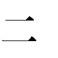
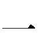

| 十三番目の人格 ISOLA (角川ホラー文庫) | |
| 貴志 祐介 | |
| 角川書店(角川グループパブリッシング) (2000) | |
十三番目の人格
ISOLA
貴志祐介
角川ホラー文庫
本作品の全部または一部を無断で複製、転載、配信、送信したり、ホームページ上に転載することを禁止します。また、本作品の内容を無断で改変、改ざん等を行うことも禁止します。
本作品購入時にご承諾いただいた規約により、有償・無償にかかわらず本作品を第三者に譲渡することはできません。
本作品を示すサムネイルなどのイメージ画像は、再ダウンロード時に予告なく変更される場合があります。
本作品は縦書きでレイアウトされています。
また、ご覧になるリーディングシステムにより、表示の差が認められることがあります。
１
靴底に触れる路面までが、非日常の感触を伝えていた。
足下には、ところどころに亀裂が走り、大きく隆起したり陥没したりしている。見渡すと、アスファルトの道路全体が、大波のようにうねっていた。由香里は分厚いビブラム底のトレッキング・ブーツを履いてきたのだが、何の脈絡もない傾斜には、しばしば足を取られそうになった。
歩くのにさえ難渋する歩道で、鉄錆の浮いた旧式の自転車が、よろめきながら由香里の脇をかすめていった。大きな荷台には、たくさんの水のペットボトルを入れた段ボール箱をくくりつけてある。乗っているのは七十歳は過ぎているであろう老人だった。異様にふらついているのは必ずしも路面のせいだけではなく、日頃自転車に乗りつけていないためだろう。
突然、老人が耳障りな音を立ててブレーキをかけた。重い荷物を積んだ自転車は、大きく傾いた。転倒するのではないかと、はらはらしながら見守っていると、前輪を九十度近く曲げて、何とか足をついて踏みとどまった。
真正面から、若い男の乗った二百五十ｃｃのバイクが走ってきたのだった。車道が渋滞して走れない以上、歩道を走るのは当然の権利だと思っているようだ。モトクロスのようなヘルメットとオーバーオールという姿で、大きなリュックサックを背負っている。前を歩いている邪魔な歩行者に対しては、苛立たしげにエンジンを空ぶかしして威嚇する。
由香里は、バイクを避けるために歩道の端に寄らなければならなかった。だが、そこには、路面から弾き出されたコンクリートブロックがいくつも無造作に転がっていた。とても歩ける状態ではないので、しかたなくブロックの上に乗って、バイクが通り過ぎるのを待つ。バイクの男は、マスクで顔を隠した由香里には目もくれなかった。
バイクの通り過ぎたあとには、黄色い砂煙がたった。液状化現象で吹き出した大量の泥が、今は乾燥して路面を覆っている。それが、風が吹いたり車が通ったりするたびに舞い上がるので、マスクは必需品だった。
再び歩き出してから、由香里は周囲を見回した。何日たっても、この光景には慣れそうもない。視野に入る建物はといえば、数軒に一軒の割合で無残に押し潰されていた。たいていは古い木造の建築物だったが、バブル経済華やかなりし頃に建てられたと思われるようなペンシルビルディングが斜め四十五度に傾いている様子には、現実感覚を崩壊させるようなものがあった。
由香里は、初めて被災地入りして、無残に落橋しドミノのように倒れた阪神高速を間近で見た時の衝撃を思い出した。あれからもう、一週間がたつのか。
一九九五年二月十四日。今日は聖バレンタインの日ではないか？ 由香里は心の中で苦笑した。去年の今時分、何をしていたのかはっきりと思い出すことができた。朝早く出勤して、店のマネージャーたちの机の中に、手作りのチョコレートを配っていたのだ。
今にして思えば、何とものどかで能天気な日々だった。手作りチョコとはいっても、市販の板チョコを、前の晩ほんの二時間ほどかけて湯煎にかけ、型抜きしただけのものだったが。そんな他愛もないことで、いい年をしたおじさんたちが内心どれだけ喜ぶのかは、由香里のような人間にしかわからないことだった。
目的地の西宮市内の病院へ近付くにつれて周囲の人間が多くなり、由香里は、頭にぼんやりとした鈍痛を感じた。
薬......。そうだ。ここへ来てからだから、薬も、ちょうど一週間のんでいないことになる。頭痛は当然のように、頻度と強さを増しつつあった。だが、今薬をのむわけにはいかなかった。塩酸クロルプロマジンの効果は絶大である。そうすることは、彼女の能力を封印してしまうことでもあるのだ。一時はあれほど憎んだ能力だったが、それが、今くらい必要とされている時はなかったのだ。
そして、今ほど、自分が無力だと思い知らされている時も。
「賀茂さんでしょ？ おはようさん！」
一瞬早く気配は感じていたが、声をかけられるのを待ってから、由香里は振り向いた。真っ赤なダウンジャケットにスキー帽、マスクという完全防備の姿で、小太りの中年女性が微笑んでいた。前に一、二度顔を合わせたことがある竹田和子という主婦だった。
「おはようございます」
由香里は、会釈した。
「朝早くから、ご苦労さんやわねえ。あなた、どこに泊まってるの？」
「梅田のビジネスホテルです」
「やったら、甲子園まで、阪神で通ってきてるんでしょう？ もっとゆっくりでもええのに」
和子は、由香里と並んで歩きながら、親しげに話しかけた。
「早く目が覚めちゃうんです。ホテルにいても、することもないし。竹田さんこそ、家事をなさりながらでしょうから、ほんとに大変ですよね」
「ぜーんぜん」
和子は、目の前で大きく手を振りながら言った。
「どうせ、水道もガスも出えへんでしょう。家事言うても、することないんよ。旦那が出勤してしもたら、あとは暇やから......」
由香里は、竹田和子の家が地震で相当な被害を受けたことも、彼女がボランティアに参加するためにどれだけの無理を重ねているかも、よく知っていたが、あえて何も言わなかった。
「でも、賀茂さんみたいな人がいてくれて、ほんま助かったわ。わたしら、みんな素人ばっかしでしょう？ 講習は受けたけど、ほんとのこと言うて、心理学のことなんかは、よくわからへんのよ」
由香里たちがボランティアとして働くようになったきっかけは、アメリカで災害後の心のケアを専門としているＮＧＯである、全米被災者救援組織（National Organization for Victim Assistance; NOVA）の講習会だった。
二月の初めに神戸ＹＭＣＡの一室を借りて催された講習会の内容は、被災者の救援活動に従事している専門職やボランティアの人間に対して、心理的な外傷（トラウマ）への対処の仕方を中心とするトレーニングやロールプレイングなどの実技指導と、トラウマが被災者に及ぼす長期的な影響の評価とアドバイスなどだった。
「それでいいんですよ。被災された方は、みなさん、ほんとにちょっとした人間的なふれ合いに飢えてるんだと思うんです。だから、親身になって話を聞いてあげるだけで、慰められますよ」
「でも、あの、何たら言うたかな......デブリー......？」
「ディブリーフィング（Debriefing）？」
「そうそう。どういう意味やったかしら？」
「まあ、事後説明というか......。被災者に対して、災害の体験によるストレスが引き起こす心や体の変化を説明して、それが特別なことではなく、自然な反応であることを教えて安心させてあげることですね」
「そうそう。そのデブリーやわ。心のケアの第一歩やって、講習で言ってたけど、わたしら、そんなこと、ようせんもの。ただ、世間話したり、仮設住宅の申し込み用紙を書いてあげたりくらいのことで」
和子は、好奇心にあふれた目を由香里に向けた。
「でも、賀茂さんは、若いのに心理学にもお詳しいし、たいしたもんやねえ。何か、そういう関係のお仕事でもしてはるの？」
突然、話題が自分のことに及んで、由香里はどきりとした。
「いいえ。ただ、昔から心理学に興味があったものですから。ほとんど、かじっただけのことなんです」
「でも、賀茂さんはすごいって、あちこちで評判よ。金曜グループの人から聞いたんやけど、最初は、心理学の小難しい言葉を知ってるだけかと思ってたのに、人の気持ちを汲み取るのが天才的やって」
「それは......たまたまですよ」
まずい、と由香里は思った。噂になるというのは危険信号である。これまでの経験から言うと、それは、彼女が示した能力が常識で説明できる範疇から逸脱しかけていることを意味している。もう少し自制しなければ......。
金曜日ということであれば、おそらく噂になったのはあの一件以外にはなかった。四日前だ。それまで神戸を回っていて、初めて西宮市の避難所を訪れた時のことだった。由香里は、その時の情景を思い出した。
海に近い巨大な体育館は、小規模な暖房はいくつか入っていたものの、容積が大きすぎるために、ほとんど効果はなかった。板張りの床は冷蔵庫のように冷えきっていて、靴下はだしで歩くのさえ辛いほどである。すしづめになった被災者たちは、その上に薄い毛布を重ねて敷くだけで寝泊まりしていた。
由香里たちボランティアは、その間を回っては、一人一人から話を聞いていくことにした。最初から心のケアのボランティアなどと言うと、必要以上に身構えられたり不快感を抱かれたりするケースが多かったので、由香里たちは『サポート・ボランティア』というふうに名のることになっていた。
初めのうちは、由香里の目には、虚脱状態にあるのは、むしろ若い年代の被災者たちであるように映った。七十代以上の高齢者の方が、はるかに平常心を保った、しっかりした受け答えをした。
何か辛いことはないかというボランティアたちの問いかけに対して、老人たちは異口同音に「戦争の時は、ほんまにこの世の生き地獄やった。それに比べたら、こんどの地震では、みなさんようしてくれるし、飢え死にする心配もない。たいしたことないです」と答えた。
だが、一時間も話さないうちに、そうやって静かに耐えている老人たちの心がすでに限界に近づいていることを、由香里は感じ始めていた。
たしかに、過去にもっと悲惨な境遇に耐えたという記憶があれば、現在の辛い状態を我慢するのに役立つかもしれない。だがそれは、しょせん一時しのぎにしかならない。
若者ならば、どんな困難に直面しても、豊富な心的エネルギーによって、それを克服していくことができるかもしれない。だが、老人の心からは、すでにそうしたバイタリティは失われているのだ。今後、不自由な避難生活が長引き、明日の展望が見えないストレスが蓄積するにつれ、老人たちの中から深刻な精神の危機に陥るものが続出することは、確実に予測できた。
すでに、由香里の目からは、静かに耐えている老人の何人かからは、ゆっくりと命の炎を燃やしつくし、死へと傾斜していく様子を見てとることができた。だが、由香里には、どうすることもできなかった。これが、この国の国民に対する扱い方なのだ。由香里は、ただ、自分の無力さを嚙みしめているしかなかった。
由香里は、四、五人目に、一人の老人に声をかけた。七十代も後半だろうと思われる老人の様子は、由香里の注意を引いた。表情には生気が乏しく、まぶたには、チック症のような痙攣まで見られた。老人は、明らかに抑鬱状態にあり、夜もよく眠れないと由香里に訴えた。
深刻なＰＴＳＤ（Post Traumatic Stress Disorder; 心的外傷後ストレス障害）が起きていることは、疑うすべもなかった。
老人の心は厚い氷に覆われている。由香里は、老人に話をさせることで、ゆっくりと氷を溶かそうと試みた。
「わしは、逃げてしもうたんや......」
老人の話は回りくどく、歯が欠けているために発音も不明瞭で、何度も堂々めぐりに陥ったが、大震災で住んでいた文化住宅が全壊したことはわかった。家財をすべて失い、飼っていた猫も行方がわからなくなったという。
由香里は、老人の話から、ＰＴＳＤに特有の、『時間の拡張』『視野の狭窄』『身体遊離』といった兆候を観察することができた。たとえば、実際に地震が起きていたのは秒単位のできごとにすぎないが、老人の話を聞いていると、それが十分以上続いていたような錯覚を抱かされるのだ。
この上は、一刻も早く、精神科医か臨床心理士のカウンセリングが必要だと思った。
だが、どこかがおかしかった。どこかが釈然とせず、由香里は、専門家に任せることにして、老人の前から立ち去ることができなかった。
苦労して同じ話を何度も聞いているうちに、しだいにその理由がわかってきた。老人はここ二十年ほどずっと、文化住宅で独り暮らしだったという。猫は老人よりも先に窓から逃げ出した。にもかかわらず、老人の態度からは、明らかな自責の念、いわゆる『生存者の罪悪感』が感じ取れたのだ。
なぜだ？ 誰か家族が生き埋めになって死んだのなら、老人が自分を責める気持ちも分かるが、家にはほかに誰もいなかったのではないのか？
老人は、いったい誰に対して罪悪感を抱いているのだろう？
由香里は、二時間以上床に座って、老人の話し相手になってやった。厚い氷にようやくひびが入ったのは、這い上がってくる冷気で、彼女の膝の感覚がほとんど失われたころだった。
「わしは、逃げた。怖かったんや。何も考えるゆとりもなかった。もしあいつらに捕まったらと思うと......」
その瞬間、氷が大きく割れ、下から長い間眠っていた真っ赤な火口が姿を見せた。それは、今でも生々しい老人の心の傷口だった。由香里には、それだけ聞けば十分だった。老人がずっと語っていたのは、本当は地震のことではなかったのだ。
「誰でも怖ければ逃げるわ。どんな勇気のある人でも」
由香里は、老人の目を見ながら、そっとささやいた。
「戦争だったんだもの。誰でもみんな、自分が助かることだけで精一杯だったんでしょう？ 亡くなった戦友さんたちも、あなたのことを恨んだりはしていないわ。立場が逆だったら、あなたは助かった人のことを恨むかしら？ せめて、一人でも助かって良かったって思ってるはずよ。だからもう、自分を責めちゃだめ」
老人は、充血した目で、じっと由香里を見つめた。ぽかんとしていた。やがて、由香里の言葉が静かに意識に浸透したのだろう、一筋、二筋と、涙が頰を伝った。
由香里は、老人を苦しめていたのは、いわゆるフラッシュバックと呼ばれる現象であることに気がついていた。阪神大震災という強烈な精神的外傷によって、それまで心の奥深く眠っていた、過去の別の精神的外傷が再燃したのである。この年代の人々の場合には、多くは、戦争にまつわる体験だった。
老人は、由香里の胸にすがって号泣した。被災者たちは、驚いてその様子を見ていた。ボランティアたちも集まってきたが、二人を遠巻きにするだけで、声をかけようとはしなかった。事情はわからないが、これまで誰にも心を開かなかった老人の心の琴線に、由香里がようやく触れるのに成功したのだ。そのことだけは、誰の目にも明らかだった。
その晩のボランティアのミーティングでも、由香里は、老人の心を苦しめていた体験について、詳しくは語らなかった。老人のプライバシーにかかわる問題だったし、自慢話のようにするのは気が引けたからだった。
自分のやっていることに、いったいどんな意味があるのだろう？ 由香里は、その晩ホテルに帰って一人になると、自問自答した。もしかすると、単なる自己満足にすぎないのではないのだろうか？ 老人は、確かに一時的にカタルシスを得ることができた。だが、明日からは、再び、生活の再建という解答のない問題に直面しなくてはならないのだ。
しかし、それでも由香里は、少なくとも休暇が取れるかぎりは被災者の心のケアの手助けを続ける決心を変えなかったし、賀茂由香里という二十歳そこそこの若いボランティアが、被災者の苦しみを見抜く抜群の共感能力をもっているという噂は、あまり接触のないはずの曜日の違うグループにまで広まることになったのだった。
由香里と竹田和子が連れ立って病院へ入ると、顔なじみのボランティア数名に会った。ほとんどが地元の主婦で、自身も大なり小なり被災者だった。
「あ。賀茂さん」
「賀茂さんやわ」
ボランティアの間では、もう噂は、かなり広まっているらしかった。由香里は必要以上に注目されるのは避けたかったのだが、隣にくっついている竹田和子は、得意げに、むしろ由香里を見せびらかすようにした。正義感が強く心の暖かい女性ではあったが、そういうところは、やはり中年のおばさんそのものであり、由香里にとっては迷惑この上なかった。
由香里が和子と一緒に大部屋の入院患者を見舞おうとすると、青木なんとかさんという主婦のボランティアに声をかけられた。下の名前は思い出すことができない。
「賀茂さん。ちょっと見てほしい子がいるのよ。難しい子みたいなんで、わたしでは、とっても役不足で......」
「難しいって、どういう子なんですか？」
役不足という言葉の使い方が間違っていると思ったが、由香里はあえて指摘はしなかった。
「それが、高校生の女の子なんやけど、震災で頭を打って入院してるの。いくら話しかけても、通じへんのよ。家族も全然見舞いに来てないみたいやし、きっと何か事情があるんやと思うんやわ」
由香里はためらった。これ以上注目を浴びるようなことをしでかせば、彼女の秘密が一気に露呈しかねない。
「その子、ずっと、黙ったままなん？」
竹田和子が質問した。
「それが、その時々で、態度が全然違うんよ。もう三回ほど会ってるんやけど、三回とも別人みたいで。自分からは話さんでも、こっちの言うことは聞いてくれてるなーて思ったら、次の時には、頭から、わたしを小馬鹿にしたみたいな態度を取ったり」
青木なんとかさんは、ぶつぶつとこぼした。
「むずかしい年頃なんやわ。うちの子も、高校生くらいの時、そんなことあったわ」
竹田和子は、由香里に向き直って言った。
「賀茂さん。引き受けたげたら？ やっぱり、こういうことは才能のある人やないと」由香里の返事を待たずに竹田和子が「どこの部屋？」などと聞いたので、由香里は、うやむやのうちに、その子と話をすることを承諾したことになってしまった。
少女が入院していたのは、外科病棟だった。六人部屋の外にあった名札では、彼女の名前は『森谷千尋』となっていた。由香里は、一番窓際のベッドに歩み寄った。昼間だというのに、カーテンですっかり回りを隠している。
「今日は。起きてるかしら？」
一瞬間があって、カーテンの奥から声がした。
「......はい。どちらさんですか？」
「わたし、賀茂由香里っていいます。青木さんから、あなたのお話を聞いてきたの。ちょっとお話できないかしら？」
ゆっくりとカーテンが引き開けられた。
ベッドの上に座っていたのは、小柄で、意外なくらい可愛らしい顔だちをした少女だった。問題児のようには見えないが、表情は暗く、元気がなかった。薄いブルーのパジャマを着て、髪を三つ編みにしてたらしている。頭と左手に包帯を巻いているのが、痛々しかった。
「森谷千尋さんね？」
少女は、なぜか少し躊躇してから、うなずいた。
「わたしね、サポート・ボランティアっていう仕事をしてるのよ。今度の地震で被災した人たちの間を回って、お話を聞いてるの。もしよかったら、ちょっと、おしゃべりしない？」
「話って......？」
「ああ。ただのおしゃべりよ。一日中病院にいるのは退屈でしょう？ 何でもいいから誰かと話をすれば、気も晴れるわよ」
千尋は黙っていたが、承諾とも受け取れる態度だった。由香里は、椅子を持って少女の枕元に行くと座った。
「毎日、何してるの？」
「別に。特にすることもないから......」
由香里は、千尋の枕元に目をやり、驚くほど物が少ないことに気がついた。震災で怪我をして入院したということだから、もう一か月近くになる。それだけ入院していれば、普段はあまり本を読まない人でも雑誌や文庫本がたまるものなのに、枕元に見えるのは、古びた本が二冊きりだった。
それも、一冊は『新字源』───なんと漢和辞典だった。もう一冊は、上田秋成の『雨月物語・春雨物語』である。こちらも、およそ入院中に読むような本ではなかった。
「あら、こんな本を読んでるの？」
由香里は、ごく自然に手を伸ばしかけた。
「さわらないで！」
千尋は、突然、さっきまでとは別人のような大声を上げた。由香里はぎくりとして凝固し、大部屋の入院患者たちが、いっせいに由香里の方を見た。
少女は、由香里に背を向けて、二冊の本を、かき抱くようなしぐさをした。
「ごめんなさい。大事な本だったのね？」
由香里があやまると、少女は振り向いた。由香里は、おやと思った。さっきとは表情が一変している。さっきまでは悲しげで、外界のできごとから自己を閉ざそうとしているような印象だったのが、目に光が宿り、由香里に対して興味を抱いているような顔つきに一変していた。
「いいんです。これ、亡くなった父の形見だったから」
少女の声にも、微妙な変化が生じているようだった。さっきよりも明るく、一定の周波数域に収まるようコントロールされた、意志的な声に変わっている。
「お父さん、亡くなられたの？」
千尋は、由香里の声音に含まれた気づかいを読み取ったように、首を振った。
「違うんです。この間の地震でじゃないんです。わたしが五歳の時に......。車が谷底に落ちて、お父さん、父も母も亡くなりました」
「そう」
由香里は、あえて質問はせず、少女が自発的に話すのにまかせた。
「その時のこと、いまでも時々思い出すんです。最後の晩のこと......」
由香里は、緊張した。この少女もまた、阪神大震災が契機となったフラッシュバックに悩んでいるのだろうか？
「どんなことを、思い出すの？」
「それは......いろいろですけど。わたしは、車の前部座席の幼児用シートに座っていて、窓ガラスに、いっぱい雨粒がついていたこととか」
千尋は、由香里を窺うような目になった。
「変でしょう？ こんなのって」
由香里は、微笑みながら、かぶりを振った。
「そんなことないわ」
千尋は目をつぶった。何か、込み上げてくるものに耐えているような表情だった。由香里はもう少しで声をかけそうになったが、自制した。
「雨が、いっぱいふってたわ」
千尋は、急に偏頭痛に襲われたように、こめかみを押さえた。すると、彼女の心の中から、悲しみに彩られたもう一つの声が聞こえてきた。
『おとうさんも、おかあさんも、しんじゃったのね......』
由香里は、驚愕した。それは、今まで話をしていた利発そうな少女のものとは思えない、せいぜい四、五歳の子供のような幼い思考だったからだ。
千尋は、その間にも頭痛に耐えているのがわかった。幼女の心の声は、静かに彼女の無意識の中に沈んでいき、代わって、別の存在が浮上してきた。
『ヒトミを出しちゃ、だめよ。変に思われるわ。わたしが、話をするから』
この子は、多重人格なんだ......！
これまで、さまざまな人々の心の中を垣間見てきた由香里にとっても、それは初めての経験だった。
賀茂由香里は、いわゆるテレパスではなかった。
ＳＦ小説や映画などに登場するテレパスは、まるで本のページをめくるかテレビのスイッチを入れるように、人の心を自由に読めるということになっている。これに対して由香里は、思考を読むのではなく、相手の心から発散される感情の波動を感じるのである。
感情は、純粋なものである場合もあるが、たいていの場合は、特定の言葉や映像、音などのイメージと分かちがたく結びついている。同じひとつの風景も、ある人間にとってはノスタルジーの象徴であったり、別の人間には、心の底に秘めた憎悪を呼び覚ますものであったりする。そうした心象風景は、もはや単なる景色ではなく、複雑な感情の形成するモザイク模様である。
したがって、感情の波動を感じるということは、実際上、それらの形造っている音を聞き、映像を眺めることと何の変わりもなかった。
そこに込められている感情が強ければ強いほど、イメージは鮮明になる。相手が強烈な感情的体験を反芻している時など、由香里の脳裏には、映画を見ているようにくっきりと視覚像が結ばれることもあれば、更には、自分自身がその渦中に投げこまれて、すべてを実際に体験しているかのような錯覚にとらわれることさえあった。
自分の能力の正体を知るために、由香里はここ二、三年、暇を見ては図書館に通って心理学や超心理学などの文献を渉猟してきた。残念ながら、いわゆるテレパシーについては、信頼できる研究はほとんどなされていないことがわかったが、ある心理学の文献の中で、由香里は、相手の感情を読み取る特殊な能力を持った人間をエンパス（Empath）と呼ぶことを知った。
能力の方を指すエンパシー（Empathy）という英語は、通常は単なる感情移入の意味で使われている。由香里の能力も、他者に対する感情移入の能力が極限にまで発達したものという見方もできる。
ユングは、人間の精神の機能を、論理、感情、感覚、直観の四つに分類したが、この中で桁外れのパワーを持っているのは感情である。唯一、感情だけが、暗い海のような無意識の中で眠っている心のエネルギーを解き放つことができる。強度の感情的ストレスにさらされた人間では、この力が内攻し、わずか数秒で胃壁に穴が開くこともあるのだ。
同じ文献によれば、古くから以心伝心という言葉で知られているように、激怒、悲嘆、憎悪といった強い心的エネルギーをともなった感情は、人間の心から心へと直接伝わることがあるのだという。そうした能力は、通常は文明、特に言語の発達と共に衰退していくが、現代の特別な能力を持っていない普通の人間の場合でも、しばしば五感を介さずに、直接相手の感情を感じ取っているらしかった。
由香里の能力も、もしかすると、そうした古代の人間の能力が突然復活した、いわゆる先祖返りなのかもしれなかった。
由香里は、生まれた時から、敏感に大人の気分を察知する赤ん坊だったらしい。その頃に彼女の面倒をよく見てくれたという叔母から、そう聞かされたことがあった。
「ほんとに、びっくりするくらいよ。まるで、わたしの心が読めるみたいって、お姉さんによく言ったものよ。あんたが、ぴーぴー泣いてて、うるさいなーって思ったとたん、ぴたっと泣きやむんだもん」
その時分のできごとは、具体的なエピソードとしては記憶に残っていない。だが、赤ん坊だった由香里が味わっていた漠然とした感じや雰囲気は、今でもはっきりと思い出すことができた。
揺りかごに寝ている彼女を、かわるがわる覗きこむ大人たち。普通の人間関係では決して見せないような満面の笑みをたたえ、愚かしく頰をふくらませたり、舌を出して見せたりする。誰もが、由香里に対するあふれんばかりの愛情と好意を発散させながら。
由香里の五感は、まだはっきりとは分化しておらず、微妙に混じり合っていた。だが、自分にとって好ましいものだけは、はっきりと認識できた。
彼女が生まれて初めて感じた周囲の人たちの感情は、ピンクの雲のようなイメージで、ふわふわした触感を持っていた。それは、笑顔や、彼女に向かって伸ばされる優しい手の周囲を、輝くオーラのように取り巻いていた。
大人たちは、誰もが由香里の笑顔を望んでいた。彼女はすぐに、自分の笑顔が大人たちの気持ちを明るくすることに気がついた。だから由香里は、人の顔を見れば、いつも機嫌よく、にこにこと笑っていた。空腹だったりオムツが濡れたりして泣くことがあっても、必要なメッセージが大人に伝わりさえすれば、すぐに泣きやんだ。
それとは逆に、家族のうちの誰かがひどく悲しんでいたり落ち込んでいたりすると、由香里自身には泣くような理由が全然ないのに、突然、火がついたように泣き出すこともあった。そんな時、彼女の目には、空気の色が変わって見えたのだった。いまでも覚えているが、悲しみは冷たく湿った霧のような感触で、色は赤に近い紫だった。
由香里が泣き出すと、大人たちは狼狽し、懸命になって彼女をあやそうとした。暗い考えを心にはびこらせていた張本人は、まるで由香里にそのことを指摘されたような後ろめたさを感じて、これではいかんと気持ちを切り替えたものだった。
だが、幼児期になると、そうした並みはずれた共感の能力はむしろ後退して、一般人に近いものになった。それからしばらくが、由香里の人生のうちで一番幸せな時期だったのかもしれない。
子供時代の由香里は人気者だった。美貌はすでにその頃から際立っており、常にクラスのアイドル的な存在だったが、それを鼻にかけるようなこともなかった。勉強もスポーツも、特に優秀というわけではなかったが、人並み以上だった。だが、彼女が本当に友達から好かれた理由は、友達には常に思いやりを持って接し、人の気持ちを傷つけるようなことは決して言わなかったことだった。
小学六年生の時には、級友たちから無理やりかつぎ出されて、生徒会の会長選に立候補したこともあった。誰もが、彼女を拍手をもって迎えた。対立候補さえ、選挙演説の途中で、由香里の方が会長にふさわしいなどと口走る始末だった。
結果は、誰もが予想したように、地滑り的な大勝利である。『どんな泡沫候補にも一票は入る』という有名な選挙の鉄則さえ、危うく覆してしまうところだった。
ところが、中学校に入学するころ、思春期になってから、すべてが狂い始めた。
由香里の『共感する』能力は、ふたたび異常な発達を遂げ始めたのだ。
彼女は、町を歩いているだけで、人々の抱いている強い感情が、心の中に流れ込んでくるのを感じるようになった。そして、強い感情というものは、おおむねネガティブなものである場合が多い。
最初は、漠然とした気分や思考感情の渦のようなものに過ぎなかった。だが、それはしだいに大きくなり、ついには、はっきりとした言葉や内容をともなうようになった。由香里は、自分が発狂しかけているのではないかと怯えたこともあったが、聞こえてくるのが幻聴などではなく実際に人々が頭の中で思考している内容であることには確信があった。逆に、精神病のレッテルを貼られてしまうことを恐れて、誰にも相談することはできなかった。
一年もすると、ドアを開けて一歩通りに出たとたん、声は奔流のように押し寄せてくるようになった。それを押しとどめるすべは彼女にはなかったし、どんなに無視しようとつとめても、無視しきれるものではなかった。まるで、悪意のある妖精が、メガホンを持って彼女の肩口に止まって、四六時中耳元で、聞きたくもない愚痴や悪罵をがなりたてているようなものだった。
バスに乗ると、うつろな目をした中年女が吊り皮につかまりながら、心の中で呪文のようにつぶやいている。
『あの子は、まだ六歳だったのに......。人生の、いろんな楽しいことなんか、なんにも知らずに！ もう二度と帰ってこないなんて。こんなの不公平よ。隣の健太ちゃんも、勇平君も、みんな元気じゃないの？ どうしてよ？ どうしてうちの子だけが......！』
アタッシェケースを膝の上に抱いたセールスマンは、じっと目を閉じて眠っているように見えたが、車の揺れに合わせて叫んでいた。
『ああ、もう、ちくしょう！ やってられるか！ 何もかも、いやになった。このままどこかへ行ってしまいたい......！』
妙に鋭く据わった目を窓の外に向けているサラリーマンは、息苦しそうにネクタイの結び目をいじり回しながら唸っている。
『くそったれ。課長の野郎！ 管理職っていうのは、部下にやる気を起こさせるのが仕事だろうが。やる気を失わせてどうすんだよ？ ねちねちねちねち嫌みばっかり言いやがって。やめる時には、必ず殴ってやる。あの乱杭歯を叩き折って、血まみれにしてやる。俺の前で、土下座して謝らせてやる！』
事務服を着て茶封筒を持ったＯＬは、際限なく愚痴を垂れ流し続けていた。
『なんで、わたしがあんな子に、あそこまで言われないといけないのよ？ あんな、まだ入って一、二年の子に。わたしの方が先輩なのに。わたしが何をしたって言うの？ どうして、いっつもわたしばかり責められるの？ わたしは、ちっとも悪くないのに。わたしなんか......わたしなんか、全然悪くないわよ！』
バスを降りても、由香里の周囲は、無数の声、声、声で埋めつくされていた。
『苦しい。胸が痛い。ああ、気分が悪い。うう。吐き気がする。ああ、脚が、頭が、手が、全身が......』
『僕なんか、もう、生きてたってしょうがないんだ。勉強も、サッカーも、何をやってもだめだ。同じ人間なのに、どうして僕にだけ、何のとりえもないんだろう？ こんなのは不公平だ。世の中で、僕だけが不幸だ僕だけが不幸だ不幸なのは僕だけだ......！』
『寂しくてたまらない。誰も俺のことなど考えてはいない。家族も、みんな俺を見捨てた。いや、あんなのはもう家族じゃない！ これが、死に物狂いで働き続けた俺の人生の終着点とは。それは、俺は仕事一途で、家族のことを顧みなかったかもしれない。だが、それもみんな家族のためじゃないか！ あの仏頂面は何だ！ やりたいことも、何もかも我慢して頑張ってきたのに。誰一人俺の気持ちなど考えようともしない。本当に、何一ついいことがなかった。このまま死を待つだけの人生か......！』
自然の成り行きとして、由香里は、できるだけ外出を避けて、家の中に閉じこもるようになった。少しでも外に出ると、生温かく、どろどろとした思考と感情の波が、執拗に彼女を追いかけ、まとわりつき、心の内部にまで侵入して酸のように侵食するのだった。
登校は、事実上不可能になった。そうして由香里は、一日中頭を抱えて布団の中に潜るようになっていた。だが、家庭も彼女の安住の地にはならなかった。
まっさきに由香里が気づかざるを得なかったのは、家族の彼女を見る目が冷たくなったことだった。
両親は、口には出さなかったが、由香里を見るたびに、心の中で、自慢だった娘が突然『おかしくなった』ことを嘆かずにはいなかった。
『どうして、こんなことになったんだ？』『何が、悪かったのかしら？』『俺は、父親の勤めはちゃんと果たした』『浮気もせずに頑張ってきた』『あんなに、いい子だったのに』『育て方を、間違えたのか？』『甘やかし過ぎた？ いや、そんなはずはないわ』『このままでは、将来どうなるのか？』『あの人が、休みの日くらい、もう少し家にいてくれたら』『だいたい、あいつが、カルチャーセンターだ何だって浮かれてるから、こんなことになるんだ......！』
それまで仲のよかった両親が、自分のために険悪になるのを見るほど、由香里にとって辛いことはなかった。
十四歳の誕生日を迎えてからしばらくして、由香里の精神のたがは、完全にはずれてしまった。むしろ、それまで保った方が奇跡と言うべきかもしれない。
ある晩のことだった。夕食後、由香里は、一人で机に向かってぼんやりとしていた。頭の中でうず巻く声は、今も消えていなかった。最近では、家の中にいても、遠くの声が聞こえてくるようになっていた。もはや、疲労の極に達していて、しばしば、それが自分の考えていることであるのか人の思考であるのかも、区別がつかないことさえあった。
『死にたい......』という声が、遠くから風に乗って、かすかに聞こえてきた。
ふっと顔を上げて見ると、ペン立てに、黄色い柄のカッターナイフが立っていた。それは、何かの啓示であるかのように、妙にくっきりと浮き上がって見えた。それがそこにあること自体に、神の意志のようなものを感じた。
由香里は、気がつくと、誘われるようにして、カッターナイフを手に取っていた。
『もう、死んでしまいたい......！』
声は、さっきより強まったようだった。
刃をいっぱいに出してみる。小気味よい音がした。刻み目の入ったステンレスの刃は、蛍光灯の明かりを受けて鈍く光っていた。そっと、手首の上を滑らせてみる。これで、力を入れさえすれば、頭の中の声は永遠に聞こえなくなるのだと思った。それは、実にお手軽で単純明解な解決策に思えた。どうして、今まで思いつかなかったのだろう？
『さあ、死のう！ 手首を切りさえすれば、この苦しみから逃れられる。......さあ、勇気を出して、早く！』
声にうながされるようにして、二度、三度、浅いためらい傷をつけてから、由香里は思いきってカッターナイフを引いた。脳天まで達するような激痛に、カッターナイフを取り落とす。真っ赤な熱い液体が吹き出して、ぽたぽたと畳の上に落ちた。
その時、背後で誰かが襖を開け、悲鳴を上げたのが聞こえた......。
幸いなことに、発見が早かったのと、切った場所が動脈をはずれていたために大事には至らなかった。
この日、ほぼ同時刻に、十キロメートルほど離れた場所で、一人の女子大生が、やはりカッターナイフで手首を切って自殺を図っていた。原因は失恋だったが、お湯の入った浴槽の中だったために血液の流出が早かったことと、朝まで発見されなかったために、残念ながら助からなかった。女子大生は、翌朝発見された時には、すでに死後硬直が始まっており、救急病院へは運ばれなかった。そのため、この奇妙な暗合に気づいた人間は、一人もいなかった。
由香里は病院に運ばれて応急手当を受けた後、救急外科から精神科へと移された。これまでは外聞を気にして、精神科の受診をさせることをためらっていた両親も、こうなっては、娘の精神に問題があると認めざるをえなかった。
由香里は、精神科の医師によって、破瓜型の精神分裂病と診断された。
『破瓜』というのは、もともと、瓜の字を破るとふたつの八の字になることから、女性の十六歳を指す言葉である。破瓜型は、精神分裂病の中では最も早発性であり、寛解率の低い、つまり直りにくい型とされていた。
医師の診断は、根本的に誤っていた。しかし、皮肉なことに、これが結果的に由香里を救うことになった。
彼女が入院させられた病棟は、きわめて静かだった。単に音がしないというだけではなく、今まで間断なく彼女につきまとっていた声も、ごくわずかの思考感情の雑音さえも、ほとんど聞こえてこなかったのだ。おかげで、由香里は、本当に久しぶりに熟睡することができた。
ここには重度の精神分裂病患者ばかりが収容されており、感情の無風地帯に近かったことが幸いしたのだった。
さらに、由香里の『妄想と幻覚』の治療のために投与された塩酸クロルプロマジンという抗精神薬が、彼女のエンパシーの能力を効果的に阻害したのだった。
きちんと薬をのんでいるかぎり一般人と変わらない状態を維持できることがわかり、由香里はしだいに落ち着きを取り戻した。他人の強い感情に共感できる能力は妄想ではないという確信があったが、医師に対してそれを主張するのが得策でないことぐらいは、由香里にはわかっていた。
三か月後、由香里は自宅に戻ることを許され、それからは週に一度だけ通院するようになった。
しかし、一度断ち切られてしまうと、決して元には戻らないものもあった。家族の感情的な紐帯が、それである。由香里には、もはや家族の愛情に対する素朴な信頼はなくなっていたし、両親は、腫れ物にさわるようにしか彼女に接しなくなった。
二歳年下の妹の恵子は、以前はよく由香里になついていたものだった。学校中の人気者である由香里の妹であることを自慢し、何かというと「お姉ちゃんは......」と言うのが口癖だった。学校で由香里を見つけると、用もないのに金魚の糞のようにくっついて歩いたものだった。
だが、今の恵子は、もはや厄介者でしかなくなった姉の存在を恥じ、友達に対しても、ひた隠しにするようになっていた。家庭内で恵子が由香里に注ぐ視線の冷ややかさは、たとえエンパシー能力がなくとも、間違いようがなかった。
恵子は、食事の時も由香里を見ないようにしていたし、どこかで鉢合わせすることがあっても、決して視線を合わせようとはしなかった。退院してからの三年間に、恵子が由香里に口をきいたのは、友達を家に呼ぶからその間どこかへいっていてくれという一言だけだった。
ある晩、由香里は、退院後初めて薬をのまずに床に入った。彼女は十八歳の誕生日を迎えたばかりで、本来ならば、大学に入学しているはずの年だった。
家族三人は、食堂で何事かを話し合っていた。最近、彼らは、由香里のいないところでひそひそ話をすることが多くなっていた。由香里は、どうしてもその内容を知っておきたいと思ったのだった。
家族の場合は、遺伝的に感情のパターンが似通っているためか、長い間一緒に生活しているためか、まったくの他人よりは、はるかに感情の波をキャッチしやすかった。このため、由香里は、寝室にいながら、キッチンでの家族の会話や思考内容を、その場にいるように鮮明に聞き取ることができた。
しばらく聞いていた由香里は、息を飲み、身をこわばらせた。自分が家族からどう思われているのかが、残酷なまでにはっきりした事実となって伝わってきたのだ。
『もう、いいかげんにしてほしいよ！ わたしが高橋くんにふられたのは、お姉ちゃんのせいなんだからね！』
恵子はテーブルを叩きながら、両親に向かって大声を張り上げていた。
恵子の心は、しゃべりながら、さまざまなことを同時に考えていた。興奮していたことは事実だが、大声も、ちゃんと由香里には聞こえない程度にとどめていた。恵子は、彼女がふられたのには実際には別の理由があったことをはっきりと知っていたが、なぜかそれを姉のせいにしてもかまわないと考えていた。
噓をついていることをはっきりと自覚しながら、自分の言葉と演技に酔い、恵子の目には涙があふれんばかりだった。
『どうして、わたしばっかり、こんな目にあわなくちゃいけないのよお？ 高橋くんのこと、ほんとに好きだったのに......！』
両親の方は、高橋くんの一件については別にどうでもいいと思っていたものの、『このままでは、将来、恵子の縁談にもさしつかえるかもしれない』と考え始めていた。
『由香里のことは、そろそろ何か考えて、きちんとした結論を出さなければ......』
恵子は、今となっては、娘の花嫁姿を見ることを生きがいにしていた賀茂夫妻に残された唯一の希望であり、優先順位はあまりにも明白だった。
『ああ！ うっとうしいなあ、もう。お父さんたちが、あの人をどっか山奥の目立たない施設にでも入れてくれたらいいのに！』
当の恵子の方は、とりあえず言おうと思っていたことを全部言ってしまって喉が渇き、お茶を飲んで小休止しながら、そう考えていた。
『......いっそのこと、死んでくれたら助かるのになあ。薬ののみ過ぎとかで。そうすれば、友達にも作り話がしやすいのに。思いっきり可哀想な話にすれば、同情してもらえるかもしんない』
それから恵子は、由香里が偶然の事故で死ぬという、さまざまなシナリオについて夢想し始めた。
多少ニュアンスは違うものの、期せずして、両親も同じようなことを考えていた。
『ひょっとすると、あの子は、死んでしまった方が幸せなのかもしれないなあ......』
由香里は布団をかぶり、耳を覆った。もちろん、そうすることによって頭の中に流れ込んでくる声を遮断することなどできなかったが。
やがて由香里は、布団から手を伸ばして、彼女の唯一の友であるピンクの錠剤を探り、涙とともにのみ下した。しばらくすると、周囲の声は遠のいていき、彼女は再び平穏な世界に戻った。
だが、もはや、以前と同じ世界は二度と帰っては来ないことはわかっていた。今の由香里にとって、自尊心だけが最後に残った支えだった。彼らの考えていることがわかってしまった以上、家族の厄介者でいることには耐えられなかった。明け方まで考えて、彼女は家を出ることを決心した。
机の奥から、子供のころからずっと貯めていた郵便貯金の通帳を出して調べると、かなりの額になっていた。本当だったら、由香里の大学進学のための費用になるはずだったお金だった。幸い、由香里は昔から浪費癖とは無縁だったために、精神科から退院してからも、通帳と印鑑を持つことを許されていた。
由香里は、簡単な身の回りの品をボストンバッグ一個に詰めて、近くの郵便局で貯金の全額を下ろすと、鈍行列車に乗って上京した。誘拐などの重大犯罪と疑われないように、ルーズリーフの切れ端に、『これ以上、家族と一緒に暮らすのがいやになったので、一人で暮らすことにしました』という簡単な書き置きは残したが、あえて『捜さないでくれ』とは書かなかった。何と書こうと、捜したい親は捜すし、そうでない親は捜さない。
東京に着くと、由香里は、すぐさま現実に直面した。身元照会のいらない簡単なアルバイトの口ならいくつでもあったが、保証人もなしでは、一人でアパートを借りることすらできなかった。いくら安いカプセルホテルでも、宿泊費は馬鹿にならない。
その上、塩酸クロルプロマジンをもらうために、以前と同じ精神科の病院へ通院する必要もあった。健康保険が使えないとなると、どれだけの負担になるのだろう？
要するに、このままでは、どう頑張ってみても、支出が収入を超過するのは明らかだった。貯金を全部使い切ってしまったら、ホームレスになるしか道はなかった。
それでも、由香里は、家を出てきたことを後悔はしなかった。他にとるべき道はなかったのだ。したがって、家に戻るという選択肢は、一度も由香里の頭には浮かばなかった。彼女は、じっくりと考えて、今となっては自分の唯一の財産は若さと容姿しかないと悟った。
由香里は、捜索を恐れて旅館やカプセルホテルを転々としながら、夕刊紙の求人広告を調べた。それでも、最後の決断に踏み切るまでには時間がかかった。
一週間後、彼女はとうとう意を決して新宿に行き、ある店を訪ねた。面接したマネージャーは、由香里の顔を見て、即時採用を決定した。彼女の人生の新しい幕は、こうして開いたのだった。
２
森谷千尋という少女が五歳の時に経験した『対象喪失』の記憶は、由香里の中にも忘れがたい印象を残していた。
由香里が、翌日、もう一度少女の病室を訪ねると、千尋はパジャマの上にガウンをはおった姿で病室の窓際に座り、文庫判の『ノルウェイの森』を熱心に読んでいた。漢和辞典や『雨月物語』しか読む本がないのでは寂しいだろうと思って、昨日の帰りぎわに由香里が残していったのである。千尋の本を読むスピードはなかなかのものらしく、すでに上巻を読み終えて、下巻にかかっていた。
「こんにちは」
由香里が声をかけると、千尋は目を上げて微笑んだ。その表情を見て、由香里は、おやと思った。昨日話した感じでは、もう少し陰気で引っ込み思案の印象があったのだ。心なしか、頰がふっくらして顔色もいいようだ。
「面白い、それ？」
「ええ。主人公のワタナベ君の性格だけは、ちょっと好きになれないけど......。いま、レイコさんの打ち明け話が終わったところ」
レイコさんは、運命のいたずらから、数度にわたって理不尽な精神的打撃に見舞われ、精神病院で療養することになるキャラクターだった。
「入院中に読むには、あんまりいい本じゃなかったかもしれないわね。たまたま持ってたのが、それしかなかったの」
千尋は首を振った。ていねいに栞をして、本を閉じる。
「そんなことないわ。人はいっぱい死ぬけど、それほど嫌な気分にならないもの。何ていうか、現実とは違って、ワンクッションおいたような、独特の雰囲気があって」
おそらく千尋の直面している現実は、小説より過酷なものなのだろうと、由香里は想像した。
「よかった。後になってから、あなたが落ち込んでるんじゃないかって、心配になったのよ」
千尋は首をかしげた。
「でも、精神病院って、ほんとに、こんなところなんですか？」
由香里がかつて精神科に入院していたことなど、千尋が知っているはずはない。何の悪気もない質問であることはわかっていたのだが、由香里は少々鼻白んだ。
「そうね......。それは少し、理想的に書かれてるような気がするわ。作者が、こうあってほしいっていう、願望じゃないかしら？」
「そう。やっぱりね」
千尋は、少しがっかりしたような顔をした。
由香里は、病室に入ってから、ずっと気をつけて心の耳を澄ませていたが、まだ、千尋の思考を読むことはできなかった。もともと、感情の起伏がそれほどないタイプなのかもしれない。
それにしても、どことなくよそよそしかった昨日とは違って、すっかり打ち解けた態度だった。本という、話の取っかかりができたことがよかったのだろうか？
「今日も、おしゃべりしに来てくれたんですか？」
「ええ。昨日は時間がなくて、あんまり話せなかったでしょう？ 今日は、お土産を持ってきたわ」
由香里は、デイパックから、魔法瓶に入った紅茶と、紙の箱入りのシュークリームを、ちらりと出して見せ、微笑した。
千尋は、わあっと歓声を上げかけて、大部屋の他の入院患者のことに気がついたのか、あわてて口元を押さえた。そんなところは、何の屈託もないティーンエイジャーそのものである。由香里の顔も自然にほころんだ。
千尋はベッドに戻り、由香里は、看護婦に見つからないように、回りにカーテンを引いた。枕元の椅子に座って、魔法瓶の蓋に湯気の立つ熱い紅茶を注ぎ、千尋に手渡す。
「こんなの、久しぶりだわ。病院の食事って、栄養のことしか考えてないんだもの」
「そう思って、買ってきたの。本当のこと言うと、半分は、わたしが食べたいと思ったからなんだけど」
「......でも、どうして、わたしのことを、そんなに気にしてくれるんですか？ ほかにも、地震でけがをした人はたくさんいるのに？」
「別に理由はないわよ」
「もしかすると......」
一瞬、千尋の言葉がとぎれた。見ると、紅茶を持ったままこめかみに手を当てて、揉むような動作をしている。年齢には似合わないしぐさだった。
「......前にわたしと話をしたがってた人が、何か言ったんですか？」
千尋は、顔を上げて言ったが、まだ頭痛がするように顔をしかめている。
「青木さんのこと？」
「名前は知りません。けど、何か、しつこく話しかけてきて。あのおばさん、わたしのこと、何て言ってました？」
由香里は、はっとした。千尋の内部で、何か動きがあったような気がしたのだ。ごく微妙な感じの変化なのだが、たとえて言えば、さっきまでそこに座っていた人物が立ち上がって、別の人間に席を譲ったような......。
そう思ってみると、表情もはっきり違う。さっきまでの理知的で感じのいい少女から、小狡いような目つきに変わっていた。細められた目の中では、黒目が絶えず小刻みに左右に振れ続けている。
また、人格交代が起こったのだろうか？
「特に、何も言ってなかったわ。ただ、あなたともっとよく話ができなかったのが残念だったから、わたしに代わりに行ってほしいって頼まれただけ」
『噓や......！』
突然、千尋の中から聞こえてきた声に、由香里はぎょっとした。
『噓に決まってるわ。あのオバサン、絶対、ユウコとかわたしの悪口言うてたはずや』
由香里は、紅茶を飲むふりをして、動揺をごまかした。
明らかに、今千尋の中で激しい怒りと敵意とを発散している人格は、さっきまで由香里と会話していた少女とは違う。思考がはっきりとした関西弁だったために気がついたのだが、言葉のイントネーションも、関西風に変わっていた。
彼女の思考は、千尋の中に、少なくとも、『ユウコ』と『わたし』という二つの人格が存在することを示している。
『だいたいユウコは、暗いんや。《うれえる》っていう意味やからしかたがないけど、あんなんがホストやから、わたしまで暗いって思われるんや』
『引っ込んで！』
千尋の中から、また、新しい声が聞こえてきた。
「......でも、あなたとお話ができて、ほんとによかったわ。大変なことがあった直後だし、精神的に参ってる人も多いでしょう。だけど、もうすっかり元気みたいね」
あまり長く沈黙が続くと不自然なので、適当にしゃべったが、由香里の全神経は千尋の中から聞こえてくる声に集中していた。
「最初は、ちょっと、ショックだったけど、もう、慣れました......」
それに答える千尋の声は、うわずって、とぎれとぎれで、まるで台詞でも読んでいるような棒読み調だった。
今しゃべっているのは誰なんだろうと思い、由香里はぞっとした。頭の中では、二つの人格が主導権争いをしている。しゃべっている声は、綱引きの中間にあって、明らかに、そのどちらにも属していなかった。まるで、人格のないロボットの声のようだった。
『引っ込みなさい！ ヨウコ！ あんたが出るところじゃないの。この人とは、わたしが話すわ』
千尋はまた、こめかみに手を当てた。
「どうしたの？ 頭痛？」
「ええ......いいえ、もう、だいじょうぶです」
そう答えた人格は、再び、読書好きで標準語のイントネーションで話す感じのいい少女に戻っていた。由香里は、めまいに似た気分に襲われた。現実感覚が、また、あやふやになっていくようだった。
『覚えときや、トウコ！』
千尋の意識の奥底から、捨て台詞のように声が響いてきた。それと同時に、千尋の体から発散していた感情は再びおだやかなものに変わり、心の声はまったく聞こえなくなってしまった。
トウコ......？ これで、少なくとも三つの人格が存在することがわかった。ユウコ、ヨウコ、それにトウコだ。本来の、千尋の人格は、どうなってしまったのだろう？ それに、『ホスト』だとか、『ユウコが《うれえる》という意味だ』というのは、いったい何を指しているのだろうか？
「おいしい！ このシュークリーム。なか、全部生クリームでしょう？ わたし、カスタードクリームって大嫌いなの」
千尋、いや、トウコは、何事もなかったかのような笑顔で、紅茶を飲み、むしゃむしゃとシュークリームを食べていた。
手を引こう、と由香里は思った。これは、わたしの手には余る。
自分の特殊な能力を過信するのは危険だ。独学で心理学をちょっとかじっただけで、多重人格の患者を扱うなどというのは、無謀もいいところだ。たとえ、相手の心の声を聞くことができたとしても、それからどうしたらいいのか、皆目見当もつかなかった。間違った対応は、取り返しのつかない結果を導きかねない。
千尋に必要なのは、臨床心理士などの資格を持った本職のカウンセラーか、精神科医なのだ。
だが、そういった専門家に何と言って話を持っていけばいいのだろう？ 由香里は当惑した。エンパシーの能力を明かすことなしに、森谷千尋という少女が多重人格だと判定できたという、説得力のある話が作れるだろうか？
「ねえ、あなたの通っている学校に、いろんな悩みごとなんかを相談できる先生はいるの？」
由香里の問いが唐突だったためだろう、トウコは戸惑ったような顔をしたが、こくりとうなずいた。
「担任の先生？」
「違います」
「じゃあ、何の教科の？」
「臨床心理士の先生。野村先生っていうんですけど」
「それは、週何回か、決まってるの？」
「だいたい、毎日かな。生徒相談室っていうのがあって、野村先生はそこにいるから、好きな時に遊びに行って話をするんです」
そうか！ 由香里は、ぱっと目の前が晴れたような気がした。いじめ問題などに対処するために、文部省が小中高校に『学校カウンセラー』を常駐させるという構想を打ち出してから数年になるが、公立校には、まだ、一部のモデル校に非常勤のカウンセラーが置かれているだけだった。
ところが、千尋の高校には、すでに常勤の臨床心理士がいるらしい。そういえば、千尋の通っている高校は、私立の名門進学校らしかった。
学校専任の臨床心理士ならば、千尋の家庭環境などもよく把握しているだろうし、頻繁に面談を行っているとすれば、彼女が多重人格であることさえ承知しているかもしれなかった。
「でも、どうして、そんなことを聞くんですか？」
彼女......トウコという人格は、年齢に似合わない聡明さを持っている。いいかげんな答えをするわけにはいかなかった。
「ほら、わたしは、ずっとあなたの相談相手になってあげるわけには、いかないでしょう？ だから、あなたが退院して学校に戻ってからも、相談相手になってくれる人がいるかどうか、心配だったのよ」
「それは、わたしに何か問題があるから、ですか？」
冗談めかしてはいたが、トウコの問いの中には、鋭い真剣の刃のようなものが隠されていた。由香里はたじろいだ。
「そんなこと......ないわよ」
由香里の否定は、自分でもまずいと思ったほど弱々しかった。その瞬間、千尋の中でいっせいに声が聞こえてきた。さっきよりも、はるかに多数の声が。
『何か知ってる！ 気をつけろ』
『だから、言うたんや。その女に気を許したらあかん！』
『あのうるさいオバサンから、何か吹き込まれてるのかもしれん』
『スパイだ！』
『この人は、そんな人じゃないわ......』
『よけいなことは、一切しゃべっちゃだめよ！ トウコ。相手にしゃべらせるの』
由香里は、波立つ気分を抑えるのに懸命だった。いくつの声が聞こえてきたのか、数えることさえできなかった。エンパスとして、これまで、いろいろな人間の内側をかいま見てきたが、これほど不思議な人格を相手にしたことは一度もなかった。自分が相手にしている人間は、いったい一人なのか、それとも複数なのだろうか？
表情を平静に保てるかどうかも自信がなかったが、とにかくここは、うまくごまかさなくてはならない。
「......実はね、青木さんが、あなたのことが心配だって言ってたの」
「どうしてですか？」
「それはね、あなたのお見舞いに、家族の方が来られてる様子がないでしょう？」
「ああ。叔父も叔母も、わたしのことどころじゃないんですよ。もともと、あんまり関心はないし。今は、家を建て直すんで大変ですから」
由香里は、相手の痛いところを突くことにした。危険な賭けだったが、この際、やむをえないだろう。
「それとね、あなたの態度が、ちょっと心配だって言うのよ。あなたの気分が、すごく変わりやすくて、会うたびに、何ていうか、......別人みたいだって」
再び、千尋の中で、人格たちがざわざわと騒ぎ始めた。警戒を呼びかける声。ヒステリックな、パニックに近い金切り声。
由香里は、そのひとりひとりを、注意深く識別しようと努めた。ひとり......ふたり......六人を超えたあたりで、わからなくなってしまったが、おそらく千尋の中に存在している人格は、十人を超えていることだけは、推測できた。
「わたし......ちょっと、気分屋のところがあるから」
「そうみたいね」
賭けは成功したらしく、千尋（実際には、誰なのだろうか？）は、かなりトーンダウンした口調に変わっていた。また頭痛に襲われているらしく、ひっきりなしに瞬きをして、こらえようとしていた。どうやら、頭痛は、人格交代の際には必ず起きる症状のようだった。
『チヒロヲイジメル......テキ？』
突然聞こえてきた声に、由香里は凍りついたようになった。そこに秘められた感情のエネルギーの強烈さは、とうてい今までの人格の比ではなかった。おそらく自分の顔色は変わっていることだろうと思った。
『テキ......ウラギリモノ......？ チヒロヲ、ダマス......クルシメル......テキ？』
信じられない。これほど異様な人格には、これまでにお目にかかったことがなかった。その点では、千尋の中にいる他の人格とも隔絶していた。知能は、きわめて低いか......あるいは、何らかの激しい心理的抑圧を受けているのかもしれない。思考を言語化することに、かなりの困難を感じているようだった。
だが、その意志の強烈さと攻撃心の激しさは、とても高校生の少女のものとは思えなかった。
『だめよ......イソラ！ 引っ込んで！』
現在、千尋の体を支配しているらしい『イソラ』という人格は、明らかに指導的地位にあるらしいトウコの呼びかけにも、なかなか従おうとはしなかった。ゆっくりと、上目遣いに由香里の顔をにらみつける。怨念のこもったような三白眼は、蛇のようにまったく瞬きをしない。表情の変化も、さっきの人格交代とは比較にならなかった。これが同じ少女の顔とはとうてい思えなかった。
『イソラ......！』
少女の顔が苦悶にゆがみ、ついに目を閉じた。人格交代が起きて、イソラは、無意識の闇の中に沈んで行った。代わって主導権を握ったのは、何と、また新しい人格だった......！
「ごめんなさい。何だか、さっきから頭痛がするんです」
「だいじょうぶ？ ごめんなさいね。わたしが無理におしゃべりしようなんて言ったからじゃないの？」
由香里は一応話を合わせたが、内心では、イソラという人格が去ってくれたことに、心からほっとしていた。
「わたし、こういうことって、よくあるんです。ときどき頭が痛くなって。地震で、頭を打ってからかもしれないんですけど」
新しい人格は、事態を巧妙に取りつくろっていた。トウコと似たところがあるが、声はもう少し低く、アナウンサーのように明晰だった。こうした微妙な差異は、由香里のようなエンパスでなければ、感じ取れなかっただろう。トウコ以上に知的で聡明そうだったが、反面、少し冷たい感じもした。
「一度、精密検査をしてもらった方が、いいんじゃない？ 頭の怪我は怖いわよ」
「ええ。レントゲンとかでは、特に異常はなかったんですけど」
「もう、休んだ方がいいわね。わたし、今日は帰るわ」
立ち上がった由香里を、千尋のつぶらな瞳が追った。
「また、来てくれますか？」
少女と目を合わせて、彼女が本気でもう一度由香里と会いたいと願っていることがわかった。暖かい好意の波動。由香里に何かを重ね合わせているような固着のまなざし。そして、孤独な少女のよるべなさが、ひしひしと伝わってきた。
由香里は、心を打たれるのを感じた。彼女はもしかしたら、救いを求めているのかもしれない。
千尋は、決して何か人間離れした存在などではなく、ただの十七歳の少女だった。彼女の人格が複数に分裂してしまっているとしても、それは、何かの辛い体験を乗り越えるための防衛反応であったに違いないのだ。
「ええ。必ず来るわ。約束する」
由香里が優しい笑顔を向けると、少女も、ほっとしたように表情をゆるませた。これだけは、まったく作為のない、真実の感情だった。
今日は、幸運にも、病室を出てから、誰も顔見知りのボランティアには会わなかった。誰とも口をききたい気分ではなかった。
病院のドアを出ると、砂埃の混じった身を切るような風が吹きつけてきた。由香里は、背筋に氷を押し当てられたような冷たさを感じて、身震いした。いつの間にか、全身にじっとりと冷たい汗をかいていたことに気がついた。今日はこのままホテルに帰って、肌着を着替えよう。そうしなければ、風邪をひいてしまうだろう。
わたしは、手を引くべきなのだ。わたしの手には余ることは、はっきりしている。できることは、何もないはずだ......。
甲子園の駅から、終戦直後のように大荷物を持った人が押し合いへしあいする阪神電車に乗りながら、由香里は、何度も自分にそう言い聞かせてみたが、自分で納得していないことはわかっていた。
最初は、野村という千尋の学校の臨床心理士に会って、千尋が多重人格であることをほのめかすだけで十分だろうと思っていた。だが、それだけですますわけには、いかなくなっていた。
これまでに由香里は、エンパシーという能力のために、好むと好まざるとにかかわらず、さまざまな歪んだ精神の持ち主たちの内面をのぞいてきた。
そうした人間に共通していたのは、極端な自己中心性と、他人の苦痛に対する共感能力の低さに起因する冷酷さだった。
だが、彼らにしても、熱い怒りによってつき動かされるという点では、普通の人間と変わりはないのだ。
あの、イソラという人格の中には、巣を破壊されたばかりのスズメバチのような、兇暴な怒りが渦巻いていた。由香里は、その危険な羽音をまざまざと聞くことができた。
にもかかわらず、そこには、まったく人間的な熱い感情が欠如していたのだ。
それは、まるで爬虫類のような冷たい激怒であり、エンパシーを通じて触れただけでも、由香里の心を凍えさせてしまうような感じだった。
それにしても、イソラとは、何という不吉な名前だろうか。
由香里が子供のころに読んだ雨月物語の『吉備津の釜』。細部は忘れてしまっていたが、そこに登場する磯良という名の怨霊の悪意のまがまがしさだけは、まだ記憶に残っている。
だめだ！ 由香里は、強く吊り革を握りしめた。あの人格は、少女に対し、また、周囲の人々に対して、必らず取り返しのつかないような災厄をもたらすだろう。
しかし、だったら、どうすればよいのだろう？
結局いつも、同じジレンマにつき当たる。千尋の中に、とうてい放置できないほど危険な人格が宿っているという事実を、エンパシーの能力に触れないままで、どうやって、その臨床心理士に伝えればよいのだ？
由香里は、心理学について独学で勉強しながら、これまで、心理学の専門家と会うことは極力避けてきた。
精神科医については、それほど恐れてはいなかった。医師は、あくまでも客観的な診断基準に従って判断しようとするし、学会が存在を公式に認知していないものは、決して認めようとはしない。（日本における多重人格障害は、現在でもその一例である）
だが、心理学者やカウンセラーには、直感や印象を重んじる人が多い。凡庸な人間はまったくの役立たずでしかないが、中にはどんな非凡な洞察力を持った人物がいて、一足飛びに由香里の秘密に迫らないとも限らない。まさか、すぐに彼女がエンパスであることを見破られるようなことはないだろうが......。
やめろ。手を引け。これ以上、この件にはかかわり合うな。
現実的な判断は、そう言っていた。
おまえは、すでに十分過ぎるほど、問題を抱えているじゃないか？ 聖女にでもなったつもりか？ たまたま出会った、すべての人間を救うことなど、できるはずがないじゃないか？
千尋の姿が、まぶたに浮かんだ。
彼女を救うことなど、誰にもできない。手を引くべきだ。わざわざ臨床心理士に会いに行ったりしたら、身の破滅になりかねない......！
私立晨光学院高校は、兵庫県の尼崎市と西宮市の間を割って大阪湾に注ぐ武庫川べりにあった。
正門のグリルは黒塗りの鋳鉄で、大学と見まがうような銀杏並木が続いている。建物はすべて、美しい焦げ茶色の化粧煉瓦でできており、いかにも有名進学校らしい重厚なイメージを作り出すことに成功していた。ざっと見渡した限りでは、大震災による被害も、ほとんどなかったようだった。
心のケアのボランティアには、スーパーバイザーとして、神戸大学の精神科の医師なども大勢参加していた。由香里は、昨日、そのうちの一人の館林という医師に頼みこんで、学校に紹介の電話をかけてもらった。館林医師は、偶然、カウンセラーとは知り合いということだった。
面倒でもそうした手順を踏んだのがよかったらしく、由香里が受付で来意を告げると、すぐに学校カウンセラーの部屋に通された。
渡された名刺には、晨光学院高等学校、臨床心理士、野村浩子とあった。浩子は、三十代の半ばぐらいだろうと、由香里は見当をつけた。大柄で目鼻立ちがはっきりしており、美人の範疇に入れてもおかしくなかったが、ほとんど化粧っ気がなく、せっかくの艶のある美しい髪も、無造作にひっつめて後ろで束ねていた。ポニーテイルといえば聞こえはいいが、最近では、むしろ若い男性がしているような髪型である。白衣の胸ポケットには、なぜか百円ボールペンばかりが五、六本ささっていた。
応接セットのソファに腰かけるよう由香里をうながした時に、浩子の右手の中指のペンだこが、ニコチンで黄色く染まっているのが目についた。顔立ちは整っているのに、これほど外見に無頓着な人も珍しいと、由香里は思った。
「ええと、賀茂さん......だったわね。心のケアのボランティア、してるんだって？ わざわざ東京から来て？ たいへんでしょう？」
口調は伝法だったが、声そのものはソフトで、態度には親しみがこもっていた。由香里は、初対面からほんの二、三分で、彼女に好感を抱き始めていた。
「いいえ。被災者の方たちが苦しんでるのに比べれば、わたしなんか、たいしたことはないです」
「ふふん。優等生の答えだわねえ。で、あなた、森谷さんの見舞いに行ってくれたんだって？ ありがとう。私もずっと気になってたんだけど、日曜くらいしか会いに行く時間がないのよ。あ、あなた、煙草吸います？」
浩子の視線を追うと、灰皿とライターは、わざわざスチール製の本棚の最上段に乗せてあった。
「いいえ」
「そう。よかった。私、今、禁煙しててね。今朝からなんだけど」
野村浩子は、突然気がついたように立ち上がった。魔法瓶から急須にお湯を注ぎ、湯飲みにお茶をいれて出してくれる。由香里は礼を言ったが、よく見ると湯飲みの中には茶渋が輪になってこびりついていた。一応、口をつけるふりだけして、そっとテーブルに戻した。
「......それで、被災者の心のケアを手伝いたいから休暇をよこせって学校に言ったんだけど、だめだって言われてね。こっちも今、毎日大変なのよ。生徒の家庭でも、いろいろあってね。それで、神戸大の館林クンとは、高校の同窓なんだけどね、私に、ローカル・ゲート・キーパーっての？ 被災者の精神支援のための地元でのリーダー役みたいなことをやってくれって頼まれてるんだけど、思うにまかせない状況なのよ」
浩子は饒舌だった。黙って相手の話に耳を傾けるカウンセラーというイメージではなかったが、浩子の声は耳に心地よく、由香里は黙って聞き役に回っていた。
「そうそう。それで、森谷さんどうだった？ 元気にしてたかしら？ いや、あなたがわざわざ私を訪ねてきてくれたということは、何かあったということよね？」
浩子は唐突に口をつぐむと、由香里をじっと見つめた。話せということらしい。由香里は当惑して、お茶を飲もうとして湯飲みをいったん口元まで持ってきてから元に戻し、咳払いをして話し始めた。
「森谷千尋さんは、元気でした。健康面では、全然問題ありません。ただ、わたしの目には、彼女は精神的な問題を抱えているように見えました」
「問題というと、どういうこと？」
「最初は、ほかのボランティアの方が、話し相手になろうとしたんです。地元の主婦の方ですけど。ところが、千尋さんは、ある時は心を開いてくれるように見えるんだけど、突然、態度がおかしくなったりすると......」
浩子の目が少し鋭くなったが、何も言わず、由香里に先をうながした。自己抑制が強い人らしく、心の声はまだ聞こえてこなかった。
「それで、わたしが代わりに話をすることになりました」
「あなたが代わったというのは？ あなたは、カウンセリングの経験をお持ちなんですか？」
「いいえ......ただ、ボランティアの間で、少し、頼りにされるようになってしまって。多少、聞き上手だということかもしれません。何しろ全員が素人ですから、あまり変わりはないんですけど」
由香里は大きく息を吸い込んだ。いつまでも、薮の周囲ばかり叩いているわけにはいかない。単刀直入に本題に入ろう。
「それで、わたしが千尋さんと話をした時の印象をお話したいと思います。このことだけは、どうしても、一番身近にいらっしゃるカウンセラーの方に、お伝えしておかなければと思ったので......。わたしは、彼女は、多重人格ではないかと思っています」
浩子は、あっけにとられたような顔になり、絶句した。
『なぜ、わかったんだろう？』『まさか！ あてずっぽうで言っているだけかも』『だけど、わざわざやって来て言うからには、確信があるはず......』『しかし、私でも、あれだけ診断に手間どったというのに！』『あれだけ、テストを繰り返して』『それを、ちょっと会っただけでわかるはずが』『この子は、本当は何者なんだろう？』『どう見ても、まだ二十歳そこそこだし、自分では素人だと言っているけど......？』
浩子の顔が厳しくなった。
解離性同一性障害（Dissociative Identity Disorder）......。
以前は多重人格障害（Multiple Personality Disorder）と呼ばれていたが、アメリカ精神医学会(APA)編纂による『精神疾患の分類と診断の手引きマニュアル』の最新版、ＤＳＭ─Ⅳからは、そうしたカテゴリーで呼ばれるようになった。
ダニエル・キイスの一連の著作などで、日本でもその存在は有名になったとはいうものの、実態としては、いまだに何もわかっていないに等しい。日本国内の事例としては、十に満たない報告しかなされてはいないのである。
最後の心の声には、自己抑制にたけた浩子には珍しく、由香里がおやっと思うほどの生の怒りが噴出していた。浩子は、大きく息を吐くと、自ら心の声に整理をつけるように、自分の頰を両手でぴしゃりと叩いた。
「そうおっしゃる根拠は何ですか？ あなたは、これまでにも解離性同一性障害の患者を見たことがあるの？」
『まさか、あのタカノヤヨイの差し金じゃないでしょうね？ あの女が、森谷さんの多重人格のことまで、知ってるはずはないけど......』
覚悟を決めて、由香里は首を振った。
「いいえ、一度もありません」
「だったら、なぜ？」
「直感としか申し上げられません。でも、わたしには確信があります」
浩子は、苦い顔になった。
「そんなことで、軽々しく......」
「それでは、お聞きします。野村先生は、彼女が多重人格障害ではないとお考えなんですか？」
「それは......そんなことを、あなたに言うわけにはいきませんよ。生徒のプライバシーの問題です！」
浩子は、明らかに、相当気分を害しつつあった。由香里は、怯みそうになる気持ちを抑え、声を励まして言った。
「わたしは、千尋さんと話していて、兆候を感じました。彼女の交代人格のうち、少なくともひとつは、きわめて危険な存在です。復讐心が強く被害妄想の傾向があり、しかも極端に冷酷です。誰かに対する恨みを、ずっと抱き続けているようでした。このまま放置しておけば、取り返しのつかない事態が起きかねません」
由香里は、ここでいったん言葉を切り、自分の言ったことが浩子の中に浸透するのを待った。
『復讐心が強く、被害妄想？ 冷酷？』『大げさすぎる』『確かに、ルサンチマンはあるようだが』『それにしても、どの人格のことを言ってるんだろう？』『ヨウコ？ ミツル？』『私が調べた中では、そんな危険な人格は見当たらなかった』『ジュリ？』『ノリコ？』『どちらにも、常軌を逸した部分や、激しい攻撃性が見られた。しかし、めったに出てこないし、きちんとコントロールされている』『どちらにしても、誤解......？』
当初の予定では、もう、これで十分なはずだった。野村浩子という臨床心理士は、すでに森谷千尋の多重人格障害についてかなり詳しくつかんでいるようだったし、人間的にも信頼が置けそうだった。千尋の中にいる危険な人格について警告を与えた以上、後は野村浩子の責任だ。由香里は、できることはやったのだ。
だが、由香里はためらっていた。
それは単なる好奇心だったかもしれないし、千尋に対する責任感だったかもしれない。このまま手を引いてしまうことには、抵抗があった。たとえ怪しまれる危険は犯しても、浩子がまだ完全に納得していない以上、もう一押ししておくべきではないのか？ 大きく息を吸い込む。
「わたしが、単なる想像で物を言っているのではないことを、証明します。わたしは、二度の面談で、千尋さんの中にいる少なくとも五つの人格と会話を交わしました。一人目は、読書好きで感じがよく、常識にも富んだ少女です。トウコという名前で呼ばれていました」
トウコという名前を聞いた瞬間、浩子は驚愕の表情を見せた。信じられないというように口を手で覆ったが、やがて椅子に深く腰かけ直し、居ずまいを正した。動揺していた感情はしだいに収まっていった。カウンセラーは、今は、真剣な顔つきで由香里の言葉に耳を傾けている。
「二人目は、トウコさんほど好感を持てるキャラクターではありませんでした。言葉のイントネーションがやや関西風で、表情は、何だか視線が定まらず、狡そうな感じでした。これはヨウコという名前だったと思います」
浩子はうなずいた。どうやって千尋の人格に名のらせることに成功したのかという疑問が、喉元まで出かかっていたが、とりあえず由香里の話を最後まで聞こうと決めたようだった。
「三人目は、順番が相前後しますが、最初に彼女に会った時の人格でした。悲しげで引っ込み思案というか、ちょっと陰気な感じでした。ユウコという名前らしいんですけど」
「ああ、悠子ね。悠々の悠という字を書くのよ」
悠子？『うれえる』というので、由香里は、『憂子』という字を想像していたのだが、見当違いだったらしい。
「先生。ひとつお聞きしてもいいですか？ ヨウコという人格は、彼女のことをホストと呼んでいたんですが？」
「そう......。そんなことまで、聞いたの」
浩子は、驚いた様子で、とうとう我慢できなくなったように、白衣の内側から煙草のパッケージを出して、一本を直接口にくわえた。周囲を見回し、立ち上がって棚からライターを下ろすと、火をつける。再び座って、長々と煙を吐き出すと、煙の間から由香里を透かすように見ながら言った。
「......ホスト人格ね。多重人格の中で、最も長く表に出て日常生活をこなしている人格のこと。ホストは、必ずしも、元の人格とは限らないの」
なるほど、と由香里は思った。ヨウコが不平をこぼしていた意味が、ようやく理解できたのだ。
「四人目は、名前はわかりません。千尋さんが少し混乱した時に事態を収拾するために出てきた人格なんですが、トウコさんに似ていて、もっと頭がいいような印象でした。しゃべり方なんかも明晰そのものなんですが、ちょっと冷たい感じも受けました」
「それはたぶん、リョウコね。明瞭の瞭っていう字を書くのよ」
「五人目が、さっきわたしが危険だと申し上げた人格です。名前は、イソラ」
「イソラ？ 知らないわ。だけど、それ、もしかして、雨月物語に出てくる磯良のこと？」
「さあ、それは、わたしには......」
イソラという名前には、由香里と同じように、浩子も不気味さを感じているようだった。
「あなたが、いいかげんなことを言っているんじゃないことは、よくわかったわ。森谷千尋さんについては、危険な人格という一点を除いては、私も、ほぼ同じ認識を持っています。その、磯良という人格については、おそらく入院後に生まれたと考えられるわね。大震災が引き金になったという可能性だって、十分考えられるし」
浩子は、考え込むように煙草をくゆらせた。
「とにかく、今週中にでも一度、森谷さんに会いに行ってみますよ。あなたには、本当に感謝します。よく教えてくれたわね。専門家でもないただのボランティアに、あなたのような才能を持った人がいるとは思わなかったわ」
「いいえ、ただ、偶然わかっただけです」
さあ、今度こそ、もう十分だろう。なぜ、専門家でもないただのボランティアに千尋が多重人格のことを打ち明けたのか、浩子が不思議に思い出さないうちに、辞去した方がいい。
だが、実際には、由香里は、まだ立ち上がることができないでいた。好奇心は、抑えがたいほど高まっていた。このまま、ここを立ち去り、千尋のことを忘れてしまうなどということが、できるだろうか？
それに、目の前にいるカウンセラーの心中の葛藤を見せられて、ますますその場を立ち去りがたくなっていた。野村浩子は、生徒のプライバシーを漏らすことに対する抵抗が歯止めになっているものの、ずっと誰かに千尋のことを相談したいという真摯な欲求に駆られていたのだ。
『保護者は、あの通りの石頭だし』『もしかすると虐待の張本人かもしれないから、協力が得られるはずはない』『学校は、保護者に逆らおうとはしない』『日本の保健所も、精神科医も、全然勉強していない。多重人格について、いまだに何も知らない、知ろうともしない』『万一、強制入院させることができても、精神分裂病のレッテルを貼られるのがオチ』『あいつらは、何でも馬鹿の一つ覚えみたいに精神分裂病にしてしまう』『分裂病の抗精神薬は、多重人格を悪化させる可能性すらあるし』『心理学教室の先生たちも、みんな及び腰だった。心理学の博士号には何の権威もないし、国家資格ではない臨床心理士には、何の強制力のある措置も取れない......』
由香里は、浩子に同情した。一瞬でも彼女のやる気を疑ったりして、悪いことをしたと思った。浩子は、真剣に千尋のことを心配していたのだが、打つ手は、最初からほとんどなかったのだ。
『この子は？』『この子に相談しても、何になる？』『素人』『若すぎる』『それに部外者』『だが、カウンセラーとしては、天才的な素質を持っているようだ』『館林君も、電話でそう言っていた』『それに、警告をもたらしてくれたのは、この子だ』『信用できる......？』『少なくとも、タカノヤヨイのようなインチキ女とは違う』『信じられないが、たった二度会っただけで、森谷千尋は、この子に心を開いているらしい』『引き続き協力を頼むべきではないか？』
由香里は、決断した。大震災の被災者たち以上に、ここでは彼女の能力が必要とされているのだ。やれるところまでやってみようと思った。
「先生。わたしには何の資格もありませんし、知識も経験もごくわずかですが、千尋さんを助けたいんです。何か、わたしにもお手伝いをさせていただけませんか？ もちろん彼女のプライバシーについては、絶対口外しません。お約束します」
浩子は、しばらく由香里の顔を見つめていたが、にやりと笑った。破顔すると、目尻から頰にかけて無数の笑い皺が現れ、非常に親しみやすい顔になる。
「私の方から、そうお願いしようと思っていたとこよ。もし学校に知れたら、私はクビでしょうけどね」
浩子は立ち上がって、鍵のかかったキャビネを開け、はちきれそうに分厚いファイルを取り出して来た。
「森谷千尋さんに関する資料は、これ一冊に全部入っているわ。ほとんどが、心理テストの結果やなんかだけど」
浩子は、テーブルにファイルをどさりと置くと、煙草をチェインスモークした。
「まず、最初に、私が彼女が多重人格ではないかと疑い始めた時のことを、話しておきたいの。あなたには、天性の勘のようなものがあるようだから、何でも気がついたことがあったら、教えてほしいんだけど？」
由香里がうなずくと、浩子は話し始めた。
彼女の言葉と、言葉に触発されて心に浮かんだ映像（千尋に対する、保護者のように暖かい気持ちと、危惧の念が形作っていた）によって、由香里は、その時のことを追体験するように詳しくイメージすることができた。
どこから見ても、森谷千尋は、まったく異常な生徒には見えなかった。
野村浩子は、目の前に座っているブレザー姿も初々しい少女を見て、首をひねった。
ソファに浅く腰かけて背筋をぴんと伸ばし、両手をそろえた膝の上に行儀よく乗せている。若干緊張しているようだった。もっとも、入学早々、学校カウンセラーなどというわけのわからないものに呼び出されれば、緊張するなと言う方が無理だった。
むしろ、十五歳という年齢に似ず、大人びて落ち着いた雰囲気を持っていると言えるだろう。三十五歳の浩子から見ると、このくらいの年の生徒には明らかなジェネレーション・ギャップを感じるのが常だったが、千尋には不思議とそれを感じなかった。
大人に対して、これだけきちんとした態度で敬語を使って話せる子は、良家の子女が多く偏差値の高いこの高校でさえ、ほとんどいないだろう。
「森谷さん。楽にしてね。別にそんな、深刻な話じゃないから」
浩子は白衣のポケットの中を探り、空の煙草の箱を握りつぶした。禁煙したばかりであることを、思い出す。笑顔を作りながら千尋と向かい合ったソファに座り、バインダー付きのファイルを開いた。
「ええ。でも、ちょっと深刻ですよー。クラスの中で呼び出されたのは、わたし一人だけなんですから」
千尋も笑顔で答えた。自分を客観視できる大人の態度だった。浩子の中で、森谷千尋が正常であるという確信は、ますます高まっていた。社会的な常識や情緒の発達は、平均以上かもしれない。
「ああ、ごめんね。誤解させちゃったみたいね。ほら、こないだ、新入生全員に、バウムテストっていうの、やったでしょう？」
「あの、木の絵を描くやつですか？」
「そう。それでね、実は、私もまだまだカウンセラーとしては経験不足なんで、いくつか面白そうなのをピックアップして、面接させてもらいたいと思ったの。どちらかというと、わたしの勉強のためなんだけど。だから、森谷さんに協力してもらえると、ありがたいんだけどな」
「面白そうって......わたしの絵、そんなに面白かったんですか？」
「うん、ちょっとね」
浩子が千尋の目をとらえてにやりとし、暗に、異常云々というレベルの話ではないことを伝える。千尋も微笑んだ。面接の滑り出しは上々だった。浩子はファイルを開いて、問題の絵を見た。
晨光学院高校では、入学時に、新入生全員を対象にしてバウムテストが行われることになっている。Ａ４判の用紙に柔らかい４Ｂの鉛筆を使って、木の絵を描かせるだけのテストだが、しばしば、本人さえも気がついていないような心の異常を発見できることもあった。
バウムテストの創始者であるドイツの心理学者、カール・コッホの教本では、『一本の実のなる木を、できるだけ十分に書いて下さい』という指示を行うことになっていたが、浩子は、『実』という条件をつけずに、自由に木の絵を描かせることにしていた。
森谷千尋の描いた木は、専門家である浩子の目からは見過ごせない要素を、いくつか含んでいた。
まず最初に運筆を見るのが、浩子のやり方だったが、パルバーの筆跡学の理論に照らして見ても、さほど異常な点は発見できなかった。ただ、線は鉛筆を寝かせて描いた柔らかいタッチだが、薄すぎて、無気力で生気に欠けた感じだった。弱過ぎる筆圧というのは、貧困指標のひとつとなっている。だが、全体を通してあまりタッチに変化がないのを見ると、それなりに安定しており、気分の動揺や不安全感はあまり感じられない。
次に、大づかみに、絵の全体的な印象を見る。浩子には、この年代の女の子が描いたにしては、あまりにも寂しく荒涼としすぎているように思えた。
バウム全姿の類型としては、基本型と冠型の中間タイプで、十五歳という年代では最もありふれた型だった。立体描写や二線枝の表現などの技術については、稚拙な感じもするが、まあ平均的だろう。精神的な成熟度を示す樹冠と幹の長さの比、いわゆるコッホの比率も、ほぼ年齢相応だった。
ひとつ問題なのは、木が用紙の右端ぎりぎりに描かれているために、幹の右半分が、紙の端で切れてしまっていることだった。グリュンワルドの空間図式によれば、右側は生への対決を示す能動性の領域であり、未来、外向、父親などを象徴している。それが無視されているのは、神経症群によく見られる構図であり、未来に対する絶望を示すと言われていた。
一方で、左側に描かれていたほとんどの枝は上向きで、左上方の一点を指向しているようだった。
左側は生への傍観を示す受動性の領域であり、左上方というのは、『空気・空虚・無・光・宇宙からの流入・憧憬・願望・退縮』などの象徴だった。
さらに、浩子が気になったのは、いくつかの木の枝が上方に向かう過程で抑圧され、下方に折れ曲がっており、幹にも大きな亀裂が走っていることだった。しかも、幹の中央部には、画面の下方から伸びていると思われる不気味な蔦のようなものが絡みつき、まるで木を絞め殺そうとでもしているような感じだった。
森谷千尋のプロフィールは、さっき読んで頭に入っていた。五歳の時に両親と共に自動車事故に遭い、両親は死亡、叔父夫婦に引き取られている。成績は優秀で、これまでに非行歴その他の問題はないということだったが......。
浩子は、千尋のバウムテストをバインダーから外すと、千尋の前に置いた。浩子は、絵を見た時に、かすかに、嫌悪するように千尋の眉がしかめられたのに気がついた。
「これ、あなたが描いた絵よね？」
「......ええ、たぶん」
返事も、何となく頼りない。
「おぼえてないの？」
「いえ。おぼえてます」
千尋は、困惑したように言った。浩子は、千尋が話しながら右手を鼻にあてて、口を覆い隠すようにしているのに気がついた。何か、しゃべりたくないことでも、あるのだろうか？
「そう。それでね。ちょっと線が薄くてわからないんで、教えてほしんだけど......」
浩子は、ボールペンの先で絵を示した。
「あ。あの、わたしって、絵が下手だから」
「そうね。あんまり上手とは、言えないわね」
千尋はくすくすと笑い、浩子もつられて微笑した。
「それに、ちょっと眠かったんで。いいかげんに描いちゃったんです。こんなの、成績に関係ないやって思って。ごめんなさい」
「いいわよ」
「木の絵なんて、描いたことなかったから。描かされるってわかってたら、練習しといたんですけど」
浩子はまた笑顔を作ったが、少女が言い訳をしすぎることが気になった。過度に防衛的な態度は、不安の反映である。
「それで、ここなんだけど。これは、木に蔦が絡みついてるの？」
「ええ......たぶん、そうです」
「たぶん？」
ふいに千尋は目を閉じ、瞑想しているような、自分の中に引きこもったような状態になった。浩子はあっけにとられたが、しばらく様子を見ることにした。頭痛がするように、こめかみを揉んでいる。三十秒ほどたって（浩子にはずいぶん長く感じられた）、千尋は目を開けた。
「......ああ、思い出しました。これは、ストラングラー・ツリーなんです」
「ストラングラー・ツリー？」
「どこか、南の国の植物だと思うんですけど。蔦みたいに大木に絡みついて、しだいにその表面を覆っていくんです。じわじわと......。それで、絡みつかれた木の方は、完全に覆い隠されてしまうと、日光が当たらなくなって枯死してしまうんですけど、ストラングラー・ツリーの方は、内側の木がぼろぼろになって崩れ落ちてしまってからも、元の形を保って、がらんどうのまま、そびえ立ってるんです」
千尋は、いったん言葉を切って浩子の反応をうかがうような目をした。
「昔、中学校の図書室の本で読んだんですけど、すごく印象的な話で、記憶に残ってたんです。それで......。あの、こんな話するのって、変ですか？」
「そんなことないわ。おもしろい話よ」
そうは言ったものの、本音では、ややショックを受けていた。バウムテストの木が自己の表象であるなら、ストラングラー・ツリーというのは何を意味するのか？ この子は、現在、何かに脅かされているのだろうか？ だが、もちろん、率直な感想を話すことは差し控えた。
それよりも浩子は、一生懸命話す千尋の態度に好感を覚えた。この子は、何かを話したがっている。誰かに聞いてもらいたがっている。それは、彼女が何かを隠そうとしているのと同じくらい強い衝動のようだった。それが何なのかは、見当もつかないが。
「あの、先生。もう一回描かせてもらえますか？ 今度は、まじめに描きますから」
「そう？ いいわよ」
時間をおいて何度か描かせてみるというのは、バウムテストではしばしば行われることだった。本人が描きたいというのなら、それは望ましいことだろう。浩子が新しい用紙を与えると、千尋は、低いテーブルに屈み込んで、熱心に鉛筆を走らせた。反対側から絵を見ていた浩子は、彼女の集中力に感心したが、絵が完成に近づくにつれて思わず目をむいた。
まるっきり、別人の絵だった。
線は太く、しっかりとしている。全体の構図も、バランスが取れていて、実に安定感があった。自分で絵が下手だなどと言っていたのに、手前に向かって伸びている枝を描き分けるなど、立体描写もきわめて巧みだった。幹だけではなく枝の一本一本にまで陰影がほどこされ、枝には果実がたわわに実っていた。
新しい絵は、わずか五分あまりで完成した。
「できました。こんどは、まじめに描きましたから」
千尋は、嬉しそうに言った。浩子は絵をしばらく眺めてから、「じゃあ、この絵をよく見せてもらうわ。それで、またいろいろと教えてね」と言った。
千尋の表情が、心なしか曇ったような気がした。
「また、面接するんですか？」
「うん。さっきも言ったように、わたしの勉強のために協力してもらいたいのよ。森谷さんは、何度も面接を受けるのは、いやかしら？」
千尋は、ちょっと迷ったようだった。
「......いいです。わたしで、できることだったら」
「そう。ありがとう」
千尋が一礼して生徒相談室を出て行くのを待って、浩子は、あらためて二枚の絵を見直してみた。同一人物が短いインターバルで描いたにしては、その二枚はあまりにもかけ離れていた。
ひょっとすると、一枚目の絵は、千尋以外の人物が描いたのだろうか？ もしかすると誰かと絵を交換したのかもしれない。いたずら好きの高校生ならば、やりそうなことである。そうだとすれば、今の千尋の不自然な態度も説明がつく。浩子は、危うく結論に飛びつきそうになった。
だが、もう一度よく見ると、二枚の絵には奇妙な類似点もあることがわかった。
新しい方の木の絵は、描線も太くまっすぐで健康そうに見えたが、根本の方に、切り取られた木の枝があった。切断面は、妙に生々しい。これは、幼児期に受けた精神的外傷と解するのが自然だろう。すると、最初の絵の幹のひび割れと符合することになる。
浩子は、両方の絵についてヴィトゲンシュタイン指数を計算してみることにした。
二枚の絵を持って自分の机に座り、きっちりと並べて置いた。それから、机の引き出しを搔き回して、ひかり号の絵のついたプラスチックの物差しを見つけ出した。よく新幹線の車内で売りに来るやつだが、どういう気まぐれでこんなものを買ったのかは、自分でもよく思い出せない。
二本の木の高さを測ると、古い方が22.4cm、新しい方が27.1cmである。
ドイツの精神科医、グラーフ・ヴィトゲンシュタインの説によれば、バウムテストで描かれた木の高さは、描いた人物の実年齢を示し、木の途中にある傷跡などの高さは、過去に何らかの事件が起きた時の年齢を示すのだという。
浩子は、ファイルで千尋の生年月日を見た。彼女の現在の正確な年齢は、十五歳と四か月、つまり15・３歳だった。
したがってヴィトゲンシュタイン指数は、古い絵では、22.415.3=1.47で、新しい絵では、27.115.3=1.77となる。これらは、それぞれ一歳に相当する木の長さを示している。
今度は、精神的外傷を示す幹の傷と切断された枝の高さを測る。古い方の絵の傷は、下から７・８ｃｍのところにあり、新しい絵の枝の切断面の高さは、９・４だった。
それぞれを、さっき算出したヴィトゲンシュタイン指数で割ってみる。
7.81.47=5.3
9.41.77=5.3
つまり、どちらの絵を描いた人物も、ほぼ五歳と四か月で深刻な精神的外傷を残すような経験をしたことになるのだ。これは、千尋のプロフィールに、ぴったり符合する。
浩子は、無意識のうちに、また白衣のポケットを探っていた。指先が、さっき握りつぶした煙草の箱を探り当てると、腹を立てて部屋の反対側にあるゴミ箱に投げこんだ。
もう一度、二枚の絵をよく見比べた。だが、かりにわざと異なるタッチで書いたとしても、浩子の経験からは、この二枚が同一人物の手になるとはとても思えなかった。
「これは、二つの異なった交代人格が描いたものだったんですね？」
ファイルに綴じ込んであった二枚の絵を見ながら、由香里はたずねた。確かに、素人目にも、その二枚は完全に異なった個性を示していた。
「そう。後でわかったんだけど、最初の絵は、ホスト人格である悠子。二枚目の絵は、陶子が描いたものだったわ。だけど、ヴィトゲンシュタイン指数で計算した、トラウマを受けた年齢が一致したのは、単なる幸運だったのよ」
「どういうことですか？」
「悠子と陶子は、たまたま千尋と年齢がまったく同じなの。でも、人格によっては、年齢も性別も、まったく異なる場合があるのよ。たとえば、瞳という幼女の人格がいるんだけど、この子はまだ五歳だし、瞭子は、おそらく二十歳前後、あなたと同じくらいの年齢のはずよ。そういう人格の描いた絵を、千尋の実年齢で測ったとしても、おそらくは、まったく無意味だと思うわ」
由香里は、まるで、異世界の論理を聞いているような気がした。交代人格は、それぞれの年齢を自称しているだけでなく、実際にその年齢を（その年齢まで、ではなく）生きているというのだろうか？
「この絵は、誰かほかの専門家にも見せたんですか？」
「ええ。私一人では判定に自信がもてなかったので、母校の心理学教室に協力を依頼したの。まず、千尋さんと同年齢の五人の被験者に、時間をおいて二枚ずつのバウムを描いてもらい、彼女の二枚のバウムをほかの十枚と混ぜたのよ。それから、九人の教官や大学院生に心理判定員になってもらい、Ｓ─Ｄ法、つまり意味微分法（Semantic differential technique）を使って検討してもらったの。判定員の直感的な印象を五十二の形容詞に置き換えてそれぞれ七段階で評定してもらい、錯差積法で相互相関を求め、それから、偏バリマックス法で因子行列を出したというわけ」
ほとんど意味不明の言葉の羅列には、エンパシーも役に立たなかった。困惑している由香里の表情を見て、浩子は錯覚に気づき、謝った。
「あら、ごめんなさい。何だか、あなたが同じ研究者みたいな気がしちゃって......要するに、複数の人間が絵を見て感じる印象を、数値化したというふうに思ってくれればいいわ」
かろうじて理解の範囲内であったので、由香里はうなずいた。
「それで、最終的には、十二枚の絵について、オズグッドの公式に従って、セマンティック空間上の距離を求めたの......ああ、まただわね。まあ、細かいことはどうでもいいんだけど、要するに結果は、私が最初に予想した通りだったっていうこと。つまり、ほかの五人が描いたバウムは、それぞれ同一人物が描いたものとわかったのに、千尋さんの二枚の絵だけは、まったくの別人によるものと判定されたの。私が、彼女が多重人格障害じゃないかと疑い始めたのは、それからよ」
ファイルには、その後、森谷千尋に対して行われた数多くの心理テストの結果が綴られていた。由香里は、ぱらぱらとファイルをめくっていった。
バウムテストが、更に十枚ほどあった。最初の二枚と合わせて、①～⑫までの番号が振ってある。
綿菓子のような樹冠に、二本の棒だけで幹を表現した幼い木。無数の葉を茂らせているさまを、乾いた写実的なタッチで描いた男性的な大樹。緻密な陰影でメルヘンチックな雰囲気を漂わせた絵から、情性欠如を思わせるようなうそ寒い殴り書きまで。
それぞれにホッチキスでメモ用紙が止められ、細かいボールペンの書き込みがなされていた。成熟型、繊細型、不安型、萎縮型、閉鎖型、混乱型などといった分類のほか、『完全に内実を喪っている。典型的なメビウスの木。病理的退行の疑い？』などというコメントもあった。
各人格ごとにテストをしているので、全体の量が増えるのは当然とも思えた。
その次にあったのは、十二枚の、折れ線グラフのようなプロフィールの入った日本版ミネソタ多面人格目録（ＭＭＰＩ）だった。続いて、矢田部・ギルフォード（Ｙ─Ｇ）性格検査、ロールシャッハテスト、不安傾向診断検査（ＧＡＴ）、ソンディ・テスト、絵画統覚検査（ＴＡＴ）、文章完成テスト（ＳＣＴ）、内田クレペリン精神作業検査、鈴木・ビネー式知能検査......。
由香里はあきれた。ファイルがはちきれそうなのは、千尋の中の交代人格の数ばかりが原因ではなかったのだ。それにしても、心理テストの種類の強迫的なまでの多さに、由香里は疑問を抱いた。独学で心理学を学んだとはいっても、心理テストに関する由香里の知識は限られたものだったが、それでも、いくつかのテストは明らかに重複しているように思われたのだ。
「ずいぶん......たくさんのテストをしてるんですね？」
浩子は、さすがに本職だけあって、すぐに由香里の言葉の意味を見抜いた。
「そうね。普通は、投影法、描画法、質問紙法、知能検査から、各一種類ずつやれば十分でしょうね。でも......」
浩子は最後の煙草に火をつけ、ため息とともに煙を吐き出した。
「本音を言うとね、私は不安だったのよ。多重人格の子供なんて、もちろんこれまでにカウンセリングしたこともないし、まわりには、誰一人、相談できるような人もいなかったわ。精神科医の連中はね、私が多重人格という言葉を出しただけで、薄笑いを浮かべるのよ。心理テストの結果を盲信する危険性については、わかっているつもりよ。だけど、私は、自分の判断以外に、何か客観的な指標になるものが欲しかったの。私の診断が間違っていないと言ってくれるものが......。その点、心理テストは、私の専攻でもあったから、つい頼りたくなったみたいだわね」
由香里がエンパスだと知らない以上、ごまかすこともできたはずなのに、浩子は、率直に心細さを口にしていた。彼女が自分の弱さを認める勇気を持った女性であることに、由香里は感動した。
「それとね、ラポール（良好な関係）ができ上がってくるのにつれて、千尋さんが、けっこう心理テストを面白がるようになったということもあるのよ。最初は、むしろ嫌がってたんだけどね......。おそらく、彼女にとっては、自分を正直に表現できる数少ない機会だったんでしょうね」
由香里は、たまたま開いていた文章完成テストの答案に目を落とした。なぜか、そこに書かれていた文章に、強く目を引きつけられた。
『子供の頃、私は』『私はよく人から』『私の失敗は』などの刺激文が与えられ、それに続く文章を作文させるのである。いわば、パーソナリティ診断の基本とも言えるテストだった。
メモには、テストを行ったのは②番の人格だと、記録されていた。
『ＰａｒｔⅠ １．子供の頃、私は、家族とドライブに行くのが好きだった』
『２．私はよく人から、気分屋だと言われる』
事情を知らない人間の目から見れば、おそらく、ごくありきたりの文章としか思えないだろう。
『３．私の暮しは折り合いをつけることである』
『４．私の失敗は、両親と一緒に天国に行かなかったこと』
『５．家の人は私をいつも背後から見つめている』
背後から見つめている視線とは、どういうものなのだろうか？ どうやら、それは、見守っているという感じからは程遠いものらしかった。
由香里は、痛ましい気がした。千尋が感じている孤独と疎外感は、彼女にも覚えがあるものだったのだ。
続けて見ると、いくつかの項目が、目に飛び込んできた。まるで、そこだけが浮き出して見えるような錯覚に陥る。
『12．死は、別の世界への扉である』
「これは、どういう意味なんでしょうか？」
由香里が指を差すと、浩子は反対側からファイルをのぞき込んだ。
「文字通りだと思うわ。彼女は、来世を信じている。この年代の女の子としては、それほど珍しい考え方ではないけど、この子がそう言うのは、かなり意外だったわ。②番というのは、誰だかわかる？」
「さあ？」
「瞭子なのよ。あれほど、すべてにわたって論理的な考え方をする女の子なのに......。だけど、一般的に、臨死体験の後では、死がすべての終焉ではないという考え方が生まれることが多いのよ」
『14．私のできないことは級友と同じように無邪気にふるまうこと』
「これは、どうして？」
「単に自意識過剰の少女の言葉とも取れるわね。でも、彼女がもはや『無邪気』ではないというのは、何かほかの事実を指している可能性もあるわ」
何かほかの事実......？ 浩子の感情からは、何も読み取れなかった。
『23．私が心をひかれるのは自由に空を飛び回る鳥の姿である』
『30．私が思い出すのは暗い夜空に明るい炎が上がっている光景』
この二つは、由香里にも説明は不要だった。明らかに、五歳の時の体外離脱を含む臨死体験を指しているのだろう。
『ＰａｒｔⅡ ２．私を不安にするのは廊下に足音がする時』
「これは、どういう意味なんでしょうか？」
「廊下の足音ね。具体的に何を意味しているのかは不明よ。想像していることはあるんだけど、Blind Diagnosis は危険だわ。事実関係を確認するまでは、軽々しいことは言えないと思ってるの」
由香里は、もう一度浩子の心を読もうとしたが、強い自己抑制で感情をセーブしているために、声は聞こえなかった。
『13．自殺は絶対に阻止しなくてはならない』
「......これも、ちょっと意味不明の文章ですね」
「そうね。千尋が多重人格者であることを知らなければの話だけど。多重人格の中にしばしば現れる類型に、自殺志願者というのがあるの。千尋の交代人格の中には、自殺を企図しているものがいるかもしれないのよ。この②番の人格は、それを阻止しようとしているんだと思うわ」
『14．私が好きなのは父の残してくれたたくさんの本だった』
「たくさんの本だったという、過去形になっていますね」
「おそらく、以前は、漢和辞典と雨月物語の二冊以外にも本があったということなんでしょうね。それがどうしてなくなったのかは、わからないんだけど」
『22．大部分の時間を闇の中で過ごすセミの幼虫は、じっと大空に出る時を待ち望んでいる』
「これは、何だか唐突な感じがしますけど？」
「蟬は、長いものでは十九年間も地中で生活するのに、地上へ出て羽化してからの生活は、ほんの二週間ほどなのよ。私は、蟬の幼虫というのは、瞭子自身ではないかと考えているの。十二の人格で外へ出る時間を分け合っているわけだから、最もよく出現する人格でさえ、ほとんどの時間は闇の中であるはずでしょう？ それを蟬にたとえたんじゃないかしら。それがどういう気持ちなのかは、私なんかには想像もつかないけどね」
「それと、空への憧れというのが出てくるのが、二度目ですね？」
「ええ。それも、ひとつのキーワードだと思うわ」
『30．私が忘れられないのは手術室に横たわっている自分自身の姿』
途中、臨死体験を指すと思われる記述が繰り返し出てきたが、最後も、やはりそういう文章で締めくくられている。それだけ、あの体験が衝撃的だったということだろうか？由香里が考え込んでいると、ふいに、少し離れた場所にある、机の上の電話が鳴った。浩子は、立ち上がって受話器を取り、低い声で話している。その間に由香里は、部屋の中を見回して置時計を見つけた。前にひどい金属アレルギーになってから、腕時計ははめない習慣になっていた。
すでに、訪ねてから二時間半以上が経過していた。何かに熱中していると、つい時間の感覚がなくなってしまう。浩子は受話器を置くと、残念そうな顔で振り返った。
「ごめんなさい。これからちょっと、生徒と面談しなくちゃならないの」
由香里は立ち上がった。
「いいえ。こちらこそ。長い時間お邪魔して、もうしわけありません」
「とんでもない。あなたに会えて、本当によかったわ」
浩子は、由香里を玄関まで送っていった。途中、二人を見かけた女生徒たちは、由香里のことを誰だろうという顔で、ひそひそ話し合っていた。男子生徒らは、由香里の美貌にすっかり目を奪われた様子で、ぽかんと口を開けて見守っている。
「わたし、これから、できるだけ千尋さんと話をしてみます」
「お願いするわ。それで、もし何か気がついたら、教えてくれるわね？......夜中でもいいから」
浩子は、白衣からボールペンを引き抜いて、手早く手帳に電話番号をメモすると、破りとって由香里に渡した。
「私はね、今の森谷さんの状態は、それほど心配していないの。病院に一人でいても、寂しがる子じゃないから。話し相手は、たくさんいるわけだしね。それよりも、むしろ、退院してからの方が気がかりなのよ」
由香里は立ち止まった。
「家庭に、何か問題があるんですか？」
「ええ。先入観は与えたくないんだけど、いずれ、あなたにもわかると思うわ......」
浩子の全身からは、深く懸念しているような波動が感じられた。
３
由香里との最初のセッションで、語り手になったのは、陶子だった。
「何でもいいのよ。覚えていることを話してみて」
由香里は、千尋のベッドの枕元に座って、少女に語りかけた。
「その時のことですか？」
「ええ。思い出せるかぎり」
陶子は、胸の上で両手を組んで目を閉じた。心が平静なので何も聞こえてこないが、もしかしたら、意識の奥で、他の人格と情報のやり取りをしているのかもしれない。
「あれは、千尋が五歳の時でしたから、一九八四年だと思います。季節は、春でした......」
午後八時半を回ったところだった。千尋の父親である茂が運転する白いカローラは、大阪府の北部に位置する箕面市の山道を走っていた。日曜日を利用して、一家三人で箕面市の北にある霊園に千尋の祖父母の墓参りに行った帰りらしい。
陶子の意識の中で、その時の情景が、みるみる鮮明さを増していった。五歳の時の記憶は、多くの人格に共通な懐かしさを持っているらしい。
淡々と説明し、描写する陶子の声に重ねて、今はこの世にない千尋の両親の声を、由香里は、鮮明に聞くことができた。
「まいったな。この分だと、家に着いたら十時過ぎか」
茂はぼやいた。
「あなた。途中で、ファミリーレストランかどっかに寄りましょうよ。千尋も、おなかがすいてるわ」
後部座席に座っている母親の圭子が、あくびをしながら言った。
「ちひろ、おなかすいたー」
千尋は、去年のクリスマスに買ってもらった黄色いテディ・ベアをしっかりと胸に抱いて、カローラの助手席にちょこんと座っている。
「わかってる。もうちょっとだからね」
「おなかすいたー！」
「うるさい。ちょっとぐらい我慢しなさい」
茂は、ぶっきらぼうに言った。
「かわいそうじゃないの。そんな言い方しなくたって」
千尋は別に父親に怒られたとは思っていなかったが、圭子は、後ろから千尋の頭を撫でて庇うようなしぐさをした。
「お前がよけいなことを言うから、千尋が腹が減ってることを思い出したんだ」
「わたしのせいだって言うの？」
圭子の声が尖った。
「千尋もわたしも、あんな山の中で何時間も待たされて、おなかがぺこぺこなのよ」
「しょうがないだろう。タイヤがパンクしたんだから。あんなところにだな、古釘の刺さった板を捨ててった奴が悪いんだ」
「だから、やっぱり、ＪＡＦを呼びに行ったらよかったのよ」
由香里は、わずか五歳だった千尋が、両親の会話の細部までを記憶していて、しかもその内容を理解しているらしいことに驚異の念を抱いた。あるいは、これは、後から再構成され、解釈をつけ加えられた記憶なのかもしれない。
「電話のあるところまで、何キロ歩けばいいかわからないだろう？ それに、予備のタイヤがあるのに、わざわざＪＡＦに電話したなんていったら、いい笑いものだ」
「あなたって、いっつもそうなんだから。変なところで見栄を張って。タイヤひとつ交換するのに、あんなに何時間もかかる人が」
「ジャッキがこわれてたんだ！ 俺は、手に怪我までして、お前たちのために頑張ってたんだぞ！ ちょっとは感謝しろ！」
茂は、指に包帯を巻いた左手を、肩越しに後部座席に向かって振りたてた。
「ちょっと、危ないわよ。ハンドルから手を離さないで！」
「俺は、二十年、無事故無違反だ」
「それにしたって。山道だし、夜なのよ。ちょっと、やめてったら！」
茂は左手を千尋の目の前にひらひらさせた。千尋は嬉しそうに笑った。
「お。雨だ」
フロンドガラスに、ぽつぽつと水滴がつき始めた。茂はワイパーを動かした。
雨はすぐに本降りになった。豪雨ではなく、五月らしい細かい霧雨だったが、ただでさえ見通しの悪い夜の山道は、ますます視界が悪くなった。
「千尋は、もうこっちで友達はできた？」
大手電機メーカーの営業マンである茂は、長年勤めた東京の本社から大阪支店に転勤になり、一家で大阪府の南部のベッドタウンにある社宅に引っ越してきたばかりだったようだ。
「うん。いっぱいできたよ」
千尋は自慢げに答えた。
「最初は、みんな言葉が変だなんて言って、遊ばなかったじゃないか？」
「うん。へんだよ。でも、ちひろも、みんなとあそぶときは、おーさかべんでしゃべるんだもん」
「本当か？ うちでは、大阪弁はちっとも使わないなあ」
「子供は、慣れるのが早いのよ」
圭子が言った。
「お隣りの池田さんちの聡子ちゃんと遊んでる時なんて、もう、すごい大阪弁よ。聞いてて、頭が痛くなりそう」
東京で生まれ育った圭子は、大阪弁を毛嫌いして、家の中では標準語を話すよう千尋をしつけていた。
「あたまいたくなんか、なんないよ」
千尋は不服そうに言った。
「そんなに大阪弁がうまいんなら、ちょっとしゃべってごらん。聞いてみたいな。お父さんだって、子供の時は大阪弁でしゃべってたんだよ」
「だめなの」
「だめ？ どうして？」
「どうしても......」
千尋は、母親の不合理なしつけのために、家の中と外とでまったく別々の話し方をしなくてはならなかったのだろう。そのため、必要に迫られて、いわば二つの人格を使い分けるようになっていたようだった。
ひょっとすると、これが多重人格が発生する下地だったのかもしれないと、由香里は思った。
家の中での千尋は、『標準語モード』で生活していた。外に出て、相手が大阪弁を使うことによって触発されて、初めて千尋の中でスィッチが切り替わり、大阪弁で会話することができるようになるのだ。記憶の中で千尋が感じている漠然とした感じを由香里があえて説明すれば、そうなった。
だが、それを説明するには、五歳の千尋の語彙と構文力では無理だった。千尋は黙り込んでしまい、それを疲れたのだと解釈した両親は、それ以上追及しなかった。
千尋は、窓ガラスに流れる雨の雫をぼんやりと眺めていた。首を曲げると、シートベルトに喉元を圧迫される。あまりに窮屈なので、父親の方をうかがって、見ていないのがわかると、こっそりと金具をバックルからはずしてしまった。
外は、一定区間ごとに青白く光っている水銀灯以外は真っ暗だった。風に吹き散らされた細かい霧雨が窓ガラスに当たり、小さな水滴となって一面にへばりついている。エンジンの振動にぶるぶると身を震わせている雫が、ときおり耐え切れなくなったように緩慢な動きで流れ落ちて行った。アミダくじのようにギクシャクとした軌跡が、途中で別の雫と合流すると、やにわに大きさと速度とを増して、すとんとまっすぐ落ちた。
当然落ちてしかるべき大きな雫がいつまでも残り、すみっこの安全な場所で安定しているように見えた小さな水滴が、突然理不尽にも直角に曲がってきた流れに巻き込まれて、消え去ってしまうのがおもしろかった。彼女の幼い頭の中でも、運命というものを象徴しているように思えたのだ。
茂の運転は、いつもながら巧みで滑らかだった。だてに、二十年以上無事故無違反と標榜しているわけではなかったようだ。雨の降っている山道としてはかなり飛ばしていたにもかかわらず、千尋はうつらうつらとし始めていた。
茂の念頭は、すでに翌日の仕事のことで占められているようだった。いつも、そうだった。家族でどこかへ遊びにいっている時でも、ともすれば、父親は厳しい目をして宙を見つめ、何事かを考え込んでいることが多かった。
今日も、本当は日曜出勤する予定だったのだが、これまで東京在住にかこつけて一度も墓参りをしていなかったことを弟になじられ、しかたなく一家でピクニックがてらやって来たのだった。
できるだけ早目に帰る腹づもりでいたところが、思わぬことで時間を食ってしまった。そのため、茂の足が自然とアクセルを踏み込むのを、千尋は見ていた。
後部座席にいる圭子も、いつのまにか眠りこんでしまっていた。普段なら、口やかましい代わりに、ドライバーの眠気を散らすよう、あれこれと話しかける気配りはあった。だが、ここ数日不眠症ぎみだったのと、いつ果てるともなく続くタイヤ交換の作業をじっと見守っていたことで、抗しがたい眠気に襲われたようだった。
突然、まぶしい光が、真正面から千尋のまぶたに射し込んできた。激しいクラクションの音。薄目を開けると、右側では、父親が狂ったようにハンドルを回していた。四本のタイヤがきしむような鋭い音を立てて横滑りする。そして、強い衝撃の後、突然、体の重さがなくなった。
千尋は、宙に浮かび上がって天井にぶつかったと思うと、開いたドアから、こぼれるように車外に放り出された。
ずっと声を限りに泣き叫んでいたはずだが、自分の声は耳には届かなかった。長い間、空中を飛んでいたような気がした。そして、痛みを感じるいとまもなく、ふっと意識が遠のいた。
「気がつくと、わたしは、真っ暗な空に浮かんでいました......」
陶子の声音は乾いていて、あまり感情が含まれているようには聞こえなかった。だが、彼女の胸の内はそれとは正反対であることを、由香里は感じていた。
依然として、霧雨が降り続いていた。
眼下には、丈の長い草のはえた急峻な谷が広がっていた。一面の闇だったが、一か所だけが、まぶしいくらいに明々と輝いていた。
車が燃えているのだった。上下逆さまになって、激しい炎を噴きあげている。千尋のよく知っている車、白いカローラだった。
千尋は、呆然とそれを見つめていた。何が起きたのか、よくわからなかった。さっきまで乗っていたはずの車が、谷底で燃えている。
お父さんとお母さんは、どこにいるのだろう？
突然、燃えている車の中からクラクションが鳴り響いた。さらに、ウィンカーまで点滅し始めた。それは、死に瀕した巨大な動物の断末魔を思わせた。
車の悲鳴は、しばらくするとぴたりと止んだ。とうとう完全に絶息したかのように。
次の瞬間、炎にあぶられた四本のタイヤが、順番に大音響を上げて破裂していった。さらに、フロントガラスも割れて粉々に飛び散った。
車の手前に、黒焦げになったテディ・ベアが転がっているのが見えた。
お父さんも、お母さんも、死んでしまったんだ......。
千尋の幼い頭にも、徐々に認識が生まれた。彼女は、ひどく悲しくなった。お父さんにも、お母さんにも、もう二度と会うことができないのだろうか？ 大声を上げて泣きたかったが、声が出てこない。懸命にしゃくり上げようとするうちに、眼下の風景が奇妙にぼやけてきた。
千尋は、自分が雨で湿った草の上に横たわっていることに気がついた。どこか怪我をしているのか、体を動かすことができなかった。うなじに、燃えている車の明かりと熱気を感じることができた。だが、顔をそちらに向けることはできない。
遠くで、誰か人の叫ぶ声が聞こえたような気がした。それから、サイレンの音。
まもなく、彼女の意識はふたたび闇に閉ざされた。
「もう一度目を開けると、そこは、何だかとても不思議な部屋でした。壁や床が、薄緑色に塗られていて、あたり一面が、ぼんやりと発光しているような感じで......」
暖かいお湯に浸かっているような、何とも言えない安らいだいい気分だった。自分が、部屋の天井付近で宙にたゆたうようにして、下を眺めているのがわかった。
真下には大きな丸いライトがあり、台の上に寝かされている裸の小さな女の子を照らし出していた。その周囲には幼稚園のスモックのような緑の服を着て、マスクと帽子をつけた人たちが群がっている。お医者さんのようだった。一人は女の子の目を開けて、ペンライトで光を当てていた。もう一人は、胸のあちらこちらに指を当てていた。さらに、数人の看護婦さんたちが、たくさんのキャスター付きの台に乗った機械を回りにセットしていた。
千尋は、死んだようにぴくりとも動かない女の子が可哀想でならなかった。いったいどうしたんだろう？ 病気なんだろうか？
千尋は、可哀想な子の顔をもっとよく見ようとした。そして、その子が自分であることに気がついてびっくりした。
どうしよう？ わたしは、死んじゃったの？
下にいるお医者さんたちは、千尋が上から見ていることには全然気がついていないようだった。一人がぐったりとしたままの千尋の顎を持って、口を大きく開けさせた。それから、先に鏡のついた棒のようなものを入れて中の様子を確認しながら、太いチューブのようなものを喉の奥に突っ込もうとした。
千尋の咽頭が細いために、なかなかうまく行かないらしい。口の中に指を入れてチューブを差し込もうとするたびにどこかにぶつかって、千尋の頭はがくがくと揺れた。
やめて......！ そんなひどいことしないで！
千尋は叫んだが、誰にも聞こえないようだった。何度か叫ぶうちに、看護婦の一人が、ふとあたりを見回すような動作をしたが、すぐに元の仕事に戻ってしまった。
ようやくチューブが喉の奥に通ったらしい。千尋の頭はのけぞった姿勢のまま、元に戻された。
それ以上自分の姿を見ているのが辛かったので、千尋は手術室の外に出た。不思議なことに、宙に浮遊したまま、壁を突き抜けられることがわかった。
すぐ外では、中年の男女がソファに座って話をしていた。墓参りの時に初めて会った、西宮の叔父さんと叔母さんだとわかった。
「......でも、こちらに落ち度はないんでしょう？」
「当たり前や。トラックの運ちゃんが、居眠り運転しとったと認めとんやで」
「そしたら、賠償金は？」
「取らいでか。向こうは大会社や。世間体もあるし、すんなり払うやろう。兄貴はまだ三十六やったから、逸失利益はかなりいくで。ホフマン式言うたかな。まあ、少のう見積もっても億は固いやろ。あと、三人分の慰謝料があるし」
叔父さんは落ち窪んだ目を細めて、手術室の外だというのに煙草に火をつけた。いつもどこを見ているのかわからないような目はまばたきもせず、貧相な口元からうまそうに煙を吐き出した。
「でも、千尋はまだ死んでへんのでしょう？」
「ああ......。まあ、ひょっとしたら、助かるかもしれんわな」
「そしたら、あの子はどうすんの？」
「引き取らんと、しゃあないやろ。ほかに親類はおらへんし」
「でも、そんなん、私、どうやって育てたらいいんかわからへんわ。あの子、あんまりうちに懐いてないし。だいたい、自分の子供もおらんのに、なんで、他人の子供なんか育てなあかんのよ？」
叔母さんは、中年女性に特有の脂肪で分厚くなった白い顔を歪め、唾を飛ばしながら言った。
「考えてみい。もし千尋が死なへんかったら、兄弟には遺留分はないさかい、兄貴の遺産は全額千尋に行くんやで。賠償金とかも、千尋に対して払われるんや。うちで引き取らんかったら、引き取ったやつが好き勝手にできることになるんや......」
千尋には、叔父さんと叔母さんの会話の内容がすべて理解できたわけではなかったが、やはり両親が亡くなったらしいということはわかった。
今度は、不思議と悲しみはわいてこなかった。暗い空から燃えている車を見下ろしていた時に、体中の悲しみを出しつくしてしまったかのようだった。ただ、何もかもが決して以前のようには戻らないのだという、静かなあきらめの気持ちに包まれていた。
手術室に戻ると、モニターを見ていた看護婦が鋭い声で何かを言ったところだった。お医者さんたちは慌てたように、突然動きが速くなった。別の看護婦が、小さな手押し車を押してきて、取っ手のついた円盤のようなものを二個、お医者さんに渡した。円盤と手押し車に乗った機械とは、ぐるぐるとカールしたコードでつながっていた。
千尋の胸に、べとべとしたゼリーのようなものが塗られた。お医者さんが円盤をその上に当てると、千尋の体は激しいショックを受けて跳ね上がった。
きゃあ！ やめて！
千尋は、恐怖ですくみ上がった。死んじゃう。そんなことしたら、わたしは本当に死んじゃう！
だが、お医者さんたちは、二度三度と、執拗にショックを繰り返した。そのたびに千尋の小さな体は台の上で人形のようにがくがくと踊った。
その姿は、だんだんとぼやけていき、医師たちの姿も奇妙に歪んでいった。そして、千尋の視界はふたたびフェイドアウトし、暗転した。
彼女は、真っ暗で巨大なトンネルの中にいた。
ごうごうという水の流れるような音が響いていた。不思議なことに、医師たちの声は依然として遠くの方で聞こえていた。
千尋は、トンネルの中で漂うように前へ進んでいた。トンネルの向こうには、かすかな光が見えた。それは、進むにつれて、どんどん輝きを増していった。光はクリーム・スープのように濃密で暖かく、優しかった。
あそこに行きたい、と千尋は思った。あそこに行けば、お父さんやお母さんに会えるかもしれない。
千尋、という声がした。
あれっと思ってまわりを見回すと、また、千尋、と呼ばれた。両親の声だった。
おとうさん、おかあさん、どこにいるの？ 千尋は叫んだ。
千尋。元の場所に戻りなさい。
いやん。そっちに行きたい。
まだ千尋はね、こっちへ来るには早過ぎるのよ。
いやだ。どうしても、いく。
駄々をこねるんじゃありません。必ずまた、会えるから。
いやー。いま、あいたいの！
急にずっしりと体が重くなったような感じがした。千尋はぐるぐる回りながら、虚空を落ちていった。トンネルの光は、遠ざかっていく。とうとう、まったく見えなくなってしまった。
胸に鋭い痛みを感じた。千尋は、うっと呻いた。
「先生。心拍が戻りました！」
今度の看護婦の声は、彼女の頭のすぐ上で聞こえた。
由香里は、はっと我に返った。高校生になった千尋が、不思議そうにこちらを見つめていた。
千尋の記憶は、彼女の底知れない悲しみと喪失感によって、細密画のような精緻さと、月明かりに燦めく宝石のような暗い輝きとを与えられていた。
幻影の中にすっかり取り込まれて、我を忘れるなどというのは、由香里にとっても久しぶりのできごとである。
陶子が五歳の時の記憶について説明していたのは、せいぜい、十分くらいのことだろう。だが、エンパシーによって、その中に没入していた由香里には、たっぷり一晩をかけて体験したように感じられていた。『時間の拡張』が起きたのだと、由香里は気がついた。
「どうか、したんですか？」
千尋がたずねた。
「ううん。何でもないわ」
由香里は、強いて笑顔を作った。千尋にとっては、今の記憶はこれまでに何十回、何百回と反芻したものである。
だが、由香里の方は、あまりにも強烈な感情をともなった体験の連続で、すっかり情緒的に疲労してしまっていた。
『この人、どうしたんだろう？ 急に、ぼんやりしたりして』
頭の中に、いぶかしげな陶子の声が聞こえた。
やがて五歳の時のことを思い出して感情を高ぶらせていた千尋が、冷静に戻るにつれて、彼女の思考の声は小さくなり、ついにはまったく聞こえなくなってしまった。
浩子をスーパーバイザーとして、由香里が実際のカウンセリングにあたるというやり方は、順調に進み、かなりの成果を上げていった。
一般的に、カウンセリングは週に一、二回であることが多いが、多重人格のセラピーに限っては、むしろ、連日・長時間のセッションが効果的であることが、アメリカなどの研究でわかってきている。毎日八時間以上もセッションを繰り返して、普通なら数年かかる人格の統合を、わずか二週間あまりでなしとげたという報告まであるほどだった。
このため、由香里は、震災の被災者への訪問を極力圧縮することにして、毎日、最低でも四、五時間を、千尋との面接にあてることにしていた。
病院側は、それほど長時間の面接の必要性には首をかしげていたが、浩子からの強い要請もあり、大部屋の中でカーテンを締め切って行うセッションについては、面会時間内に限っては黙認という形をとっていた。
由香里が最も頻繁にセッションを行ったのは、ホスト人格である悠子に対してである。だが、ひどく内向的で人見知りする人格である悠子は、由香里に対してもなかなか心を開かず、最初のうち、情報収集は遅々として進まなかった。
しかし、やがて由香里が信頼できる相手であることがわかってくると、悠子は、思い出せる限りの過去の断片的な記憶について、自ら進んで話すようになっていった。
それにつれて、これまで由香里の前には現れたことのなかった人格が、徐々に表に出てきて、話をするようになった。
由香里は、千尋のベッドの枕元に座って、少女の顔がゆっくりと変貌していく様に目を奪われていた。
これまでのセッションでは、人格が交代する際には、千尋は、必ず激しい頭痛に見舞われていた。しかし、この時はどうやら軽くてすんだらしく、ほんの少し顔をしかめただけだった。
「あなたが、満くん？」
少女の表情は、さっきまでとは様変わりしていた。それまで千尋の中で主導権を握っていた悠子は、伏し目がちで、おどおどしていた。ところが、今、由香里の目の前にいる人格は、昂然と顎を突き出し、目を細めて、由香里を見下すようにしている。
「そうや」
顔つきだけではなく、声の質から、全体の雰囲気までが、がらりと一変してしまったことに、由香里はあらためて驚嘆の念に打たれていた。
「はじめまして。わたし、賀茂由香里っていうの。今、悠子さんとお話をしていたところなんだけど......」
「知ってるって」
満という人格は、うるさそうに由香里の言葉をさえぎった。
「悠子のやってることは、誰でも、みんな、知ってるんや」
可愛らしい顔だちの女子高校生が、男の子のようなしゃべり方をするのには、違和感があった。単に男言葉を使う女の子なら、最近では珍しくはない。だが、満の場合には、話しているのが確かに少年であると思わせるような、微妙な差異があった。
アメリカでは、人格が交代した際に、表情や話し方だけではなく、腕力や利き腕、さらには脳波やアレルギー反応の対象物質まで変化した例が報告されている。由香里のエンパシーも、さっきまでとは違う、きわめて男性に近い波動をとらえていた。
満という人格は、生物としての性はともかくとして、完全な男の子であることに由香里は確信を持った。少なくとも、男の子を演じている少女ではなく、本物の少年として扱った方がよいだろう。
満は突然、自分の着ているパジャマの胸元を、乱暴に引っ張った。
「ああ、もう、うっとうしいなあ！ また、こんな女の服着やがって！」
「あ......だめよ！」
由香里はあわてた。ボタンがちぎれでもすれば、次に女の子の人格が出てきた場合、大騒ぎになりかねない。
「悠子に言うといてくれへんか。もっと、まともなもん着とけって！」
「まともなもの？」
「出てきた時に女の格好させられてたら、どんな気がする思うねん？ そりゃあ、制服の時とかは、しゃあないけどな。そやけど、もし今度、それ以外の時でもスカートなんかはいてたら、その場でびりびりに破ってからすぐに引っ込んだるわ！ 恥ずかしい思いするのはお前らやでって、そう言うといてや」
「わかったわ。ジャージーか何かだったらいいでしょう？」
由香里は微笑んだ。満の感情の波動から、威勢のいいのは口だけで、まず脅迫は実行に移されないであろうことは、わかっていた。
「ピンクのやつなんかは、あかんで？」
「ちゃんと伝えとくわ」
それで、満は少し満足そうな顔になった。由香里は、彼のプライドを傷つけないように注意しながら、質問を進めることにした。
「わたしは、千尋さんの中で、みんながまた一つになれるようにしたいと思ってるの。協力してくれるかしら？」
「ふん。そのために出てきたんやんか」
満は、由香里を小馬鹿にしているような口調で言った。
「ありがとう。じゃあ、いくつか聞かせてほしいんだけど......」
由香里は、質問を続けていくうちに、ふと、満の尊大さの陰には、実は非常にもろくて傷つきやすい心が隠されているのではないかと思うようになっていった。
ひょっとすると、満は、千尋の傷ついたプライドを庇うために、誕生した人格なのではないだろうか？
「あなたは、ほかの人格の中では、誰が好きなの？」
由香里の問いかけに対して、満は唇を尖らせて言った。
「そんなん、別にあれへんわ」
「たとえば、陶子さんとか、瞭子さんは？」
「陶子は、押しつけがましいんや。いっつも、自分だけが正しいって思てるから、かなわんわ。ああせいこうせいって、建前しか言いよらへんし......。声も、何や、変に感情こめてるみたいで、気色悪いわ。瞭子は、秀才ぶっとるし、冷たい感じがして、好かん」
人格間の好き嫌いや力関係というのは、実は重要な情報だった。最終的に、人格の統合へ向けてのセラピーを開始するためには、そうした点はしっかり踏まえておかなくてはならなかったのだ。
「じゃあ......幸生くんなんかは？」
幸生というのもまた、少年の人格である。由香里は、つい昨日、初めて話をしたばかりだった。穏やかだがいつも眠そうな目をして、投げやりな話し方をする点では、満とは対照的だった。
満は、女性の人格全員に敵意を持っているようだったが、同じ男性に対してはどうなのだろう？ 単純にそう思ってした質問が、結果的には、大きな発見をもたらすことになった。
「あいつは、ただ、生きとるだけや。怠け者やし、何の役にもたたんわ」
一刀両断だった。由香里は苦笑した。
「手厳しいのね」
「読んで字のごとしやもん。由香里さんも、名前見たらわかるやろ？」
「名前？」
「幸生の字。漢和辞典で引いたらわかるわ」
満は、枕元に大事そうに置いてある漢和辞典を、由香里に手渡してくれた。
「これ、死んだお父さんの形見やから、見たらすぐ返してな」
昭和五十年発行の『新字源』だった。『幸』の項目を見る。さいわい。しあわせ。さきわう。ねがう。みゆき。さち。特に、それらしい意味は見当たらなかった。
「コウセイのとこ、見てみ」と、満が言う。
......あった。
【幸生】こう（かう）せい ①なまけて、偶然の幸運で生きている。〔荀・王制〕「民無幸生」......
由香里は、しばらく絶句していた。
「じゃあ、ほかの名前にも、全部、こういう意味があるの？」
「うん。たいていは、漢字一字だけの意味やけど。瞳なんかは、『無知』という意味があるんや。だから、いつもあんなに、あほみたいに、ぼうっとしてんねん」
由香里は、『瞳』の字を調べるふりをして、こっそり『満』の字を引いてみた。
その意味は、四番目に載っていた。
④おごりたかぶる。......吹き出したくなるほど、ぴったりだった。
だが、何ということだろうか。名前に使われている漢字の意味が、性格を決める？ 千尋とのセッションを開始する前に、由香里は、多重人格の症例を記した大量の文献を浩子から借りて、勉強していたが、こんな例は一度も見たことがなかった。
「でも、どうして、それぞれの人は、ここに書かれたような性格を持ってるの？」
「さあ、僕には、ようわからへんわ」
「最初は、誰が名前をつけるの？」
「誰も、名前なんかつけへん。生まれつき、みんな、自分の名前を知ってるんや」
「でも、それじゃあ......？」
もしかすると、千尋の交代人格は、すべて千尋自身が生み出しているのではないだろうか？ 由香里の中で、そんな疑問が芽生えた。
一般に多重人格とは、過去に受けた精神的外傷の記憶や、支配的な意識から抑圧された観念などが心の深層に沈殿していくうちに、しだいにその周囲にさまざまなものをくっつけ、肥大化し、ついには、独立した人格としてふるまえるほど複雑になったものだと言われている。
普通は、そのプロセスは、偶然の手にゆだねられているはずだ。だが、千尋の場合に限っては、そこに何らかの意志のようなものが介在しているとしか思えなかった。
由香里は、手に持ったままの『新字源』に目を落とした。
千尋はまちがいなく、父親の形見だというこの漢和辞典を、繰り返し熟読したに違いない。多くの漢字に隠された裏の意味も、彼女の記憶にはしっかりと焼きついていることだろう。
深刻な危機に直面した時や、環境に適応することを迫られた時に、千尋は自ら新しい人格を作り出すのではないか？ そして、生まれてきた人格は、その危機に対処するために必要なキャラクターを備えるよう、千尋が漢和辞典の中で見いだしてデザインした名前を持たされているのではないだろうか？
だとすると......人格たちは、実は千尋の操り人形にすぎず、千尋の多重人格障害とは、狂気の一人芝居なのだろうか？
４
千尋は、門の陰に立って、そっと中の様子をうかがっていた。
犬小屋は空だった。ペスの姿はどこにも見えない。
ペスは昼間は放し飼いになっているが、勝手に家の敷地内を出ることはなかった。外には、人間には見えないが、よその飼い犬や野良犬を合わせてたくさんの縄張りが錯綜している。内弁慶のペスは、自分のテリトリーにいる時には誰にでも吠えかかるが、一歩出たとたんに、尻尾を股に挟んだ情けない格好で歩くようになるのである。
夏の暑い日だった。太陽がじりじり照りつけてきて、半袖のブラウスから剝き出しになっている細い腕を焼いた。
千尋は、そのまま家に入って行こうかと、しばらく迷っていた。ペスが庭の方にいるのなら、まだ千尋に気がついていないこともありえた。だが、時には、千尋に気づいていながら、わざと隠れていることもあったからだ。
千尋が逡巡していると、守護天使のように瞭子が出てきて、耳元でささやいた。
『走っていけば、だいじょうぶ。ペスは追いつけないわ』
千尋は、汗ばんだ手でランドセルの背負い革を握り締めて、呼吸を整えると、玄関までの五メートルほどを走った。すると、千尋の足音を聞きつけたのか、庭の方からペスが大声で吠えながら走ってきた。あわてて鍵を鍵穴に差し込み、ドアを開けた。
間一髪だった。小学六年生の千尋とほとんど同じ位のサイズのある雑種犬は、千尋を見ると、口から泡を吹きながら飛びかかってきた。寸前で、千尋はドアの中に滑り込むことができたのだった。
叩きつけるようにドアを閉めて鍵をかけると、ペスが、がりがりとドアを爪で引っ搔いた。いまいましそうに吠える。ドアの横の磨りガラス越しに、うろうろと行きつ戻りつしている茶色いシルエットが見えた。それから、ようやくあきらめたらしく、ドアの前を離れたが、庭に戻るつもりはないようだった。意地でも千尋は出さないぞとばかり、犬小屋の中に入った。千尋が玄関の上がり框に立って外の様子をうかがっているのがわかるらしく、ときどき低く唸り声を漏らしている。
今日は、友達の芳美ちゃんの家に遊びに行くことになっていたのだが、この分では、もう外には出られそうになかった。今の彼女には何よりも友達が貴重だったのだが、また約束を破ることになってしまいそうだった。千尋はがっかりしてため息をつくと、二階の自分の部屋に上がった。
叔母の依子は、昼間は、近所のスーパーのレジでパートタイマーとして働いていた。家に誰もいない今は、千尋にとって一日のうちで一番、気の休まる時間だった。
千尋は、二階の北側にある殺風景な三畳の部屋に入った。そこには、彼女を慰めるようなものはほとんどなかった。向かいの家が粗大ゴミに出していたのを拾ってきた、傷だらけの机と椅子、ニスの剝げた洋服だんす、それに、今にも分解しそうな小さな本棚があるきりだった。
千尋は、恨めしそうに、空虚な本棚をちらりと見やった。かつてそこには、前の家から持ってきた、たくさんの童話や絵本が並んでいたのだ。エルマーの冒険。ニルスの不思議な旅。ドリトル先生アフリカ行き......。
だが、ある日、千尋が学校に行って帰ってくると、すべて捨てられていた。いつまでも子供みたいな本を読んでいるとよくないという、叔父の意見によるものだった。そして、もちろん、新しい年齢相応の本を買うような金は与えられなかった。
前の家から持ってきた本で、今でも残っているのは二冊だけだった。父親が使っていた卓上版の漢和辞典と、雨月物語である。雨月物語の方は、一度読んでから、あまりの怖さに普段は見えない場所に押し込めるようにしてあったために、難を逃れたのだった。
新字源は、繰り返し読んだために、かなりぼろぼろになってきてはいたが、見返しには父親の蔵書印が押してあった。いまや唯一の形見でもあり、千尋にとっては、かけがえのない本だった。
『今のうちに宿題をやっておいたら？』
今度は陶子が出てきて、彼女の耳元でささやいた。陶子は、どんな時でも前向きで常識的、建設的な意見を吐いた。時にはそれにうんざりすることもあったが、千尋は素直に従うことにし、ランドセルから算数の問題集を出した。今やっておかないと、やる時間がなくなってしまう可能性もあったからだ。
問題を解くのは、瞭子がやった。一番頭が良かったからだ。瞭子のお陰で、千尋はクラスでもトップの成績を維持できていた。複雑な流水算の問題を解いていると、がちゃがちゃと玄関の鍵が開けられる音がした。
叔母が帰ってきたのだろうか？ 千尋は腰を浮かせかけた。叔母の依子は、血のつながっていない姪には愛情は持っておらず、ほとんど無関心といってもよかったが、それでも千尋にとっては、まだ安心のできる相手だった。もしかしたら、千尋が外に出られるように、ペスを押さえていてくれるかもしれない。
だが、次の瞬間、激しく襖が開けられ......。
「どうしたの？」
由香里は、優しくたずねた。
悠子は、首を振った。
「思い出せない......」
多重人格者においては、記憶は、さまざまな交代人格によって分有されていることが多い。ひとつの人格が覚えているのは、人生のほんの一部、一断面にすぎないのである。
もちろん、いくつかの人格に共通の記憶というものも存在した。ここまで悠子が思い出すことができた記憶は、当事者だった本体の千尋や、陶子、瞭子も当然覚えていることだろう。
だが、襖が開けられてからの記憶は、誰か特定のひとつの人格が独占しており、悠子にはなかった。
そもそも、記憶をたった一つの人格に肩代わりさせるというのは、何のためだろうか？由香里は自問したが、答えは決まっていた。それは、その記憶があまりにも辛いものであるために、一つの人格に押しつけて、封印してしまうためである。
だとすると、この後のできごとは、千尋にとって思い出したくないほど嫌な記憶だということになる。
「悠子さんは、覚えてないのね？」
内気な少女は、黙って顔をうなずかせた。
「この後のことは、誰かが知っているはずよね？ 誰が知っているのか、わかる？」
「さあ......」
悠子は自信なげに由香里を見、すぐに目を伏せた。
「でも、ひょっとすると」
「だいじょうぶよ。言ってみて？」
「範子が、知ってるかも......」
範子という名前の人格については、由香里は名前だけしか知らなかった。浩子のファイルにおさめられた膨大な心理テストでも、範子は、ほとんどが白紙の答えしかしていなかった。ＩＱも測定不能で、もしかすると、言語能力がまったく欠如している可能性さえあった。
「範子さんと、話ができる？」
悠子は目を閉じた。いつも暗い表情をしているが、由香里の頼みには、できるだけ応えようとする。悠子だけでなく、千尋の中にいる人格は、おおむね、驚くほど由香里に協力的だった。
由香里は、千尋に対して噓はつかなかったが、もちろん、本当のことをすべて話したわけではなかった。このため、千尋は、由香里が多重人格について知っているのは、野村浩子から全幅の信頼を得ているためだと錯覚していたのである。だが、由香里が千尋と強い心の絆を結べたのは、そのためだけではなく、やはり、エンパシーによるところが大きかった。由香里が千尋のばらばらになった人格たちの苦しみを受け止めて、癒そうと努めていることは、人格たちも敏感に感じ取っていたのだ。
悠子（あるいはもう、別の人格に変わっているのかもしれないが）は、激しく顔をしかめていた。今度は、ひどい頭痛に耐えているようだった。可哀想な気もしたが、結局は千尋のためになることであり、やむをえなかった。
少女が目を開けた。
じっと由香里を見つめている。口元には、どこか異様な笑いが浮かんでいたが、一言も話そうとはしない。
「あなたが、範子さん？」
少女は、あいかわらず、ただ、由香里を凝視しているだけだった。
「わたしは由香里よ。知ってるでしょう？ きっと、今までほかのみんなとお話をしてたのを、心の奥から見てたんじゃないかな？」
少女は、まったくの無反応だった。
「あなたが覚えていることを、わたしに教えてほしいの。それが、千尋さんのためになるのよ。あなたたちみんなが一つになるために、協力してくれないかしら？」
少女は身じろぎしたが、表情は変わらなかった。由香里が待ち望んでいたのは、少女の心の声だったが、何も聞こえてこない。それが、あまりにも静かだったので、感情を抑制しているというよりも、もしかすると、この人格の中身はまったくの空虚ではないかという気さえした。
「さっき、悠子さんから、話を聞いたの。悠子さんは、小学校六年の時の千尋さんの記憶について教えてくれたわ」
「夏の日のことよ。千尋さんは、家の門のところで中をうかがっているの。どうしてかというと、中には、ペスが......」
突然、少女の内側から、凄まじい咆哮のようなものが聞こえてきた。由香里は縮み上がり、思わず立ち上がりそうになった。
それから、今の音が、少女の声帯から発せられたものではなく、心の声だったことに気づいた。
ベッドの回りにはカーテンをめぐらせているだけであるにもかかわらず、同じ部屋にいる入院患者たちは、誰一人、声に気づいた様子はなかった。あいかわらず、大部屋の中は静かだった。
由香里は、まじまじと少女を見た。表情は、蠟人形のように同じ形に固定されている。だが、彼女の中では、激怒の嵐が荒れ狂っていた。
『ペス！ どこにいる？ 殺してやる！』
「だいじょうぶよ。ペスは、もういないわ。死んだのよ。だから安心して」
由香里は、うっかり、少女の心の声に応えてしまった。だが、少女は、別段不思議そうな様子も見せなかった。
『ペスは死んだ......？』
少女には、ほかのことを考える能力は欠けているようだった。だが、いくらなんでも、このまま彼女の心の声と会話を続けるわけにはいかない。
「あなたの名前は何かしら？ 自分の名前を知ってる？」
少女の心の中で、一瞬、『範子』という文字が浮かんで消えた。
「教えてくれる？ あなたがペスを殺したの？」
堰き止めていた水がいっせいに放出されるように、範子の意識野に、どっと記憶があふれ出してきた。
由香里は、まるで映画を見ているような気がした。いや、それ以上だった。色、形、感触、臭い......。あらゆる感覚で受け止められた情報が、細部に渡るまで鮮やかに再現されていた。
それは、範子という人格にとって、ほとんど唯一の記憶であり、彼女がこの世に存在したあかしなのだった。
千尋は、歩きながら、ぼんやりと考え事をしていた。
自分は、これからどうなるのだろうと思っていた。外の世界は彼女にとって、常に残酷で醜悪だった。陶子と瞭子がかわるがわる出てきては励ましてくれたが、千尋はもう、意識を保っていること自体に疲れ切っていた。このまま暗い闇の底に沈んで、ずっと眠ることができたなら......。そうしたら、どんなにいいだろうか？
そんなことを考えながら帰ってきた千尋は、犬小屋にペスがいないのを見て、不用意に門を入ってしまった。
背後に唸り声を聞いた瞬間、千尋は自分の過ちを悟り、背筋から氷の塊を落とし込まれたようにすくみ上がった。あわてて逃げ出そうとしたものの、もう遅かった。ペスは千尋の退路を断ち、威嚇するように吠えながら、じりじりと前進してきた。
千尋は、蒼白になって玄関の方に後ずさった。背中がドアにぶつかった。ひょっとして鍵が開いていないかと後ろ手でがちゃがちゃとノブをまさぐってみたが、しっかりと施錠されている。ランドセルから鍵を出して開けるようないとまは、とてもなかった。
ペスは、鼻筋に醜いしわを寄せて、黄色い牙を剝き出して唸っていた。
犬に詳しい人間であれば、ペスの耳がぺたんと後ろに寝かされており、性器を隠すようにして、股の間に尻尾をはさんでいるのを見て取れただろう。そうすれば、ペスの方でも相当な恐怖を感じていることがわかったろうし、たとえ小学生の女の子であっても、怯まずに毅然とした態度を取りさえすれば、飛びかかってこられるようなことはないという判断ができただろう。
だが、千尋にはそういう知識はなかったし、何よりも、怖さで我を忘れていた。彼女が恐怖心を表に出してしまったのがまずく、そのために、ペスは図に乗って攻撃をしかけてきたのだった。
最初は、ペスの方もそこまでするつもりはなかったはずだと、由香里は思った。怯えきっている相手を目の前にして、行きがかり上、ひと嚙みしてみたに過ぎないのだろう。だが、次の瞬間、ペスは、その単純な脳みそでは理解しがたいものを見ることになったのだった。
由香里は、範子の記憶の中で、まるで高性能のカメラでズーム・アップしたように、ペスの小さな瞳に映った少女の姿を見ることができた。さっきまで怯えて泣き出しそうになっていた千尋の表情は、一変していた。
確かに、人格によっては、肉体的な能力が大幅に変化することもあった。だが、実際に人間の目でそこまで見えるとは、とても思えなかった。これは、範子のセルフイメージが投影された心象風景なのだろうか？
茶色い犬の目に映った少女の顔色は、蒼白のままだったが、ぞっとするような異様な笑いを浮かべている。
ペスを殺すためだけに生まれてきた人格、範子が、初めて外の世界と向き合った瞬間だった。
驚いたペスは、嚙んでいた足（軽く歯形がついたに過ぎなかった）を離して、二、三歩後退した。
千尋は、しばらく不可解な笑みを浮かべながらペスを見ていたが、悠々とランドセルから鍵を出して、ドアの鍵を開けて中に入ってしまった。まるで、ペスなど存在しないかのような態度だった。それがもう千尋ではないなどということは、もちろん、ペスの理解の及ぶところではなかった。
由香里は、たった今生まれたばかりの新しい人格、範子が小走りで台所の方へ急いでいるのを知って不思議に思った。範子は、何をしようとしているのだろう？
範子の頭の中では、奇妙な呪文のような言葉が、エンドレステープのように繰り返されていた。
『......もと、犬を車でひき殺し、車輪に血をぬる門出のはらいの意を表わした』
だが、範子は言葉の内容にはほとんど無関心なようだった。彼女の役割には、言語能力は必要とされてはいなかった。範子はまっすぐ流しのところに行って下の扉を開けた。扉の裏には、数本の包丁が掛かっていた。依子は主婦としては優秀だったので、どれもよく研がれていて、切れ味はよさそうだった。
範子は、一本一本手に取って慎重に重さとバランスを確かめた。出刃包丁の重量にもかなり心が動いたようだったが、結局は、確信を持って、細長い刺身包丁を選び出した。
範子は、ランドセルを台所の床に放り出すと、刺身包丁を両手で握り締めて、玄関に取って返した。
玄関のドアが開けられた時、ペスは驚いて飛び上がった。まさか千尋が引き返してこようなどとは夢にも思っていなかったらしい。だが、この千尋は、これまでペスが知っていた千尋とはあまりにも異質だった。
範子に操られた千尋がにやにや笑いながら迫ってきた時、ペスは恐怖のあまり金縛りに合ったようになって、逃げ出すことさえできなかった。
範子は、恐れ気もなく、刺身包丁を腰だめに構えて大きな犬に体当たりした。逃げ腰になっていたペスの脇腹には、深々と刺身包丁が埋まった。細い刺身包丁の刃は、肋骨の間を擦って根本までペスの体内に納まった。
千尋は、ペスに馬乗りになると、体重をかけてさらに深くえぐった。雑種犬は地面に爪を立ててもがき苦しみ、いままでに上げたことのないような悲痛な声を上げた。だが、普段からよく吠える犬なので、少々鳴き方が変わったところで、誰も不審を抱くことはないだろう。
ペスが断末魔の痙攣にとらえられている時も、なおも範子は上にのしかかって、刺身包丁の先端で内臓の位置を探っていた。もし、誰かがこの時、たまたま門の外を通りかかっていれば、この身の毛のよだつような光景を目にしていたことだろう。だが、平素から人通りが少ない道で、この時も通行人はいなかった。
範子は立ち上がって、ペスを見下ろした。すでに犬の息の根は完全に止まっていた。
由香里は、範子に対してすっかり感情移入を果たしていたので、心配になった。叔父や叔母が帰ってきて、滅多刺しになって殺されているペスの姿を見たら、いったいどうなるのだろう？
だが、範子は、最初から完全犯罪を目論んでいたらしかった。きびきびと手際よく、証拠の隠滅を開始する。
まずペスの死骸を引きずっていき、外からは直接見えない場所に移した。それから刺身包丁を持って家に入り、刃がどこも欠けていないことを確かめてから、よく犬の血を洗い落としてふきんで拭き、元の場所に戻した。
流しの下から、黒いポリエチレンのゴミ袋と荷造り用のひもを出す。
犯行現場に戻ってから、もう一度状況を分析した。
最大の難物は、ペスの死骸そのものだった。刺し傷は深いが面積が小さいために、外にこぼれた血の方は大したことはない。まだ温かいペスの死骸から首輪を外して、三重にしたゴミ袋に納める。次に、玄関脇の蛇口を全開にして、コンクリートの上にこぼれた血の飛沫をきれいに洗い流した。それからほぼ自分の体重と同じゴミ袋を平然と背負うと、門から外に出た。
幸い、途中で千尋を知っているひとには、誰にも会わなかった。途中で大きな通りを横断しなくてはならなかったが、車は何台も通ったものの、ゴミの袋を持った小学生の女の子にわざわざ注意を払う者はいなかった。
範子は裏山にある古池のほとりまでくると、一番深い部分の縁に行って、あたりに人がいないのを確認した。それから、鶏卵大から拳大くらいまでの石ころをたくさん集め、ゴミ袋の中に詰め込んだ。早くも血の臭いに引かれてきたらしく、あっちこっちから蝿が集まってきて、うるさく飛び回った。
袋の口をぐるぐるとねじって、しっかりと結ぶ。ゴミ袋が空気で膨らんだのに気がついて、糸切り歯で袋を嚙み破り、空気ぬきのための小さな穴を開けた。
粘土のスロープから、ゴミ袋をそっと滑り落とす。手を離すのが遅れたため、危うく引きずられそうになり、尻餅をついた。鈍い水音がした。石の重しのお陰で、ペスはゆっくりと沈んでいき、見えなくなった。
帰りに、まだ、ポケットに首輪が入ったままであることに気がついた。こともなげに、薮の中に放り込む。
家に帰ってからは、まだ最後の仕事が残っていた。範子は着ていたＴシャツをタライに入れて、ごしごしと手で洗濯した。汗がこめかみを流れ、鼻の頭からぽたぽたと滴りおちた。漂白剤をかけても、Ｔシャツにはいくつか黒っぽい染みが残った。だが、よほど目を近づけてみないとわからない程度だろう。
夏の日ざしのもとでは、洗濯物はすぐに乾いた。玄関の戸が、がらがらと開けられる音がした。依子が帰ってきたらしい。
範子は、生まれた場所である無意識の奥に引っ込んでいき、代わって体の支配権を握るために、陶子が浮上してきた。依子が襖を開けた時には、千尋は、元通りの服を着て自分の部屋で宿題をしていた。
他の感覚が失われてからも、なぜか視覚だけはしばらく残っていた。やがて、風景がゆっくりとぼやけていった。使命を果たし終えた範子は意識を失い、暗い無意識の底に沈んで、溶け込んでいった。だが、消滅してしまったわけではなく、再び『ペスを殺す』必要に迫られた時にはいつでも出現できるように、無制限の待機状態に入ったのだ。
「『もと、犬を車でひき殺し、車輪に血をぬる門出のはらいの意を表わした』か......。なるほど。うかつだったわ。まさか、漢字の成り立ちの部分まで、キャラクターに関係してくるとは思わなかったのよ」
浩子は漢和辞典から目を上げて、ため息とともに言った。
「でも、これで、あらためて危険性を再認識したわね。もちろん、これまでも、あなたの言うことを信じなかったわけじゃないけど、実際に交代人格の一つが、暴力を用いたというのを聞くとね......。それも、犬とはいえ、殺してしまったというのは、かなりショックだわ」
由香里と浩子は、晨光学院の浩子の部屋で、千尋のサイコセラピーの結果の検討をしながら、これからの治療計画について話し合っていた。灰皿には浩子一人の吸い殻がうずたかく積み重なり、部屋の空気は靄がかかったようになっていた。
「ですけど、範子は、あくまでもペスを殺すという目的のためだけに生み出された人格です。その後も、先生やわたしとのセッションで呼び出される以外は、一度も表に出てきた形跡はありません。ですから、今後、範子が危険な存在になる可能性は少ないんじゃないでしょうか？」
「そうね。でも、ひとつ、決定的にまずいことがあるわ。つまり、彼女は、範子を作り出したことで、間違った教訓を学んでしまったかもしれないということなのよ」
浩子の眉宇には、深い憂慮の色が漂っていた。
「ペスを殺すことによって、彼女の生活における苦痛は、確実に減少したはずよね。範子という人格を創り上げたことは、窮余の一策だったかもしれないけど、結果的には成功だった......。私は、心理学的には、彼女は行動を起こしたことに対する『効力感』を獲得したと思うの。それは、今後彼女を苦しめる者がいた場合、実力によって排除せよという教訓となって残ったかもしれないのよ」
「もし、彼女を迫害する相手が人間であった場合にも？」
浩子はうなずいた。
「同じことが起きないとは、限らないわ」
「でも、そうだとすると、千尋さんは、すでに虐待を受けている可能性が高いわけですから......？」
「そう。そのための人格も、すでに存在していて、もしかすると、私たちのリストに含まれているかもしれないわ」
由香里は、背筋が寒くなった。
「磯良がそのための人格だと、お考えになりますか？」
浩子は、しばし黙考した。
「わからない。データが少なすぎて。でも、もしそうだとすると、なぜ阪神大震災の直後というタイミングで、しかも病院で生まれたのかが、説明がつかないわ」
「すると、震災という、さし迫った危険が、磯良を生み出したんでしょうか？」
「ええ。確かに、千尋さんが、阪神大震災で、これまでにないほどの危機感を覚えた可能性はあるわ。でも、私には、磯良が震災を生きのびるために生まれた人格とも思えないのよ。そうした場合に冷静に行動できるのは、むしろ瞭子なんかだわ」
「瞭子は頭もいいし、ほとんどの人格について、よく把握しているようです。でも、なぜか磯良のことを質問した時に限っては、よくわからないという答しか帰ってこないんですよ」
浩子は、森谷千尋のファイルに折り畳んで綴じてあったＢ４版の紙を広げた。最終的な人格の統一のためには、人格間のダイナミクスを把握した上で、詳細な構成図を作る必要がある。その準備段階として、各人格の特徴をできるだけ簡略にまとめた表だった。
森谷千尋の主要人格一覧表
①千尋：元々の主人格。十七歳。ひどく引っ込み思案であり、苦痛から逃避しようとする傾向が顕著。普段は意識の奥に沈み、ほとんど現れない。鈴木・ビネー式ＩＱ１２０。
②瞭子：「あきらか」の意。年齢は二十歳前後。千尋は、彼女を何度か『保護天使』と呼んでいる。ＩＳＨとなる可能性あり？ 非常に頭が良く、洞察力に優れている。明眸。利発そうな顔つき。アナウンサーのように明晰な発音で話す。一方で、冷たい印象もある。
ＩＱ１７５（最高得点。実年齢での評価。以下同じ）。
③陶子：名前の意味は、「人を教え導く」。年齢は千尋と同じ。人格全体を陶冶し、向上させようとする人格。（千尋に内在する向上心の人格化？）外向的で、明るい表情。年齢に似合わない落ち着き。どこか声優を思わせる、感情豊かな声。ただし、押しつけがましさも感じられる。ＩＱ１４５。
④瞳 ：「無心に見るさま、無知なさま」。五、六歳の童女。無垢、イノセンスの象徴か？ 両親が死んだ交通事故の前に戻りたいという願望の人格化？幼女のような表情。ふわふわと語尾を呑み込むようなしゃべり方。ＩＱ５５以下。
⑤幸生：男の子。十四歳。『幸生』の熟語「なまけて、偶然の幸運で生きている」。無力感の人格？ 眠そうな表情。冷笑的、投げやりなしゃべり方。ＩＱ１０４。
⑥陽子：「いつわる」の意。千尋と同年齢。饒舌だが、しばしば、噓をつくことがある。狡そうな顔つき。視線が落ち着かず、黒目がたえず左右に振れている。ＩＱ１２９。
⑦殊理：『殊』の字は、「ころす」の意。生物を殺すための人格？ 対象は不明。年齢も不明。『迫害者』である可能性も。まったく表情がない。顔色は激怒による蒼白。無口。ＩＱ８９？
⑧忍 ：性別・年齢不明。「こらえる、がまんする」と「むごい」の二つの意味を持つ。辛い状況を堪え忍ぶための人格か。表情には乏しい。瞭子によれば、非常に大きな肉体的な苦痛にも耐えられるという。ＩＱ９５～１０７。
⑨創 ：男の子。「きず」「そこなう」の意。年齢十二歳。トラウマに対処するための人格、または喪の作業のための人格？ 常に伏し目がちで、うつろな目。無口。弱々しい声。ＩＱ１１６。
⑩悠子：ホスト人格。千尋と同年齢。学校と家庭で、大部分の時間を分担している。「うれえる」。内気で自己主張ができない。無口。ＩＱ１２５。
⑪満 ：男の子。「おごりたかぶる」「あざむく」。年齢十六歳。傷ついたプライドを庇うための人格？ 人を見下したような目。歪んだ唇。人を小馬鹿にしたような口調。ＩＱ１３３。
⑫範子：『範』の字は「のり、てほん」の意だが、面接した印象とは、大きな乖離がある。年齢不明。冷たい異様な笑い。ほとんど言語能力がない？ 瞭子のなかだちにより出現後、短時間で引っこんでしまう。以後、現れず。ＩＱ測定不能。
⑬磯良：最も新しい人格で、阪神大震災の数日後に現れる。地震によるショック、頭部への負傷、入院したことに関係か？ この人格についてのみ、なぜか新字源ではなく、雨月物語の『吉備津の釜』が出典らしい。性格に与えられた意味は不明。 （復讐への欲求？）
年齢不明。上目遣いの三白眼で、まったく瞬きをしない。きわめて無口であるため、当初は言語能力に乏しいと思われたが、失語症検査日本語版（ＷＡＢ）を実施したところ、瞭子をしのぐ語彙を持つという結果が出る。
セッションの途中から、一切の心理テストを拒否。その後は現れていない。
こうして並べてみると、由香里には、⑬番目の人格だけが妙に異質な感じがしてならなかった。磯良だけが、名づけられ方のプロセスが違っているということもあったが、由香里の直感は、何か別の要素を感じていた。それが何なのか、はっきりと言葉にできないことが、もどかしかった。
「多重人格には、いくつかの類型があることが、わかってるわ。『ホスト』とか、『子供の人格』、『迫害者』、『保護者』......」
浩子は、いくつかの人格の上に順番に丸印をつけていった。
「そうした類型のひとつに、『悪魔の人格』というのがあるの。私は、磯良は、この悪魔の人格に相当するんじゃないかって思ってるのよ」
「悪魔......ですか？」
「多重人格の研究は、これまでは、キリスト教文化圏に限られていたといってもいいくらいだから、宗教的背景が大きいのかもしれないけどね。昔、エクソシストっていう映画があったでしょう？ ローマ法王庁は、現在でも本当に、ああいう悪魔祓いの儀式を行っているんだけど、悪魔憑きの実態は、多重人格じゃないかっていう説も有力なのよ」
「悪魔の人格というのは、ふつう、何を意図しているんですか？」
「それが、わからないの」
浩子は、胃が痛むように眉をしかめた。
「そもそも、何のためにそんな人格が出てくるのかも、わかっていないのよ。ただ、磯良が悪魔の人格だとすれば、前例はあるわけだから、私たちも、人格の統合のプランは立てやすくなるわ」
たしかに、日本とアメリカとでは、はっきりとした文化的、宗教的、風土の違いが存在する。そのために、ある種の交代人格が、アメリカでは悪魔の人格という形をとり、日本では磯良という怨霊の人格となって現れたのだと考えれば、一応の説明はつく。
だが、まだ、何かがしっくり来なかった。
「納得がいかないっていう顔ね。いいわ。ちょっと復習してみましょうか。うちの学校の図書室にも雨月物語はあったから、一応、参考のために借り出してきたの」
浩子は、机の上に、分厚いハードカバーの本を載せ、付箋をつけてあるページを順番にめくっていった。
『雨月物語』は、上田秋成が一七七六年（安永五年）に刊行した、初期読本の代表作とされている怪異小説集である。正式の題は、『近古奇談雨月物語』で、剪枝畸人の名で発表されているということだった。
「『吉備津の釜』は、その中でも、もっともよく知られている話のひとつね。怖さからいっても、『蛇性の婬』、ほら、有名な安珍清姫の話だけど、あれなんかと並んで双璧でしょうね。『吉備津の釜』のあらすじは知っていると思うけど、私なりに簡単に要約してみるわね。吉備の国、今の岡山県に、井沢家という豪農があったんだけど、その一人息子の正太郎は、たいへんな放蕩者だった。それで両親は、結婚させれば素行も改まるんじゃないかと思って、吉備津神社の神主の娘だった磯良と結婚させようとしたの。
結婚に先立って、神主は、吉備津神社に伝わる大釜で湯を沸かし、釜鳴りの神事というのを行ったの。大きな音がすれば吉、音がなければ凶ということね。ところが、釜は、うんともすんともいわない。神主は青くなったんだけど、結婚をまとめたい一心で、占いを無視してしまったのよ......。ユング派の精神分析ならば、水をたたえた釜は人間の無意識で、その音は、直感の象徴だと解釈するでしょうね。『吉備津の釜』は、無意識の警告を無視してしまった時、何が起きるかという話なのよ」
その後のストーリーは、こうだった。結婚後、磯良は、父母にもよく仕え、まめまめしく働いた。正太郎も、しばらくはおとなしくしていたが、やがて放蕩の血が騒ぎ出し、袖という名の遊女を身請けして別宅に置いて、入り浸りになった。怒った両親は、正太郎を座敷牢に閉じ込めたが、正太郎は、磯良をだまして牢を開けさせ、袖と駆け落ちしてしまった。磯良は、恨み嘆いて、重い病になった。
正太郎と袖は、袖のいとこの彦六という男を頼って、播磨の国（現在の兵庫県）印南郡に行き、そこで所帯を持った。ところが、袖が、突然、物の怪が憑いたかのように苦しみ出し、とうとう死んでしまった。
傷心の正太郎が夜ごと袖の墓参りをしていると、やはり連れ合いを亡くしたという美しい女と出会う。再び浮気心が起きた正太郎は、女の家を訪ねるが、屛風の影から現れた女の顔は、磯良だった。磯良の凄まじい形相と恨みの言葉に、正太郎は気絶する。
彦六とともに陰陽師を訪ねた正太郎は、磯良が、すでに生霊となって袖を殺し、さらに死霊となってからも正太郎の命を狙っていると聞かされる。陰陽師は、今日から四十二日間家から外へ出ないよう警告し、家の周囲にお札を張りめぐらす。
その晩から、磯良の怨霊は家の外に現れ、正太郎を襲おうとするが、お札があるために家の中には入れない。毎晩、磯良は夜明けまで恐ろしい声を聞かせ、正太郎は、恐怖にうち震えていた。
いよいよ四十二日目の晩、ようやく磯良の気配が消え、夜明けの光が射しこんできた。正太郎は、安堵のあまり、軽率に戸を開けてしまうが、見れば、明けたはずの空は真っ暗だった。
絶叫を聞いて、彦六が外に飛び出してみると、おびただしい血の跡と髪の毛の一部を残して、正太郎の姿はかき消すようになくなっていた......。
「思い出しました。何度聞いても、ぞっとするような話ですね」
由香里は、千尋が小学生の時に一度だけこの話を読み、すぐに本を見えないところに隠してしまったと言っていたのを思い出した。千尋がそれほど怖がっていたはずの磯良が、なぜ、交代人格となって彼女の中に生まれたのだろう？
「もし磯良が悪魔の人格ではないとするなら、もうひとつの可能性があるわ。心理学的に言えば、磯良は、嫉妬心に置き換えられるの」
「嫉妬ですか？」
由香里には、磯良は恐ろしい怨霊ではあっても、身勝手な男の犠牲者であるとしか思えなかった。嫉妬という言い方は、不当ではないか？
「『吉備津の釜』の冒頭には、作者の上田秋成自身の言葉があるんだけど、要は、女の嫉妬ほど恐ろしいものはないって言っているの。『害ひの大なるにおよびては、家を失ひ国をほろぼして、天が下に笑を伝ふ』っていう調子。まさに、シェイクスピアの『オセロ』に出てくる『緑色の目の怪物』というわけね」
磯良が、千尋の嫉妬心から生まれた人格......？ その解釈は、由香里には、もう一つぴんと来なかった。
「それから、この本の解説を見てわかったんだけど、磯良という名前には、特別の意味があるらしいの。『八幡愚童訓』や『本朝神社』、『広益俗説弁』などに出てくる、海士の安曇族の祖神がやはり磯良という名前で、極端に醜い風貌だったということなの。それで、それ以降、磯良というのは、上方文化圏では、醜貌の代名詞でもあったらしいのよ。
したがって、『吉備津の釜』で磯良が正太郎に捨てられるのも、はっきりとは書いていないけど、彼女が醜かったのが原因と解釈されているの」
だが、千尋は、誰が見ても美少女と言える容姿を持っている。由香里には、千尋が心の内で磯良をはぐくむ余地は、ほとんどないように思えた。
「いずれにせよ、これだけは確かね。磯良が何であれ、千尋さんの人格を統合するためには、歓迎されない人格だということよ」
５
順調に進んでいたはずのサイコセラピーは、思わぬ形で頓挫を迎えることになった。
セッションの開始からちょうど二週間目の、三月三日、金曜日のことだった。朝から薄曇りで、被災地の上空には、どんよりと厚い雲が垂れ込めていた。
由香里が外科病棟のエレベーターを降りると、千尋の病室の入口から、何人かの入院患者が中をのぞき込んでいるのが目に入った。部屋の中からは、人が言い争っているような声が聞こえてきた。胸騒ぎが起きる。由香里は、早足で六人部屋に向かった。
「先生もくそもあるか！ 保護者のわしが、退院さす言うとんじゃ！」
かん高いが、関西弁特有の語尾にドスの利いた声は、たんかを切ることに慣れた男のものらしい。
「でも、まだ、検査をして、経過を見ないといけないんです。脳波に乱れがあるって、先生もおっしゃってますし......とにかく、先生がお見えになるまで待って下さい」
由香里が病室に入った時、年配の看護婦の後ろ姿が目に入った。男をなだめようとする声が、半分裏返っている。
「検査、検査ってなあ、ええかげんにせえよ、こら！ お前らの魂胆は、見え見えなんじゃ！ いらん検査ばっかりした上に、山ほど薬のませやがって。取れるだけ取ろうっていう腹なんやろう！......おい、千尋。したくせえ！ 帰るぞ！」
看護婦の背中で姿が遮られていた男は、想像したよりも小柄だった。せいぜい百六十センチくらいだろう。胸板の薄い貧弱な身体を、ネクタイなしのよれよれの背広で包んでいる。革靴は背広よりひどい状態で、傷だらけで光沢がなく、分解寸前のように見えた。
由香里は、男の顔を見た。額は禿げ上がっており、外に出ることが多い職業らしく、真っ黒に日焼けしていた。顔中に猿のように無数の皺が刻まれている。ひどく落ち窪んだ眼窩の奥には、油断ならない感じの小さな目が光っていた。
由香里は、男の顔に強い既視感を感じたが、よく考えてみれば、千尋の記憶の映像の中では、ひどくデフォルメされた形ではあっても、すでに何度もこの顔にはお目にかかっているわけだった。
千尋は、すっかり表情を消していた。だが、由香里が入ってきたのを認めると、目にぱっと光が戻り、救いを求めるような必死のまなざしに変わった。由香里は、わかっているというように、うなずいた。
「あの。千尋さんの、保護者の方ですか？」
男は、じろりと射すくめるように由香里を見たが、予想外の若さと美貌に、ちょっと毒気を抜かれたような顔になった。
「そうやけど......。おたく、どちらさん？」
「賀茂由香里と申します。サポート・ボランティアで、避難所や病院を回って、被災された方のお見舞いをしております」
「そら、ごくろうさんなことですわなあ。うちも、震災で家をやられましたんや。ほんまに、これからどうしたらええんか、途方に暮れとるような状態ですわ。あ、申し遅れましたけど、わし、こういうもんです」
男は、値踏みするように由香里を見ながら、さっきとはうって変わった取り入るような物腰で、名刺を出した。
株式会社リンガル・ジャパン神戸支社、森谷竜郎とあった。
「英会話教材の営業、してますねん。賀茂さんは、学生さんでっか？」
「いいえ。わたしは......」
「そうでっか。若う見えまんなあ。ボランティアのみなさん、学生さんが多いんでっしゃろ？ どなたか、紹介してもらえまへんか？」
「ええ、あの、聞いときます。森谷さん、千尋さんを退院させられるんですか？」
森谷竜郎の顔から、笑みが消えた。
「そうやけど......おたく、うちの千尋とどういう関係？」
「こちらの病院へ来た時に、おしゃべりさせていただいてます」
「おしゃべり？」
「わたしは、心のケアのボランティアをしてるんです」
「心のケアって、あんた、まさか、あの何とかいう心理学の女に言われて来てるんやないやろうな？」
由香里は、どきりとしたが、表面上は冷静さを保った。
「心理学の女って、どなたのことですか？」
「どあつかましい、でしゃばり女や。心理学者やとか言って、人の家の娘をモルモット代わりにしようとしやがって......！」
浩子が、千尋をモルモットのように扱った？ 由香里はむっとしたが、あえて反論はしなかった。彼女が自分の誤解に気づいたのは、竜郎の頭の中から、怒りに満ちた声が、矢のように飛び出して来てからだった。
『あのブス！』『チンチクリン』『おかめ』『偉そうな態度とりやがって！』『完全にいかれとるわ』『何が学術上の要請や！』『わしが商業高校しか出てないと思って、馬鹿にしやがって』『犯してやろういう気にもならんわ』
違う......。浩子ではない。浩子は、同性の目から見ても美人の部類だったし、この貧相な男でさえ性的魅力を感じないなどということはないだろう。何よりも、百六十二センチの由香里よりたっぷり五センチは大きい浩子が、小男の竜郎にチンチクリンと言われるわけはなかった。
その女性の姿は、一瞬だけ、映像となって浮かんだ。これまでに、一度も見たことがない顔だった。
「そうや。思い出したわ。タカノ......タカノヤヨイや！ あんた、タカノヤヨイのとこから来とんのか？」
タカノヤヨイ？ どこかで聞いたことのある名前だった。
由香里は首を振った。
「そういう方は、存じません。わたしは、千尋さんの通っている晨光学院の臨床心理士の野村先生に監督していただいて、千尋さんのカウンセリングを......」
竜郎が、厳しい顔になってさえぎった。
「カウンセリング？ 何のために、千尋にそんなもんがいるんや？」
「いえ、それは......」
「学校の先公か。そう言や、おったなあ。おせっかいなんが、もう一人。おい！ おまえらは、誰に断わって、そんな勝手なまねさらしとんのや？ え？ こら」
竜郎の剣幕に押されて、由香里は後ずさった。
「わたしたちは、ただ、千尋さんの心の傷を、少しでも」
「言いがかりつけんのも、たいがいにせんかい！ 心の傷って、どういうことや？ わしが、千尋に何かしたとでも言うんかい！」
竜郎の、あまりにも唐突で激烈な反応に、由香里は驚いた。竜郎が千尋に何かしたなどということは、ほのめかしさえ、しなかったはずだ。
だが、再び竜郎の記憶の一部がかいま見えた時に、由香里は息をのんだ。多くの疑問が一気に氷解する。浩子は、千尋の家庭には問題があると言っていた......。
文章完成テストの文字が脳裏によみがえった。
『家の人は私をいつも背後から見つめている』
背後からじっと彼女を見つめていたのは、この男だったのだ。この男が、血のつながった姪を凝視する視線は、肉親の愛とは程遠いものだろう。
『私のできないことは級友と同じように無邪気にふるまうこと』
そして、千尋は、もはや子供ではなくなってしまい、無邪気にふるまうことができなくなってしまった。
『私を不安にするのは廊下に足音がする時』
悠子の記憶の最後の部分を思い出す。廊下に足音がして、千尋は、はっと息をのむ。足音は部屋の前に止まり、そして、次の瞬間、激しく襖が開けられ......。
それが、竜郎の想起した記憶と二重写しになった。
竜郎は、力いっぱい襖を開けた。木と木のぶつかる乾いた鋭い音。千尋は、机の前に腰かけたまま、身体をねじ曲げるようにして、こちらを凝視している。追いつめられた小動物のような目が、竜郎の嗜虐心をあおった。
今日はセールスで嫌なことが重なって、昼間から仕事を放り出して、自動販売機のカップ酒をあおっていた。酒の勢いに駆り立てられて、竜郎は一歩を踏み出した......。
「おい、千尋！ 何、ぐずぐずしとんや！ 着替えんでもええ。行くぞ！」
由香里は、はっと我に返った。竜郎は、強引に千尋の手を引いて病室から連れ出そうとしている。看護婦も、あえて制止する気はないらしかった。
「まってください！」
由香里は、竜郎の腕に手をかけた。
「何さらすんじゃい！」
由香里をにらみつける竜郎の目を、自分でも無意識のうちに、にらみ返していた。
この、けだもの......！ 思ってもみなかったような強烈な怒りが、腹の底から込み上げてきた。
竜郎の目が、ぎらりと光った。突然、由香里の手首をつかむと、外見からは想像できないような強い力で捻りあげた。
痛い......！ 骨が折れそうな激痛に、由香里はうめいた。
「やめて！」
千尋が、竜郎にすがりついた。
「わたし、帰るから......」
竜郎は、執念深い性質をむき出しにして、由香里の手首を離そうとはしなかった。
「ねえ......わたし、帰るから」
ようやく腕が自由になって、由香里はその場にしゃがみこんだ。痺れたようになっている二の腕のあたりをさする。視線を上げると、竜郎に引っ張られながら、千尋は、こちらを振り向いたところだった。そして、二人の姿は戸口から消えた。
「まって......！」
よろよろと立ち上がって二人を追いかけようとする由香里に、看護婦が、「あなた、もう、やめなさいよ」と声をかけた。
由香里が廊下へ走り出ると、二人はエレベーターに乗り込んだところだった。ドアが閉まる寸前、何かが聞こえたような気がした。
隣のエレベーターは、なかなか来なかった。由香里は、非常階段を駆け降りた。
竜郎が下で入院費用の精算をしているだろうという、希望的観測は打ち砕かれた。由香里が一階に下りた時には、竜郎と千尋は、すでに車に乗り込もうとしていた。
『敵......？』
こんどこそ、はっきりと聞こえた。千尋の心の声だった。どの人格のものかは、わからない。玄関のガラス戸越しに見える車は、ゆっくりとロータリーを回って、視界から消え去ってしまった。
由香里は、バスに乗っている間中ずっと、電話で報告した時の浩子の声を思い出していた。とにかく、こちらへ来て、と浩子は言った。妙にかすれたような声だった。あの声にあったのは、落胆だろうか？ それともショックか......？ 電話越しでは、心を読むことはできない。
由香里は、浩子に難詰されるのが、怖かった。
わたしは、どうすればよかったのだろう？ いや、どうすることもできなかった......。何度、自問自答を繰り返したことだろうか。とにかく、千尋が哀れでならなかった。今ごろどうしているのだろうと考えると、たまらない気持ちになった。自分がエンパスではあっても、結局は、ただのか弱い女性にすぎないのだということを、あらためて思い知らされていた。
だから、浩子の顔を見た時、由香里は、不覚にも涙が込み上げてくるのを感じた。
「私も、あの保護者は知ってるわ。あなたのせいじゃないわよ。どうすることもできなかったはずだから」
浩子からは、みじんも由香里を責める心は感じられなかった。由香里の手を取って、長椅子に導き、座らせる。
「あの男です。あいつが......千尋さんを虐待してたんです」
「ええ。私もそうだと思ってたわ」
「そして、今も！ 何とかしないと......！ このままじゃ、千尋さんが」
「何とかしたいわ。でもね、打つ手がないのよ」
「虐待をやめるように言えば......！」
「私は、あの男が学校に来た時に、それとなく警告したことがあるのよ。虐待をしている人間ならわかるように、遠回しにね。無実の人間なら、全然意味がわからないか、それとも、烈火のごとく怒るはずよ」
「あの男は、せせら笑ったわ。わしには親権がある。おかしなことを言うと、名誉毀損で訴えるぞってね。その時に、あの男が虐待の犯人だって、確信したわ」
「だったら、裁判に訴えても。先生が、告発してくださればいいんです。千尋さんも、きっと勇気を出して証言するはずです」
浩子は、マグカップに熱いココアを注いで、由香里の前に置いた。
「考えたのよ。何度もね。この仕事を失うことになってもいいって、覚悟して。でも、結論は、無理だった」
浩子は、目をつぶった。
「虐待には、何一つ物証はないわ。あの男は、巧妙に、千尋さんの体には、はっきりとわかるような傷はつけていないのよ。心理テストの結果なんか、裁判では何の役にも立たないわ。唯一の根拠は森谷さんの証言だけど、それも、相手の弁護士に、彼女は精神分裂病で、妄想だと主張されると、もう、どうにもならないわね」
「でも、千尋さんは、分裂病なんかじゃ......」
「それを否定するためには、こちらは、彼女は多重人格だと言わなくてはならない。そうしたらもう、泥沼よ。裁判所は、多重人格などといううさん臭い病名より、すっきりした精神分裂病を選ぶでしょうし、向こうには、精神科医の診断書もつくはずだわ。勝負は見えてるのよ。それに、万一、多重人格であることが認められても、彼女の証言の信憑性が薄らいでいることには変わりはないのよ」
「だったら、このまま何もしないで、千尋さんが虐待を受け続けるのを放置しておくんですか？」
浩子は、沈黙した。彼女を責めるのは不当だとはわかっていたが、それでも、つい、なじるような口調になってしまった。由香里は、湯気の立つココアを見つめ、はっと思い出した。
「あの男は、前に、ほかの心理学者も千尋さんと接触があったようなことを言ってました。たしか、タカノヤヨイさんという名前の......」
浩子は、苦笑した。
「ああ。あの人はだめよ」
「どうしてですか？」
「森谷さんを助けようなんて、考える人じゃないの。自分の研究のことが、すべてなのよ。森谷さんを、自分の実験のモルモット代わりにしようとしただけだわ」
タカノヤヨイに関してだけは、期せずして、森谷竜郎と野村浩子の評価が一致したわけだった。
「でも、頼んでみれば......。二人の専門家が、虐待があったと思われると証言すれば、裁判所の態度も変わってくるんじゃないでしょうか？」
浩子は、首を振った。
「証言するとは思えないし、そもそも、あの人は、千尋さんが、多重人格障害であることも、虐待されていることも知らないと思うわ」
浩子は、初めて高野弥生がこの部屋を訪ねて来た時のことを、思い出していた。
怒りと不快感によって増強された記憶を、由香里は眺めることができた。
「わたくし、西宮大学総合人間科学部の心理学教室で助手をしております、高野弥生と申します」
浩子は、アポイントも取らずに突然押しかけて来た女性と、名刺を見比べた。
高野弥生は、入って来た時には、浩子より頭ひとつ小さかった。色黒で眉が濃く、眼が細く、メタルフレームの度の強い眼鏡をかけている。顎は尖っていて、ひどく歯並びが悪かった。
年齢は三十前後だろうか。化粧や服装にも、それなりに気を使っている様子ではあったが、紺のブラウスの襟のフリルは、少女趣味を通り過ぎて、不気味とさえ言えた。何よりも、地声より一オクターブ高い作り声とセールストークのような口調には、浩子は嫌悪感を覚えた。
「わたくし、先月号の『臨床児童心理』に乗った、ロールシャッハ・テストに関する先生の論文を拝見させていただきまして、もう、本当に素晴らしいと感激いたしました。それで、ぜひ、お話を聞かせていただきたいと思いまして」
「そうですか。失礼ですけど、高野さんのご専門は？」
「認知心理学です。でも、最近は、ちょっと畑違いの方をやっておりまして」
心理学と一口に言っても、たとえば、童話の分析をしているユングの一派と、ネズミを迷路の中で走らせる実験に明け暮れているグループとでは、音楽と音響工学くらいの隔たりがある。
浩子は、ずっと臨床心理学を専門にしてきたが、高野弥生は、むしろ、ネズミの実験の口だ。それがどうして、心理テストの分析なんかに興味を持つのだろう？
「でも、この先生の分析には、本当に感服いたしました。三人の例とも、大変興味深かったんですが、特にこの、Ａ子さんの例ですねえ......」
浩子は、ぎくりとした。Ａ子というのは、千尋の仮名だったのだ。高野弥生が、カバンから論文の載っている専門誌を取り出して、該当のページを開いたので、浩子はしかたなく、目を落とした。
「とにかく、濃淡に対する反応が顕著ですわよね。それから、Ⅱ、Ⅷ、Ⅸ、Ⅹのカードでは、カラーショックも出てますし。Ａ子さんは、日常生活の中で、かなり緊張を強いられてるみたいですね」
「まあ、今の子はね、多かれ少なかれ、緊張の多い生活を送ってますよ」
「でも、それだけではないでしょう？ 先生の分析でも、たとえば、Ⅰの『二人の悪魔が両側から人間に襲いかかっている』とか、Ⅲの『二人の人が、子供を引き裂いている』というのは、攻撃性と緊張の高まりを示しているという解釈ですわね？」
「書いてある通りです」
浩子は、ぶっきらぼうに言いながら、千尋のロールシャッハ・テストを論文の中に含めたことを後悔していた。
「体験型は、内向性のようですね。それから、反応数が十八と少ないのに、新奇反応が非常に多いのには、びっくりしました。それも、かなり異様な答えが多いですねえ」
「それほどでもないですよ」
高野弥生は、いったい何が言いたいのだろう？
「Ⅴは、『巨大なハサミを持って歩いてくる悪魔』ですか。これは、自己像が投影されやすいカードですわねえ？」
「悪魔というのは、このカードでは、ごく平凡な反応ですよ」
「でも、この、『巨大なハサミを持って歩いてくる』というのに、わたくし、何か、異様な迫力を感じるんです。まるで、去勢願望のような......。ほほほ。まあ、これは譬えですけど。それからあと、Ⅳの『コウモリ』ですねえ」
「それこそ、最もありふれた答えですよ」
「ええ、ええ。でもですね、濃淡の部分をとらえて、『コウモリの中に、もう一匹の生き物がいる』というんでしょう？」
「要するに、あなた、何が言いたいんですか？」
浩子は、とうとうたまりかねて言った。高野弥生が滔々と言っていることが、ただの付け焼き刃にすぎないことは、すぐにわかった。もともと、認知心理学の研究者が、ロールシャッハ・テストに造詣が深いとも思えない。
「ええ。すみません。あの、Ⅱのカードですね。これをお聞きしたかったんです。『人間から魂が抜け出している』という答えに関連して、先生は、『本児が五歳の時の、自動車事故で二日間、生死をさまよったという体験に関連があるかもしれない』とお書きになってますわねえ？」
「それが何か？」
「Ａ子さんには、臨死体験があったんじゃありませんか？」
浩子は、一瞬、答えるべきかどうか迷った。それが、答えになってしまった。高野弥生の顔に、にんまりとした笑みが浮かぶのを見て、浩子は、謀られたことを悟った。
「やはり、そうなんですね。実は、わたくしどもの、たいへん重要な研究テーマのひとつに、臨死体験があるんです。そこで、ぜひ、このＡ子さんに、ご協力を願えないでしょうか？」
浩子のこめかみの血管が脈打った。
「生徒のプライバシーに関わりますから、本名を明かすことはできません」
「そうおっしゃらずに、ぜひ、お願いします」
「いいえ。お断りします」
すると、高野弥生は、突然ヒステリックな金切り声になった。
「あなたには、わからないかもしれませんが、わたくしたちの研究は、心理学のみならず、人類の知の地平を切り開くものなんです！ あなたも研究者の端くれだったら、少しは学問の進歩に貢献するという姿勢を」
浩子は立ち上がって、高野弥生を見下ろした。
「そりゃあ私は、たしかに心理学者の中では端くれでしょう。でもね、あんたに端くれ呼ばわりされる覚えはないわよ！」
「いえ......あ、あの」
「お引き取りください！」
浩子の迫力に押されるように、高野弥生は真っ青な顔でカバンをつかむと、蹌踉として部屋を出ていった。
「でも、それで終わりじゃなかったのよ。高野弥生は、こそこそと嗅ぎ回って、Ａ子というのが、森谷千尋さんだということを知り、通学途中で待ちぶせたり、森谷家にまで押しかけたらしいの。何か、実験に協力しろと言って。そこで、あの男とひと悶着あったらしいんだけどね」
由香里は、がっかりした。高野弥生は、結局、何の助けにもなりそうもなかった。
「それにしても、あの男が森谷さんを、こんなに急に退院させるとは、思ってもみなかったわ。森谷さんの障害は、あの男がいるかぎり、絶対によくならない。何か、方法を考えなくちゃならないわね」
由香里は、肚を決めた。たとえ秘密が明るみに出ることになっても、戦おうと。ここであの少女を見捨てたら、一生、後悔することになるだろう。
「何でも言ってください。わたしにできることなら、何でもお手伝いします」
浩子は、大きな手のひらで由香里の肩を、ぎゅっとつかんだ。
思いがけない吉報は、それからちょうど一週間後の三月十日の晩に、もたらされた。
由香里は、避難所と仮設住宅の訪問を、本格的に再開していた。退院してから一週間たつが、千尋はまだ、登校していない。浩子とは、毎日電話で連絡を取っていたが、まだ、事態を打開するような妙案は生まれていなかった。
「梅田。梅田」という中性的な声のアナウンスで、由香里は目を開けた。たかだか十五分の距離なのに、うとうとしていたらしい。ここのところ、千尋のことを頭から引き離そうとして、以前にもましてボランティア活動に注力したため、相当疲労が蓄積しているようだった。
どっと吐き出される人の波に乗って、改札を出て階段を上り、地下街を歩く。もう一か月もこうした生活を続けているというのに、甲子園の駅から阪神電車に乗って大阪梅田駅に着くたびに、由香里は、奇異の念にとらわれた。
被災地から大阪の都心までは、せいぜい十数キロだろう。にもかかわらず、ここでは依然として、物があふれた豊かな日本が続いていた。
神戸や西宮の街頭では、今日も、20ｌ入りのポリタンクを持った人々が、生活用水を求めて給水車の前に行列していたというのに、ここ梅田の地下街では、スーツ姿のビジネスマンや派手なファッションに身を包んだ若者たちが、まったく何事もなかったような様子で、早足で行き交っているのだ。
それでも、レストランで、一人夕食を取っている時に、隣の席でボランティアらしい若者の群れが騒々しく乾杯していたり、サウナのビルの前を通った時に、銭湯代わりにやってきた被災者に行き合った時には、ようやく、自分が妄想の世界から帰ってきたわけではないことを確認できるのだった。
ビジネスホテルの一室に戻ると、由香里は熱いシャワーを浴び、バスタオルを巻いただけの姿でベッドの上に倒れ込んだ。
長期休暇も、残り少なくなってきた。この一か月、自分のやって来たことは、何だったんだろうと思う。確かに、何十人かの被災者を勇気づけることはできたかもしれない。だが、それは、誰からも手を差し伸べられない大勢の被災者と比べて、あまりにも少ない数だった。そして、最も助けを必要としているはずの少女は、見捨てられ、囚われの身だった。今ごろ、どうしているだろうか......。
枕元の電話が、耳障りな音を立てて鳴った。七回までコールを聞いてから、ようやく気力を振り絞って、うつぶせのまま受話器を取った。
「はい......」
フロントが、黙って電話をつなぐ音がした。
「あ。マリアちゃん？ 石上です」
「はい」
「もう一か月になるでしょう？ どうしてるかなと思って」
「はい」
「お元気ですか？」
「はい」
「こっちは、もう、連日、問い合わせが殺到してて、大変ですよ。電話、一日中鳴りっぱなし。みなさん寂しいって泣いてますよ。マリアちゃんの顔を見ないと、生きる意欲が湧いてこないって」
うそつけ。
「はい」
「どうかなあ。そろそろ、帰ってきてくれないかなあ？」
「はい」
「え？ 帰ってきてくれるの？」
石上の声が、嬉しそうに跳ね上がった。
「だめ」
由香里は、受話器を置いた。『泣きの石上』の泣き落としには、もう慣れっこだった。
再び、電話が鳴った。しつこいやつ。
受話器を取って、電話がつながると、大声で怒鳴った。
「あと二週間って約束でしょ！」
「......もしもし、賀茂さん？」
浩子の声だった。由香里は、あわててベッドの上に座り直したので、バスタオルが、はらりと落っこちそうになった。
「あ。すみません。今、別の人とまちがえて......」
「たいへんなのよ！ ついさっき、うちの生活担当教諭から連絡があったんだけど、あの男が死んだの。もしもし？ 聞いてる？ 森谷竜郎が、今日、急死したのよ！」
「え、それ、まさか......？ 千尋さんが？」
「ううん。違うの。心臓マヒ。もっとも、心臓マヒっていう病名はないらしいけど。とにかく、睡眠中の突然死だったのよ。警察の検視も行われて、事件の疑いは、まったくないって。まあ、人が死んでこんなこと言うのもなんだけどねえ、本当によかったわ。これで、森谷さんも救われるのよ！ 今、電話したとこなんだけど、来週から学校に出てくるって言っていたわ」
「本当に......？」
由香里は、電話を切ってからもしばらく呆然としていた。くしゃみの三連発で、はっと我に返る。体がすっかり冷えきってしまっていた。急いで、パジャマ代わりのジャージに着替えた。
たしかに、竜郎の訃報は吉報としか言いようがなかった。あらゆる問題は、これで、一気に解決に向かうかもしれない。
だが、それにしても、あまりにもタイミングがよすぎないか？
由香里は、浩子と違って、手放しで喜んでいない自分が不思議だった。神の手が、適切なタイミングで下されたというだけのことではないか。警察が検視した結果、自然死だというのなら、たぶん、まちがいはないのだろう。
たぶん......。
最大のネックであった竜郎の死後、すべては、よい方向に流れ出したようだった。
翌週の月曜日から、千尋は元気に登校し始めたし、毎日、昼休みと放課後、生徒相談室でセッションが続けられた。放課後の方には由香里も参加し、有能な専門カウンセラーとエンパスが同席するという理想的な条件で、きわめて密度の高いサイコセラピーを行うことができた。
「......交代人格は、それぞれが分担している記憶や感情に、縛りつけられているの。だから、人格の統合を果たすためには、それぞれの人格の存在理由である、そうした記憶や感情から解放されることが、第一なのよ」
木曜日の午後、由香里と浩子は、いよいよ本格的に人格の統合に取り組むための基本方針を検討していた。もうすぐ授業も終わり、千尋がやって来る。
「今までのセッションで、ほぼ、すべての人格について、核となっている記憶がどんなものかという、アウトラインをつかむことができたわ。これから、その記憶をひとつひとつ解除していかなくちゃならない」
「でも、磯良についてだけは、まだ、糸口も見つかってませんけど」
「ええ。でも、それほど心配することもないと思うのよ。何といっても、阪神大震災という異常な恐怖のもとで生まれた人格だから、いかにも恐ろしげな感じだけど、今までのところ、自分や他者を傷つけるような行動は、何一つ見られないわ」
浩子は、生徒がいる間は控えている煙草に火をつけ、うまそうにふかした。
「私は、磯良に対する見方が、だんだん変わってきてるのよ。今では、森谷さんが、外部にある耐え難い恐怖を、内部の人格に置き換えたものじゃないかとも考えているの。おばけ屋敷の中にいる子供が、幽霊になったふりをするようなものね。同化して、内部に取り込んでしまえば、もう怖くないというわけよ。もし、それが当たっていれば、あの男が死んだことで、自然に消滅する可能性もあるわ。
それよりも、私が心配しているのは、『自殺志願者』なのよ。今朝みたいなこともあるし」
千尋は、今朝早く、学校の階段の一番上で足を踏み外したのだった。特に滑るようなものがあったわけではなく、原因は不明だった。さいわい、足首の軽い捻挫ですんだが、一歩まちがえれば、首の骨を折っていたかもしれない。
「『自殺志願者』が、やったと思われているんですか？」
「そう聞いたら、悠子は、否定してたわ。足を踏みはずしたのは、彼女だと言うの。でも、詳しく聞いてみると、その前に一瞬、立ちくらみがしたそうよ」
ホスト人格の悠子のやることは、ほかの人格すべてから見えるので、狙われやすい立場だと言えるのだ。多重人格障害ではない人間でも、しばしば、無意識が言い間違いや失策を行わせることは、よく知られている。まして交代人格であれば、完全に表に出ないで意識の表面に近づき、自律神経を操作して立ちくらみを起こさせることぐらいは、朝飯前だろう。
「もちろん、単純な事故であった可能性もあるわ。でも、これまでのセッションから、森谷さんの中にいる人格の少なくともひとつが、かなり危険な状態にあることもわかっているわ。ＤＳＭ─ⅣにあるＧＡＦ（機能の全体的評定）尺度だと、おそらく、11～20の段階、つまり、『死をはっきり予期することなしに自殺企図』をしている状態だと思うの」
由香里も、口元を引き締めた。浩子の言葉は、千尋が、過去半年に六回、ひとつまちがえれば死に至るような事故に直面していたことを指していた。それも、普通では考えられないような状況だった。
大型車両の行き交う道路に、赤信号なのに不用意に踏み出してしまう。シャワーを浴びる時に、いきなり熱湯を全開にしてしまう。包丁で野菜を刻んでいて、なぜか、左手の手首のあたりを傷つけてしまう......。
「おそらく『自殺志願者』は、自分が自殺を企図している事を、ほかの人格からは隠しているはずだわ。もしそれがわかれば、当然、死にたくないと思っている人格すべてから警戒され、ブロックされて、表には出られなくなってしまうもの」
たしかにそうかもしれないと、由香里は思った。先日、瞭子に自殺志願者について聞いた時、その存在は認めたものの、彼女でさえ、それが誰であるのかは知らなかった。
浩子は、『森谷千尋の主要人格一覧表』を広げた。ワープロで、新しい事実を次々と加筆しているため、かなり以前より長くなっていた。
「つまり、私たちが緊急にやらなきゃならないのは、犯人捜しなの。単なる人格の『断片』や、『声』や『表情』には、自殺を計画して実行しようとするような複雑な行動はできない。『自殺志願者』は、確実に、この十三の人格の中にいるはずよ」
由香里は、表を眺めた。どの人格にも最低一回は会っているはずだったから、『自殺志願者』は、よほどうまく意図を隠しているようだった。
「どう思う？ あなたの勘で、何かわからないかしら」
これまでにエンパシーでも感じ取れなかったということは、もともと感情のエネルギーに乏しいか、あまり脈絡のある思考を行わないということかもしれない。
「わかりません。まず、⑬番の磯良だけは、出現したのが阪神大震災以降ですから、除外できますね。残りの中では......この人格には、よくわからないところがあります」
由香里が指さしたのは、⑦番の殊理だった。
「そうね。もともと異常な攻撃性を持っているし、それが自己に向けられている可能性も高いと思うわ。あと、⑧番の忍。それから⑫番の範子。この三つの人格が、最も怪しいわね。この三つに共通する特徴は、わかる？」
「さあ？」
「いずれも、ＩＱがさほど高くないことよ。もし『自殺志願者』のＩＱがもっと高ければ、すでに自殺に成功しているはずだと思うわ。④番の瞳と⑤番の幸生も、ＩＱはかなり低いけど、この二人は除いてもいいでしょうね」
ドアにノックの音がした。続いて、少し照れたような顔で、千尋が入ってくる。左の足首には、湿布と包帯が巻いてあった。
「先生から聞いたわ。だいじょうぶ？」
由香里は、陶子（最近では、表情を見ただけで、ほぼ誰かが特定できた）にたずねた。
「馬鹿みたい。わたしって、本当にドジだから」
陶子は、座りながら、急に顔をしかめ、額に手を当てた。
「あの、瞭子が、お話があるって言ってます」
千尋の顔は、一瞬うつろになり、すぐにまた焦点が合った。同じ顔の造作の上で、あっという間に、瞭子の冷たく整った表情が浮かび上がっていた。
「野村先生。賀茂さん。自殺を図ろうとしているのが誰なのか、一人一人聞いてみたんですが、結局わかりませんでした」
「今朝の一件が事故でなかったことは、確かなの？」
浩子がたずねる。瞭子はうなずいた。確信しているようだった。
「ねえ。殊理さんについて教えてほしいんだけど、彼女は、いったい何のために生まれてきたの？」
由香里の質問に、瞭子は首をかしげた。
「はっきりとは、わかりませんが、彼女が現れたのは、範子がペスを殺して、しばらくしてからです。あの二人は、似たところが多いんです。名前からいっても、殊理もまた、何かを殺すために生まれてきたんだと思います」
「それは......森谷竜郎なの？」
「ええ、そうですね。たぶん。長い間、機会を待っていたのかもしれません。もしあいつが突然死ななければ、殊理が殺していたかもしれません」
浩子と由香里は、顔を見合わせた。以前に範子の話を聞いて懸念していたことは、やはり当たっていたのだ。
「殊理さんか、範子さんが、自殺を図ろうとしたのだと思う？」
瞭子は、少し考えてから首を振った。
「いいえ。たしかに二人とも、命を奪うことに禁忌は持っていません。でも、もしどちらかが犯人なら、確実に意識を掌握してから自殺しようとしたはずですし、一回で成功していたと思います。今ごろはもう、わたしたちは死んでいたでしょう」
浩子のリストを目で追っていた由香里の中で、何かがひらめいた。
「瞭子さん。ちょっと、創くんと話してみたいの。呼んでみてくれる？」
瞭子はうなずいた。両手をこめかみにあてがって、目を固く閉じる。かなり頭痛がひどいらしく、唇を嚙みしめていた。
「なぜ、創を疑っているの？」
「今の瞭子さんの答えから、一連の自殺企図は、どうも、確実に死のうとしたものではなくて、自傷行為の延長のような気がしてきたんです」
由香里は、リストの創の部分を指さした。「きず」、「そこなう」の意......。
創が表に出ることを拒んでいるのだろうか、なかなか千尋は目を開けなかった。両手で頭を押さえ、膝がぶるぶると小刻みに震えていた。
『創！ 早く出なさい！』
千尋の体の中から、瞭子の心の声が聞こえてきた。
『いやだよ。出たくない』
『だめよ。わがままは。ほら、早く！』
千尋の膝の揺れが止まった。ゆっくりと顔を上げる。人格が交代したところで、顔の皮膚までが変化するわけはなかったが、目の下には、うっすらと隈ができているように見えた。唇を嚙みしめ、おどおどした上目遣いの目で、浩子と由香里を盗み見るようにしている。
「創くんね？ あなたに、ちょっと聞きたいことがあるんだけど」
由香里がそう言っただけで、創の顔は泣き出しそうにくしゃくしゃになった。
「だいじょうぶよ。怒らないから。だから、正直に答えてね。あなたが、今朝、悠子さんを階段の上から落とそうとしたのね？」
創は、無言だった。だが、彼の心が発する怯えと罪悪感の波動は、由香里の前では、告白したのと同じことだった。
「どうして、そんなことをしたの？」
創は、目に涙をいっぱいためて、由香里の顔を見た。
「あなたは、本当に、自殺したかったの？」
『自殺......？』
創は無言だったが、彼の心の声は、そんなことは思ってもみなかったと告げていた。
「本当は、違うのね？ もしかしたら、千尋さんの体に、けがをさせたかっただけじゃないの？ そうでしょう？」
「ぼく......」
創は、しゃくり上げるようにして、言った。十七歳の少女の声帯から発せられているはずの声は、幼い男の子のようにしか聞こえなかった。
「けがをすれば、また、病院へもどれると思って」
「どうして、病院へもどりたかったの？」
由香里は、優しく聞いた。浩子は口を出さずに、じっと見守っている。
「病院にいれば、何もされないから......」
由香里は、創の横に座り、肩に手を回した。
「その前に、何回か危ないことをしたのも、創くんね？」
「うん」
「でもね。もう、家にいても、だいじょうぶなのよ。あの男は、死んじゃったから」
「ほんと......？」
創は、顔を上げた。
「ほんとよ。だから、安心して。もう、けがなんかする必要はないんだから」
「うん」
「あなたは、ずいぶん、辛い目にあったんでしょうね？」
創の目から、涙があふれ出てきた。
「いいわ。もう、帰っておやすみなさい。これからは、みんなを危ない目に遭わせるようなことは、絶対しないわね？」
「うん......！」
創はこっくりとうなずいて、目を閉じた。しばらくすると、顔の輪郭が微妙に引き締まったように見え、続いて開かれた目には、再び、大人のような光が宿っていた。
瞭子は言った。
「あの子だったんですね。知らなかった」
「はなから創くんには、自殺しようなんていう気はなかったみたいね。それより、あの子は、だいぶ辛い役割を負わされてたの？」
瞭子の表情が動いた。何か言おうとして、口ごもる。だが、由香里は、いつも冷静な瞭子の感情すら動揺させるような光景を、はっきりと見ていた。
「森谷竜郎が千尋さんにひどいことをする時、あの子は、たったひとりで、意識を持たされてたのね？」
浩子が、ぎょっとしたような目で由香里を見た。
「しかたがなかったんです。誰かが、犠牲にならなくちゃならなかった。あの子と忍が二人で、ほとんどの苦痛を引き受けてたんです」
瞭子の口調には、由香里が初めて聞く、慚愧するような響きがあった。
「あの子にとって、生まれて以来、世界は苦痛に満ちたものでしかありませんでした。それが突然終わったというのが、信じられなかったんだと思います」
「でも、もう、納得したかしら？」
「ええ......。だいじょうぶだと思います」
千尋が帰ってから、浩子は、感に堪えたように言った。
「すごいわ！ あなたは。感情移入の天才だわ。先へ、先へと、まるで、人の心が読めるみたい！」
由香里は、ただ微笑するしかなかった。
「私は、文章完成テストを見て以来、あれが『自殺志願者』だという先入観から抜け出せなかったのよ。でも、まさか、あんな子供が一番辛い役割を振り当てられてたなんて、思わなかったわ」
「多重人格の矛盾ですね。どんなに心を細分化しても、必ず誰かが、一番悲しく苦しい部分を押しつけられる。そして、そんなところにも、社会と同じように、力関係というものが影響してくるんです。結局、どこでも、一番弱いものが一番苦しむんですね」
浩子は、大きくうなずき、煙草に火をつけた。
「それにしても、瞭子は、やはりＩＳＨ（Internal Self Helper: 内部の助力者）になる可能性が大きいわね。これからの治療でも、彼女の協力が、最も大きな武器になりそうだわ」
『内部の助力者』と呼ばれる人格は、やはりアメリカで発見されたものだが、人格全体についてよく掌握しており、統合を目的とする治療には協力的だと言われている。
「彼女がいれば、きっと、うまくいきますよ」
「そうね。それも、あなたが、最後に残っていた大問題を、あっさりとクリアしてくれたからよ。......ありがとう！」
浩子は、由香里の手を固く握った。
三月二十四日、金曜日。世間は、月曜日に起こった地下鉄サリン事件と、水曜日から開始された上九一色村の強制捜査の話題で騒然となっていた。
この日が、由香里を含めた最後のセッションだった。終わって、その足で新幹線へ向かう由香里を、浩子と千尋は、新大阪の駅まで見送りに来てくれた。
空はどんよりと曇り、時々雨がぱらついている。
「残念です。最後まで続けたかったのに。でも、どうしても、仕事の都合で、これ以上は休みが取れなくて」
「あなたは、十二分にやってくれたわ。それに、最終的な統合までには、まだ時間がかかるのよ。また、来てくれるでしょう？」
「ええ。夏休みには、必ず」
由香里は、制服姿の千尋の方を向いた。由香里を見送るために、代表として陶子が表に出ていた。
「また来るわ。みんなに、よろしくね」
「はい。絶対ですよ。それから、プレゼント、ありがとうございました」
「プレゼントって、何をもらったの？」
浩子が不思議そうにたずねた。由香里が説明した。
「たいしたものじゃないんです。広辞苑を一冊。千尋さん......みんなは、漢和辞典は持ってたけど、国語辞典は買ってもらえなくて、ずっと学校の図書館のを使ってたそうなんです。信じられませんよね。それで、晨光学院みたいな偏差値の高い学校へ受かってしまうなんて」
やがて、発車の時刻が来た。由香里は、ずっとドアのガラス越しに、二人が手を振っているのを見ていた。親子のように見えると言ったら、浩子は怒るかもしれないと思った。のぞみ号が動き出し、二人の姿は景色とともに流れ去ってしまった。由香里は、ボストンバッグを持って、指定席に移動した。
なぜか、ひどく後ろ髪を引かれるような思いがしていた。もちろん、セッションを通じて、あの二人が大好きになっていたために、別れるのが寂しかったということもあった。しかし、由香里が感じていたのは、そんな甘い感傷ではなく、どちらかといえば胸騒ぎに近いものだった。
本当にこれで、最大の問題は解決したのだろうか？
自分で、何が気になっているのかは、わかっていた。浩子のリストの中にある、十三番目の人格だった。
だいじょうぶ。浩子先生が、ついてるんだから。
由香里は、しいて不安を打ち消すと、ピンク色の錠剤をのみくだし、レールの継ぎ目の規則的な音を聞きながら、眠りに落ちていった。
６
七月十日、月曜日。
ＪＲの改札を入る時に時計を見上げると、午後七時五分過ぎだった。八重洲口に向かって東京駅の地下通路を歩きながら、由香里は、人々から放射される生温かい息のような感情を感じ、軽い吐き気を覚えた。
ここ一週間、クロルプロマジンの服用を中止していたために、エンパシーが過敏になっているのだ。
どろどろとした感情の塊が、彼女の行く手をさえぎっているのが見えた。
急激にエンパシーが強くなったために、一時的に脳内での情報処理が混乱をきたしているのだ。正常な視覚の中に、エンパシーでとらえた感情の姿が混じり合ってしまう。
まるで、大勢の人が歩いている地下通路が海底に変わり、そこに巨大な汚物の色をした海草が、いくつも、うねりながら流れているように見えた。
海草のように見えるのは、嫉妬、絶望、憎悪といった腐食性の感情が、渾然となって渦巻いている姿だった。
由香里は、息を詰めるようにして、できるだけ早足で通り過ぎようとした。それでも、海草は、後ろから粘っこく糸を引いて、まつわりついてくる。前方を見ると、そこかしこに、どす黒い悪意が瘴気のようにわだかまっていた。ごく自然に毒ガスを連想して、由香里は身震いした。
通行人の、誰もが、わけもなく苛立ち、怯え、疲れ切っているようだった。これが、世界でも有数の豊かさを達成した日本の姿なのだろうか？ 漠然とした記憶だが、十年前には、まだ、ここまで荒みきってはいなかったような気がする。特に、ここ二、三年、日本人の精神的な健康度は、破滅的な下向きの急カーブを描いているようだった。
由香里は、ハンカチで口を押さえながら、まっすぐ前だけを見て歩いた。やはり、二週間の夏休みを取るために、集中して予約をこなさなくてはならなかったことが、こたえている。ふだん新宿で働いていながら、ここまでひどい『人あたり』をするのは、久しぶりだった。
新幹線の座席につき、のぞみが東京駅を離れると、少し気分がましになったような気がした。例によって、どこか近くの席で、傍若無人な携帯電話の話し声がする。意味不明の私的な会話。当事者だけの笑い。若い男らしいが、席を立つだけの常識もないらしい。しかし、由香里にとっては、音だけの迷惑なら、今さらどうということもなかった。
気をまぎらわせようと、キオスクで買った夕刊を広げる。地下鉄サリン事件で特別手配になっていた二人を、埼玉県内で逮捕。ムルロア環礁での核実験に抗議していた『虹の戦士２』の乗員を、フランス兵が強制連行。ウィンブルドンで、ピート・サンプラスが三連覇。
読んでいて、何一つ、現実のような気がしなかった。情報としては理解できても、リアリティが希薄なのだ。もしかすると、ここに書いてあることはすべて噓っぱちで、この新聞にしたところで、何者かが彼女の精神をコントロールするために、でっちあげた小道具にすぎないのかもしれない......。
ため息をついて新聞をたたむと、由香里は、太陽が没しようとしている外の景色に目をやった。
野村浩子のことを考えていた。
由香里が西宮を離れてからも、しばらくは、浩子の手紙によって、サイコセラピーの進捗状況を知ることができた。最初のうちは、何もかも、順調に進んでいるようだった。
だが、五月の半ばすぎから、手紙の調子が変化し始めた。
五月に入ってから晨光学院の校内で、二人の生徒と体育科の教師が次々と死亡したことが、すべての問題の発端のようだった。さらにその後、千尋が亡くなった生徒たちから、いじめを受けていたことが明らかになり、学校内で『不穏で馬鹿げた噂』が流れるようになったのだという。
噂の内容については、浩子が、ぼかした書き方をしているので、かなり推測で補うことを余儀なくされた。だが、要するに、千尋が『呪い』によって三人を殺したというものらしかった。
手紙を読んでから、由香里は図書館へ行って、全国紙の兵庫県版と地方紙一紙を検索してみた。たしかに、三人は死亡していた。
由香里は、新幹線の網棚からボストンバッグを降ろし、その時のコピーを取り出して、もう一度読み直してみた。
五月の連休明けの週に、晨光学院の体育科担当教師の前園勝美（三十四歳）と、同校二年の生徒、横沢道子（十六歳）、原映美（十七歳）があいついで死亡していた。死因は、いずれも睡眠中の心筋梗塞か不整脈が原因と見られる突然死だという。
全国紙では、小さな特集記事を組んで、三人の死亡を、阪神大震災の影響によるものと位置づけていた。
神戸大学医学部の第一内科が、震災の当日から二週間、被災地の主な九病院に入院した心筋梗塞の患者数を調べたところ、例年の二倍の二十四人に上っていたという。
記事では、94年のロサンゼルス地震でも、被害の一番大きかったノースリッジ地区では、地震発生当日の突然死がふだんの五倍以上であったことを引いており、精神的なストレスが心臓病の引き金になったのではないかと推測していた。
心や身体に、恐怖や激痛などの急性のストレスが加わると、血管を収縮させたり心拍数を増やしたりするホルモンが増える。心臓がふだんより激しく動いているのに、心筋に栄養を送る冠動脈が収縮して血流が足りなくなった時、心筋梗塞に襲われやすくなるのだという。
また、阪神大震災の被災地では、二月にいったん減った心臓発作が、三月になると再び増えていることから、慢性のストレスも、急性ストレスと同じように身体に影響するらしいとのこと。記事は、締めくくりに、復興作業などによる肉体の疲れの蓄積も、突然死の原因となり得ると警告していた。
窓の外では、オレンジ色の残照が、しだいに闇の中に溶け込みつつある。
ここ二週間ほど、浩子からの手紙がとだえているのが気がかりだった。
今、何時ごろだろうか？ 由香里は、吊り革につかまって、三か月ぶりの阪神電車の揺れに身をまかせながら思った。
新幹線で新大阪に着いたのが、十時十五分。それからＪＲで梅田に出て、阪神に乗り換えたから、待ち時間も考えると、十一時十分前ぐらいのはずだった。
さいわい、東京駅での幻視のようなことは、あれきり起きていない。
電車は、ちょうど、武庫川の鉄橋にさしかかったところだった。武庫川の手前が兵庫県尼崎市で、渡ると西宮市になる。そこは、被災地への入口でもあった。晨光学院は、同じ武庫川沿いの、数キロ北上したところにある。
線路の音が高くなり、大部分が橋の上に作られた、武庫川駅のプラットフォームが見えた。飛びこみを防止するためか（？）異様に高い金網と柵で囲われている。ここは、武庫川線というミニ路線への乗換駅になっているが、快速急行は止まらない。今夜由香里が泊まるホテルのある、甲子園駅までは、あと二キロほどだった。
その時、遠くから、とぎれとぎれに、何かが聞こえてきた。網棚に置いたボストンバッグに手をかけていた由香里は、凝固した。
『......どんな......？ もうすぐ......死......？』
鉄橋を過ぎると、すぐに、その思考は聞こえなくなった。かなり距離があるし、大勢の乗客の思考感情に邪魔されて、それ以上は、どんなに耳を澄ませてみても、ふたたび同じ声を傍受することはできなかった。
だが、由香里の心臓は、激しく動悸を打っていた。彼女には、わかっていた。たとえ一瞬でも、それほど遠くから感じ取ることができたのは、その感情がそれだけ強烈であったことにくわえて、彼女に馴染みのある波長だったからとしか考えられない。
あれは......磯良だ！
電車は、甲子園の駅に停車した。ぞろぞろと降りる人々に混じって、由香里は電車を降り、階段を下って、自動改札を抜けた。
あれは、磯良だった。絶対に、まちがいない。
由香里は、自分がわざわざ、ホテルからは遠い東側の出口から出てしまったことに気がついた。目の前には、タクシーが止まっている。
ためらわず、タクシーに乗り込んだ。
「武庫川に行って下さい」
「武庫川の、どこでっか？」
「行けば、わかると思います。とにかく、行ってみてください」
運転手は、黙って発進し、ギアを入れ替えた。タクシーは、甲子園駅の北側に出て、静かな住宅街を走った。すぐに武庫川に着く。
橋の手前でタクシーを止めてもらい、窓から乗り出すようにして、心の耳を澄ませた。
『何やろ、この女。わけありかな？ 美人やし、ちょっと、おかしいようには見えんけどな......？』という運転手の心のつぶやき。
聞こえた。かすかだが、さっきの声だ。
「北へ行ってください」
二、三キロ走って、ＪＲの鉄橋が見えたあたりで、タクシーを降りた。運転手は、内心で首をひねりながら走り去った。
由香里は、最初は川沿いの土手の上の道を歩いていたが、歩道がなく、国道二号線などの通行止めの影響か、この時間になっても交通量が多かった。車の切れ目を見つけて川側に渡ると、川原に通じる階段を下りる。
今年は例年にない長梅雨だが、今日に限っては、晴れていてくれて助かった。
階段の下には、サイクリングロードがあった。さすがにこの時間だと、走っている酔狂な自転車もなかった。
土手の上を走る車のヘッドライトは絶えることはなかったが、サイクリングロードは死角になっていて、上からは見えない。対岸にはまったく人通りが見えないし、何かあった場合、誰も助けてはくれないだろう。
こんなところをこんな時間に、若い女性が一人で歩くのは、正気の沙汰ではないが、もし変質者がいれば、エンパシーで先に察知することができるはずだった。由香里は、土手の上の街路灯でぼんやりと照らされた細い道を、まっすぐ北に進んだ。
まただ。今度こそ、はっきりと聞こえた。
由香里は立ち止まって、意識を集中した。もう、二、三百メートルしか離れていない。
ふいに、ラジオのチューニングが合うように、由香里の頭の中で鮮明な声が響いた。
『どうしたの？ もう、走らないの？』
それに応えたのは、追われるものに特有の切羽詰まった恐怖の感情だった。由香里は、小走りになった。何かが起きつつあるのは、確かだった。
『ほら。止まっちゃ、だめじゃない。止まったらねえ......』
今度は、もう一人の見ている景色が、由香里にも見えた。どこか、真っ暗な墓地のような場所だ。そこを、必死に逃げている。
『食べちゃうわよ』
やみくもに走ろうとしても、走ることができないという、狂おしい絶望の念。いくら足で強く地面を蹴っても、まるで水中にいるように、身体は前に進まない。
何だ、これは？ 由香里は思った。それは、由香里にも経験のある感覚だった。こんなことは、現実ではあり得ない。悪夢を見ているのか？
たしかにそうだ。この、足にからみつく、汗で濡れたシーツの感触。これは、夢の中のできごとなんだ。だが、それにしても、この生々しさは、尋常ではなかった。それに、悪夢だとすると、もう一人の方、磯良の話す声は、なぜ聞こえるのだろうか？
逃げている人間の意識は、いつの間にか半覚醒の状態にまで戻っているようだった。なぜ、目が覚めようとしているのか？ 霧がかかったような朦朧とした意識の中で、そんなことを考えている。そして、ついに、はっきりと意識を取り戻した。
どくん。どくん。最初に感じたのは、心臓が、大きな音を立てて血液を運んでいることだった。どくん。どくん。
それから、周囲の空気が、変わっていることに気がつく。ちりちりと、静電気でも起こっているように、体毛が逆立つ感覚。
たった今目覚めた人間を、恐ろしさの予感が、むしばんでいた。現在感じている恐ろしさは、これから先、どんどん増大していくであろうこと。それは、遂にはとうてい耐え切れないほどになるという確信。
それは、男性の思考パターンとは、はっきり違っていたし、大人でもないようだった。少女なのだろうか？ まだ、目を開ける勇気はないようだった。
少女は、ベッドの上で祈りのような言葉を念じながら、棒のように硬直していた。
そうや。わたしは一本の棒や。板切れや。わたしには意識なんかない。悪霊もそばを通り過ぎるだけで、わたしには気づかへん。
早く行け。行ってしまえ。わたしは棒や。板切れや。だから、誰も、わたしには気がつかへん......。
闇の中に、女の哄笑が響きわたった。
『ほほほほほほ......。なんだ。もう目が覚めちゃったの？ もう少し、遊んでいたかったのに』
少女は、恐怖に絶叫しようとしたが、喉の奥からかすかなヒーッという音が出ただけだった。
彼女は、自分の体がもはや自分の思いどおりにならないことを知った。何かが彼女の運動神経に潜り込んで、彼女の体の支配権をめぐって綱引きをしていた。
『オオムラアカネさん？ 今、どんな気分かしら？』
女の声が言った。
やめて！ 助けて！ 誰やの？
『さあ、誰でしょう。当ててみて？』
千尋？ いや、違う。あんたはいったい誰？
『わたしは、磯良』
イソラ？ 知らん。誰？ なんで、わたしを苦しめるの？ なんで......？
『わたしは、あなたに復讐するために来たの』
復讐......？ わたし、あんたなんか知らん！
『わたしは、千尋の分身なのよ』
千尋？ あんたが？ 違う！ あんたは、あの子と違う！
『アカネさん。もう、心臓を止めてもいいかしら？』
やめて！ 何でもするから助けて！ お願いやから、殺さんといて！
磯良は、含み笑いをした。
『ねえ知ってる？ 人間の心臓を止めるのって、すごく簡単なのよ。こうするだけでいいの』
アカネと呼ばれた少女の胸に、激痛が走った。その瞬間、体中の脈が停止した。由香里は、自分のことのように痛みを感じ、その場に立ちすくんだ。
『でも、すぐに殺すのも、おもしろくないわねえ』
止まっていた鼓動が、また聞こえ始めた。アカネは、激しくあえいだ。
『本当のこと言うとねえ、わたし、今では後悔してるの。横沢道子さんと原映美さんのこと。あ。それから、前園先生もね。忘れたら可哀想だわ』
アカネの脳は何の前触れもなく突然心停止を経験したパニックから、呼吸中枢に異常な指令を出したようだった。アカネは過呼吸を始めたのだ。
『だってね、あんまり、あっさりと殺し過ぎたんですもの。それでね、あなたさえよければ、今度はたっぷりと楽しませてもらおうと思うの』
やめて。助けて！ アカネは助けを呼ぼうとした。激しい呼吸で大量の空気が肺に出入りしていたが、声帯が振動するのを、磯良は、まるでギターの弦を押さえるようにミュートしており、空気が漏れるような音がしただけだった。
由香里は、混乱して、自分のエンパシーの能力を疑った。どういう状況なのか、どうして磯良にそんなことができるのかが、全然理解できなかったからだ。
『また明日の晩、お邪魔してもいいかしら？ もしよければ、その次の晩も。そして、その次の晩も』
お願いです。何でもします。命だけは、助けて下さい。お願い......！
『でもねえ、もちろん、いつかは、あなたを殺さなくちゃならないのよ。それがいつかは、その時のお楽しみね。うふふふ。ああ、それで思い出したわ。あなた、知ってるかしら？ 死刑囚のパラドックスっていう論理学の問題。こういうのよ。王様が、囚人に対して、お前を死刑にするって宣言したんだけど、いくら何でも、自分の死ぬ日が前もってわかっていたら可哀想じゃない。それでね、一応十日間の期限を切って、そのうちのいつかに死刑を執行するが、それがどの日なのかは前もって囚人にはわからないようにするって約束したの。当日になって、執行吏が囚人の独房を訪れて、初めてその日に死刑が行われるとわかるというわけ。サプライズ・パーティーみたいで、ちょっと素敵じゃない？』
ふと、磯良は混乱したように黙り込んだ。なぜ自分にそんな知識があるのかが、わからないとでもいうように。
『......するとね、囚人は、こう王様に反論したの。それでは絶対に僕を死刑にはできませんって。なぜなら、もし期限の最後の日まで囚人が生きていれば、ああ、僕は今日死刑になるんだなってわかるでしょう？ だって、囚人を死刑にするのは、もう、その日しか残ってないんだもの。つまり、最後の、十日目の日には、死刑は執行できないのよ。じゃあ、九日目はどうかしら？ 十日目に死刑が執行できないってことは、九日目が事実上の最後の日ってことよね？ そうすると、九日目の朝まで囚人が生きていれば、その日しか死刑にできる日は残ってないんだから、やっぱり囚人には、今日、僕は死刑になるんだってわかっちゃう理屈なのよ。八日目も、おんなじことよね？ つまり、そうやって死刑が執行できる日が順々につぶれていって、結局、死刑はどの日にも不可能ということになる......。
でも、そんなのって噓よねえ？ たとえば、七日目に死刑にすることに決めたって、そんなこと、囚人には、わかりっこないものね？』
磯良はまた、含み笑いを漏らした。
『そうだ。二人でそれを試してみない？ パラドックスが噓だって証明するのよ。ね？ やってみましょうよ！ 面白いじゃない。
いい？ 今から十日以内に、わたしは、あなたを殺すわ。でも、当日まで、あなたには、それがいつなのかわからないようにするね。約束するわ。これは本当よ。さて、死刑は、執行できるのかしらね？ 何だか、ワクワクしてこない？』
磯良の笑い声が響きわたり、アカネは、急に自分の手足が自由になるのを感じた。
『さようなら。また、明日の晩来るわね。楽しみにしてて』
邪悪な気配は遠のいていき、そして、完全に消え去った。
由香里は、虚脱したようなアカネの心を感じていた。死を宣告されたショックが、一足先に彼女の心を殺してしまったようだった。意識は清澄に戻っていたものの、その中身はすでに空っぽだと言ってもよかった。
由香里には、今のが、妄想でも夢でもないことにだけは、確信があった。だが、あいかわらず、何が起きたのかは、さっぱりわからなかった。千尋が、アカネの枕元に来たとしか思えない状況だったが、アカネ自身は、まったく千尋の姿を見ていないのだ。
夏だというのに、由香里の腕には鳥肌が立っていた。あまりの不条理さに、足が硬直したようになり、その場を立ち去ることすらできないでいた。
突然、アカネは、大声で絶叫し始めた。
「い、いやあ。あ、あああああああああっ......！」
その声は、夜空を裂いて、かすかに由香里の耳にまで達した。
『アカネちゃん！ ど、どないしたん？』
驚いた母親が、アカネの部屋に駆け込んで来たようだった。
『アカネ。ちょっと、しっかりしなさい！』
母親は、少女の肩に手をかけて揺さぶっている。
『アカネ！ アカネ！ ああ......どうしたんやろ。アカネ！』
アカネは、両手で髪の毛をかきむしり、いつまでも野獣のような声で叫び続けていた。
恐怖。違和感。そして身体が跳ね上がるような驚愕夢。目覚めてから数秒間は、自分がどこにいるのかわからなかった。ようやく、昨晩遅く、甲子園の駅前にあるホテルにチェックインしたことを思い出す。
由香里は、バネ仕掛けの人形のように身を起こした。すでに半分覚醒しかかっていた意識が、起き上がる途中で完全に目覚めた。
ベッドの上で座っている自分というものを、意識する。しばらくそのままで、恐怖と混乱の余韻が引いていくのをじっと待った。しっかりと歯を嚙み締めていないと、奥歯ががちがちと鳴る。両手のこぶしが痛くなるほど強く、薄い羽毛ぶとんを握り締めた。
目を閉じたまま、そっと手を左胸にあてがうと、心臓は早鐘を打っていた。全身、パジャマから下着まで、プールに飛び込んだ直後のようにびっしょり濡れて、体に張り付いている。
ようやく目を開き、ベッドのヘッドボードに組み込まれている、デジタル時計に目をやった。暗闇の中で、オレンジ色に光る数字が、夜中の三時三十五分を告げていた。
なぜか、違和感は強まる一方だった。自分が、ここにいるのと同時に、どこか別の世界にも存在していて、虚空の中をどこまでも落下しつつあるようだった。
由香里は長く息を吐き出すと、ふとんをめくり、両足を揃えてそろりと下ろした。ホテルのスリッパをつっかけて立ち上がった。
パジャマが胸や脚に重くまとわりついて、ひどく気持ちが悪い。服を着替えねばという考えが生まれた。由香里は手探りで洋服簞笥のところへ行って膝をつき、ボストンバッグから、着替えの下着とパジャマを出した。
まだ、頭の中では混乱が渦を巻いていた。目覚めから何秒間かの、自分が誰だか思い出すまでの茫漠とした時間。それが延々と続いているような。
夢。ひどい夢......。それにしても、どうしてあんな......？ 簞笥の引き出しを閉めながら、由香里はぼんやりと考えた。ぎくりとして、動作が凍りつく。
あれは......夢なんかじゃないわ！
両足を曲げたまま外側に投げ出して、由香里は床にぺったりと座り込んだ。あれは夢じゃない。呼吸が速く浅くなり、耳鳴りがした。自分がまだ悪夢の中にいると知って、彼女は叫び出したかった。
わたしは、数時間前、たしかに、武庫川の河原にあるサイクリングロードにいた。そして、磯良の声を聞いたんだ......。
眠っていたのに、なぜか脚の筋肉が、パンパンに張っている。そう思った瞬間、悪夢の内容をはっきりと思い出した。由香里は、真っ暗な河原を、どこまでも逃げていたのだった。後ろからは、怨霊となった磯良が、追いかけてくる。どこまでも、どこまでも。
小学校の低学年の時分、丸一日サイクリングをした晩、床に入ってからも、よく、まだ自転車を漕いでいるかのような感じにとらわれたものだった。ふとんの中で真っ直ぐ伸ばしているはずの両脚が交互に円を描き、体がまだゆっくりと前方に移動しているかのような錯覚。ふわふわとした運動感覚のなごり。
わたしは、さっきまで、夢の中でずっと走り続けていた。ちょうど、アカネという少女と同じように。
由香里は震える足で立ち上がった。着替えを胸にかき抱くと、まっすぐバスルームへ走っていった。
電気をつけると、大理石張りのバスルームは、どこもかしこも異様にぴかぴかと光っていて、まるで催眠術にでもかけられているような気がした。
夢見心地のまま、蛇口をひねってタンクから浴槽に熱い湯を注いだ。緑色のバスソープのジェルを落とすと、みるみる泡立ち始める。
湯の立てる騒々しい音を聞き、湯気とハーブの香りを嗅ぎながら、彼女はしばらく呆けたように浴槽にもたれかかっていた。
浴槽の中に垂らしていた手が泡に包まれ、やがて湯に触れると、蛇口を止めた。泡は浴槽からあふれ出さんばかりに盛り上がっている。濡れた服をその場に脱ぎ捨て、足のつま先から浴槽に滑り込んだ。
熱いバスは、たちまち魔法のような効果を発揮した。
皮膚から体の中に熱が浸透するときに、由香里は思わずぞくっと身震いした。夏だというのに、そして、さっきまでは全身にびっしょりと汗をかいていたのに、実は身体は芯から冷え切っていたようだ。それが熱い湯に浸かって、初めて実感できた。
当初の寒けが去ると、足先から順に上に向かって、気持ちよく、ゆっくりと暖まってくる。それにつれて、しだいにパニックは薄れ、気持ちも落ち着いてくるようだった。
由香里は、ほっとため息をついた。ずっと『保留』の状態になっていた思考の鍵をはずすと、再び頭が廻り始める。
あれは、たしかに、磯良だった。
そう思っただけで背筋を戦慄が走ったが、熱い湯が全身の皮膚に及ぼす快感が、ショックを柔らかく包み込んだ。
だが、あれは......まるで、怨霊だった！
彼女の脳裏に、磯良とアカネとの生々しいやり取りがよみがえった。由香里はそれを、ぬぐい落とすように、何度も何度も顔を湯につけては擦った。
そのうちに、だんだんと眠気がきざしてきた。由香里は小さくあくびをすると、浴槽の中で身体をいっぱいに伸ばした。頭の芯が痺れるような感じがあった。大きな渦巻の中に吸い込まれていくような......。いつの間に意識が薄れていったのかは、彼女にはわからなかった。
翌朝は、また梅雨空が帰ってきたような曇天だった。
由香里は、甲子園の駅前から阪神バスに乗り、ほぼ三か月ぶりに、晨光学院高校を訪ねた。頭が重く、熱っぽかった。それでも浴槽の中で眠り込んでしまったことを考えると、風邪をひかなかったことの方が、奇跡だといえるかもしれない。
バスを降りると、以前と同じ、重厚な化粧煉瓦の建物や鋳鉄の門扉が出迎えた。だが、そこに漂う雰囲気は、わずか三か月間で様変わりしていた。
エンパスではない普通の人間には、感じ取れない変化かもしれなかった。だが、由香里には、校門を入る前から、まるで学校全体が息をひそめているような、重苦しい空気を読み取ることができた。
野村浩子に会うのにも、かなり待たされた。待っている間、由香里は、昨晩のできごとを思い返していた。あれは、たしかに現実だった。だが、それを説明する言葉は、どうしても見つからなかった。
いや、厳密に言えば、ひとつだけ説明する方法があった。だが、それを認めてしまうことは、自分の狂気を受け入れることと、大差ないように思えた。
由香里は、ソファの上で居ずまいを正した。浩子の気配がしたのだ。だが、なぜか、彼女の持っているはずの、力強いオーラのようなものは、感じることができなかった。
ノックの音。そして、ドアが開けられた。
「先生......」
由香里は立ち上がり、かすかな失望のような気分を味わった。そこに立っていたのは、たしかに野村浩子だった。だが、彼女は、学校と同じように、いや、それ以上に様変わりしてしまっていた。
「賀茂さん。おひさしぶりね。来るんだったら、言ってくれればよかったのに」
浩子と由香里は、向かい合って腰を下ろした。以前は生気はつらつとしていた浩子の顔は、すっかり面やつれしてしまっていた。少し目が落ちくぼみ、頰もこけたような感じだった。
「ごぶさたしてます。もっと早く来たかったんですけど」
「また、あなたに会えて、嬉しいわ」
「わたしもです。千尋さんは、元気ですか？」
浩子は、かすかに眉をしかめると、白衣のポケットを探った。煙草を取り出して、火をつける手が、少し震えていた。緊張ではなく、過労のためのようだ。
「ああ......。そういえば、しばらく手紙を書いてなかったわね。ごめんなさいね。あなたの手紙は楽しみに読ませてもらってたんだけど。実はね、森谷さんは、一か月くらい前から、セラピーは中断してるの」
浩子は、味など感じていないように、機械的に煙を吐き出した。彼女の中から、いっこうに心の声が聞こえてこないことに、由香里は驚いた。以前の浩子なら、千尋のセッションの進み具合に一喜一憂したはずだ。今の彼女は、底知れぬ深いアパシーの穴の中に落ち込んでいるようだった。
これと同じような心を、由香里は、何度か見たことがあった。いわゆる、燃えつき症候群である。阪神大震災のボランティアでも、真剣に被災者のことを考え、一生懸命に何とかしようと働いていた人ほど、こうした状態に陥りやすかった。
「中断というと、千尋さんの方の都合で、ですか？」
「そうね。中断というより、やめてしまったと言う方が、正確かもしれないわね」
「でも......なぜ？」
「どう説明したら、いいのかしら。彼女が、現在の状態に満足するようになった、というべきかしらね」
「でも、どうして、そんなことに？ 瞭子さんは、どう言ってるんですか？」
浩子は、もの憂げに唇から煙草をむしり取った。まるで、説明するのが面倒だというようなしぐさだった。
「変わってしまったのよ。何もかも。森谷さんも、瞭子も、それから......」
浩子の机の上の電話が鳴った。内線らしい。受話器を取った浩子は、二言三言話すと、由香里の方に向き直った。
「悪いんだけど、今からまた、教職員の会議があるの。学校も、今ちょっと、異常な状態なのよ」
今日初めて、浩子の感情が、動いたようだった。瞬間的に彼女の意識をよぎった言葉とイメージから、由香里は、会議というのが、生徒たちと教員の一部にまで蔓延している、千尋の『呪い』の噂に関するものであること、生徒たちの精神衛生の責任者として、浩子が教員たちから槍玉に挙げられていることを感じ取った。
「それじゃあ、わたしは、また出直してきます」
立ち上がりかけた由香里を、浩子は押し止めた。
「もうすぐ、お昼でしょう？ せっかく来てくれたんだから、お昼ごはんくらい、一緒に食べましょうよ。会議は、それまでには終わると思うから」
浩子は、キャビネを開けて、由香里にも見覚えのある千尋の緑色のファイルを取り出して、由香里の前に置いた。
「この中に、森谷さんが、最後のセッションで描いたバウムがあるわ。私には、結局、解釈し切れなかったんだけど、あなたに見てもらおうと思ってたのよ。また、あなたの鋭い直感で、意見を聞かせて？」
由香里は、何となく気まずくなったのを後悔して、仲直りしたがっているような浩子の気持ちを感じ、「わかりました」と言った。部屋の時計を見ると、正午までは、まだ一時間以上あったが、今日は、特に急ぎの用事はない。
浩子が部屋を出ていってから、由香里はファイルを開き、鉛筆の絵に目を落とした。
ショックを受けた。
以前に、千尋の交代人格が描いたバウムは、たくさん目にしていた。だが、これほど異様なものは、ひとつとして記憶になかった。
画面中央に描かれた木は、由香里の好きなアメリカの風景画家、フレデリック・チャーチの『吹き倒された木』という名画を彷彿とさせた。
山の中腹に生えている一本の太い木が、根本から無残にへし折られていた。落石によるものらしい。生木らしい幹は、縦にいくつにも裂けて、繊維の束のようになり、谷底に落ちそうになっている梢を、かろうじて繫ぎ止めていた。これを描いた時、千尋は、どんな精神状態にあったのだろう？
異常なのは、それだけではなかった。木は、鉛筆で真っ黒に塗りつぶされていた。背景も、ほぼ均一に薄い灰色に塗られている。しかも、その上には、まるで受信状態のよくないテレビの画像のように、無数の縞が描かれて、奇妙なコントラストを作っている。
それが何を意味しているのかは、この時の由香里には想像もつかなかった。
さらに、木の根本からは、左上方に向かって、くっきりとした一本の影が伸びていた。まるでフィルムのネガのように、木が真っ黒なのに対して、影は白かった。奇怪なのは、木の方はへし折られているのに、影だけは真っ直ぐなままであることだった。
しばらくその影を眺めているうちに、由香里は、それが影などではないことに気がついた。それは、死んだ木から抜け出そうとしている、木の魂なのだ。
紙をひっくり返して、それがどの人格によって描かれた絵なのかを確かめた。⑬という番号だけが書かれていた。
磯良だ。
昨夜以来、ひとつの仮説が、ずっと脳裏に点滅していた。あまりにも馬鹿馬鹿しく荒唐無稽なので、考えまいとしていた仮説が。
由香里は、懸命に打ち消そうとした。たしかに千尋は、五歳の時、臨死体験による体外離脱を経験している。だが、体外離脱というのは、あくまでも主観的な現象のはずだ。
交代人格のうちのひとつが本当に身体から離脱し、しかも、物理的に殺人を行うなどということが、あり得るだろうか？
それでは、まるで生霊ではないか？ 源氏物語に出てくる六条御息所か、それとも、吉備津の釜の、磯良のような......？
浩子は、なかなか戻って来なかった。会議が長引いているのだろう。彼女が吊し上げを食っているかもしれないと思うと、心が痛んだ。
やがて、昼休みのチャイムが鳴り、しばらくすると、ドアにノックの音がした。
「失礼します」
何か紙の束のようなものを抱えて、女子生徒が二人入ってきた。由香里を見ると、驚いたような顔になり、わけのわからないまま会釈して、机の上に紙束を置いて、出ていこうとした。
「あ。ちょっと、待って」
由香里が呼び止めると、不思議そうな顔をして振り返る。
「わたし、野村先生から、代理を頼まれてるの。先生、いま、会議中だから。それ、何の紙なの？」
「クラスごとの、アンケートです」
「アンケート？ 何の？」
少女たちは、困ったような顔をして目を見合わせた。由香里は、机のそばにいって、そこに書かれている文字を読んだ。
『Ｑ１． あなたは、ＵＦＯの存在を信じますか？』『Ｑ２． あなたは、前世や来世があると思いますか？』『Ｑ３． あなたは、超能力は、存在すると思いますか？』
すべて、ＹｅｓかＮｏかで答えるようになっていた。どうやら、生徒が、オカルト的なものを信じているかどうかの調査らしい。
ガリ版刷りの字は、浩子のものではなかった。彼女が、こんな馬鹿げたアンケートを思いつくわけはなかったから、誰か、教員の発案なのだろう。
そもそも、ＵＦＯとは未確認飛行物体の略だから、その存在を信じるかと聞くのは、日本語として意味をなさない。こんなものを分析させられて、おそらくは職員会議で報告も求められるであろう浩子に、由香里は同情した。
「ねえ、あなたたち、ちょっと、話を聞かせてくれない？」
由香里が、向かい合ったソファを指し示すと、少女たちは、ためらいがちに腰を下ろした。
「五月に、この学校で、不幸なできごとが続いたでしょう？ その時のことを、教えてくれないかな？」
その言葉に対する女生徒たちの内心の反応は、由香里が啞然とするくらい、激烈なものだった。彼女たちは、電流に触れたかのように、由香里から身を遠ざけた。
『あかん......呪いや！ もし、しゃべったら、わたしらまでやられる！』
少女たちは、黙ったまま立ち上がると、じりじりと出口の方へ後退した。
「ねえ！ 待って。ちょっと、話を聞かせてくれるだけで......」
「失礼します！」
一人の少女が後ろ手にドアを開けると、二人とも、脱兎のごとく逃げ去ってしまった。由香里はあっけにとられたが、気をとり直して、トタテグモのように辛抱強く待つことにした。全部で何クラスあるのかはわからないが、ここにいるかぎり、獲物は向こうから飛び込んでくる。
しばらくすると、今度は、男の子がアンケート用紙を持ってきた。だが、由香里の質問に対する反応は、似たようなものだった。真っ青になると、何も答えずに、回れ右をしてしまったのだ。
日本でもトップクラスの偏差値エリートであるはずの高校生たちは、まるでシャーマニズムの部族のように、呪術的な恐怖に金縛りになっているようだった。
だが、五人目に現れた、坊主頭でひょろりと背が高く、度の強い眼鏡をかけた少年だけは、少し違っていた。
彼もまた、内心では、恐怖との激しい葛藤があるようだった。だが、懸命になって、それを否定しようとしているところだっただけに、あえて虚勢を張って、由香里の質問にも答えてくれたのだった。
しかも彼（結城君という名前だった）は、幸運にも、千尋と同じクラスだということだった。
「はあ......そうです。あの時は、百メートル走やったんです」
結城君の訥々とした説明とともに、その場の情景が、由香里の頭にも伝わってきた。
体育教師の前園勝美は、その日はいつもにもまして機嫌が悪かった。百メートル走の記録を取っているのだが、頭でっかちの秀才たちは、どいつもこいつも、真剣に走ろうとはしなかった。
スタートの号砲が鳴り終わってから、おもむろに動き始め、ようやく加速し始めたかと思ったら、五十メートル付近でもうバテてしまい、あとは息も絶え絶えという男子生徒。そうかと思えば、独自の判断から百メートルを長距離走ととらえ、マラソンランナー並みのスピードで終始一貫流して走る生徒。スタートからゴールまで、見物の仲間の方に視線を向け、にやにや笑いながら走る女生徒たち。
たまにいい走りを見せる生徒がいても、ゴール前では、必ず力を抜いて流して走った。まるで、一生懸命になることが格好悪いとでも思っているようだった。
記録をつけながら、前園の目はしだいに険しくなっていった。
そして、千尋の番になった。
結城君の目から見ても、千尋は、まったくやる気がないように映っていた。スタートラインに立ってからも、うつむきかげんで、眉根を寄せて、深刻な顔をしている。
おそらく、ホスト人格の悠子だろうと、由香里は思った。彼女の態度としては、ごく自然なものだった。だが、前園には、それが彼への反抗と、百メートル走をやらされることに対する不平からくるように見えたらしい。
悠子は、ピストルが鳴ると走り始めた。最初はよかったのだが、コースをはずれて隣を走っている生徒と接触しそうになると、自分から走るのをやめてしまった。
「森谷！ 何やっとんや！」
前園は、手に持っていた記録用紙を投げ捨てて、千尋の方へ歩いていった。生徒たちはかたずを呑んで見守った。
「お前、なんで途中で勝手に止まるんや。体育の授業をなめとんのか？」
千尋は、上目遣いに前園の顔を見るだけで、何も言わなかった。
「どうした？ 何とか言え」
前園は、拳ダコのできた手で、千尋の体操服の襟首をつかんた。
悠子はずっと無言のままだった。
「前にいっぺん、森谷さんが、前園先生に逆らったことがあったんです。それで、すっかり目をつけられてて......」
おそらく、それは、陽子か満だったのだろうと、由香里は思った。
前園の脳裏には、その時の挑戦的な態度が焼きつけられていたのに違いない。それで、千尋が口をきかないのは、自分に対する反抗心と軽蔑を示すためだと思いこんでしまったのだ。
悠子が、あの時とはまったく別の人格であるなどというのは、前園の想像を超えていたことだろう。まして、彼の剣幕におびえて、口もきけないでいるなどとは。
「お前、俺を馬鹿にしとんのか？ えっ？ あほらしくて、走る気にもならんか？」
前園は、ぐっと顔を近づけた。悠子は、前園から目をそむけた。それはあくまでも、反射的な行為だったが、不幸にして、前園を決定的に激昂させてしまった。
「きさま...！」
前園は、野球のグラブのような手で、千尋の左耳の上を殴りつけた。平手だったが、千尋は吹っ飛んだ。
「ええか。教師に対してふざけた態度取っとったら、こうなるんじゃ！」
悠子は頭部に打撃を受けて、脳震盪を起こしたようだった。倒れたまま、左手で耳の上を押さえている。ちょうど、震災で怪我をしたあたりだった。
「そのあとの、森谷さんの様子が、ちょっと、おかしかったと言うか......」
千尋は、立ち上がろうとはしなかった。そして、前園の方を見ながら、何とも信じがたいような、奇怪な表情をした。彼女の顔は、ゴム人形のように、ぴくぴくと震え、歪み、目まぐるしく表情を変えていったのである。
度を越した恐怖と怒りから、たくさんの人格が、一度に表に出ようとしてせめぎ合ったのだろうと、由香里は思った。その結果、彼女の顔はＳＦＸのような動きを示した。冷静に見れば、多重人格には思い至らなくても、彼女が何らかの発作を起こしていることはわかったはずだった。
だが、前園には、その異常性に気づくだけの、心のゆとりがなかった。それは、あくまでも彼を嘲弄しようとしているとしか見えなかったのだ。
「おのれは...！ それは、何のまねじゃ！」
前園は、千尋の胸倉をつかんで引っぱり起こすと、猛烈な往復ビンタをくらわした。鼻血を出してのけぞりながらも、千尋の顔は、なお笑っているかのように見えた。前園は、頭に血が上ったまま殴り続けた。
普通ならば、いくら前園の怒りがすさまじくても、生徒のうちの何人かが止めに入ったはずだった。だが、生徒たちは、千尋の顔の変化を見て呆然としてしまい、ただ事態の成り行きを見守るばかりだった。ようやく、教室の窓から見ていた生徒の通報で、ほかの教師たちが駆けつけた時には、千尋は気を失ってぐったりしていたという。
おそらく、この事件がきっかけとなって、千尋の内部で変化が起こったのだろうと、由香里は思った。
教師の暴力は、それ自体、生徒にとって大変なストレスだが、千尋の場合は、竜郎に虐待された時の記憶のフラッシュバックを引き起こしてしまった可能性もあった。
国や集団においても、外からの脅威が高まると、穏健派が失墜し、武闘派、過激派が台頭するのが常である。交代人格の間の力のバランスにも、大きな影響があったと見るべきだろう。
「......亡くなった横沢道子さんと、原映美さんは、千尋さんをいじめてたって、聞いたんだけど？」
「はあ。いろいろと、あったみたいです。女子の間のことなんで、よくわかりませんけど」
「たとえば、どんなこと？」
「教科書を破いたり、全員で、無視するようにしむけたり、とか。あと、休み時間とかに、暴力を振るうこともあったみたいです」
「でも、どうして？ どうして、千尋さんが、いじめられるようになったの？」
結城君は、由香里の視線を避けて、下を向いた。
「それは、やっぱり、森谷さんが、しょっちゅう態度が変わったりして、変やったし。あんまし、友達とかもおらんかったから。あと、原さんとかが言ってたんですけど、あの子はいじめても、親がおれへんから、文句を言われることもないって」
「そんなこと......！」
由香里は、腹の底から怒りが込み上げてくるのを感じた。結城君が、ちょっと口ごもってから、続ける。
「あと、毎日、生徒相談室に行ってたのも、ちょっと」
由香里は、一瞬絶句した。
「あと一つだけ教えて。いじめグループの中にオオムラアカネっていう子はいた？」
結城君は、ぎょっとした顔になって頷いた。
やはりそうだったのか。
「ありがとう。もういいわ」
それ以上は、聞きたくなかった。なぜ、彼女ばかり、こんな辛い目にあわなくてはならないのか。
結城君の話を聞くまでは、どうして、千尋が、野村先生にすべてを相談しなかったのかが、疑問だった。だが、今となっては、首肯できる。
異質なものを許さないという、今の子供たちの体質から、おそらくは多重人格が原因だろうとは思っていたが、まさか、セラピーを受けていたことまでが、いじめの理由になっていたなんて......。
千尋は、結局、頼れるものは自分しかないと考え、ペスを殺した時のように、自分の手で復讐することを選んだに違いなかった。
だが、実際には、彼女は何をしたのだ？
バス停のベンチに腰かけて待っていると、向こうから、千尋が歩いてくるのが見えた。まわりには、晨光学院の生徒は、誰もいない。さっきのバスには、十人以上の生徒が乗ったことを考えると、千尋は、明らかに、忌避されているようだった。
「千尋さん！」
由香里は立ち上がって、笑顔で手を振った。
千尋は、無表情のまま、立ち止まった。ぺこりと頭を下げると、カバンを両手で体の前にぶら下げて、ゆっくりと近づいてきた。
カバンの陰に隠れようとでもいうような、防衛的な姿勢が、由香里には気になった。
「賀茂さん。いつ、来られたんですか？」
「昨日の晩、遅くよ。さっき、野村先生と会ってきたの。千尋さん、元気そうね？」
「おかげさまで」
話している相手は、瞭子のようだった。ずっと、瞭子が表に出ていたのだろうか？ それとも、声をかけられた瞬間に、入れ替わったのか？
由香里は瞭子を、近くにあった『クリムト』という喫茶店に誘った。由香里が、ガム抜きのアイスコーヒーを頼んだのに対して、瞭子は、アイスティーを注文した。
瞭子は、決して無愛想というのではなく、聞かれたことには何でも答えたが、表情も固く、心を開いていないのが感じ取れた。
とりあえず、セラピーを中止したことには触れずに、しばらく当たりさわりのない話をしてから、由香里は、本題に入った。
「五月に、同じクラスの友達や、先生が亡くなって、たいへんだったわね？」
「別に......。友だちじゃありませんでしたから」
冷静だった瞭子の心が、少し動きかけた。だが、次の瞬間、感情は抑えられ、鉄のカーテンで遮蔽されたように、何も感じ取ることはできなくなっていた。
まさか、この子は、エンパシーに気がついているのだろうか？ 由香里は、内心、ぎょっとした。
「そうね。あなたが、そう言うのは、わかるわ。その子たちから、いじめにあってたんでしょう？」
こんども、効き目なし。瞭子は、黙って、アイスティーをすすっただけだった。
「......でもね。もう、いいんじゃない？ ふたりも亡くなったんだし。オオムラアカネさんのことだって、恨んでいるのはわかるけど、もう許してあげて。ね？」
アカネの名前を聞いた時、瞭子は、ぴくりと動いた。だが、それ以上の反応はない。
「何をおっしゃってるのか、よくわからないんですけど。わたしが、誰かに、何かしたというんですか？」
「わからないわ。わたしには......。でも、いつまでも人を恨んでいても、決して、あなたのためにはならないと思うの」
瞭子は、答えなかった。グラスの中をのぞき込んで、ストローで氷をつついている。
ふたりの間には、三か月前には存在しなかった、絶望的な距離が広がっていた。
７
厳しい通行規制にもかかわらず、国道43号線は、この日に限って渋滞していた。両側の車線とも、取り壊した建物の廃材や、救援物資を運ぶトラックが、ぎっしりと列をなしている。阪神バスは、かたつむりのようにのろのろと進んでいた。
由香里は、久しぶりに会った千尋（瞭子）との話の内容を、反芻していた。彼女は、たしかに、何かを隠そうとしていた。そして、完全に隠しおおせていた。今ぐらい、エンパシーが強くなったことはない。現に、誰一人口をきいていないはずのバスの車内は、由香里にとっては、にぎやかな立食パーティーの会場くらいに感じられる。
それでも何一つ読み取れなかったというのは、うすうす、彼女の能力に気づいており、別の人格が遮蔽に協力しているとしか思えなかった。
由香里は、窓の外を眺めた。震災後、半年以上が過ぎても、まだ青い防水布をかけた家やビルが、数多く目につく。
頭上を通っている阪神高速の神戸線は、一本足の桁に、その膨大な重量を支えられていた。現実にその一部が崩壊したのを見た後では、地上にいるものにとって、重苦しい脅威となってのしかかってくるようだった。
さっきから、後ろの座席でぶつぶつ独り言を言っているお婆さんが、うるさくてしかたがなかった。最初は呟くくらいだったのだが、今や、大声で叫んでいるように聞こえるのだ。
震災で家を失い、誰も助けてくれないと言っていた。行政は何もしてくれないし、子供たちにさえ見捨てられ、これからどうしたらいいのか、わからないと。だが、もちろん、口に出して言っているわけではなかった。
ここのところ由香里は、クロルプロマジンをのむ量を、ぎりぎりまで抑えていたが、そのつけが、やってきたようだった。東京駅では、それが幻視となって現れたが、今は、しだいにデシベルが上がっていく不協和音となって、彼女に襲いかかってきた。
静かなバスの車内で、由香里だけが耳を押さえていた。乗客も運転手も、渋滞でいらいらしているとはいっても、それほど感情を高ぶらせているわけではないはずだ。にもかかわらず、学生食堂の中のような、ざわざわした喧騒が、誰かがアンプのつまみを回しているように、どんどん大きくなっていくのだ。
めまいがした。さっきから止まったままのバスが、まるで波間を漂う船のように大きく揺れて感じられた。頭痛と、そして、吐き気さえ襲ってきた。
長い間薬をのんでいないことに加えて、昨晩感じ取った、あの異様で恐ろしい体験、そして、浩子と千尋がすっかり変わってしまったことによる精神的ショックが、変調の原因なのかもしれなかった。
由香里は、ハンドバッグから、薬入れを取り出した。もう、限界に来ていた。今すぐ、薬をのむしかない。
震える手で薬入れの蓋を開けようとしたが、誤って、中に入っていた三錠のピンクの錠剤を、床に落としてしまった。
しまった......。早く、捜さなくては。
由香里は、座席から滑りおりて、ひざまずくようにして床の上を凝視した。だが、ピンクの錠剤は見つからない。
前の方の席で、さっきからこちらを注視していた男性が立ち上がり、ゆっくりとそばにやってきた。
『どうしたんだろう、この人は？』と考えているのが、『どおおおしたんだろおおおおお......こおおおおおのおおひとおおおおおおは？』と聞こえる。
「落とし物ですか？」
「ええ。薬を」
『何の薬だろう？』
『なあああああああんんんんんのおおおおおくすりだろおおおおおおおおお......！』
由香里は、頭を抱えてうずくまった。視界がぐるぐる回る。心の声は、耳を聾するようなクレッシェンドに変わり、さらに、ひどくデフォルメして聞こえるようになった。もはや、言葉としては認識できない。
目の前に、男の手が差し出された。指の長い、大きな手だった。手のひらの上には、ピンクの錠剤が二錠、乗っていた。一錠は、どこかへ行ってしまったらしい。
男が何か言っていたが、もう、それすらも理解できなかった。
とにかく礼を言って錠剤を受け取り、一錠をのみ下した。
しばらくすると、周囲の世界が、すっかり正常に戻っているのに気がついた。バスは、いつのまにか動き出している。
男はまだ、由香里の前に立っていた。背の高い男だった。百八十センチはあるだろう。由香里は、あらためて礼を言った。男は、黙って首を振った。
男の顔を見あげて、由香里はどきりとした。三十代後半くらいの、彫りの深い顔だちの男だった。額が広く、切れ長の目には知性の光をたたえている。
だが、男の三日月型の眉は、ごくわずかながら、ひそめられていた。この人は、薬の正体を知っているのだ。エンパシーがなくても、そのことはわかった。由香里は、そっと目をそらした。
翌朝、由香里がホテルで目覚めた時には、十時をまわっていた。クロルプロマジンの副作用でひどい眠気に襲われて、夕食後、すぐにベッドに入ったから、なんと十五時間も寝ていたことになる。
あきれたことには、それでもまだ、寝足りなかった。ベッドから起き上がるのには、ありったけの意志の力を奮い起こさなければならなかった。
ホテルに備えつけの、妙に薄っぺらい歯ブラシで歯を磨きながら、しだいに、意識がはっきりしてくるのを感じた。さっきまで、何か強烈な悪夢を見ていたはずだったが、その印象も、熱いコーヒーに落とした角砂糖のように、急速に溶け去りつつあった。心の検閲機能が、彼女の目覚めとともに活動を開始し、夢の残滓を闇の世界に追い散らしているところだった。
さっとシャワーを浴びると、気持ちがしゃんとなった。由香里は、電話を取って、朝食のルームサービスをオーダーした。
それから今度は、１０４にかけて、西宮市の高野弥生の電話番号を聞いた。登録されていないという。代わりに、西宮大学総合人間科学部の番号を聞き、プッシュする。
呼び出し音は、十回以上空しく鳴っていた。二十回まで待ってから切ろうと思っていると、やっと、女性の職員が出た。由香里は、ていねいに、心理学教室の高野弥生さんをお願いしますと頼んだ。
由香里は、昔から電話は大好きだった。緊張する必要がないからだ。少なくとも、相手の泥沼のような感情に引き込まれる恐怖を味わわないですむ。
相手の返事は、ぶっきらぼうだった。
「高野さんは、もう、亡くなってますけど」
「え？ それは、いつのことですか？」
胃の腑に、ずしりと衝撃のようなものを感じる。
「大震災の時ですよ」
そんなことも知らないのか、という声だった。礼を言って電話を切ってからも、由香里の心臓は、しばらくどきどきしていた。
高野弥生も死んだ？ 森谷千尋に関連のある死者は、これで四人だ。高野弥生も、磯良に殺されたのだろうか？ だが、『大震災の時』ということは、普通に考えれば地震によって死んだという意味に取れる。
ルームサービスの朝食は、ほとんど味がしなかった。ハムエッグには手をつける気にもならず、トーストをちょっと齧っただけで、コーヒーばかり、がぶ飲みした。
やはり、西宮大学に行ってみよう、と由香里は思った。
由香里が高野弥生の話を聞きたいと思ったのは、彼女が、千尋の臨死体験に対して興味を示していたらしいからだった。もし高野弥生が、臨死体験を専門に研究しているのならば、体外離脱と呼ばれる現象は、実際に起きていることなのか、外へ出た魂（？）が、人殺しをすることなどが可能なのか、ヒントがもらえると思ったのだ。
だが、高野弥生まで死んでいるとなると、話は変わってくる。少なくとも、詳しい死因だけは確認しておく必要があるだろう。
タウンページを繰ると、私立西宮大学は鷲林寺町というところにあった。地図で確かめると、市街地からはずっと北の、西宮市のシンボルである六甲山の西側に位置している。西宮市は、神戸市と同じように六甲山地の北側まで続いており、ここでもまだ、市の南部になるらしい。ちなみに、西宮大学から三キロほど東に行くと、関西学院大学がある。
電車とバスを乗り継いでいく手もあったが、由香里は、甲子園の駅前でタクシーを拾った。そのおかげで、運転手に教えてもらい、鷲林寺を『じゅうりんじ』と読むことが、初めてわかった。
タクシーは、夙川まで西に進み、それから県道大沢─西宮線を北上していった。やたらにたくさんのトラックが行き来している。
急勾配の坂を上って高台に着くと、県道を真っ二つに割る形で、木や草がおい茂った小山のようなものがあるのが目についた。その前には、『左へ』という黄色い標識と、『スピード落とせ』という小さな立て看板が立てられている。
まるで、中央分離体が癌化して、異様に膨れ上がったというような感じの代物だった。こんなものがあるために、前後に長い安全地帯を設けなくてはならず、明らかに交通の邪魔になっている。
由香里が「あれ、古墳か何かですか？」とたずねると、小太りで赤ら顔のタクシーの運転手は、「あれは、夫婦岩ですわ」と答えた。
「みょうと岩？」
見やすいようにわざわざ徐行してくれたので、横を通り過ぎる時によく見たが、木や草が生い茂っているので、どこに岩があるのかわからない。
「こんなところに岩なんかがあったら、不便じゃないですか？」
「不便やねえ。それに、危ないわ。交通事故も多てね」
「だったら、なぜ、撤去しないんですか？」
「何べんも、そうしようとしたらしいんやけど、そのたんびに、工事関係者が、急病になったり事故におうたりして、急死するそうなんですわ。ミーさんが祟るんですなあ」
「ミーさんって？」
「ここには、昔から、蛇神さんが住んどると言われとんですわ」
由香里は、またもや自分の現実認識があやふやになっていくような気がした。
二十世紀も終わりに近づいている今、そんな馬鹿なこととは思うものの、現実に、夫婦岩は道路の半分以上を塞ぐ形で残されている。
どう考えてもこれは、それなりの立場にいる人たちが、工事は見合わせた方がいいという判断を下したからだろう。それを思うと、晨光学院の生徒たちが、呪いを信じ込むことぐらいは、むしろ自然な気がしてきた。
西宮大学は、夫婦岩からすぐの鷲林寺バス停を過ぎて、右折したところにあった。タクシーから降りると、山の上のような爽やかさで、空気が下とははっきりと違っているのがわかった。だが、途中の坂のきつさから考えると、学生は、とても徒歩や自転車で通うのは無理だろう。車がなければ、バスに乗るほかはない。
大学の前はきれいに舗装されたロータリーになっており、西宮大学前というバス停があったが、学生の姿はほとんど見られなかった。
自然と緑に囲まれた広い敷地内には、打ちっぱなしのコンクリートと鉄パイプでできた奇抜なデザインの建物が並んでいる。更に建て増しを予定しているらしく、造成の終わったばかりの空き地も散見された。
おそらく設計者は、大学に未来的な外観を与えることを意図したらしいが、由香里の目には、バブル崩壊で建設中止に追い込まれたテーマパークか、田舎の遊園地のようにしか見えなかった。晨光学院の落ち着いて統一の取れた雰囲気とは、まさに好対照だった。
ちょっと奥に入ると、さらに晨光学院とは対照的なことに、大震災の影響をもろに受けてしまったのがわかった。
ざっと見ただけでも、三つの建物が半壊以上の打撃を受けて使用禁止になっていた。たくさんある真新しいプレハブの建物は、急遽、教室の代わりに建てられたものだろう。
付近の民家などを見ても、それほどの被害は受けていない。このあたりは、激震地からは北に外れているはずだった。にもかかわらず、これほどの被害を受けたということは、よほどひどい手抜き工事が行われたとしか思えなかった。
総合人間科学部棟と書かれている、まだ新しい九階建ての建物は、その中でも、最も被害が大きいもののひとつだった。
真正面から見ると、五階部分が押しつぶされて、完全に消滅していた。そんな階があったことすら、見過ごしそうになるほどだ。
ところが、横に回って見ると、後ろの方では、まだ五階は存在していた。それが、正面に近づくにしたがって、徐々に潰れているのだった。そのため、六階より上の階は、なだらかな傾斜を作っていた。
建物の周囲には、近づかないようにロープが張りめぐらされていた。使用禁止の赤紙の隣に貼られた掲示を見て、由香里は、総合人間科学部の教務が移転したというプレハブを捜した。
ようやく見つけた仮の事務所の中には、学校の職員室のように事務机がくっつけられており、眼鏡をかけた中年の女性事務員が一人座っているきりだった。プレハブの後ろの半分は、うずたかく積まれた段ボール箱で占拠されている。
由香里が声をかけると、朝、電話に出た女だということがわかった。
「そうですよ。高野先生は、実験室で崩れた壁の下敷きになってお亡くなりになったんです」
事務員は、なぜそんなことを聞くんだという目で由香里を見ながら言った。
「でも、地震があったのは、休み明けの早朝だったでしょう？ そんな時間に、高野さんは、どうして学校にいらっしゃったんですか？」
「そんなことは、わたしに聞かれても、わかりませんよ」
由香里の質問に、事務員は苛立ったようだった。昨晩、クロルプロマジンをのんだばかりなので、エンパシーはまったく使えない。必要な情報は、面倒でも、すべて口で聞き出す以外にはなかった。
「あの、高野先生の同僚か、事情をよくご存じの方は？」
「さあ......真部先生でしょうか？」
「真部先生は、今どちらに？」
「今、講義をなさってます」
「お会いできないでしょうか？」
ふくれっ面をしながらも、事務員は、真部助教授の臨時の研究室を教えてくれた。ようやく由香里は、この事務員が、若くて美しい女性に反感を持っているらしいことに気がついた。
法学部棟の中に間借りしている研究室のドアは、元は物置だったのではないかと思うほどみすぼらしかった。助教授、真部和彦というへたくそなマジックインクの手書きの名札がかかっている。
午前中の授業が終わるチャイムが鳴った。それがまだ鳴り終わらないうちに、廊下の向こうに、セーターを着て、本を小脇に抱えた男が姿を見せた。逆光なのでシルエットしかわからないが、身長は百八十センチ前後だろうか。大学の教師という先入観にそぐわない、引き締まった、スマートな体型だった。
壁にもたれていた由香里は、弾かれたようにぱっと直立した。エンパシーはなくても、向こうから歩いてくる男が真部だと、なぜか確信していた。
三メートルほど離れた場所で、男は立ち止まった。由香里の顔をまじまじと見ている。
「あの、真部先生ですか？」
「そうですが。あなたは？」
真部は、三十代後半の彫りの深い顔だちの男だった。きれいな半円形に湾曲した眉の下で、切れ長の目に知性の光をたたえている。声は低く、関西風のイントネーションだったが、語尾の隅々にまで抑制の利いた、いわゆるカルチャード・ヴォイスだった。
「わたし、賀茂由香里と申します。亡くなった高野弥生さんの知り合いの者です」
由香里は、自分の声がうわずるのを感じた。真部は、昨日、バスの中で薬を拾ってくれた男だった。
「食事のお誘いをしておきながら、こんなところで申し訳ありません」
真部は、どこか落ち着かない様子で、西宮大学の学食の中を見回した。
「もっとまともな店もあるんですが、あいにく午後の一コマ目から講義があって、遠出するわけにはいかないんです」
「とんでもない。ここのランチは、とってもおいしいです」
由香里は、Ａランチのポークチョップを口に運びながら、真部がなぜ自分を昼食に誘ったのかと考えていた。たいていの若い男性と同じように、女性としての自分に興味を抱いているらしいことは、わかっていた。だが、それが理由のすべてだと思うほど、ナルシストではなかった。
食事をおごるような義理もない初対面の由香里に対して、妙に言い訳がましいのは、真部の心に何らかの負い目があるためだろうか。
「......しかし、高野さんのお友達にしては、ずいぶんお若く見えますね」
真部は、じっと由香里の顔を見つめながら言った。
「あら、そんなことおっしゃったら、弥生さんに悪いですよ」
由香里は冗談めかして言ったが、内心では冷や冷やしていた。高野弥生が何歳なのかさえ、全然知らずに来てしまったのだ。野村浩子の印象の中では、三十歳前後だと思われたが、漠然とした印象をさらにのぞき見た印象であり、あまりあてにはならない。
幸い、真部は、女性の年齢についてそれ以上追及するのはエチケット違反だと思ったようだった。
「高野さんは、本当に残念なことでした。彼女は関東の出身だったんです。たしか、湘南の藤沢でした。向こうは地震が怖いが、関西なら安心だと言っていました。まさか、こちらに来て大地震に遭うなんて」
「本当に。運としか、言いようがありませんわ」
由香里は、Ａランチについていた、チョコレートムースをつついた。朝食をほとんど食べなかったので、学生向けの大盛りのランチも、きれいに平らげてしまっていた。
「でも、高野さんは、どうしてそんな時間に、研究室にいらっしゃったんでしょう？ 大震災のあったのは、たしか、朝の五時四十六分でしょう？」
真部は、由香里の問いかけに対して、初めて反応を見せた。整った顔に、一瞬、狼狽の色のようなものが走ったのだ。
昨日、薬をのまなくてはならなかったことを、由香里は、かさねがさね後悔した。今のは、彼の心を読む、絶好のチャンスだったはずだ。
「彼女は、本当に仕事熱心な女性でした。実は、近々講師に昇格するという話も決まっていて、それで張り切ってたんでしょう。あの日も、休日だというのに実験室に泊まり込んで、実験のデータを整理していたんだと思います」
「それで、弥生さんは、どうやって発見されたんですか？」
「地震の後、彼女と連絡がとだえてしまいまして。それで、もしや実験室にいるのではと思いついたのは、迂闊にも翌日になってからでした。レスキューの人たちに見つかった時には、残念ながら、もう手遅れでした」
由香里は、この答えに何となく釈然としないものを感じた。
「実験室というのは、総合人間科学部棟の中にあるんですか？」
「ええ。五階でした。ご覧になったと思いますが、ちょうど地震で半分押しつぶされてしまった階です」
さっき見たばかりの無残な建物が、目に浮かんだ。運が悪い時には、とことん不運が重なるものだ。
「それで、弥生さんは、どんな実験をされてたんですか？」
「そうですね。一口で言うのは、難しいんですが」
真部は立ち上がって、横にあるコーヒーの自動販売機にコインを入れた。
「賀茂さんはコーヒーはいかがですか？」と聞く。
「ええ。いただきます。ブラックで」
「ダイエット中なんですか？ そんな必要があるようには見えませんけどね」
真部は、湯気の立つポリエチレンのコップを、うやうやしく由香里の前に置いた。
「ありがとうございます」
由香里は何だか気持ちが浮き立つのを感じた。
「実験の話ですね......。賀茂さんは、心理学には、お詳しいですか？」
独学で、かなりいろいろな文献を読みあさってはいたが、ここは素人に見せた方が得策と考え、由香里は「いいえ」と言った。
「心理学は、ご存じのように、日本ではたいてい文学部に入れられていますが、欧米では、ほとんどが理学部に属しています。そもそも、科学的に人間の心を研究しようとするサイエンスとしての心理学科が、言語芸術や歴史などと同じ学部にくくられること自体、不合理なんですよ。まあ、同じ心理学と銘打ってはいても、半世紀も前の学者の著作を、重箱の隅をほじくるようにして研究している方々もいますがね。
それで思い出しましたけど、私がこれまでに聞いた一番笑える研究は、心理学者の名前と学説には、関係があるというやつでした。フロイトというのは、ドイツ語で喜びに通じます。それで、何でもかんでも、性的な説明を行ったというんですよ。劣等感と権力への意志を重視したアドラーというのは、ワシのことだし、ユングは若いという意味で......これは、どういう関係があるのか忘れましたけどね」
たしかに、大まじめにそんなことを研究している人を思い浮かべれば、滑稽かもしれなかったが、由香里は、千尋の人格と名前の関係を思い出して、素直に笑えなかった。
「総合人間科学部というのは、今までの学部の垣根を取り払って総合的に人間を研究しようとする学部なんです。たとえば、私の専攻は、精神薬理学です。出身大学では、薬学部にいました」
由香里は興味深そうな顔でうなずいたが、真部が急に饒舌になったのは、不愉快な話題から逃げることができて、ほっとしているためではないかという気もしていた。
「高野さんの方の専門は、認知心理学でした。高野さんと私は、共同研究をしていたわけなんですが、大ざっぱな言い方をしてしまうと、薬物が人間の精神、特に認知機能に及ぼす影響を調べていたんです」
「人間の精神に及ぼす影響ですか？」
由香里の疑問を読んだように、真部は答えた。
「ですが、もちろん人体実験はできませんから、普段は、ネズミなんかを使った実験が主ですけど」
だが、と由香里は思った。それならば、なぜ、高野弥生は、森谷千尋に興味を示したのだろうか？ 千尋は、薬物などとは関係ない。まったくの畑違いではないか？
「あの......多重人格の研究などは、なさってないんでしょうか？」
「は？ いいえ。それはむしろ精神医学の分野じゃないですか？ どうしてまた？」
真部は、ぽかんとしていた。まったく心当たりはないらしい。その表情に噓はないことは、由香里の目には明らかだった。
「いえ。以前に、弥生さんからそういう話を聞いたことがあったものですから」
「そうですか。そういえば、彼女はオカルトなんかにも興味があったみたいでしたよ」
真部は低く笑うと、由香里の目を見つめた。由香里は、鼓動が早くなるのを感じながら言った。
「オカルトといえば、弥生さんは、臨死体験にも興味を持っているようなことを言ってました」
コーヒーに砂糖を入れようとしていた、真部の手が止まった。
「そうですか。それは、面白い......分野かもしれませんね」
何気ない様子を装ってはいたが、返事のタイミングは、一秒近く遅すぎた。明らかに、彼の心には、何かを隠しているためのストレスが加わっていた。
高野弥生は、発見されてすぐ、大学内の診療所に運び込まれたらしい。だが、発見された時にはもう、死亡しているのは明らかだったという。死因は、崩れ落ちてきた天井やキャビネなどの設備類に胸を圧迫されて、呼吸困難に陥ったためらしい。
だが、晨光学院で死んだ三人の例からすると、もし磯良が殺したのだとしても、死体には、何の痕跡も残らない。高野弥生も、地震の前に磯良に殺されたのではないとは言いきれなかった。
もっとも、その直後に数百年に一度の大震災が襲ってきたというのは、あまりにも偶然がすぎるような気もするが。
由香里は、弥生の死亡を確認した診療所の医師にも、一応話を聞きたいと思った。
真部は、由香里の度を越した探求心に驚いたようだったが、午後の講義に出る前に、わざわざ大学の付属診療所まで同道してくれた。あいにく、その時の医師は不在だったが、担当だったという看護婦に紹介してくれた。
診療所は、学生や職員の定期健康診断のない時は比較的ひまのようだった。看護婦は、身長が百七十センチ以上あり、短く刈った髪をパーマにしていて、元バレーボール部のキャプテンという感じの女性である。
看護婦と二人になると、由香里はさっそく質問を開始した。彼女も、由香里とはほぼ同年配という気安さからか、親切に質問に答えてくれた。
「弥生さんは、ここに運び込まれた時は、もう亡くなっていたんですね？」
「そうやね。もう、死後硬直が進んでて、完全にカチカチになってたから」
「死因が窒息だっていうのは、確かでした？」
「うーん。あの時は、他にもいくつも死体は運び込まれるし、一日たってからでも怪我人は来るしで、先生も、あんまり詳しく見てるひまは、なかったみたいやけど。でも、何か、疑いでもあるんですか？」
エンパシーはなくても、看護婦の心の中で、好奇心がむくむくと膨らんでいくのがわかった。
「いえ。そんなわけじゃないんですけど。ただ、弥生さんの最後の様子を詳しく知っておきたいと思って」
「本当にねえ、あの時は、地獄みたいやったわ」
看護婦は、思い出しただけで辛そうな顔になった。
「警察は、一応、検視はしたんでしょう？」
「ああ。そんなん、おざなりやわ。あんな場合やもん」
そうだろうな、と由香里は思った。いちどきに五千五百人以上の人が亡くなったのだ。一人一人詳細な検視を行うなどということは、物理的にも不可能だろう。
「あ、でも、一応、調べることは調べてたみたい。髪についてた物質の検査とか......」
「髪についていた物質って？」
「高野さんの遺体の、髪の毛とか体毛とかに、ちょっとだけ、何か糊みたいな、白っぽいものがついてたんです。それで、時間を節約するために、ここの大学の化学教室に頼んで分析してもろたんやけど」
おぞましい死体のイメージを脳裏に思い出したのか、看護婦は顔をしかめた。看護婦とはいえ大学の診療所勤めでは、普段は死体に接するような機会も、それほどなかったはずだ。
由香里は、思い浮かべてみた。マネキン人形のように硬直した全裸の死体。その髪の毛には、ところどころにうっすらと、乾いた糊のような物質がこびりついている。
「で、それは、何だったんですか？」
「いえ、何か、検査したら、別に大したもんやなかったんです。だから、警察も、それ以上は深く調べへんかったみたい」
看護婦の頭の中には、物質の名前が浮かんだのだろうが、頭から、重要ではないと思いこんでいる様子で、言葉になっては出てこない。エンパシーの使えない由香里は、もどかしさにいらいらした。
「大したもんじゃないって、いったい、何だったんですか？」
「ええと、たしかね、炭酸マグネシウムやったかな？」
「あの、滑り止めの？」
高校もほとんど行っていないため、由香里の化学の知識は、ほとんどないに等しかったが、体操の選手が、よく鉄棒の前に手につけているのが、たしか炭酸マグネシウムだったはずだ。
「いや、ええと、違うわ。......硫マやったかなあ？ そう！ 硫酸マグネシウム。たしか、そうやったと思うわ」
「硫酸マグネシウム......？」
由香里には、まったくイメージがわかない。どんな物質なのか。
「まあ別に、毒でも劇薬でもないし。それで、たぶん地震の時に、研究室でビンが割れたんやろうってことになって」
由香里は、それからもしばらく質問を続けたが、収穫はなかった。診療所に患者が現れたのを潮時にして、看護婦に礼を言って診療所を辞去した。
由香里は、ついでに西宮大学の図書館で、硫酸マグネシウムについて調べてみた。
百科事典によれば、硫酸マグネシウムとは、マグネシウムの硫酸塩であり、無水和物のほか、一、二、三、四、五、六、七および一二水和物があるとか。通常は、その中の七水和物をさし、瀉痢塩、エプソム塩とも呼ばれるらしかった。
由香里はため息をついた。何のことやら、さっぱりわからない。
工業的な製法は、......パス。
性状は、無色ないし白色の結晶で、苦味及び、清涼味、塩味がある。水に極めて溶けやすく、エタノールまたはエーテルには、ほとんど溶けない。
用途としては、紙の充塡剤、媒染剤に使われるほか、医薬品としては、経口投与で便秘に、注入で胆石に、注射で低マグネシウム血症、子癇、頻脈性不整脈にそれぞれ効果があるらしかった。
「よくわからないけど、ミョウバンみたいなものかしら？」
メモを取りながら、由香里はひとりごちた。
結局、何一つ納得のいく答えは、得られなかった。疑問は、膨らむばかりだった。
由香里は、照明を落とした店内で、かなり短くなってしまったキャンドルの炎を、じっと見つめていた。蠟の中に、香料と、何かきらきら光る金粉のようなものが練り込まれていて、燃えながら、低くパチパチと爆ぜる音がする。
心地よい満腹感にワインの酔いも手伝って、かなり陶然となっていた。ほかのテーブルからは、低い話し声に混じってかすかな思考も聞こえてきたが、どれも穏やかで、満ちたりたものばかりだった。いいんだろうか、と思った。
いいんだろうか。わたしだけが、こんなにいい思いをして。まぶたの奥に、被災者や、一緒に働いていたボランティアの顔が浮かび、ほんの少し後ろめたい思いがした。
そうだ。それに、磯良のことはどうなったのだ？ そもそも、何をしに西宮大学を訪ねたと思っているのだ？
だが、本当に久しぶりに味わう幸せな気分は、彼女にそれ以上、自分への追及をさせなかった。楽しい会話。安らぎ。好感の持てる異性が、自分に関心を向けてくれているという意識。
たとえ、ほんの一時のことであるとはわかっていても、由香里は、少しでも長くその中に浸っていたいと願った。
真部は、由香里のグラスにワインをつぎ足した。
「今日は、よりによって学食なんかで、本当に失礼しました。午後の講義がなければ、もっとましなところにお連れできたんですが」
「とんでもありません。わたしの方が、アポイントも取らずに、勝手に押しかけたんです。それなのに、こんな素敵なお店にご招待いただくなんて」
「いや、僕こそ、無理やりお誘いしたりして、すみません。でも、図書館の前で、偶然また会えるなんて、本当に運がよかったですよ。連絡先も、聞いてませんでしたからね。それにしても、女性が、おいしそうに食事をする姿っていうのは、いいものですね。きっと、シェフも喜んでますよ」
「恥ずかしいわ。がつがつ食べて」
由香里は、耳まで赤くなり、照明のせいで相手には見えないことを祈った。
「舌びらめは、なかなか旨かったですね。白状すると、僕は、あんまりこんな店に来たことはないんですよ」
「お忙しいんでしょうね」
「いや、大学の教師なんて、作ろうと思えば暇はあります。ただ、ネクタイを締めて、正装して食事をするというのが、どうも性に合わなかったんです。大学生のころからずっと、実験で汚れた白衣のままで学食に行って、ラーメンをすする生活を続けてましたからね。それでも、最初のうちは、まわりの視線を気にしてたんですが、そのうちに、どういうわけか、周囲の顰蹙が快感になってくるんですよ。そうなると、もう二度と、まともな生活には戻れません」
「まあ」
由香里は微笑んだ。
「でも、今日は、来てよかった。これからは、時々来たいですね」
「うらやましいわ」
「そんな、他人事みたいな言い方をしないで下さい。あなたと一緒に、という意味なんですから」
由香里は、思わず真部の顔を見つめてしまった。真部の方が先に、照れたように視線をそらせた。
昨日の晩クロルプロマジンを服用して、一時的に失われていた由香里のエンパシーは、半分くらいまで回復していた。キャンドルの炎の揺れや、かすかな熱と一緒に、真部の暖かい気持ちが伝わってきた。
このままずっと、普通の人間として生活できたらいいだろうな、と思った。毎晩薬をのんでさえいれば、あの呪われた能力をずっと封印しておくこともできる。今までの自分には、エンパシー以外に、存在証明になるものがなかった。だが、もし人並みに恋をして、結婚することが可能であるなら。そうだったなら、永遠にエンパシーを捨ててもいいと思った。
そうよ。こんな呪われた能力があったがために、わたしの人生は狂わされてきたんだもの。望んでもいないのに、いつも、恐ろしいものばかり見せつけられるなんて。こんな力なんか、もういらないわ！
「昨日は、あんまり聞く時間がなかったけど、賀茂さんは、高野さんとはどういうお友達だったんですか？」
突然の真部の質問に、由香里は虚をつかれた。ちょうどその時に、ギャルソンが食後のコーヒーを持って来たので、答えに窮しなくてすんだ。
わたしは横着な噓つきだわと、由香里は自分に対して辛辣に考えた。
相手の考えを次々に読み取りながら噓を構築していく綱渡りのような会話に慣れてしまい、いつの間にか、あらかじめ噓の答えを用意する努力さえ放棄してしまっていた。エンパシーが十分に使えない状況では、にっちもさっちも行かなくなることは、目に見えていたではないか？ まさしく今の状況のように。
ギャルソンが、スプーンに乗せた角砂糖にブランデーを垂らし、火をつけた。美しいブルーの炎が立った。
「ごめんなさい。本当は、わたし、高野さんのお友達じゃなかったんです」
真部は、ぽかんとした表情になった。
「どういうことですか？」
「高野さんには......わたしの......従妹がお世話になったんです」
困ると、またもや、すらすらと噓が出て来た。いったい何という人間だろうと、由香里は我ながらあきれた。あとで決定的な矛盾が出て来て、進退きわまるかもしれないが、今はこの話で押すしかないだろう。
「わたしの従妹は、まだ高校一年生なんです。西宮市の学校へ行ってるんですが、受験勉強の疲れからか、神経症のような症状が出てきて、学校でカウンセリングを受けるようになったんです」
真部の顔には、特に驚いたというような表情は見えなかった。真剣にうなずきながら、由香里の話に聞き入っている。
「従妹は、幼い時に両親を亡くして、親戚の家で育てられています。わたしは、ずっと従妹の相談相手でしたから、何度かこっちへ来て、学校のカウンセラーの方とお話をしました。そうしたら、高野さんが従妹の症状に興味を持って、学校へお見えになったんです」
「高野さんが？ なぜだろう......？」
真部は、不審な顔になった。思い当たるふしはないらしい。
「そういえば、昨日、賀茂さんは、多重人格のことを聞かれてましたね？ あれは、もしかしたら？」
真部の鋭さに、由香里は驚かされた。
「ええ、従妹は、カウンセラーの方には多重人格障害だと診断されています」
「多重人格......解離性同一性障害ですか。日本には、あまりないと思ってました」
「今のところ、そう診断しているのは、そのカウンセラーの方お一人です。でも、わたしも、いろいろお話を聞きましたけど、間違いないと思っています」
真部は、考え込む表情になった。
「でも、昨日も言ったように、多重人格は、僕や高野さんの研究テーマとは、何のつながりもないんですよ。だから、どうして高野さんが、あなたの従妹の方に興味を持ったのか、僕にはわからない」
「そうですか」
真部さんは、噓をついているようには見えないわ。由香里は、カフェ・ロワイヤルを飲みながら思った。エンパシーが半分しか使えないとはいえ、感情の波動にも、目立った乱れはなかった。
だとすると、やはり、もうひとつの方がキーワードなのか？
「臨死体験......」
「え？」
「高野さんの研究には、臨死体験は、関係ありませんでしたか？」
真部の顔に、再び、さざなみのような動揺が走った。
「それは......まったく関係ないとは、言い切れませんが。つまり、臨死体験というのは、脳内の麻薬物質が作り出す現象だという説が有力なんです。これは、高野さんの認知心理学や、僕の精神薬理学とも関係してきます。ですが......」
真部は、ナプキンで口を拭った。人は、真実を隠そうとする時、口元に手をやることが多い。
「あなたの従妹の方は、臨死体験があったんですか？」
「ええ。子供の時に。車が谷に落ちて両親を亡くしたんですが、その時に彼女は、体外離脱ですか？ そういう経験をしたそうなんです」
「なるほど」
真部は、グラスに残っていたワインを飲みほした。しばらく会話がとぎれ、気まずい感じが漂った。
由香里は、はっとした。真部から、ある特殊なパターンの波動を感じたのだ。それは、エンパスであり、なおかつ心のケアのボランティアとして避難所を回った経験のある、彼女にしか、わからないことだったろう。
「たいへん興味深いお話でしたが。賀茂さん。今度は少し、あなた自身のことを話してくれませんか？」
真部は、話題を転じた。
「......いいですけど。でも、『賀茂さん』じゃなくて、『由香里』って呼んでもらえません？ 子供のころから、やーい、カモネギとか、カモ鍋って言われてたんで、何だか、苗字にコンプレックスがあるんです」
真部はにやりとした。笑うと、外国の俳優のように、頰からあごにかけて深いしわができる。
「由緒のある、いい名字じゃないですか。『カモ』というのは、本当は、鳥の名前じゃなくて、『神』が語源になってるんです。ご存じでした？」
「......いいえ」
由香里も、初めて聞く話だった。
「何かの本で、日本で一番古い名字のひとつだと、読んだことがあります。古代の神官か何かの一族で、連綿として続いているとか......。でも、名前を呼ぶ方がよければ、喜んで、そうさせてもらいます。じゃあ、由香里さん。あなたのことを話して下さい」
「わたしのこと......。何を話せばいいのかしら？」
由香里は、顔には微笑みを浮かべていたが、心中では、あらためて自分の負い目を思い知らされていた。
本当のことなんて、話せるわけがない。わたしが、かつては精神病院に入院していたこと。そして、現在は、人に話せないような職業についていることなんて。
由香里はこれまで、自分の仕事について、特に恥ずかしいと思ったことはなかった。もちろん、電話をかけるまでは、抵抗はあったのは事実だが、世間知らずだったために、かえってよけいな先入観を持たずにすんだのかもしれない。現在では、彼女の能力を生かせる上に人助けにもなる、貴重な職場だと思っていた。
だが、それを、恋人になってもらいたい人に告白するのであれば、話は別だった。
それだけではない。わたしは、人の感情を読む超能力者なのだ......。事実がわかれば、わたしの半径一キロ以内には、誰一人近づかないに違いない。いったいどんな男が、そんな女を好きになったりするだろう？
由香里は、胸の奥から、絶望的な気持ちが込み上げてくるのを感じた。さっきまでの満ちたりた気分は、どこかへ消え去ってしまった。
「僕は、あなたのことなら、何でも知りたいんです」
真部は、真剣な瞳で言った。ずっと象牙の塔にこもっていたせいか、年の割りには、少年のような一途さを残している瞳だった。
由香里は、これ以上噓を重ねることには耐えられなくなっていた。
「わたしは......そうですね。わけがあって、家族とは離れてくらしています。というより縁を切っていると言った方が正しいでしょうね」
真部は、胸を衝かれたようだった。
「ですから......ずっと、ひとりで生活してきました」
由香里は、大きく息を吸った。
「真部さんは、薬学部のご出身だから、わたしがバスの中で落とした薬が何かは、よくご存じでしょう？ そのことには、けっして触れようとは、なさりませんけど......。わたしは、病院で、あの薬を処方されて、定期的に服用しています。わたしは......！」
「いや、もういいです！ それ以上は言わないで下さい」
真部は、由香里を遮ると、テーブルの上で彼女の手を取って握り締めた。由香里は、茫然としてされるがままになっていた。
「すみません！ 無神経に、あなたのことを聞かせてくれなんて言って。誰でも、話したくないことは、ありますよね？ 僕だって、そうです。僕は、昨日あなたに会った瞬間から、あなたのことが好きになってしまいました。あなたが、どんな過去を持っていようと、僕には関係ありません」
由香里は、耳まで赤くして、うつむいていた。
「出ましょうか。少し夜風に当たると、気分がよくなりますよ」
真部は、由香里の後ろに回って椅子を引いてくれた。
ビストロを出て、芦屋川にそって歩いていると、しだいに気分が落ち着いてきた。真部が出してくれた腕に、ごく自然に腕をからませることができた。
「このあたりは、大震災の時は、震度７だったそうですよ」
真部が、川べりに立つ建物を指さしながら言った。
「そのわりには、被害は少ないですね。建物が、しっかり作ってあるからでしょうか。今の店だって、もう営業を再開しているくらいですからね。むしろ、うちの大学の方が、ひどかった......めちゃめちゃです」
由香里は、五階が押しつぶされた総合人間科学部棟を思い出した。
「真部先生」
「由香里さんこそ、『真部先生』はやめて下さいよ」
「真部さん。高野弥生さんとは、お親しかったんですか？」
「親しいって、言いますと？」
「......恋人だったとか」
真部は由香里の方を向いたが、逆光になっていて、表情は読み取れなかった。
「誤解されると心外なので、はっきり言いましょう。彼女は、共同研究者としては優秀でしたし、熱意の点でも飛び抜けていました。まわりからは悪く言われることの多い損な性格でしたが、本当は、いい娘でした。プライベートでも、何度か一緒に食事をしたことはあります。
でも、それだけです。そういう対象とは、一度も考えたことはありません。もし彼女が震災で亡くならなくても、それ以上のことはなかったでしょう」
言葉を切って、真正面から由香里に向き合った。
「あなたとは、違います......」
ゆっくりと、真部の顔が近づいてきた。大きな手が、由香里の肩を引き寄せる。
由香里には、もはや真部を拒む気持ちはなかった。会って間もないというのに、彼を心の底から愛してしまっているのが、わかった。そのまま力を抜いて、体を預ける。
真部の抱擁は、年齢のわりにはぎこちなかった。どうやって抱いたらいいのかわからないというように、由香里の両肩をつかんだまま、唇を重ねる。
それは、由香里にとっては、初めてのキスだった。由香里は、まだ処女だったし、これまでに、男性に抱き締められた経験さえ、なかったのだ。
どのくらいの時間が経過したのかも、わからなかった。長いキスが終わってから、ＪＲの芦屋駅でタクシーに乗せられるまで、由香里は夢見心地だった。
「また、会ってもらえますね？」
別れぎわに、真部は言った。由香里は、黙って微笑みを浮かべ、うなずいた。真部の顔にも笑みが浮かんだ。
その時、由香里は、聞き忘れていた質問を思い出した。
「真部さん。あの......弥生さんの見つかった実験室には、硫酸マグネシウムという物質は置いてありました？」
ちょうど由香里に背を向けようとしていた真部は、そのまま動きを止めた。一瞬の間があった。長い時間のように感じられた。
「ああ......たしか、高野さんが亡くなった時に、体に付いていたということでしたね。僕も警察から聞かれましたが、特に心当たりはないんですよ。実験には必要のない薬品ですしね」
「そうですか」
真部の心からは、はっきりとした動揺が伝わってきた。由香里は、強いて笑みを作った。
「今日は、本当にごちそうさまでした。楽しかったです」
「こちらこそ。それじゃあ、おやすみなさい」
「おやすみなさい」
ドアが閉まった。動き出したタクシーのリアウィンドウから振り返って見ると、真部は駅に入っていくところだった。
由香里は、暗い座席の上で身じろぎし、ハンカチを握り締めた。
彼は、なぜ由香里が唐突に、高野弥生が彼の恋人ではなかったかと聞いたのか、不審を抱かなかっただろうか？
由香里は、抑制の強い真部の感情の中に、多くの被災者に共通して見られる、『生存者としての罪悪感』の波動を感じ取ったのだった。しかも、それは、これまでに感じたことがないほど強烈なものだった。
８
七月十三日、木曜日。今日も、はっきりしない曇り空だった。いつになったら、梅雨は完全に明けるのだろうと、由香里は思った。
だが、気温だけは、夏らしく、十時を過ぎたころから急に上がり始め、晨光学院の銀杏並木でも、今年第一陣らしいアブラゼミが羽化して、やかましく合唱していた。
野村浩子は、あいかわらず疲れた顔をしていたが、三日前よりは元気を取り戻しているようだった。由香里が、高野弥生が震災で亡くなったことを伝えると、さすがに驚いた顔になった。
「そう、高野さんがねえ......。さっき、ラジオで言ってたんだけど、阪神大震災での死者は、関連死を含めると、六千人を突破したそうよ」
浩子は、新品らしい全自動のコーヒーメーカーに、ざらざらと豆を注ぎながら言った。
「私は、あの人には決して好感は持っていなかったけど、亡くなったと聞いたら、何だか、すごく可哀想だわ」
浩子がスイッチを入れると、コーヒーメーカーは、道路工事のような凄まじい音響を発して、豆を砕き始めた。授業をしているクラスに聞こえないだろうかと、由香里が心配になるくらいだった。
「それにしても、あなた、何で、高野さんに会いに行こうと思ったの？」
「特に、理由はないんです。藁をもつかむ気持ちというか。いろいろと、変な噂が取りざたされていますし、高野さんは、千尋さんの臨死体験に興味を持っていたということですから、何か、参考になることが聞けるかと思って......」
「馬鹿馬鹿しい！ あなたまで、あんな噂を信じてるの？」
浩子は、少し気色ばんだが、すぐに気をとり直したようだった。
「ごめんなさい......。あなたに当たっても、しかたがないわね。そういえば、おととい見てもらったバウム、どうだった？」
由香里は、首を振った。
「わたしには、どう解釈したらいいのか、わかりません。あれは、磯良が描いたんですよね？」
「そう。セッション自体には、ほとんど瞭子が出てたんだけどね」
「その時、何があったのか、教えてもらえませんか？」
最後のサイコセラピー。そこに、謎を解く鍵がありそうな気がした。
コーヒーメーカーが止まった。浩子は、フレッシュなコーヒーをカップに注ぐと、由香里の前に出してくれた。由香里は、礼を言って、コーヒーをすすった。
「......おいしい」
「最近、凝ってるのよ。ストレスがたまることばっかり、やたらに多いからね」
浩子は、机の引き出しから、マイクロテープの入ったテレコを出してきた。
「最後のセッションの模様は、テープに録音してあるの。まだ、消さずに置いてあるのよ。聞いてみる？」
由香里がうなずくと、浩子はスイッチを入れた。サーという雑音とともに、聞き覚えのある千尋の声が流れ出した。よどみない話しっぷりと、はっきりした発音から、瞭子だとわかった。
『......一月の十七日は、ちょうど千尋の十六歳の誕生日でした。二階の自分の部屋で寝ていたんですが、早朝、ドスンと突き上げるような縦揺れで、目を覚ましました』
瞭子は、阪神大震災の時の記憶について、語っていた。瞭子は、自分が表に出ていない時でも、起きていることは、しっかりと、冷静に観察しているようだった。
「みんな、人格たちは、ガス爆発でも起こったのかと思ってたんですが、今度は、生まれて初めて経験するような凄まじい横揺れが襲ってきました。
この時になって、ようやく地震だと気がついたんです。揺れは明らかに東西方向でした。まだ夜が明けていない暗い部屋の中で、本棚が飛び跳ね、洋服だんすが前後に踊るように揺れているのがぼんやりと見えていました。まだ悪夢の中にいるみたいで......。五歳の時の事故以来、本気で生命の危険を感じたのは初めてでした。
地震は一分以上続いていたような感じだったんですが、後で、実際にはわずか十数秒だと聞かされて、驚きました。何ていうか、自然の持つ凄まじい『悪意』みたいなものを感じて、身がすくみました。
みんな、パニックになっちゃって、陽子や殊理や満なんかが、次々と現れては引っ込みました」
由香里は、千尋が体育教師の前園の暴力にさらされた時のことを思い出した。もしその場に観察者がいたならば、彼女の表情が目まぐるしく変わるのを見て、肝をつぶしたことだろう。
「それから、天井が、嫌な音を立ててきしんだと思ったら、突然、頭の上に、棚が落ちてきたんです。壁に留めてあったチェーンの金具が、根こそぎ引っこ抜かれてしまったらしくて。
頭に強い衝撃を受けて、目がくらみました。目から火が出るって、言いますよね？ あれって本当なんですよ。棚の上には古いアルバムなんかが、乗せてあったんですが、後からそれが、ばらばらと肩に当たったのを覚えています。
自分が意識の座にいることを確認したのは、苦痛に強い忍でした。忍は頭の痛みはさほど感じていなかったものの、衝撃の後遺症でふらふらしていました。揺れがおさまると、忍は立ち上がって、電灯のスイッチをつけたんですが停電していました。おぼつかない足取りで階段を下りていきましたが、
家そのものは、かなり老朽化しているのにもかかわらず、さほどの損傷を受けずにすんだらしいことがわかりました。
一階に下りると、真っ暗でした。部屋はどこもめちゃくちゃになっていました。襖は全部はずれ、家具という家具は転倒していて......。
あの男、叔父が、暗闇の中で、ヒステリックな大声で叔母を怒鳴りつけていました。すっかり興奮した感じで。たぶん、不用意に割れたガラスを踏みつけて、足の裏を切ってしまったんだと思います。懐中電灯がないとか、日頃の備えが悪いとか、わめいていました。
その時、こめかみに何か暖かいものが伝うのを感じて、忍は手を伸ばしました。よく見えなかったんですが、手のひらにべったりとついているものは、血のようでした。
忍は、苦痛に耐えることはできても、どうすればいいのか、誰に助けを求めたらいいのかは、わかりませんでした。
それで、わたしがもう一度代わって浮上しました。叔父夫婦に助けを求めても無駄だと思いました。あの様子では、わたしたちのことどころではないでしょうから。それで、まず、玄関に行ってスニーカーを履くと、洋酒棚が倒れてそこら中にガラスの破片が散乱している居間に取って返しました。
電話機はコードをたどって行くとすぐに見つかりましたが、雑音の混じった奇妙な発信音が聞こえるだけで、どこにもかけられませんでした。
やむを得ないと思い、毛布をはおって外に出ました。
大地震の直後にしては、外は案外静かでした。電気は、広範囲にわたって停電しているようでした。ところどころで、家がマッチ箱で作った模型のようにくしゃくしゃにつぶれ、人々が大声で叫び交わしていました。
助けてくれる余裕のある人はいないようだったので、わたしは、ふらふらしながらも、南の方角に向かって歩きました。近くにあった小児科の医院は、ほぼ全壊していたので、やむをえず更に歩き続けて、国道につき当たると、早くも渋滞が始まっていて、クラクションの音が耳障りでした。
毛布の間から寒けが忍び込んでくるようでしたが、それでも、ひたすら歩き続けました。ようやく目の前に総合病院が見えてきた時には、ちょっと涙ぐみそうになりました。
病院は、戦場みたいでした。大渋滞で救急車はほとんど機能していなかったんですが、回りから徒歩で、次々に負傷者が担ぎ込まれて来ていました。わたしは、通りかかった看護婦をつかまえて、頭をひどく打ったんで、助けてくださいと、一生懸命頼みました。
夜が白じらと明けようとするころ、わたしは引っ込み、忍が意識の座に戻りました。彼女は、毛布をかぶって、待合室のベンチで座っていましたが、止血など、とりあえずの応急処置だけを受けて、あとはいつ順番が来るかわからない状況でした。
その時、ふと下を見たんです。すると、忍が座っているベンチには、そこら中に乾いた血糊が点々とこびりついているのに気がつきました。さらに、見回してみると、広い待合室のリノリウムの床一面が、モップの跡のついたどす黒い血痕で覆われていたんです。
この時始めて、自分がとんでもない大惨事の只中にいるということが実感できました。十分拭き取られずに残っていた血の跡には、その後間近で見た、ぺしゃんこになった倒壊家屋や、傾いたビル、落橋した高速道路なんかよりも、ずっと生々しくて、恐い感じがしました。
忍は待合室で座ったまま、いつの間にか意識を失っていました。次にわたしが気がついた時には、病院のベッドの上でした。レントゲンの結果、頭蓋骨にひびは入っていなかったんですが、脳内出血の疑いもあって、経過を見るために、そのまま入院することになったんです。
わたしが自分で病院へ行ったことを知って、叔父夫婦は驚いたようでした。病院から連絡を受けて、保険証と着替えを持って来た叔母は、わたしを初めて見るような奇異な目で見ましたが、看護婦の手前からか、叱りつけるようなことはしませんでした。
わたしが看護婦さんに言付けたので、叔母は、わたしの大事な本も、一緒に持ってきてくれました。あの晩は、それからちょうど一週間後のことでした......」
瞭子は話し疲れたのか、ここで小休止してお茶をすする音が聞こえた。
「あの晩というのは？」
由香里は、浩子にたずねた。
「一月二十三日。磯良が生まれた晩のことよ」
「......その時、表に出ていたのは、悠子でした。地震の夢を見ていたおぼろげな記憶はあったんですが、そのあと何か、眠りながら、突然、飛び上がるようなショックに見舞われたんです。でも、肝心の驚愕夢の内容は思い出せませんでした。いったい何に、そんなに驚いたのかが、わからなかったんです。
その時、胸の上に広げたまま置いてあった本が、床に滑り落ちました。悠子は、本を拾い上げました。
父の形見である、『雨月物語』でした。
本当のことを言えば、この本は、恐ろしいので、あまり読みたくはなかったんです。病棟の待合室には、退院した患者が置いて行ったものらしい本が何冊もあったんですが、悠子が目星をつけておいてから、あとで取りに行ってみると、面白そうなものは、あらかた誰かが持って行ってしまってたんです。
悠子は、赤川次郎のミステリーを取っておけばよかったのにと、ひどく悔やんでいました。後に残っていたのは、サラリーマンが置いていったらしい自己啓発の本や、ビジネス書とか、囲碁の本なんかだけだったんです。
悠子がぱらぱらとページをめくって、『吉備津の釜』にさしかかった時、また、ひどいめまいと違和感に襲われました。
わたしたちは、みんな感じたんですが、それは、これまでに感じたことのないような異様な感覚でした。まるで、誰かに、自分の心を読まれてでもいるような。意識の底で眠っていたたくさんの人格がいっせいに目覚め、ざわざわと蠢き始めました。これまでになかった異常事態だったんです。
すると、左手が、意志に反して、ぴくりと動きました。思わず息をのんだ時、新しい人格が、意識の座のそばで息をひそめるようにして、うずくまっているのに気がつきました。
『あなたは、誰？』と、悠子は、心の中で問いかけました。
新しい人格には、何か言葉を発しようとする気配は感じられたんですが、話すのに困難を感じているらしく、返答はありませんでした。
『この子、しゃべられへんのと違う？ 瞳とおんなしで、知恵遅れや』
陽子が現れて、嘲弄しました。
『わたし、知恵遅れじゃないもん』と瞳の声が、泣きそうな声で反論していました。
人格の中には、範子のように最初から言語能力を持たない者も、少数ながら存在したんですが、この新しい人格は、それとも少し違うような気がしました。まるで、頭を打って、記憶を失っているかのようでした。
『こいつ、何か変なやつやなあ。俺たちとは、ぜんぜん違うで』と満が言ったのを覚えていますが、それは、みんなの感じを代表していたと思います。そもそも、どうして今、新しい人格が生まれてこなければならなかったのかが、誰にもわからなかったからです。
新しい人格は、努力しているにもかかわらず、あいかわらず一言も話すことができないようでした。代わりにまた、左手だけが、ぴくりと動きました。
わたしは、『何か書きたいんじゃないかしら。ペンを持たせてみたら？』と提案してみました。
わたしは、悠子に代わって表に出て、ボールペンを左手に持たせて、ペンの真下に、メモ用紙を滑らせました。
左手は、震えながらゆっくりと文字をなぞり始めました。すべて大文字のアルファベットでした。五文字書いたところで、左手はぽとりとボールペンを取り落とし、そのまま動かなくなりました。
メモ用紙には、Ｉ・Ｓ・Ｏ・Ｌ・Ａと書かれていました。誰にもその意味がわからなかったんですが、ローマ字読みすれば、イソラになります。わたしは、ふと思いついて、雨月物語の『吉備津の釜』のページをくってみました。
磯良という名前が見つかりました。生霊となって女を取り殺し、さらに死霊となって夫をも祟り殺してしまう女の名前が。
『あなたの名前は、磯良なの？』とわたしは、もう一度聞いてみたんですが反応はありませんでした。
新しい人格は、すでに意識の座から遠ざかり、無意識の一番奥の層に、姿を消してしまっていました......」
「なぜ、磯良の名前は、アルファベットだったんでしょう？」
浩子がテープを止めると、由香里は、真っ先に思いついた疑問を口にした。それに、ＩＳＯＲＡではなく、ＩＳＯＬＡだったことも不思議だった。ローマ字の表記なら、ヘボン式でも、文部省式でも、ラ行はすべて、Ｒで示されるはずだからだ。
「さあ......。まだ、言葉が、ちゃんとしゃべれなかったからじゃないかしら？」
浩子も、その点には自信がないようだった。
それから小一時間、二人で磯良が誕生したいきさつについて検討したが、謎は、ますます深まるばかりだった。
忙しい浩子に気を使って、昼前に、由香里は辞去することにした。その時、ふと思いついた質問をしなければ、謎は、永遠に謎のまま、終わっていたかもしれない。
「先生。硫酸マグネシウムっていう薬、ご存じじゃないですか？」
由香里は、死んだ高野弥生の髪の毛などに、白い結晶が付着していたことを説明した。
「それ......どこかで聞いたことがあるわね。ちょっと、待って。高野さんは、全裸で死んでたって、言ってたわね？」
浩子は、目を光らせた。
「ええ。それが何か？」
さほどの期待もせずに問いかけた質問だったので、浩子のただならぬ反応に、由香里は驚いた。
「彼女は、臨死体験に興味を持っていた......きっと、実験もしていたのね。うん、そうだわ。思い出した！ もう、十年以上前かしらね。メディアでもけっこう話題になって、私も読んだことがあったんだけど、硫酸マグネシウムという物質は、水の比重を大きくするために使うのよ」
「水の比重？」
「そう。タンクのね。何て言ったかしら......」
続いて浩子が言った言葉を、由香里は、聞き返した。その言葉が頭に浸透した時、とんでもない形で、すべてが一本の線につながった。
とても信じられなかった。だが、そう考えれば、すべての謎が解ける。
高野弥生が、深夜、実験室で、いったい何をしていたのか。彼女と真部が行っていた研究とは、何であったのか。なぜ、高野弥生は、千尋に興味を示したのか。
そう。そもそも、千尋の中の人格たちが、ＩＳＯＬＡという文字を雨月物語の磯良だと思い込んでしまったことが、すべての誤解の始まりだった。誤解に基づいて命名が行なわれ、磯良という人格が誕生することになった。浩子も、由香里自身も、いままで、その名の由来には、疑問を抱いたことすらなかった。
だが、それは名前ですらなかったのだ。
午後の一コマ目の授業が終わって、真部が出てくるのを、由香里はベンチに座って、辛抱強く待っていた。ようやく現れた真部は、こちらを向いて由香里の姿を認めると、驚いたような表情になったが、すぐに口元が柔らかくほころんだ。
「由香里さん！ 電話をくれればよかったのに」
真部は、駆け寄ってくると、にこにこしながら言った。
「今日は、どうしたんですか？ 僕は今日の授業は終わりで、これから暇なんです。お茶でもいかがですか？ 学内の喫茶店じゃ何ですから、少し遠出をすれば......」
「お話ししたいことがあります」
由香里は、精一杯の笑みを浮かべた。
「できれば、先生の研究室でお話しできませんか？」
「それはまあ......かまいませんよ」
真部は、歩きながら、最近の学生の生態について饒舌にしゃべった。階段を上ると、研究室のドアの鍵を開けて、由香里を請じ入れる。
「どうぞ、お入り下さい。物置みたいなところですが」
真部の言葉には、まんざら謙遜とも言えないところがあった。小さな机と椅子、ぼろぼろの黒いソファが置いてあるところが、唯一人間のいられる場所で、それ以外のスペースは、無理やり部屋に押し込んだ三列のスチール製の本棚に占拠されていた。
本棚には無数の原書や資料類がぎっしりと詰め込まれており、それらを取ろうと思ったら、最初に位置をよく確認してから体を横にして入り、手探りで取り出すしかなさそうだった。
「コーヒーでもいかがですか？ インスタントしかありませんが」
由香里は粗大ゴミのようなソファに浅く腰をかけて、首を振った。
「そうですか。じゃあ、僕だけ」
真部は、ネスカフェの徳用マグナム瓶から、備前焼のような特大のマグカップに直接コーヒーの粉を振り入れた。一杯分しか水を入れなかったので、年代物のアルミの電熱ポットはすぐに沸騰し、湯気を吐き始めた。
「ところで、お話っていうのは何ですか？ できれば、ロマンチックな話を希望しますけどね」
真部は、沸騰した湯をカップに注ぎながら言った。
「先生。昨日の晩、先生は噓をおっしゃいましたね？」
「噓？ 噓とは、おだやかじゃないですね。いったい何のことですか？ それに、先生なんていう呼び方は、やめて下さいよ」
マグカップが暖まってくるにつれて、チリンチリンとスプーンでかき混ぜる音が、しだいに高くなっていった。
「先生は、実験室には、硫酸マグネシウムは置いていなかったとおっしゃいました」
「そのことですか」
真部は、ゆっくりとインスタントコーヒーをすすった。
「高野さんの遺体に付着していたというのを、聞かれたんですね。確かに、僕には心当たりがありませんでしたが、高野さんが置いていた薬品をすべて知っていたわけではありませんから......」
「いいえ。先生は、ご存じでした」
真部は、驚いたような顔で由香里を見た。
「先生と高野弥生さんは、体外離脱についての共同研究をされていましたね」
沈黙が訪れた。真部は、目を閉じてため息をついた。
「誰に聞かれたんですか？」
「誰にも。ただ、高野さんが臨死体験に対して強い興味を示していたことと、硫酸マグネシウムの結晶が、遺体に付着していたこと。遺体が全裸で診療所に運ばれたことを考え合わせると、自然に結論は出ます。高野さんは、あの日、アイソレーション・タンクに入っていたんですね？」
由香里は、浩子がそれを指摘した時に感じた驚きを、思い出していた。
アイソレーション・タンクについては、以前に由香里も、名前だけは聞いたことがあった。
ジョン・Ｃ・リリーというアメリカの精神医学者が発明したこの装置は、光も音も完全に遮断したタンクの中に、体温と同じ温度の比重の重い液体を入れ、その中で裸になって浮かぶことによって、皮膚感覚への刺激や、視覚、聴覚などからの情報を遮断するというものだった。
感覚遮断によって、意識は通常とは異なる状態に置かれるという。リリー博士の被験者たちは、それぞれに、幻覚を見たり、トランス状態になったり、一種の神秘体験を味わったという。リリー博士自身も、感覚遮断の実験を重ねるうちに、臨死体験と同じような体外離脱を経験したと報告している。
アイソレーション・タンクは、リラクセーションの道具として一時大ブームになり、バブルの時代には、ソマディ（悟り）・タンクの商品名で、日本にもかなりの数が輸入されたことがあった。この時、液体の比重を大きくして浮力を増すために使われるのが、硫酸マグネシウムだった。
「確かに......実験室に、タンクは置いてありました。我々の共同研究のテーマが、いわゆる、Out of Body Experience（ＯＯＢＥ）、体外離脱であったことも事実です」
真部は、マグカップを置いて、きびしい表情になった。
「我々は、臨死体験などで見られる体外離脱現象について、これまでの学部の枠を越えた研究を行おうとしていました。具体的には、心理学と薬理学の手法を組み合わせて、体外離脱が実際に起きているのか、それとも、単に脳内での現象に過ぎないのかを、解明しようとしたんです。最初は、我々の立場は後者寄りでした。ですが、実験を重ねるにつれて、体外離脱が現実にあるとしか考えられないデータが出てきました」
真部は、由香里から目をそらし、顎に手をやった。
「実験には、静かな夜の方が好適でした。あの日、高野さんは実験室に泊まり込んで、体外離脱の確証を得ようとしていたんだと思います」
「先生は卑怯です！」
由香里が遮ると、真部の顔がみるみる赤くなった。
「僕が卑怯とは......どういうことですか？」
「そんな言い方をされるのは、卑怯だと申し上げているんです。その時、先生は、高野さんと一緒に現場にいらしたはずだからです」
「そんな......。なぜ、そんなふうに思うんですか？」
「少し考えれば、わかることです」
由香里は、まっすぐ真部の目を見つめた。
「もし、アイソレーション・タンクに一人で入って体外離脱なんかしたら、大変なことになります。肉体には意識はないわけですから、ほんのちょっと身体のバランスが崩れただけでも溺れてしまうでしょう」
「それは......」
真部は絶句した。
「ですから、実験中には必ず、そばに介護者がついていたはずです。おそらく、タンクの蓋は閉めずに、部屋全体を暗くしていたんですね」
真部は茫然自失していた。自分が心に思い浮かべた真実を、次々と言い当てられた衝撃で、彼の自制心の殻は破れ始めていた。隙間からは、必死で救いを求める混乱した思考がのぞいていた。
彼の惨めな姿を見るのは、自分のこと以上に辛かった。だが、由香里は、あえて、なおも真部を追及した。ここで止めるわけにはいかないのだ。
「あの時、地震が来て......。そして先生は、高野さんを見捨てて逃げたんですね？」
由香里は、目の奥から、涙があふれてくるのを感じた。真部の答えは、もう、わかっていたからだ。
「......その通りです」
長い時間がたってから、真部はやっとそう答えた。
『わたしがこれから行おうとしていることは、神をも畏れぬ行為という誹りを受けるものかもしれない。だが、それならば、それでもよい。わたしは、神など畏れない。ほとんどが無神論者の日本人が、科学の急激な進歩におびえて、決まり文句のように神を持ちだしてくるのは、滑稽でしかない。
思えば、人類の知の領域に、大きなブレイク・スルーが生まれるのは、必ず少数のパイオニアによってだった。コペルニクス、ニュートン、ダーウィン、アインシュタイン......。
それら偉大な先達に自分をなぞらえるのは、不遜にすぎるだろうか？』
夏の日ざしは、やわらぎ始めていた。六甲山地から吹き下ろして、額をかすめていく風が心地よかった。
いまだに、半壊したまま撤去されていない建物の回りには、ロープが張りめぐらされている。だが、笑いさざめきながら歩いている学生たち、由香里と年の変わらない若者たちにとっては、すでに大震災は過去のものとなっているようだった。
由香里はベンチに座って、真部が彼女に渡したノートを読んだ。
三冊の大学ノートは、死後に発見された、高野弥生の日記だった。そこには、研究に青春を捧げた一人の女性の思いと、彼女が真部とともに体外離脱を行うために重ねた試行錯誤とが、几帳面な字でぎっしりと書き込まれていた。
そもそも、高野弥生が体外離脱の研究にのめり込むようになったのには、原因と、きっかけとが存在していた。
弥生は、幼いころから、自分の容貌に強い劣等感を抱いていたようだ。
大人になってからの彼女は、科学者らしく、その事実を客観的に見つめ、率直な筆致で書きつづっていた。
『身長が低く、色黒で、眉が濃く、眼が細い。それらは、単なる外面的な特徴にすぎないはずだが、日本の社会においては、一生、『ブス』という烙印を押されて異性から相手にされないという運命を意味している。ちょうど、わたしのようにだ。
わたしは、小学校のころから、自分を認めてもらうために、必死で勉強に励んだ。容姿にすぐれず、これといった特技もないわたしにとっては、それだけが自己を実現する道だった。
だから、成績はいつも、トップクラスだった。でも、級友は、だれ一人として、わたしを振り向いてはくれなかった。
だれ一人として、だ。
むしろ、わたしがテストで良い成績を上げることは、彼らのやっかみを誘う役にしか立たなかったようだ。
わたしの容貌に関する悪意のある陰口は、こそこそとばかりではなく、しばしば聞こえよがしに囁かれた。黒板には、ほとんど毎日のように、わたしのひどくカリカチュアライズされた似顔絵が落書きされていたが、担任の教師は、それを見ても一緒になって笑うだけで、決して注意しようとはしなかった』
思春期になると、弥生もほかの女の子と同じように、恋をするようになった。しかし、彼女を振り向いてくれるような男の子は、一度も現れなかったらしい。
『わたしが中学一年生の時の同級生に、Ｍという女の子がいた。Ｍはもう、わたしという人間が存在したことなど、覚えてはいないだろうが、わたしがＭのことを忘れることは、決してないだろう。
そのころ、わたしは、Ｋ君という男の子に片思いの恋をしていた。告白することなど、思いもよらなかった。ただ遠くから、彼の姿を見ているだけで、幸せだったのだ。
Ｍは、底意地の悪い人間に特有の直感のよさで、わたしのそうした気持ちを見抜いたらしい。そして、単にわたしに屈辱を与えるだけのために、Ｋ君に接近した。
Ｍは、その空虚でいびつな内面とは裏腹に、きれいな女の子だった。街を歩いていれば、だれもが振り返ったし、噂では、芸能プロダクションからも、何度かスカウトを受けたことがあるということだった。
Ｋ君は、そんなＭが自分から近づいて来たということで、一も二もなく有頂天になってしまった。
ある朝、わたしが登校すると、Ｋ君がそばにやって来て、クラス中に聞こえるよな大声で言った。
《何かさあ、このへん、臭くねえか？ ブスの臭いがするんだよなあ！》
わたしがショックを受けて、顔を上げると、わざと遠く離れた場所にいて、嘲笑しているＭの姿が目に入った。ＭがＫ君を焚きつけて、言わせたことには、まちがいなかった』
弥生は、容姿のハンディキャップをカバーするために、精いっぱい可愛らしい服装をして、懸命に愛想よくふるまおうとしたようだ。だが、それは逆効果にしかならず、彼女が努力すれば努力するほど、周囲の人間は彼女を笑いものにしたらしい。
自然な成り行きとして、弥生は、自分の容貌を憎み、肉体を嫌悪するようになっていった。
そんな折りに、彼女は、臨死体験をしたのだった。
弥生が十四歳の時だった。彼女は、虫垂炎を放置していたために腹膜炎を併発し、生死の境をさまよったのだ。その際に、彼女は、手術台に横たわる自分自身と、その外で待っている不安な面持ちの家族の姿とを、はっきりと確認したらしい。
結局、彼女は九死に一生を得たが、臨死体験で感じた不思議な安らぎの感覚がいつまでも忘れられなかったという。さらに、嫌悪する醜い肉体を捨てて、自由に飛翔するという考えは、彼女にとって、抗しがたい魅惑となった。
弥生が大学で心理学を専攻し、研究者への道を進んだのも、そうした動機が根底にあったらしかった。
最初は、禅やヨガ、ＴＭなどの瞑想法を、片っ端から試すところから始まったようだ。そして、感覚遮断の有効性がわかってから、アイソレーション・タンクに行き着いた。
弥生は、主観的には体外離脱したのではないかという状態には、しばしば達することができたらしい。だが、それを客観的に検証するためのテストには、どうしても成功せず、幻覚ではないかという疑いを捨て切れなかった。
母校の国立大学で将来を嘱望されながら、新設されたばかりの西宮大学の総合人間科学部に、それもただの助手として移籍したのも、自分の望む研究をしたいという思いからだった。国立大学では、研究のテーマは、すべて教授が決め、それにくちばしをはさむことなど、許されなかったからだ。
そして、彼女は、そこで真部と出会ったのだった。
『真部さんは、わたしが知っているどんな学者とも、タイプが異なっていた。
長身でエネルギッシュであり、何よりも研究に情熱を燃やしているのが、見てとれた。だが、熱っぽく自分の研究テーマを語る一方で、わたしの話にも注意深く耳を傾けてくれる。真部さんは、薬学部の出身で、精神薬理学が専門だったが、わたしの研究とも、少なからずオーバーラップする部分があり、つい議論にも熱が入った』
真部が興味を引かれていたのは、いわゆる『至高体験』という現象だったらしい。
禅やヨガなどの瞑想法をきわめると、宇宙の心理を一瞬にして悟ったような恍惚感が得られることがある。いわゆる解脱というのは、この状態を指している。
また、古来から、神と出会ったというような強烈な宗教的感情をかきたてる体験が存在することは知られている。たとえばジャンヌダルクの場合がそうだが、これが、脳の側頭葉にある『シルヴィウス溝』を刺激すれば起きるということも、かなり以前から知られていた。
薬物を用いて、その至高体験を作り出せないかというのが、真部の研究テーマだった。そして、その過程で、至高体験の一種と考えられる臨死体験にも興味を抱くようになっていた。
西宮大学で二人が出会ってから、共同研究をするようになるまでには、時間はかからなかった。
最初に薬物の使用を提案したのは、意外なことに高野弥生の方だった。彼女は、自ら進んで人体実験の被験者となったのだ。彼女に引きずられるようにして、真部も、違法な実験に手を染めた。
好都合なことに、真部は、精神薬理学の動物実験用として、少量ずつなら幻覚剤を手に入れることができた。その中でも、二人が注目したのは、最強の幻覚剤と言われるＬＳＤ25と、しばしば体外離脱妄想を引き起こすとされ、エンジェル・ダストの異名でも呼ばれる、ＰＣＰ（フェンサイクリジン）だった。
彼女が危険を冒す気になったのは、研究への情熱だけからだろうか？ 由香里は疑問に思った。はっきりとは書いていないが、たとえば、次のような箇所の行間からは、真部に対する女性らしい気持ちの揺れが、感じ取れるように思えたのだ。
『一日も早く研究を成就させたい。これは、わたしにとっての悲願であったはずだ。だが、最近では、研究が終わった後のことを、よく考えるようになった。
今の状態は、少くともわたしのこれまでの人生のうちでは、ベストであることはまちがいないだろう。
心から打ち込める研究テーマと、ともに手を携えることのできる、最高のパートナーとに恵まれて......。可能ならば、このままの日々が、ずっと続いていってほしいと思うことさえある。
真部さんは、たしかに天才的な研究者だが、放っておくと、一か月でも風呂にも入らず、研究室に寝とまりしかねない。
学者バカと言い切ってしまえば、少々気の毒だが、お坊っちゃん育ちで、世間の常識がそのまま通用しないようなところがあるのだ。
困った人ではある』
やはり彼女は、真部を愛していたのではないだろうか？
由香里は、ノートから目を上げてため息をついた。
しかし、彼らの選択は間違っていた。
本当に臨死体験での体外離脱を再現したかったのなら、あくまでも、自然な方法だけでやり抜くべきだったのだ。そうすれば、どんなに時間はかかっても、いつかは達成できたかもしれない。
だが、その代わりに、彼らは『魔術』を使った。幻覚剤という安易な方法、抜け道に頼ったのだ。
由香里は、かつてアメリカで、ティモシー・リアリーという頭のねじのゆるんだ男が、ＬＳＤを使うことで『悟り』に達することができると主張し、大勢の若者を信者にしたことを知っていた。何でもインスタントに行う、アメリカ式の解脱法というわけだ。
そして、彼の末路は悲惨だった。リアリーは、ＬＳＤの不法所持で投獄され、脱獄、亡命に成功したものの、すっかり頭をやられた『アシッド・ヘッド』として、廃人同様の状態になったという。
『魔術』には、必ず何らかの落とし穴が待っている。だが、弥生は、その頃にはまだ、行く手に彼女を待ち受けている、陥穽には気がついていなかったらしい。
実験は順調に進んだ。ＬＳＤとＰＣＰを、ある決まった割合で混合すると、最も効果が高くなることも突き止められた。その混合物を真部に静脈注射してもらってから、アイソレーション・タンクに入ることにより、弥生は、いつでも容易に体外離脱ができるようになったという。
薬物を使うようになってからの実験では、弥生は、これまで失敗していた実験に、ことごとく成功した。タンクの置いてある隣の部屋の、机の上に伏せられていたゼナー・カード（ＥＳＰカードとも呼ばれる、○、+、□、☆、の五種類の絵を描いたカード）の絵柄も、百パーセント当てることができるようになったのだ。
ここに、体外離脱は、事実であることが証明されたのである。真部と弥生は、この世紀の大発見に、狂喜した。
さらに、肉体を離れていられる時間と、到達できる距離は、実験を重ねるにつれて徐々に伸びていった。
だが......やはりと言うべきだろうか、それは、彼女があれほど望んだ体験とは、似ても似つかなかった。十四歳の時の臨死体験には、深い喜びと安らぎとが感じられたが、薬物を使用した体外離脱には、しばしば、ひどい不快感や違和感、それに恐怖がともなっていたという。
さらに二冊目の終わりあたりには、真部が弥生に対し、危惧していることが書かれていた。すなわち、長時間肉体を離れていると、しだいに人間としての感覚や感情を喪失してしまう危険性があるという。
真部は、体外離脱実験後に何度か、弥生に対して東大総合性格検査（ＴＰＩ）を行っていたのだが、そのうちで、特に破瓜型分裂病尺度が、実際に、異常なスコアを示すようになっていたらしい。
『ＯＯＢＥの翌日、真部さんが、また例のＴＰＩのスコアの話を持ち出した。
正直に言って、真部さんがそれにこだわる理由が、わたしには理解できない。
これまでは、完璧な共同作業ができていると思っていたのだが、二人の実験に対するスタンスが、ここに来て、微妙なズレを見せはじめたようだ。
我々が可能にしたＯＯＢＥには、まださまざまな制約があり、それをいかにして取り除いていくかということが、我々にとっては急務であるはずだ。
にもかかわらず、真部さんは、しばらく実験を中止してみてはどうかなどと、提案する始末だ。
わたしは、わざと実験回数を増やすように逆提案し、ようやく現状維持を勝ち取ることができた。パートナーのむら気に振り回されているようでは、前途は多難と言わざるをえない』
この部分の文章を読むかぎり、弥生自身は、真部の警告に対して驚くほど鈍感だったようだ。だが、そのこと自体が、すでに彼女の精神に異常が忍び寄っていることを示すものではないか？
また、文章そのものにも、顕著な変化が見られた。一冊目の最初の方では、たとえ実験の記述にでも、しばしば弥生の中に隠された、繊細でみずみずしい感受性がうかがわれるような、詩的な表現が使われていた。
それに対して、三冊目になると、どこまでも機械のように無味乾燥なセンテンスが続くだけだった。その落差は、文章心理学には素人の由香里の目にも明らかだった。
ノートの最後である一月十六日の日記は、素っ気ないほど簡略化された記述で終わっていた。
『明日未明、ＯＯＢＥ実験予定。到達距離、時間、共に記録更新に挑む』
「僕のことを、軽蔑なさってるでしょうね」
ワイルド・ターキーの入ったグラスを固く握り締めながら、真部が言った。未練たらしい台詞だった。だが、由香里は、どうしても真部を軽蔑する気にはなれなかった。まだ自分が彼を深く愛しているということに、いやでも気づかされた。
「それも、当然だと思います」
真部の声は、掠れていた。
「僕は、高野さんを見捨てて、ひとりだけ逃げ出しました。完全に、パニックになっていたんです。僕は......恐ろしかった。気がついたら、大学グラウンドの柱の陰にしゃがんで、震えていました。振り返ると、総合人間科学部棟は、五階がぺちゃんこに潰れていました。現実のできごととは、思えなかった。
とても、あそこには戻れませんでした。彼女は、もう死んでいると思った。実際、ほとんど、即死の状態だったようです。ですから......。いや、こんなのは言い訳ですね」
どう答えればいいのだろう、と由香里は思った。あんまり自分を責めないで、とか、どっちにしても高野さんは助からなかったのだから、とか。あるいは、天災なんだから、しかたがないですよ、とでも言うべきなのだろうか？
バーのピアニストが、アンドリュー・ロイド・ウェバーの曲を弾き始めた。『オペラ座の怪人』の中の『ミュージック・オブ・ザ・ナイト』だ。
噓や気休めを言う気にはなれなかった。真部が高野弥生を見捨てて逃げ出したのは、男として恥ずべき行為だ。
しかし、人間は、誰にでも弱点はあるのではないだろうか？
由香里は、真部の心の中に映し出された、ある幼い頃の光景を見た。何か、真っ暗な箱に閉じ込められて、外からひどく揺さぶられている。断片的な映像だけで、前後の脈絡はわからないが、彼は泣き叫んでいるようだった。それは、真部にとって、強い精神的外傷になった事件の記憶らしい。
もしそうなら、フラッシュバックで、彼がパニックになったのも無理はないのかもしれないと、由香里は考えた。
だが、真部は、その事件に言及しようとはしなかった。たしかに、大人の目から見れば馬鹿馬鹿しいできごとかもしれないし、由香里に話して、よけいに見苦しい言い訳のように思われるのを恐れたのだろう。
「僕は、卑怯者です」
「そのことは、もう......」
由香里は、マティーニを口に運ぶと、首を振った。
「ですが」
「誰にでも、怖いものはあります。まして、あれだけの大災害だったんですもの。ですから、もうやめましょう」
真部は、自棄気味に、すっかり氷が溶けてしまったオンザロックを飲みほした。由香里は、黙って黒人のバーテンダーに、お代わりの合図をした。彼が、日本語は全然理解できないことは、わかっていた。
ピアノは、今度は同じロイド・ウェバーの『サンセット大通り』の『ウィズ・ワン・ルック』に変わった。
ロンドン・ミュージカルの大ファンで、ロイド・ウェバー作品のＣＤなら全部持っている由香里は、美しい旋律に合わせて無意識に歌詞を想起して、ぞっとした。
With one look, I can break your heart.
まるで、磯良からのメッセージのような気がしたのだ。
のんびりと、ここで、こんなことをしていていいのだろうか？
由香里は、足下から、冷気のように、不安が這い上ってくるのを感じた。
磯良は、これまでにわかっているだけでも、体育教師の前園と二人の同級生を殺し、大村茜に対しても、殺害することを宣告している。
今にして思えば、叔父の竜郎も、磯良によって殺された可能性が、きわめて高い。彼女は、殺人に対して、何ら禁忌を持っていないのだ。
磯良が完全に記憶を取り戻した時、真部を殺しに来るのは明白なように思えた。
だが、危険が迫っていることを真部に納得させるためには、彼に、由香里の能力について告白しなければならない。それは由香里にとって、すべてを失う可能性のある賭けをすることでもあった。
「......でも、弥生さんは、僕を恨んでいることでしょうね」
真部のつぶやきに、由香里はぎくりとした。
「彼女は、あの実験のせいで、精神にやや失調をきたしているところがあった。でも、本当は、僕のことを愛していたんです」
「それは、わたしにも、わかります」
真部は、不思議そうに由香里を見た。
「どうしてですか？」
「たとえ暗闇の中とはいえ、弥生さんは、全裸でタンクに入り、あなたに、すっかり身体をゆだねたんです。いくら実験のためとはいえ、あなたを愛していなければ、そんなことはできません」
「そうですね......。僕は、彼女の気持ちを知ってました。それなのに、その彼女を裏切ってしまいました」
真部は、ウィスキーをカウンターの上に置いた。
「僕は明日、彼女のお墓に行ってきます。そして、心から謝ってこようと思います」
「お墓には、誰もいないわ」
由香里は、ぽつりとつぶやいた。
「それはそうです。でも、亡くなった人にわびるには、それ以外に......」
「彼女は、本当に亡くなったんでしょうか？」
真部は、顔を上げて由香里の顔を見た。彼女が何を言っているのか、まったくわからないようだった。
「彼女の遺体は、僕も確認しました」
「たしかに、肉体は死んだでしょう。でも、弥生さんは、その前に体外離脱をしていたんじゃないんですか？」
真部は、ぽかんとした表情になった。そんなふうに考えたことは、これまで一度もなかったのだ。あるいは、そう考えることを、無意識のうちに抑圧していたのかもしれなかった。
「それは......だけど、肉体を失ったわけだから」
「彼女も昇天する？」
「いや、これまで、そんなに長期間、肉体を離れていたことはなかった。体外離脱ができるとはいっても、肉体なしで無制限に生存できるわけじゃない」
「それは、実験で確かめられた事実ですか？」
「いや......。し、しかし」
「体外離脱した魂は、どれくらいの期間で死ぬんですか？」
真部は、グラスを持ったまま絶句し、由香里の顔を見た。
「待って下さい。それでは、あなたは......彼女がまだ生きていると？」
「その可能性は。......少なくとも」
真部は、いっぺんに酔いが醒めたような顔になった。だが、意識の内側では、逆に悪酔いしてしまったようだった。アルコールで賦活された恐ろしい想像が、ぐるぐると脳裏を駆けめぐっている。
With one look, I'll ignite a blaze. I'll return to my glory days.
「だとしたら、いや、そんな馬鹿な。だが、もし本当にそうだとしたら、僕は、どうすれば？」
真部は急に立ち上がると、口を押さえた。
『もし、彼女が、ずっと、あのままだったら......』
真部は心の中で嗚咽していた。
『あんな実験はやるべきじゃなかった！ 僕が、彼女に薬さえ渡さなければ......』
「だいじょうぶですか？」
真部はうなずくと、トイレに向かって歩いた。それは、まるで、踏みしめるべき大地を失った男のような足取りだった。
９
昼間見る武庫川の景色には、当然のことながら、四日前の悪夢の晩のような、まがまがしい印象はなかった。由香里は、河原に通じる階段を下りていった。
平日の昼間なので、ほとんど人通りはなかったが、ときおり、プロの競輪選手とおぼしき流線型のヘルメットをかぶった男たちが、競技用のレーサーを駆って、サイクリング・ロードを走り抜けていく。
千尋は、コンクリートで護岸された川縁に立って、ぼんやりと水を眺めていた。髪の毛と制服のプリーツスカートの先端が、かすかに風に揺れている。
午後の微風は、頰に気持ちよく、とりたてて悪臭もしなかったが、東岸の尼崎側を見ると、工場の排煙がいくつも空にたなびいており、深呼吸したいような空気とまではいかなかった。
由香里は、千尋の横に並んで、川を見つめた。
武庫川は、水質という点では、首都圏の川といい勝負のようだった。水面は透明度ゼロの茶褐色で、ところどころ鈍色に変わっている部分がある。スケールは全然違うものの、以前にテレビで見たアマゾン川を思わせるところがあった。大きな川に特有の、ちょっと見にはどちらに進んでいるのか判然としない波を見ていると、混乱し怯えていた心が落ち着くような気がした。
「お話って、何ですか？」
千尋が、たずねた。安定した感情の波動と声の抑揚からすると、どうやら、陶子のようだったので、由香里はほっとした。彼女から見て、最も安心できる人格だったからだ。
「ええ。あなたに、お願いがあるの」
「わたしにって、ことですか？ それとも、千尋に？」
「あなたたち、みんなによ」
陶子は、もの問いたげな視線を、由香里に向けた。
「今みたいなことを、続けてちゃ、いけないわ」
「今みたいなことって？」
由香里は、川縁に座って、両足を垂らした。靴底と水面までの距離は、十センチほどしかない。隣で、陶子も、スカートを押さえながら腰を下ろした。
「あなたたちが、辛い目にあったことは知ってるわ。本当に、聞いてるだけで、わたしも、はらわたが煮えくりかえるような気がした。世の中には、平気で他人を傷つける人間が、たくさんいるのよ。でもね、復讐は、何の解決にもならないの」
陶子は、静かに由香里の言葉を聞いている。由香里は、慎重に言葉を選びながら、続けた。
「あなたたちは、みんな、千尋さんを守るために生まれてきた人格よ。千尋さんが辛い思いをした時には、みんなで辛さを分け合って、励まし合ってきた。だから、わたしも、野村先生も、みんなをひとつにしようと、努力してきたの。みんな、千尋さんの一部だから、みんなが統合されて、初めて完全になるのよ。......だけどね、あなたの中には、そうじゃない人格が、一人いるの」
陶子は、無言だった。
「その人格は、ほかの人格にはできないことができる。みんなに代わって、千尋さんにひどいことをした人たちに、復讐することができた。だから、みんな、その人格に影響されてしまったのね。だけど、その人格は......」
「その人格は？」
皮肉な、嘲るような抑揚だった。
由香里は、はっとして、千尋の方を見た。彼女の顔には、いつのまにか、絶対に陶子のものではありえない、酷薄な笑みが浮かんでいる。
どうして、人格の交代が、わからなかったのだろうか？ 由香里は、相手が、感情の波動をほとんど完全に遮蔽しているのに気がついた。
「わたしに用があるんなら、直接言ってくれればいいのに。わざわざ、陶子なんかに、言わないでも」
磯良は、友達どうしで拗ねるような調子で言った。
「わかったわ」
由香里は、覚悟を決めた。こうなったら、直接、訴えるしかない。
「もう、やめてほしいの。あなたがやっていることは、わかっているのよ。だから、これ以上は......」
「これ以上は？」
「人殺しをするのは、やめて」
「人殺しねえ。あなたは、具体的に、わたしに、誰を、殺してほしくないの？」
「誰って......誰もよ」
「そうかしら？ まさか、大村茜の命乞いのために、わざわざ、こんなところまで呼び出したわけじゃないでしょう？」
磯良は、含み笑いをした。
「もちろん、茜さんも含めて......」
「噓。だめよ、噓をついても。あなたが助けようと思っているのは、背の高い、ハンサムな男の人でしょう？」
由香里は、ぎくりとし、その様子を、磯良に気どられてしまった。
「ほほほほほほ......！ 正直な人ねえ。だって、あなたが、そんなに一生懸命になってるなんて、相手は、男の人としか考えられないじゃない」
「そんなこと」
「それにしても、あなた、美人だし、お似合いのカップルだわ。真部先生だって、まんざらでもないんじゃない？」
磯良が真部の名前を出したのは、頭を殴られたようなショックだった。
「あなたは、もう、真部さんのことを......？」
「そうよ。わたし、もう、すっかり思い出しちゃったの」
磯良は、あっさりと言ってのけた。
「でも、あなたも、気をつけた方がいいわよ。だって、あの人ねえ、けっこう、薄情なんだから......！」
その一言で、それまで保っていた抑制のバリアが破れ、磯良の中から、一気に激情が噴き出してきた。由香里は、思わず、両手で、自分の二の腕をぎゅっとつかんだ。
「あれは、ずいぶん長い旅だったわ......。それも、『バッド・トリップ』ね」
少女のふっくらとした唇から次々と吐き出される言葉は、信じられないような異様な体験を綴っていた。
同時に、奇怪なイメージの奔流が、由香里を襲った。彼女は、その中に飲み込まれ、身じろぎもせずに、弥生の『バッド・トリップ』を追体験していった。
一月十七日の未明だった。いつもの通り、真部からＬＳＤとＰＣＰの混合物の注射を受けた弥生は、アイソレーション・タンクの中でトランス状態になった。およそ十五分後には、精神体となって肉体を離れていた。
実験室の天井から見下ろすと、真部がタンクの横につき添っているのが見えた。白衣を着て、折畳式のパイプ椅子に座り、ときおり神経質そうに夜光塗料の塗ってある時計を見ながら、弥生の体がバランスを崩さないよう注意を払っていた。
弥生は全裸だった。部屋は窓に暗幕を張って、真っ暗にしてあったため、弥生には自分自身の体を見ることができたが、真部には、暗闇に目が慣れたとしても、ぼんやりとした輪郭以外は見えないはずだった。
だが、かりに照明が晧晧とついていたとしても、弥生は、真部に対してなら、すべてを見せることを厭わなかっただろう。
弥生は壁を突き抜けて、総合人間科学部棟を抜け出た。北西に見える六甲の山々より高く上り、まだ暗い空を遊弋する。
実験を開始した当初は、自由に大空を飛び回れるというだけで、胸がわくわくするような気分になったものだった。だが、今では別段の感激はなかった。それが慣れによるものなのか、彼女の内面のもっと本質的な変化を示すものなのかは、よくわからなかった。
その日は、実験の開始前から、どことなく落ち着かない感じがしていた。
虫の知らせのようなものがあったのかもしれない。本来なら、遠距離到達の記録を作るために、すぐに移動を開始しているはずだった。ところが、この日に限っては、弥生はいつまでもぐずぐずして、同じところをぐるぐると飛び回っていた。
この日に限って、自分の体から遠く離れることに、ひどい不安を感じていたのだ。
体外離脱してから、十分とたっていなかっただろう。突然、超音波や電磁波など、人間の五感では感じ取れなかったものが、いっせいに大地から解き放たれ、まだ暗い空に上がってきた。
それはまるで、地中に棲む無数の小さな生き物の断末魔の悲鳴のようだった。
弥生は、耳をふさぐこともできず、驚愕し、恐れおののきながら宙に浮かんでいるだけだった。その音には、どこか魂を締めつけるようなところがあった。
ようやく彼女が胸騒ぎに耐え切れなくなって、自分の肉体がある総合人間科学部棟に戻ろうとした時、どこか遠い場所で、巨大なエネルギーが解放されるのを感じた。まるで、地球の裏側で、巨大なダムの水門が、一気に開かれるような感じだった。
凄まじいエネルギーは、どんどん近づいてきた。
大地が、激しく揺れているのがわかった。最初はどすんという縦揺れだった。次いでうねるような横揺れが襲ってきた。空中にいながら、彼女の感覚は、地震の規模の大きさを的確にとらえていた。
総合人間科学部棟は、まるで身をよじって苦悶している巨大な生き物のように見えた。五階の実験室に戻ると、中は、これまでに見たこともない、激しい揺れに見まわれていた。弥生が部屋に入った瞬間、彼女が通り抜けたばかりの壁が鋭い音を立てて割れ、天井が崩壊した。弥生の肉体の浮かんでいるアイソレーション・タンクの上にも、壁や天井の一部やパソコンのラックなどが落下して、激しい水柱を上げた。
蓋が開いたままのタンクは、たちまち壊れ、水が床の上にあふれ出す。彼女の体は、あっという間にコンクリートの柱やキャビネなどによって埋めつくされてしまった。
『助けて！ 先生！ わたしの体が......！』
だが、彼女の声は、もちろん真部には聞こえなかった。真部は、最初の揺れで床の上に腰を抜かしていたが、天井が落ちてくるのを見て、かん高い悲鳴を上げると、這いずるようにして、戸口から外へ逃げ出した。
揺れは、たっぷり一分以上続いたような感じがしたが、実際にはわずか十数秒のことだったらしい。
地震がおさまるとすぐに、弥生は瓦礫の間を抜けて体に到達した。だが、彼女の体は、瓦礫に胸郭を圧迫されて、すでに呼吸を停止していた。
狂おしい思いであたりを飛び回ったものの、彼女には、死んでいく自分の体を救うすべは、何一つなかった。
彼女は必死になって、唯一の頼みである真部を捜した。だが、パニックに駆られて飛び出していった真部は、大学グラウンドの柱の陰に座り込んでおり、そのまま戻ろうとはしなかった。真部には、哀訴する彼女の声は聞こえないのだ。
しばらくして立ち上がった真部は、呆然とした様子で、総合人間科学部棟とは反対の方向へと歩いていった。
弥生は、自分が完全に見捨てられたのを知った。
ふたたび自分の肉体のところへ戻った弥生は、それがすでに冷たくなり始め、緩慢な化学的分解の過程に入っていることがわかった。
高野弥生という人間は死んで、永遠に地球上から失われてしまったのである。
この時、弥生は、世界からあらゆる光が失われ、自分がゆっくりと暗黒の中へと吸い込まれていくような感覚を味わった。それは、かつて誰も経験したことがないような底知れぬ喪失感だった。
彼女は、現実感を失ったまま、半壊した建物の中から、未だ夜の明けない外にさまよい出た。
西宮大学の校舎は、周辺の民家と比べても、はるかに大きな打撃を被っているようだった。一つの建物は完全に倒壊し、さらに多くの校舎が、全半壊していた。建物を結んでいたしゃれた半透明の空中回廊は、すべて落下し、非常階段なども、コンクリートの壁からボルトがはずれて、宙ぶらりんになったり千切れたりしていた。
鷲林寺から山を下り、甲陽園、苦楽園を経て、夙川まで南下する。そこでも地震の爪痕には、想像を絶するものがあった。
激震地を通り抜けるうちに、あちこちの崩壊した家やビルの隙間などから、無数のきらきらと光り輝くものが現れて、真っすぐに天を指して上っていくのが見えた。
光り輝くものは、人魂のように不定形で、周囲には金粉をまぶしたような細かな光の粒子が舞っていた。次々に生まれる何本もの垂直の軌跡は、天と地をつなぐ光の柱のようだった。
それは、心がすっかり麻痺してしまっている弥生にさえ、畏れの感情を呼びさますに十分な荘厳な光景だった。
わたしも、死んでしまったのだろうか？ 死者の昇天を目の当たりにした弥生は自問した。だが、彼女の肉体は間違いなく絶命しているものの、彼女自身の魂は昇天することはできなかった。
彼女はもはや、生者でも、死者でもなかった。弥生は、惨禍にあった街の上を、あてどもなくさまよった。
やがて、あたりがうっすらと明るくなってきた。それと比例して、彼女は狂おしいような理不尽な恐怖を感じ始めていた。
いますぐ、どこかへ逃げなくてはならないという盲目的な恐怖。だが、それがなぜなのかはわからなかった。
そして、東の空から一条の光が彼女を射た時、彼女は全身を灼かれるような苦痛とともに、恐怖の正体を悟った。太陽光にさらされた彼女は、まるで、電子レンジに入れられたナメクジだった。
光は、神の放つ箭のように、次々に彼女を襲った。彼女は必死に急降下して、直撃を逃れた。その間にも、あたりは、どんどん熱くなっていった。陽炎が立ちのぼり、視界が真っ白になった。世界中が燃えているかのようだった。
彼女は、原形を留めないほど無残に押しつぶされた木造家屋の中に潜り込んで、耐えがたい光と熱を避けた。
この時になって初めて、彼女は、自分の体外離脱に、どこか本質的に間違っている部分があることに気がついた。臨死体験と同じような体外離脱であれば、太陽の光がこれほど致命的であるなどということは、ありえない。
それを本能的に感じ取っていたからこそ、夜間にしか体外離脱の実験は成功しなかったのかもしれない。
彼女は、日が暮れるまでずっと瓦礫の中で過ごした。地上では、大勢の人々が、遅々として進まぬ救援活動に苛立ち、泣き、怒り狂っていた。彼女は瓦礫の中で半ば仮死状態にあったが、なぜか彼らの苦痛を、我が事のようにありありと感じることができた。
今や彼女にとって恐ろしい存在となった太陽が沈み、安全な闇があたりを包むころになって、ようやく彼女は隠れ家から這い出した。
まるで吸血鬼だと、彼女は自嘲した。いや、まったく肉体を持たないという点では、今の彼女は、吸血鬼以上に人間から遠い存在かもしれなかった。
外に出たところで、どうしたらいいのか見当もつかなかった。彼女は、夜の間はあてもなく闇をさまよい、昼間は地中や廃屋の中で眠った。
そのうちに、彼女の周囲の世界は、ゆっくりと変質していった。
体外離脱してすぐは、まだ視覚や聴覚の感覚残像が残っていて、物が『見え』たり『聞こえ』たりするように感じていた。
だが、しばらくすると、音を感じることはできるが、本当に聞こえているわけではないこと。確かに見ているような気がするが、実際には何も見えてはいないことに気づき始める。それをつきつめようとすると、冷や汗の出るような違和感と恐怖に襲われた。彼女の感じているのは、視覚とも聴覚とも、まったく異なった感覚なのだ。
今までの実験では、これほど長く体外離脱を続けていたことはなかった。彼女は、初めて、一定以上の時間にわたって離脱を続けていると、やがて、すべてが単一の感覚に収斂していくことを知った。
その時感じられる世界は、あえて視覚像で表現すれば、グレイ一色の中に、無数の干渉縞が走っているような感じだった。物体も、音も、熱や光も、すべて、その縞に対する干渉模様として認識されるのだ。
すべてがグレイの世界の中で、弥生の精神体は、あてもなく彷徨し狂っていった。自分の肉体はすでに失われているが、自然な死を迎えることもできない。このまま人間ではない存在に変わってまでも生き続けるのが怖かった。かといって、太陽光の中で灼き殺されるのは、もっと恐ろしかった。
しだいに非人間的なものに変容していく意識の中で、彼女は、生きた人間の肉体を欲した。誰でもよかった。どんなに醜い肉体でも、その中に宿ることさえできるなら......。
彼女は深夜の街を徘徊し、自分の宿主になってくれる人間を見つけようとした。
彼女の姿は生き物の目には見えないはずだったが、仮設住宅の間を通った時、窓から、一匹の茶色に黒の縞の入った猫がこちらを眺めていた。月明かりの下、まるで彼女の姿を追うように視線を動かしていた。
明かりがつけっ放しになった仮設住宅の一室で、弥生は、最初の標的を見つけた。
赤ら顔の中年の男だった。震災で家族と仕事を瞬時に失った男は、夕方から、しこたまビールとカップ酒を飲んで酩酊し、寝込んでいた。
精神的外傷と大量のアルコールによって、男の精神活動のレベルは、これ以上ないほど低下していた。弥生は、そっと意識の奥に触手を伸ばし、そこに同化しようとした。
そのとたん、いままで冬眠しているように不活発だった男の意識が目覚め、猛然と彼女を攻撃した。
弥生は驚いたが、あくまでも侵入を続けようとしたため、激しい戦いになった。男の意識の中では、それは悪夢の姿を取っていた。
男は、震災前に働いていた自動車の修理工場にいた。オイルの染みだらけのカバーロールを着て、レンチを持って宙をにらんでいる。
そこへ侵入しようとしている弥生は、男の最も忌み嫌っている生き物、巨大なヒルの姿に翻訳されていた。男の意識の中で、弥生は、長さ二十メートルで真っ赤な口を開けた、醜悪なヒルの姿を見た。それが自分なのだとは、どうしても信じられなかった。
弥生がどんなに宥和姿勢を見せようとしても、彼女の動きはすべて攻撃と受け取られるらしかった。男の意識の中では、地震すら弥生が引き起こしたことになっていた。男は死力を尽くして巨大ビルに向かってレンチを振り回し、工具類を投げつけて戦った。結局、弥生は引き下がるしかなかった。
二番目、三番目には、それぞれ女性と子供を選んだ。だが、抵抗の激しさは、なんら成人男性と変わらなかった。彼女の試みはことごとく失敗し、この時期に彼女に狙われた人々は、幸運にも、悪夢にうなされるだけですんだのだった。
彼女は、普通の生きた人間の肉体には、宿ることはできないことを悟った。精神がきちんと実効支配をしている肉体は、年齢性別にかかわらず、新たな精神体の寄生を激しく拒絶するのだ。
次に彼女は、何らかの精神障害によって抵抗力が乏しいと思われる標的を捜した。しかし、結果はやはり失敗に終わった。
彼女は、精神を病んでいる人間の異様な精神世界に踏み込んで、そこに同化しようとした。重度の精神分裂病患者の内的世界は、一見生きる物のいないような荒涼とした砂漠だった。だが、彼女がそこに一歩足を踏み入れたとたん、砂の中から、人間の顔のついた長い首を持つ奇怪な毒虫の姿をした自己イメージが現れて、彼女に襲いかかった。
一面の花畑に降りた時には、無数のチューリップが、突然、鋭い歯を持った口に変わったこともあった。
弥生は絶望した。彼女に安住の地はない。あとは発狂を待つのみだった。
だが、その時、かつて心理学者であった彼女の知識は、何かを思い出した。
日頃から心の中に他者が存在することに慣れ、受け入れている人たちの存在だった。
多重人格障害の患者たちなら、心に新たな他者が侵入したとしても、拒絶反応を起こさないかもしれない。彼らなら、弥生にも居場所を与えてくれるかもしれなかった。
そうだ。あの、少女......。彼女の意識の中に天啓のように閃いたのは、森谷千尋という名前だった。
弥生は、おぼろげな記憶だけを頼りに、懸命に千尋を捜し求めた。会ったのは、通学途中のたった一度だけ、それも、ほとんど話はできなかった。だが、可愛らしい子だったので、面立ちの印象だけは、まだはっきりと残っていた。
まず学校、それからようやく見つけた自宅には、彼女の姿はなかった。さらに二晩、狂おしい捜索が続いた。
そして、ついに病院にいるのを発見して、その心の中に潜り込んだ。
千尋の中に入った時には、すでに弥生は、ほとんどの記憶を失っていた。彼女はタイムリミットに近い状態にあったのである。精神体といえども、ごくわずかながらエネルギーは消費する。肉体から長時間離れていた弥生は、気づかないうちに飢え、崩壊寸前の状態にまで至っていたのだった。
彼女を動かしていたのは、動物的な生きるための本能だけだった。弥生は、まるで穴居性の動物が巣穴に潜り込むように、千尋の中に入っていったのだった。
そこには大勢の先住者たちがいて、彼女が侵入したことに驚き、ざわざわと蠢いた。だが、今までと違って、やみくもな攻撃を受けることはなかった。
千尋から直接問いかけられた時には、すでに彼女の意識は朦朧としており、何も答えることができなかった。言葉を完全に忘れてしまったのではなく、質問の意味はおぼろげには理解できたのだが、その答えを言葉にする余力は残っていなかったのだ。
唯一、脳裏に閃いたのは、弥生が肉眼でこの世で最後に見たアルファベットの文字だった。その一部を、千尋の左手を借りて自動書記のようにつづると、弥生はそれ以上意識を保っていることができなくなった。深い海のような千尋の無意識の中に沈み込み、そこで拡散して、休眠状態に入った。
千尋は、彼女にとっては、拡張された自己であり、また母親でもあった。彼女は、千尋の豊饒な無意識の底で眠りながら、千尋の経験のすべてを追体験し、吸収した。肉体から離脱している間に人間としての属性をしだいに失い、ひからびていった弥生の精神は、磯良という新しい名前を与えられて、よみがえったのである。
「そうして、わたしの旅は終わったの。でも、そのおかげで、今ではもう、タンクや薬なんかなくても、体外離脱ができるのよ。めでたし、めでたし。どう？ なかなか面白かったでしょう？」
磯良は、外見だけは少女らしいしぐさで、髪をかき上げながら言った。
由香里は、ようやく呪縛から解かれたように、我に返った。
磯良の長い話を聞かされ、重度の精神分裂病患者の妄想のようなイメージ（それを形造っていたのは、荒廃しきった感情の残滓とでも呼ぶべきものだった）にとらえられていた間、彼女は軽いトランス状態にあったらしい。
そこから解放された今になって、吐き気とも目まいともつかない感覚が込み上げてきた。
由香里は、ハンカチを口元に持っていき、嘔吐するのをこらえた。
......たしかに弥生は、千尋の心に寄生することで、生き返ったように見える。だが、それもまた、別の魔術だったのではないだろうか？
人間的な属性がどんどん稀薄になった精神が、千尋のトラウマすべてを背負い込んでしまった時......。
由香里は、背筋が寒くなった。
叔父の性的虐待や同級生のいじめによる、千尋の苦悩と絶望と怒り。それに、長期間の肉体からの離脱によって生まれた非人間的な冷酷さと、見捨てられたことに対する強烈な復讐心とは、どんな恐ろしい人格を作ってしまったのか？
「千尋さんの叔父さんを殺したのも、あなたなのね？」
「そうよ。あれが、人って、すごく簡単に殺せることに気づいた、第一号だったの」
磯良は、川に向かって、大きく伸びをしながら言った。
「他人の心に無理やり同化しようとして失敗した経験が、生きたってわけ。人生、何が役に立つか、わからないわねえ。相手の意識の死角に潜り込む方法を会得したの。不随意筋って、知ってるでしょう？ 本人の意識の支配の及ばない筋肉。......ここ。心臓がそうなのよ」
磯良は、にっこり笑いながら、恋する少女といったポーズで、両手を左の乳房の上にあてがった。
「心筋は、いつも、みんな同じリズムで収縮し、全体として正しい心拍を作ってるの。どっくん、どっくんって......。だけど、そこにねえ、ちょこちょこっと、いたずらしてあげるの。するとね、細胞の一個一個が、てんでばらばらに動くようになるのよ。心室細動って言うんだって。心臓が、血液を送るポンプとしての役目を果たさなくなるから、脳への血流も止まって、どんな人でも、秒単位で意識がなくなっちゃうの。怖いでしょう？」
磯良は、吹き出した。
「でも、そうするとねえ......本当に、けっさくなのよ。笑っちゃうから。脳の中で、終末呼吸中枢っていうののスイッチが入って、下顎を突き出して、ぜいぜい、喘ぐみたいに息をし始めるのよ。いくら頑張って酸素を取り入れても、心臓がサボタージュしてるんだから、どうせ無駄なのにねえ？ 馬鹿みたいでしょう？ 図書室の本で見たんだけど、そういうの、アダムズ・ストークス症候群っていうんだって。知ってた？」
日が陰り、川から吹く風が、急に冷たくなってきたようだった。まだ、梅雨は明けていない。一雨来るかもしれなかった。
「弥生さん。もう、誰も、あなたたちを傷つけたりしないわ。だから、これ以上、人を殺すのはやめて」
由香里は、必死に説得した。
「真部さんも、茜さんも、もう十分、罰を受けたわ。あなたには、本当にすまないことをしたと思って、苦しんでる。だから......」
「何だか、雨が降りそうねえ......？ 帰りましょうか」
磯良は、立ち上がってスカートを払うと、カバンを持って歩き始めた。
「弥生さん！」
由香里が叫ぶと、階段を昇りかけていた磯良は、振り返った。
「三日だけ、待ってあげる。その間は、誰も殺さないわ。約束する」
「三日って？ でも、どうすればいいの？」
「それは、自分で考えて。いいわね？ 三日よ」
少女は、軽やかに階段を駆け上がり、姿を消した。由香里は、その場に立ちつくしていた。磯良の感情は、最後の方では、遮蔽が強かったために、まったく読めなかった。
三日......？ 磯良は、いったい何を考えているのだろうか？
真部のマンションは、夙川にあった。オートロック付きの九階建てで、震災でも、びくともしなかったらしい。
本人は、顎の回りに無精ひげを生やし、寝不足の赤い目で出迎えた。中年男の独り暮らしにしては、よく片づいていたが、居間のテーブルの上には酒瓶が並んでいた。昼間っから、飲んでいたらしい。
「今日は、大学へは、いらしたんですか？」
「休講にしました。風邪をひいたと言って......」
真部は、ソファに座ると、頭を抱えた。頭痛がするらしい。由香里が台所でコップに水をくんできてわたすと、砂漠を旅してきた人間のような勢いで飲みほした。
「由香里さんに、我が茅屋にお越しいただけるなんて、夢のようですよ。まあ、掛けて下さい......少々、散らかってますけど」
真部は、立ち上がって、タンブラーや、氷の溶けた水の入ったアイスペールを片づけようとした。すると、ぐらりと上体が傾いた。
由香里が彼の腕を持って支えようとすると、真部はいきなり、彼女を抱き締めた。足元がおぼつかず、そのままよろけてソファの上に倒れそうになる。
由香里は、背もたれに手をつっぱって、押し倒されるのを防いだ。悲鳴を上げそうになったが、その時、真部の心の声が聞こえてきて、抵抗するのをやめた。真部には、彼女をどうにかしようというような意図はないのがわかったからだった。
『僕は、彼女を見捨てた』
真部は、心から自分の取った行為を恥じていた。
『彼女を、あんな実験に引き込まなければ。彼女が、僕に好意を抱いていることを知って、利用したりしなければ......！』
真部の背中は震えていた。由香里は黙って、彼のなすがままになっていた。
由香里は、彼女の前で弱みをさらけ出した真部のことを、情けないとは思わなかった。むしろそれは、彼が、それだけ純粋な人間、他人の苦痛に共感できる人間である証しではないか。
由香里は、真部の背中をそっと撫でながら決心していた。彼を見殺しにはできない。もしそんなことをすれば、今度は、後悔するのは自分になるだろう。
「真部さん。聞いてください」
由香里は、真部の抱擁をほどいて、顔を上げさせた。
「あなたの命が危ないんです」
真部は、彼女が何を言っているのか理解できないという顔をしていた。
由香里は、森谷千尋という少女が多重人格であること、高野弥生が、その中で磯良という人格になって生き続けていること、そして、磯良が、すでに、わかっているだけでも四人の人間を殺していることを話した。
さすがに、真部も、にわかには信じがたいようだった。
「まさか、そんなことが」
「信じられないと思いますが、すべて事実なんです」
真部は、それまでじっと由香里の顔を見ていたが、視線をそらせた。彼女の正気を疑い出したのがわかった。
「あなたはきっと、わたしの頭が変なんだと思っているでしょうけど......」
「いや、そんなことはないですが」
「じゃあ、なぜ、わたしに、こういういきさつすべてがわかったのかを説明すれば、信じていただけますか？」
「それは......」
真部の心は読めなかったが、表情には、はっきりとした肯定のサインが出ていた。由香里は、目をつぶって覚悟を決めた。
「あなたは、子供の時分に、狭い箱のような場所に閉じ込められて、外から揺さぶられた経験がありますね？」
真部は啞然とした。心が大きく波立つ。
「それ以来、あなたは、暗く狭い場所と振動に対して、恐怖を抱くようになった。地震でパニックを起こしたのも、そのためじゃありませんか？」
「ま、待ってください。それは、たしかに、そういう記憶はありますが」
真部は、懸命になって『合理的な』説明を見つけようとした。このままでは、自分の正気を疑うようになる。心の当然の防衛的反応だった。
『それは......勘のいい精神分析家なら推察できることかもしれない。地震によるパニックと、幼時の何らかの精神的外傷を結びつけるのは、別に不思議ではない』
だが、自分でもその説明に納得していないのがわかった。
「わたしは、精神分析の経験はないし、特に勘がいいわけでもないわ」
真部が冷静に返ってしまったら、それ以上思考を読み取ることはできなくなる。あえて由香里は、ショックを与えるような言い方をした。
「何だって？ 君は......？」
「さっきの話に戻りましょう。なぜあなたは、狭くて暗い箱の中に閉じ込められたんですか？」
「それは、昔のことだから......」
由香里の言葉をきっかけにして、真部の頭の中で一つの情景が展開していた。
真部の年齢ははっきりしないが、おそらくまだ、三、四歳くらいだろう。近所の子供たち数人で遊んでいるうちに、誰かが野原に古い冷蔵庫が捨ててあるのを見つけた。
「冷蔵庫ね？」
真部は、ぎょっとしたようだった。思い出したくない記憶なのだろう。だが、冷蔵庫がキーワードとなって、ストーリーは前進する。
真部の年代は、年齢の異なる子供たちが一緒に遊んでいた記憶を持つ、おそらく最後の世代だった。真部のグループにも、何人かの小学生がおり、そのうちの一人がガキ大将だった。坊主刈りにして、粉を吹いたような黒い顔には細い眼が光っていた。
今ではもう名前も思い出せないガキ大将は、冷蔵庫のドアを開けて、誰かに中に入るように言った。誰もが尻込みをした。
ガキ大将は、手近にいた幼稚園児を指名したが、冷蔵庫が小さすぎて中に入ることはできなかった。全員の目が、一番体の小さな真部に集まった。
「この話は、誰にもしたことがなかったのに。なぜ......？」
真部はつぶやいた。
記憶は再生を続ける。真部は、無理やり冷蔵庫の中に押し込まれると、外からドアを閉められた。真部は、泣き叫んで内側からドアをたたいたが、その時に、どこかが引っかかったらしい。やり過ぎだと思った子供たちがドアを開けようとした時には、押しても引いても開かなくなっていた。
「ドアが、引っかかって開かなくなった......。あなたは、ひどく怯えた」
外で子供たちがパニックになった気配が、よけいに真部の恐怖をかきたてた。子供たちも恐ろしくなったらしく、一人、また一人と、『ぼく、知ーらない！』と自己免責を宣言して冷蔵庫から遠ざかっていった。そしてついに、誰かがわっと叫んだのをきっかけにして、残った子供たちも、蜘蛛の子を散らすように逃げ去ってしまった。
あとに取り残された真部の恐怖は、並大抵のものではなかった。彼は幼心にも、このまま見捨てられて、死ぬのではないかと思ったのだった。
しかも、恐怖はそれにとどまらなかった。しばらくたつと、どこからか車のエンジンの音が聞こえてきた。音はだんだん近づき、すぐそばで止まると、今度は冷蔵庫がふわっと持ち上げられる感覚があった。中から大声で叫べば聞こえたのだろうが、真部は、あまりの恐ろしさに声も出なくなっていた。
「誰かが、冷蔵庫を取りに来たのね？」
真部の顔色は蒼白になった。
冷蔵庫は、トラックの荷台に載せられるために、宙吊りにされたらしかった。『オーライ、オーライ』という野太いかけ声が響く。冷蔵庫はがくがくと揺れた。真っ暗な狭い箱に詰め込まれて揺すられるのは、耐えがたい恐ろしさだった。それは、幼い真部に我慢できる限界を越えた。真部はついに失禁し、大声でわめいた......。
「きみは、テ、テレパスだったのか？」
覚悟していたこととはいえ、真部に化け物を見るような視線で見られるのは、やはり辛いことだった。
「わたしはエンパスです。わたしに読めるのは、強い感情をともなった思考だけ」
「エンパス？ しかし、まさか、こんなことが......」
度重なるショックを受けて、真部は混乱していた。ソファの上に座り直すと、両手で顔を擦り、大きな右手で両方のこめかみを揉んだ。
「真部さん。わたしの能力を、信じていただけますか？」
「信じるしかない......。だが......いや、絶対にトリックではあり得ない」
真部は、低い声でうめくように言った。
「だったら、わたしの話も信じてください。わたしは、読んだんです。磯良の心を。とても、人間のものとは、思えませんでした」
真部は立ち上がると、台所に行って流しに頭を差し出した。水道の栓をひねって、頭に冷水を浴びる。一分以上、そのままにしていた。その間ずっと、考え続けていた。
彼は幸いなことに、きわめて現実受容能力の高い人間だった。タオルで頭を拭いた時には、もう真部の表情は冷静さを取り戻していた。
「......弥生は、いや、磯良は、僕を殺しに来るだろうか？」
「あなたが冷蔵庫の中にいた時のことを思い出して下さい。あなたは、子供たちから見捨てられたと思った」
真部はうめいた。由香里の言いたいことがわかったのだ。
「弥生さんも、あなたから見捨てられたと思ったはずです。もしあなたを愛していたとすれば、なおさら復讐心は大きなものになったでしょう」
「無理もない......。僕は、それに値することをした」
「真部さん。あきらめないでください。助かる方法を考えるんです」
「だが、どうすればいいんですか？」
真部と由香里は、目を見合わせた。どうすればいいのか？ 磯良から身を守る方法は、由香里には何一つ考えつかなかった。ただひとつ、磯良が体外離脱をする前に、千尋を殺してしまうという方法を除いては。
「......話し合うしか、ないと思います」
「話す？ だが、いったい何を話せと言うんですか？」
「磯良は、三日間の猶予をくれると言いました。その間は、誰も殺さないと。彼女の意図はわかりませんが、明日の朝、彼女に会って、そして、心から謝罪することが、第一歩だと思います」
「だが、許してくれるだろうか？」
「それは、わかりませんが......」
由香里は、磯良の非人間的な冷酷さを思い出した。彼女は、本当に、真部から謝罪を求めているのだろうか？ それとも、三日間というのは......。
「真部さん。彼女は、このマンションを知っていますか？」
「ああ。一度、研究者仲間を呼んで、パーティーをしたことがある」
「出ましょう」
「え？」
「三日間の猶予というのが、本当という確証はありません。彼女は、今晩にでも、やって来るかもしれないんです」
真部は、立ち上がって、急にそわそわと部屋の中を見回した。
「だいじょうぶです。今は、この近くにはいません。磯良は、常に周囲に強烈な悪意を放射し続けていますから、近づけば、わたしにはわかります」
由香里は、真部を安心させてやった。
「そう言えば、これまでの被害者は、すべて夜に殺されているようなんです。体外離脱は、夜しかできないんですか？」
「必ずしも、そうとは言えないんだけど......」
真部は時計を見た。
「六時前か......。我々の実験に限って言えば、たしかに、体外離脱に成功したのは、いつも夜だった。理由は最後までよくわからなかったんだけど......。夜の方が静かで、トランス状態に入りやすいためかもしれない。たぶん、今でも、そうである可能性は高いと思う」
由香里は、磯良の記憶の中で、太陽光線が致命的だったことを思い出した。おそらく、磯良は、夜にしかやって来ないだろう。
だが、ここ数日のように、曇りや雨の天気が続いている時にも、磯良が昼間活動できないかどうかまでは、確信がもてなかった。
「とにかく、ここにいては危険です。いますぐ、場所を移りましょう。どこか、磯良、弥生さんが知らなかった場所へ行く必要があります」
真部はうなずいた。二人はそのままマンションを出て、エレベーターで地下駐車場へ下りた。真部の車は、一番奥にあった。今ではほとんど見られない、シトロエンのＳＭ、通称『オペラ』である。
「ええと、43号線も、２号線も通れないし......」
真部は、右手でまぶたの上を押さえた。まだ酔いと精神的混乱が尾を引いているようだった。
「とにかく出してください。行き先は、それから決めましょう」
エンジンをかけると、すっと車高が高くなった。シトロエンは、地下駐車場から黄昏時の住宅街に出て行く。
由香里の頭に、小さなアイデアがひらめいた。
「真部さん。磯良が体外離脱をするのを、防ぐことはできませんか？」
「防ぐ、と言っても」
「たとえば、薬を使って」
真部の目に、ぱっと気力の光が戻ったようだった。
「可能性はある。体外離脱には、幻覚剤が促進作用を示した。だから、それと拮抗するような薬を投与してやればいいかもしれない。......たとえば、クロルプロマジンとか、ハロペリドールだ！」
だが、真部の元気は、長続きしなかった。
「しかし、もし成功したとしても、しょせん、一時しのぎにしか......」
「それでも、やってみる価値はあります。千尋さんが、ほかの人格たちが、薬をのみ続けることに同意してくれるかもしれないし。時間が稼げれば、次の方法を思いつくかもしれないでしょう？ 今は、いつ襲われるかわからない状況なんですよ」
気味の悪いほど柔らかいシトロエンのサスペンションに身を預け、由香里は、一方ではずっと、心の耳を澄ませていた。
「あの子なのか？」
真部の声には、不自然なストレスがかかっていた。モーテルでは、五時間ほど横になっていたものの、ほとんど眠ることはできなかったらしい。一晩中、恐怖と戦っていた疲労が、彼の神経を尖らせていた。
由香里はうなずいた。たった今すれ違って、百メートルほど後方の歩道を歩いている少女は、間違いなく森谷千尋だった。
千尋は一人だった。ぞろぞろと連れ立って歩いている晨光学院の生徒たちは、誰も彼女の半径五十メートル以内には近寄らないように見えた。
「行きましょう」
シトロエンＳＭは、Ｕターンして、ゆっくりと動き始めた。数人の生徒たちが、何だろうという顔でこちらを注目している。この車は目立ちすぎる、と由香里は思った。駐車場で見た時から危惧していたことだった。もし、交渉が不調に終わったら、この車を千尋に見られるのはまずいかもしれない。
「待って。ここで停めてください。まず、わたし一人で行ってくるから」
真部は、ほっとしたように停車した。由香里は車道側に降り立つと、車の前を回って早足で森谷千尋の後を追った。ちらっと振り返ると、真部は、ハンドルにもたれかかるようにして、顔を伏せていた。
「千尋さん」
声をかけると、さっと振り向く。昨日、磯良が出ていた時とはまるで印象が違う。美少女ではあるが、どこにでもいる、ごく普通の女子高校生という感じだった。
「賀茂さん。どうしたんですか？」
髪の毛をかき上げながら、見覚えのある、やや上目遣いに笑みを含んだ表情で、由香里を見た。
「陶子さんね？ よかった。ちょっと、あなたと話したいことがあるんだけど、いいかな？」
「今ですか？ もうすぐ授業、始まっちゃうんだけど」
「時間はとらせないわ。ほんの二、三分でいいの」
「ううん。でも......」
「昨日の話の続きなのよ。彼女......磯良は、わたしに、三日間の猶予をくれるって言ったの」
「さあ......それは、わたしには、わかりません」
少女の視線が、通りの反対側に向けられた。由香里が目で追うと、ノーネクタイで地味なジャケットを着た男が、歩いてくる。晨光学院の教師らしい。
「やっぱり、今は、ちょっと、まずいですよ」
少女は、きびすを返しかけた。
由香里は唾をのみ込んだ。このまま行かせてしまってはいけない。
その時、少女は、また、ゆっくりと振り返った。
無表情な顔を見て、由香里は、はっとした。相手が誰なのか、わからなくなったのだ。さっきまでの表情豊かな陶子ではないことだけは確かだ。
由香里は、少女の目が、彼女ではなく、そのずっと後ろを見ているのに気がついた。シトロエンを見ているのだ。ここからなら、運転者の顔は見えないはずだが。
「今は、時間がありませんから、放課後でもよければ、時間は取れますけど？」
何の感情もこもらない、平板で事務的な口調だった。
「......ええ、いいわ」
「学校の前に、クリムトっていう喫茶店があります。そこで......そうですね、今日は掃除当番があるから、三時半に待っててもらえますか？」
「わかったわ」
「それじゃあ、その時に」
少女は、ふわっとスカートを風になびかせると、何事もなかったように歩いていった。
由香里が、甲子園のホテルに戻ってチェックアウトをすませている間に、真部はサウナに行って不精髭を剃り落とし、すっかり身ぎれいになっていた。いくぶん、元気も取り戻しているようだ。
「さてと。ちょっと早いけど、ついでに、ここで、昼飯を食べておきましょうか？」
「......ええ」
由香里は生返事をした。
「どうしたんですか？ 何か、気になってるみたいだけど」
「何だか、引っかかるんです。今朝の、あの子の態度が」
「陶子っていう人格だったんでしょう？」
「最初は、たしかに、そうだったの。でも、途中から、誰かに代わったんだけど、それが誰だかわからないのよ。冷静で落ち着いた感じだったから、瞭子という人格かなと思ってたんだけど。でも、それだと、ちょっと、おかしいことがあるの」
「おかしいことって？」
「あの子は、待ち合わせに、学校のそばにあるクリムトっていう喫茶店を指定したの。わたしは前に一度、瞭子と、そこに入ったことがあるのよ。それなのに、彼女は、わたしがそこを知らないような言い方をした」
「忘れたんじゃないの？」
「そんなはずはないわ。ほんの、四日前のことだもの。......ううん。あれは、絶対、瞭子じゃない」
由香里は、ホテルのロビーにある公衆電話から、晨光学院に電話をかけた。
「あ、あの、わたし、二年二組の森谷千尋の家族の者なんですけど、ちょっと急用ができまして。千尋は今、おりますでしょうか？」
「二年二組の、森谷さんですね。ちょっとお待ちください」
保留音の『キラキラ星』のメロディが、三回繰り返す間待たされて、ようやく電話がつながった。
「もしもし、私、担任の田中ですが」
「あ、もしもし」
背景が、やけにざわついているようだった。田中という教師の声からも、緊張が感じられる。
「森谷は、午前中に腹痛で早退しましたが。あの、どちらさんですか？ もしもし？ もしもし......？」
由香里は、電話を切った。
「どうだった？」
真部が心配そうな顔で問いかけてくる。
由香里は、黙って首を振ると、ハローページを繰って森谷家を探した。モリヤだけではなく、モリタニまで合わせても数軒しかなかった。森谷竜郎。これだ。
呼び出し音三回で、相手が出た。
「はい。森谷ですが」
「あの、わたし、晨光学院の者ですが、千尋さんは、お帰りになってますか？」
「千尋は、学校に行っておりますけど......」
「そうですか。それは......失礼いたしました」
不審に思われることなど、かまっていられない。由香里は、そのまま受話器をフックに戻した。
「いない？」
「ええ。ちょっと、待って......」
これだけでは、まだわからない。どうしても、確認しておかなければならないことが、もう一件あった。由香里は、もう一度、晨光学院へ電話をかけた。気が急いて、ボタンを二度も押しまちがえる。浩子は、すぐに出た。
「もしもし。賀茂さん？」
「あ、先生。突然、変な質問をしますけど、昨日、何か、変わったことはありませんでしたか？」
「変わったことどころじゃないわよ。今、こっちは、もう、パニックよ。私も、今から出かけるところなの」
「......何が、あったんですか？」
「生徒が、昨日の晩、また一人、心臓マヒで亡くなったの。森谷さんと同じクラスの、大村茜っていう子。生徒たちだけじゃなくて、教師まで騒いでるの......」
10
真部と由香里は、数時間かけて西宮市内を探索したものの、収穫は、まったくのゼロに終わった。日没には、完全に身を隠していなければならないので、実働時間は、それほど取れない。シトロエンは、磯良の裏をかくつもりで、あえて便利な大阪を捨てて、神戸に向かった。
交通規制のある道路を避けなければならず、ところどころで渋滞があったので、ふだんなら十分か十五分でつくところが、一時間近くかかった。
「さて......明日は、どうする？」
真部の声音には、疲労がにじんでいた。右手でシトロエンのハンドルを操りながら、左手で煙草を出して、くわえる。由香里は、ライターを取って、火をつけてやった。
周囲に、こうヘビースモーカーが多いと、受動的喫煙だけでも、相当寿命が縮んでいるかもしれない。
「捜すしかないわ。千尋さんは、必ず、どこか近くに隠れているはずよ」
「しかし、友達とか、彼女をかくまってくれるような人間は、いないんだろう？」
「そのはずなんだけど......」
「その、野村浩子っていう、臨床心理士は？」
「ありえないわ」
たとえ、もっともらしいストーリーをでっちあげて、浩子にかくまってもらったとしても、由香里に連絡がいく危険を、磯良が冒すとは思えなかった。
「だとすると、女子高生が一人で身を隠せるような場所なんて、あるだろうか？」
「相手は、ただの女子高生じゃなくて、すごく頭がいいのよ。磯良、弥生さんは、もちろんそうだし、瞭子さんにしても、ＩＱが１７５もあるんだもの。きっとどこか、盲点になるような場所に隠れているんだわ」
真部は、左手でがりがりと頭をかいた。
「だけど、今日、調べてみて、わかっただろう？ 市内だとすると、避難所か、仮設住宅、テントくらいしかない。どこも、簡単には潜り込めそうにはなかったじゃないか？ それに、女の子なんだから、男の子のように、どこでもいいというわけにはいかない。まず身の安全を確保しなくちゃならないし」
「どこか誰も来ないような場所で、じっと息をひそめているのかもしれないわ」
「誰も来ない場所？」
「そう。たとえば、普段使われていない施設とか、半壊したビルの中とか......」
二人は、顔を見合わせた。そのイメージには、どこかぞっとさせるものがあった。
だが、それも不自然ではない。千尋たちは、自分が見つかったら殺されると、磯良に信じ込まされているのだ。だから、その前に、こちらを見つけて殺すしかないと、思いこんでいるのだ。
命を賭けたゲームは、いやおうなしに始まっていた。
「たいていの施設は、厳重に鍵がかかっていて、子供が勝手に入ったりはできないようになっているはずだ。......すると残るのは、使用不能で立入禁止になっているが、まだ取り壊されていないビルだな。明日は、そういう建物を重点に見ていくか」
味方の攻撃は、無得点に終わった。今度は、敵の番だ。とりあえず、今晩のねぐらを確保しなくてはならない。
「今、何時ごろ？」
真部は、腕時計を見た。
「六時、ちょっと過ぎ」
「日没まで、一時間ぐらいしかないわね。どこか、そのあたりで車を止めて、歩きましょう」
「どうして？」
「この車は、あまりにも目立ちすぎるわ。弥生さんが、車の種類なんかに興味がなかったとしても、これだけは、遠くからでも、すぐにわかるはずよ。だから、今晩泊まるところからは、できるだけ遠くに駐車しとかないと」
駐車場は、ビルを取り壊した跡地にできたのが、すぐに見つかったのだが、適当なホテルの方が、なかなかなかった。さんざん歩き回った末に、元町のビジネスホテルを見つけた時には、日没まで二十分しか余裕がなかった。
そもそも、日没から危険な時間帯になるというのも、ただの憶測でしかない。ひょっとすると、もう、グレイゾーンに突入しているかもしれないのだ。
グレイゾーンという言葉には、不思議に陰鬱な響きがあると、由香里は思った。弥生が精神体となって彷徨っていた世界を連想させるからだろうか？ グレイゾーン。トワイライトゾーン......。
そうだ。昔から、言うではないか。誰そ彼時。逢う魔が時と。今はちょうど、霊魂の浮動し始める時間なのだ。
由香里は、自分が迷信深い人間だと思ったことは一度もなかったが、現在の状況は、実質的に、中世の人間が信じていた世界と、何の違いもない。
彼女は今、雨月物語の登場人物と化している自分を、意識していた。
「申し訳ございません。ただいま、空きが、ツインの一部屋しかございませんが」
髪をオールバックにしたフロントの男が、愛想笑いを浮かべながら言った。
「どうしますか？」
真部は、遠慮がちに由香里にお伺いを立てた。
「わたしは、かまいません」
オールバックの好奇の目を受け流しながら、由香里は、できるだけさりげなく言った。今からではとても、ほかのホテルを捜している時間はない。
『こいつら、不倫やな！』
男の思考が、思ったよりも大きなボリュームで響いてきたので、由香里は頭がくらくらした。
表面ではにこやかな笑顔を崩さない男の内面は、嫉妬と欲求不満の泥沼だった。見え隠れする映像からすると、一月前につき合っていた恋人に逃げられたらしい。もともと性格のよい人間だったとは思えないが、それ以降、ますますひどくなったようだ。
由香里を見る時に男が発する欲望の波動の大きさからすると、帽子にサングラスをかけていても、彼女の美貌を隠しおおせてはいないようだった。
「こちら、３０５号室のキーです。エレベーター乗られまして、三階の左手でございますので」
『くそ！ こんなええ女と／二枚目面しやがって／この姉ちゃん／こいつら喧嘩別れでもしよれへんかな？ そしたら、俺が出ていって慰めて／バーで一杯やって／ウォッカを増量する合図／後は、宿直室に連れ込めば、こっちのもんや......』
由香里は耳を塞ぎたくなった。たった三晩、クロルプロマジンを服用しなかっただけだが、その前の一週間の影響がまだ残っているのか、そろそろまた、限界が近づいてきたようだった。ここまで来る途中でも、幻視や幻聴までには至らなかったものの、大勢の人の感情が頭に響いて、頭痛がするほどだった。
だが、今晩薬をのむわけにはいかなかった。まさか、磯良が、ここまでやって来ることはないと思うが、相手の接近を感知できるのは、由香里のエンパシーだけなのだ。
「行きましょう」
真部が、うつむいて腕組みをしている由香里の背に腕を回した。エレベーターに乗るまで、フロントの男はずっとこちらに注意を向けていた。
扉が閉まって、狭苦しい鉄の箱が上昇を始めると、由香里はほっとため息をついた。
「げすな男」
「えっ？」
「今の、フロントの男よ」
「ああ。なるほど。でも、君を見てたら、男なら誰でもそういうことを考えるよ」
「それにしたって、あの男は最低よ」
エレベーターが開くと、狭い廊下にけばけばしい赤の絨緞が敷きつめられていた。ちっぽけなエレベーターホールには、アルコールやジュース、剃刀などの自動販売機と、病院の待合室のようなベンチに足のついた灰皿が置いてある。
部屋は、思ったより狭かったものの、一応清潔だった。照明が薄暗いのが、何となく落ち着かない気分にさせた。
ツインのベッドを見て、真部は顔には出さないよう自制していたが、明らかに照れていた。
何となく居心地の悪い沈黙が訪れた。真部は、さりげなさを装いながら、言った。
「なぜかって、まだ聞いてなかったね」
「なぜって？」
質問の意味はわかっていたが、由香里は聞き返した。
「なぜ、ここまで、僕を助けてくれるんだ？ 君の大切な秘密を打ち明けてまで？ そのうえ、君の命まで危険にさらされるのに」
「さあ、なぜかしら？ 人間の動機というものには、いつも完璧に説明がつくとは限らないでしょう？」
由香里は質問をはぐらかして、ここへ来る途中で買ってきたハンバーガーやポテトフライの包みを、テーブルの上で広げた。
「晩ご飯にしましょうよ。飢え死にしそうだわ」
簡単な夕食をすませてしまうと、まだ八時過ぎだった。交代でバスを使ってしまうと、もうやることがなかった。しばらくテレビを見たが、オウム真理教の特番以外、何も面白いものをやっていない。世の中には、死と狂気が充満していた。
「君の、その能力のことなんだけど......」
真部が、テレビのスイッチを消し、冷蔵庫に入っていたビールを飲みながら言った。
「もう少し、詳しく、教えてもらえないかな。君は、エンパスだと言ってたね？」
「ええ。わたしに感じられるのは、強い感情だけなの。思考や、視覚的なイメージなんかも、感情の波動を通してわかるのよ。言葉で説明しても、ちょっと、わかりづらいかもしれないけど」
「ふうん......」
「これでも、わたし、図書館へ通って、自分の能力の正体を探ろうとしたこともあったのよ。でも、結局、何もわからなかったけど」
「そうだろうな。心理学の中には、ずいぶん荒唐無稽な研究もあるけど、さすがにエンパシーなんていうものまで認めている学者は、ほとんどいないはずだよ」
「でも、そのおかげで、心理学の本が、いろいろ読めたわ。特に、ユング関係が好きだったの。Ｍ・Ｌ・フォン・フランツとか......。ねえ、わたしの自己診断では、わたしの優越機能は感情で、劣等機能は論理なの。どう？ 当たってると思う？」
「さあ......」
真部は、苦笑した。
「ユングは、僕の専門とはかけ離れてるから。まあ、感情が優越機能だというのは、たしかに、そうかもしれないね。でも、君の論理的思考力が劣ってるとは思えない。アイソレーション・タンクのことで、鋭い追及を受けた身としてはね」
「でも、ユングにも、賛成できないところはあるのよ。彼って、人間の精神の機能を、論理、感情、感覚、直観の四つに分類しているでしょう？ わたしには、感情だけが、少し特別なものに思えるのよ」
「そう？ どう、特別なの？」
「うまく言えないけど、感情があるから、人間は、生きていられるんだと思うわ。というか、感情があるから、生きる価値があるんじゃないかしら？」
「なるほど。女性らしい考え方だね」
「それって、女性を、馬鹿にした言い方じゃありません？」
由香里は、真部をにらんだ。
「いや、とんでもない。感心したんだよ」
「それじゃあ、先生にお聞きしますけど、感情って、いったい、何のためにあるんですか？」
「それは難問だな。少なくとも、缶ビールがもう一つないと、答えられないだろう」
真部は、冷蔵庫のところにいって、ビールを二缶持ち出した。
「一口に感情とは言っても、その中には、感覚感情とか、情動とか、情操、気分などの要素が含まれているんだけど、心理学は、そのどれひとつをとっても、そもそも何のために存在しているのかというはっきりとした答えを用意してはいないんだよ」
「わからないの？」
「そうだな。社会生物学なら、ある程度の説明は可能かもしれない。リチャード・ドーキンスの『利己的な遺伝子』の立場に立てばね。あまりにも身も蓋もないから、たぶん、君の一番嫌いな考え方かもしれないけど」
ドーキンスの説は、やさしく嚙み砕いた本で、由香里も読んだことがあった。
「つまり、感情が存在するのは、それが何らかの意味で遺伝子を残すのに有利だからに違いないってこと？」
「その通り。たとえば、感覚感情が、生物にとって必要な機能だというのは、わかるだろう？ 本能的に快を求め不快を避けることは、統計的に見て生きのびるチャンスを増やすというわけだよ」
たしかに、そんな考え方は、由香里には、ちっとも面白くなかった。
「じゃあ、情動は、何のためにあるの？ なまじ感情があるために、危機の際にパニックに陥ったりするわけでしょう？ 常に機械のように冷静に行動した方が、生存のためにはずっと有利だと思うんですけど？」
真部は、にやりとした。
「おっしゃる通りです。ただね、こんな考え方もある。つまり、感情とは、人や犬、ニホンザルのような群居性の哺乳類において、群れや社会を形成し、円滑に維持していくための機能だということだよ」
真部は、簡単に、その説を要約して聞かせてくれた。
群れの他の構成メンバーが次にどんな行動をとるのかまったく予測できないようでは、群れの秩序は維持できないし、狩りのように自分の命を危険にさらすかもしれない共同作業を安心して行うことはできない。
感情は、一見非合理的だが、実は非常に内的整合性のある合理的な体系を持っている。どういう刺激を加えれば、どういう反応が帰ってくるかは、予測が非常に容易なのだ。
餌を横取りする、縄張りを侵害する、所有権のはっきりした雌にちょっかいをかける。こうした行動が被害者の怒りを誘うということは、さほどの知能がなくても理解できるだろう。そして、怒りをあらわにして見せることは、相手が引かなければ、かなりの損害は覚悟しても戦うぞという意思表示になる。感情というものがお互いの共通認識にあれば、加害者は、それ以上争うことなく矛を収めることだろう。それがお互いの利益になるということは、ゲームの理論によって明らかにされている。
「でも......それじゃあ」
由香里はかなり混乱してしまった。論理的に混乱したのではなく、これまで信じていたことを、根底からひっくり返されるような説を聞かされたことで、感情をひどくかき乱されたのだった。
「つまり、感情そのものには、意味なんか全然なくて、他者への伝達のためだけに進化してきたってこと？」
ひどい話ではないか。だとすれば、感情こそが美しいとか人間存在の要だとかいう彼女の信念は、すべて幻想なのだろうか？
「まあ、そう言い切ってしまうのも、どうかと思うけどね。だけど、『伝達』ということが感情の本質、そもそもの存在理由だと考えると、君自身の能力についても、うっすらと見えてくるものがあるような気がするんだ」
社会性を持った動物は、当初から、さまざまなボディランゲージや表情によるコミュニケーションを発達させて、感情の伝達をはかってきた。やがて人間やイルカなどでは、言語が生まれ、複雑な内容も簡単に伝えられるようになった。だが、そうした技術が進化する以前は、相手に対して感情移入する、つまり相手の感情をじかに感じ、また伝達することができたのではないだろうか？
もしかすると、それこそが、彼女の能力なのかもしれないと、真部は言った。つまりは一種の先祖返りである。
「さあ、もう寝るか」
缶ビールを三缶開けてから、真部がぽつりと言って、あわてて補足した。
「いや、何も変な意味じゃないから」
「わかってます」
わざとぶっきらぼうに言うと、由香里はさっさと一方のベッドに潜り込んだ。
「おやすみなさい」
「ああ。お、おやすみ」
真部もベッドに入り、電気を消した。
昨日の晩はほとんど寝ていないというのに、まったく寝つかれなかった。由香里は、しばらく目をつぶっていたが、とうとう眠ろうという努力を放棄した。カーテンから漏れる月明かりで、ぼんやりと影のできた、天井を見上げていた。
隣では、やはり眠れないのか、真部が輾転反側していた。時おり咳払いをしたり、唾をのみ込んだりしているので、嫌でも気になった。
問題なのは、彼のリビドーが高まりつつあることだった。そのことには、経験上、由香里は確信を持っていた。
命の危険にさらされていると、かえって男性の性欲は昂進するという俗説は聞いたことはあったが、どうやらそれは、事実だったらしい。
ついに真部は大きなため息をつくと、ベッドの上に身を起こした。
「起きてるんだろう？」
「ええ」
「その......僕の気持ちを読んでた？」
「いいえ」
「でも、だいたい、何を考えてたかは、わかるだろう？」
「だいたいは」
由香里は彼に背を向けていたが、彼の手が肩に向かって伸びてくるのがわかった。目をつぶろうとした時、真部はためらい、結局やめて、冷蔵庫のところへ行って、また缶ビールを出した。
昔のプルトップ式の栓なら、勢いよく引き抜けば景気はいいのだが、代わりにステイオンタブをじわっとビールの中に沈めて、しょぼしょぼとコップにつぐ。
「君も飲まない？」
「いらない」
真部は、何度かコップにつぎたして、缶ビールを飲み終えた。特に飲みたいわけでもなさそうだった。そして、由香里の方へやって来ると、ベッドに腰をかけて、彼女の肩に手をかけた。
「由香里......！」
真部が覆いかぶさってくるのがわかった。
「ちょっと、待って」
半身を起こして真部を押し止めようとしたのだが、逆に、向かい合ったために、抱き締められてしまう結果になった。
生まれて二度目のキスは、決して不快なものではなかった。一度目は、何が何だかわからなかったが、今回は、もう少し落ち着いて味わうことができた。
例によってぎこちないキスだったが、頭の中には、真部の彼女を好きだと連呼する声が響いていた。由香里は思わず、うっとりとなった。
相手の愛を、よりはっきりと確認できるという点では、普通の女性より恵まれているのかもしれないと、初めて思った。
真部の手が彼女の浴衣の胸元に伸びてきた時に、ようやく由香里は我に返って、身をもぎ離した。
「だめよ」
「どうして？」
「わたしは......あなたの考えているような女じゃないわ」
「君は、すばらしい女性だよ」
「あなたは、わたしのことを、よく知らないのよ」
「だから、知りたいんだよ。これから、もっともっと君のことを知っていきたい」
真部は言葉を切った。
「だけど、それにはもう、時間が残っていないかもしれない」
その言葉は由香里の胸に響いた。彼女は、浴衣の前を合わせ直すと、ベッドの上に正座した。
「......この前、東京でわたしのしている仕事について話そうとした時、あなたは、もういいって、止めてくれたわね。でも、今は聞いてほしい。何もかも聞いてから、判断してほしいの」
真部も、ベッドの上にあぐらをかいて座り直した。
「わかった。何でも聞くよ」
由香里は、深く息を吸い込んでから話し始めた。
「十八の年に、わたしは東京に出てきたの。家出同然というより、家出そのものだったわ。子供のころから貯めていた郵便貯金を下ろしてね」
真部は、真剣な表情で聞いていた。
「世間のことを何ひとつ知らないくせに、アルバイトして生活するつもりだったんだから、おかしいでしょう？ まず住むところを見つけなくちゃならなかったんだけど、それには、保証人が必要なことも、たとえアルバイトをする場合でも、身元がちゃんとしてなくちゃならないことも、何にもわかってなかったのね。ただ、若さと、それから人にはない能力があるっていうことだけで、何とかなると思ってたのよ。できるだけ安いカプセルホテルなんかに泊まってたんだけど、だんだん手持ちのお金は少なくなるし、仕事は見つからないしで、心細かったわ。それで、ある日、求人広告を見つけたの。そういう仕事に自分がつくなんて、それまで考えたこともなかったわ。そういうのは、自堕落で、お金さえ貰えれば何でもする、卑しい人のする仕事だと思っていたの。でも、そこは、他と比べれば、まだましのように思えた。使うのは手だけで、体まで売る必要はなさそうだったから......」
真部は、さすがに衝撃を受けたようだった。座ったまま、身じろぎひとつしない。
「でもそれは、心を磨り減らす仕事だったわ。嫌だと思うと、よけいに辛くなるの。だから、心を麻痺させて、何も考えないようにしてたわ。それなのに、ある晩、薬をのみ忘れてしまったの」
「薬って？」
「エンパシーを阻害する薬。あなたがバスの中で拾ってくれた、塩酸クロルプロマジンよ。わたしは、十四歳から一年間、精神科に入院していたの。東京に出てきてからもずっと同じ病院に通って、クロルプロマジンを処方してもらってたのよ。......だから、家族が本気でわたしを捜そうとすれば、簡単だったはずなんだけど」
由香里は、自嘲するような笑みを漏らした。
「前の晩に薬を飲みさえすれば、翌日はエンパシーが働かないの。それを、うっかりのみ忘れたものだから、その日は、お客さんの考えていることが、全部頭の中に流れ込んできたのよ。わたしは、心まで汚されてしまうと思って、怯えてたわ」
「それは......辛かった？」
「それが、思ったほどじゃなかったわ。わたしはそれまで、ああいうところに来る男の人なんて、心の中が汚れきった人だって思ってたの。自分がそこで働いてたくせにね。でも、それが違うってわかっただけでも意味があったわ。街を歩いている、ごく普通の人だって。それどころか、普段の生活の中で満たされない思いを抱いている、寂しい人たちだったのよ。
みんな、頭の中に、さまざまな願望を持っていたわ。ささやかで、ごくありきたりのものもあれば、すごく奇妙な、思わず『どうして？』って思うようなものもあったわ。でも、ほとんどの人たちは、内気すぎてそれを口に出せなかったり、そのことで、過去にすごく傷ついた経験を持ってたりして......」
「それで、どうしたの？」
「だから、わたしは、できるだけその願望をかなえてあげるようにしたのよ。もちろんできることは限られてる......と言うより、耳元でささやいてあげるだけだったわ。でも、それだけで、あの人たちは、すごく喜んでくれたの。中には、涙を流して、わたしに感謝してくれた人もいたわ」
「ふうーん......」
「わたしは......売れっ子になったわ。そしてすぐに、同じ経営者のやっている別のお店に引き抜かれたの。イメージクラブって、知ってる？」
「漠然とだけど」
「普通は、部屋やコスチュームに趣向を凝らしただけの、何て言うか、性を売る場所なんだけど、そこは......そこも結局、同じだったんだけど、わたしだけは、少し違う売り出し方をしてくれたの。つまり、ある種の心のセラピストのような」
「セラピスト？ カウンセラーのようなことをしたの？」
「ちょっと口はばったいけど、そうよ。わたしは、イメージクラブに移る時、『本番』は一切なし、お客さんに勝手に触られるのも嫌だっていう、かなり常識はずれの条件をつけたの。マネージャーは、最初は渋ってたけど、わたしの評判を聞いてたから、試験的にＯＫしてくれたわ。わたしは、コスチュームをつけて、お客さんの話相手になって、そして、必要な時にはちょっと触ってあげただけ。頭を撫でてあげたり、胸に抱き締めてあげたりね......」
由香里は、ちらりと真部の顔を見た。
「結果的には、それでも大成功だったのよ。一度わたしのところに来たお客さんは、必ず、また来てくれたわ。みんな、心から満足してくれたし、わたしのところへ来たことによって、心の鬱屈や悩みが解消して、仕事や家庭もうまくいくようになったっていう人も多かったわ」
「それは、すごいな」
真部は、半信半疑の面持ちだった。
「たとえば、こんな人がいたわ。若い男の子だったけど、無意識に、ずっと自分の容貌のことで悩んでたの。わたしが見たところでは、ごく普通の顔つきだったけど、相手に暗い印象を与えると思いこんでたのね。きっかけは、小学校の女の先生の心ない一言だったらしいんだけど、それが古い刺のように、いつまでも心の奥底に食い込んでいたの。いったん自分でそう思いこんでしまえば、自然に表情が暗くなるでしょう？ 悪循環だったのよ。
だからわたしは、その人に耳元でささやいてあげたの。『あなたは、ちっとも暗くないわ。あなたの笑顔は、とっても可愛くて素敵よ』って。心の底まで染み透って、刺を溶かしてしまうまで、何度も、何度もね。それだけのことで、その人は、本当に見違えるほど明るくなったわ」
「ふうん。悩みなんて、大半はそんなもんかもしれないな」
真部は、本気で感心していた。
「それから、自分が実の娘に対して性的欲望を抱いていることで、ひどい葛藤と罪悪感を持ち続けていた人もいたわ。
もう五十くらいの、銀髪で恰幅のいい、銀行の支店長さんっていうタイプの人。早くに奥さんを亡くして、ずっと男手ひとつで娘さんを育ててきたのね。年頃になった娘さんを見ると、どうしても若いころの奥さんとイメージがダブってしまうらしいの」
「その人には、何て言ったの？」
「わたしが、娘さんの代わりになって、『愛してるわ、お父さん』って言ってあげたのよ」
「おい、しかし、それは......」
真部は目を丸くしていた。
「別に、かまわないでしょう？ 口でそう言ってあげるだけだし、実際にその人が、娘さんと、どうこうするわけじゃないんだから」
「そりゃあ、そうだけど」
「要は、悩みが解決すれば、それでいいのよ。他人に迷惑さえかけなければ。倫理的な規準なんて、その人その人で決めればいいことだわ」
「たしかに、まあ、普通のカウンセリングでは、それは反則だろうな......」
「わたしは、初めて自分の能力が、人のために役に立ったっていう気がしたわ。あんなにみんな、心から喜んでくれるなんて。最初はうとましいだけだったお客さんたちが、可愛くさえ思えてきたの。だから......わたしは、世間からどう見られようと、自分の仕事に誇りを持ってきたわ。あなたと出会うまでは」
「僕と出会うまで？」
「あなたに話すことを考えると、急に恥ずかしくなってきたの。世間的には、胸を張って言えるようなことじゃないもの。でも、何もかも話して、すっきりしたわ」
真部は、にっこりした。
「決して、恥じなきゃならないようなことじゃないと思うよ」
「本気で、そう思う？」
「ああ。僕の心を読んでくれてもいいよ」
由香里は感動した。真部が噓を言っていないことがわかったからだった。
「今の話を聞いて、ますます君が好きになったよ」
真部の心は、言葉とまったく同じメッセージを発していた。由香里は、目頭が熱くなるのを覚えた。
これまで、彼女は大勢の男たちの心を癒してきた。だが、彼女の心を癒してくれる人間は、一人もいなかったのだ。
真部は、由香里の能力を聞いて自分の感情が読まれていることを知っても、いい意味で開き直れる肝の太さを持っていた。彼ならば、由香里を癒してくれるかもしれないと思った。
『由香里！』
真部の感情が、ふたたび燃え上がった。真部は由香里を抱き寄せた。今度はもう、拒む理由はなかった。真部はすべてを知って、受け入れた上で、彼女を求めていた。
真部は由香里に接吻し、二人は折り重なってベッドの上に軟着陸した。真部は由香里の帯を解き、自分のもほどこうとした。
真部の動きが止まった。
「どうしたの？」
「紐が、からまった......！」
真部は立ち上がって、ちらちらと由香里に熱い視線を送り続けながら、いつの間にか固結びになってしまっている浴衣の紐と格闘した。とうとう腹を立ててあきらめ、紐が輪になったままで、もがくような動作をして浴衣から抜け出した。
由香里は横たわって、潤んだ目のまま真部の姿を見守っていたが、とうとう耐え切れなくなって、ぷっと吹き出した。真部がにらんだ。
「ごめんなさい。おかしくって......」
真部は手を伸ばすと、照明のスイッチを消した。
「これでもう、笑えないだろう」
部屋が暗くなって、由香里はどきりとした。とうとうその時が来たという思いが押し寄せてきたのだ。
真部のことを深く愛していたし、彼に処女を捧げることに後悔はなかった。セックスそのものは未経験だったが、エンパシーという能力のために、情報だけはいやというほど頭に蓄積していた。したがって、恐怖心も全くないはずだった。
それでもやはり、その瞬間を迎えるとなると、緊張した。由香里は無意識に、また浴衣の前をかき合わせようとした。真部の手は、全く逆の動きをしようとしていた。四本の手が、しばらく無言のまま浴衣の襟を引っ張り合った。
業を煮やした真部が、何か言おうとした時、ようやく由香里は手を離した。真部は、果物の皮でも剝くようにして、由香里の浴衣を肩から脱がせた。
部屋は暗く、真部には何も見えないはずだったが、由香里の頰は、かっと熱くなった。真部が覆いかぶさってきて、裸の皮膚が密着した。真部の引き締まった胸の下で、彼女の乳房が柔らかくつぶれた。由香里は、初めて性的な興奮を感じた。真部の手が伸びてきて、由香里の乳房をまさぐる。
真部の愛撫は、決して巧みではなかったが、彼女にとっては、魔法の指も同じだった。今度は、真部に手を取って導かれて、彼の体に触れた。すべてが新鮮な喜びだった。
やがて、お互いに準備完了したのがわかった。
由香里は、すすり泣くような吐息をつき、潤んだ目で彼を見上げた。この時には、すでに目が暗順応していて、お互いの表情がおぼろげにわかった。
真部は、いったん体を引いて、彼女を見下ろした。
彼の心が、『いいんだね？』というメッセージを送ってきた。由香里は、真部を受け入れやすいように体をずらした。
そして次の瞬間、全身の血が逆流するようなショックを感じた。
「待って！ 静かにして......動かないで！」
「どうしたの？」
肝心のところで行為を中断させられた真部が、いかにも不服そうに、由香里の顔をのぞき込んだ。
「いるわ。この、すぐ近くまで、来てるのよ！」
間違いない。この邪悪な波動は、磯良のものだ。夜のせいか、感覚が澄みわたっているのを感じる。ここから......ほんの、二、三キロくらいの場所にいるのがわかる。
「どうして？ なぜ、こっちにいるってわかったんだろう？」
真部の声は震えていた。すでに性衝動は、完全に萎えてしまっている。
「わからない。でも、突然現れたのよ。まるで、何かを聞きつけたみたいに......」
由香里は、はっとした。あきらかに、磯良は、人間の五感とは異なった感覚を持っている。それは、むしろ由香里のエンパシーに近いものではないだろうか？
そうだとすれば、相手は、こちらの感情を感知し、追尾できるのかもしれない。
「ねえ。心を平静に保って。できるだけ、強い感情を持たないようにするのよ」
「そ、そんなことを急に言われても......」
「だめ！ 恐がらないで！ 恐怖はすごく強い感情なの。簡単にすごく遠くまで伝わってしまうのよ。絶対に恐がってはだめ。できるだけ、思考を空白にして。何も考えないようにするのよ」
「何も、考えない......？ いや、無理だ......そんなことはできない！」
「しっ......！ 心を平静にして。何か、無害なことを考えるのよ。お経を読むとか。好きな歌の歌詞を思い出すとか」
『一......一は違う。三からだ。五、七、十一、十三、十七、十九、二十三......』
真部は、頭の中で素数を数え始めた。
『三十一、三十......七、四十一......』
由香里は息をのんだ。磯良は、ごく間近にまで接近していた。ホテルの前の狭い道を、まっすぐこちらの方へやって来る。自分自身の心の遮蔽は、きっちりやっているつもりだったが、それでも、これ以上恐怖が大きくなれば、抑制を破って噴出してしまうのではないかという不安に襲われる。
『五十三、五十......九、六十一』
磯良は、燃えたぎるような怨念と復讐への渇望を、真っ黒な殺意に変えて、周囲の空間に放射し続けていた。
『七十一、七十三、七十九......』
カーテンと窓だけを隔てたすぐ外側を、磯良はゆっくりと通り過ぎていった。
由香里は、見えないはずのその姿を見たような気がした。実体がないだけに、彼女の感じた磯良の本質が、イメージとなって現れたのだ。それは、無数の手足を持ち、半ば獣と化したような、醜悪な女の姿だった。
11
七月十六日、日曜日。
これまでに、人間の髪の毛が一晩で真っ白になるなどという話を聞いても、由香里は信じたことはなかった。新しく生える髪ならともかく、すでに生えている髪の毛までが、恐怖のために漂白されてしまうということは、どう考えてもありそうにない。
だが、人相は、一晩で見違えるほど変わりうるということを、由香里は知った。
真部の顔は、昨日とはまったくの別人だった。頰がげっそりとこけ、目の下にはどす黒い隈ができている。何よりも、顔全体から生気というものが感じられなかった。
チェックアウトする時には、真部は、なるべく下を向いて、顔を見せないようにしていたが、フロントの男が、訝しげな目で見ているのがわかった。
自分が殺されるかもしれないという恐怖だけならば、真部は開き直って耐えることができただろう。彼の精神には、そういう柔軟さ、いい意味での鈍感さがあった。
真部を本当に苦しめていたのは、あまりにも強い自責の念だった。それがよくわかるだけに、由香里にはいっそう痛ましい気がした。
磯良が、すなわち弥生が、本来の肉体を失って、他人の肉体に寄生する幽鬼のような存在になりながら、なおも生きているというのは、彼にはとても耐えられないほどのショックだったろう。
だが、それにしても、昨日の晩感じたあの姿は何だったんだろうか？ 人間というより蜘蛛を思わせるような、あの異様な姿は。無数の手足を持つというヒンドゥー神話の破壊と殺戮の女神、カーリを彷彿とさせる。由香里は、思い出しただけでもグロテスクさに体が震えるような気がした。
あれが磯良の自己イメージであり本質だとしたら、殺す以外に解決の方法はないかもしれない......。とても、話し合いによって共存できる相手とは思えなかった。
由香里は、磯良の『姿』を見たことは、真部には話してなかった。これ以上、彼を苦しめたくなかったからだ。今は、とにかく千尋の発見に全力を尽くすしかない。
空は、どんよりとした曇り空だった。新聞によれば、午後は、梅雨最後の大雨の可能性もあるということである。
ホテルを出てから、かなり歩かねばならなかったので、日が照っていないのは、彼女にはありがたかった。シトロエンＳＭが止めてある、倒壊したビルの跡地にできた臨時の駐車場は、ホテルから二キロ以上離れた場所にあったのだ。
「さあ、捜索開始だ。どこから始める？」
ようやく駐車場にたどり着き、真部は車のエンジンをスタートさせながら言った。表面上は冷静さを取り戻しているが、その声は異様にしわがれている。
「千尋さんが戻っていないかどうか、家に電話してみるわ。まだ帰ってなければ、いくらなんでも騒ぎになっているはずよ。もし昨日のうちに警察に家出人の捜索願が出ていれば、見つかっているかもしれないし」
そうは言ったものの、由香里は警察にはあまり期待を持ってはいなかった。殺人などの重大犯罪ならば彼らも本腰を入れるだろうが、ただの高校生の家出に、それほど一生懸命になるはずがない。
「......あとは、彼女が隠れていそうな場所を、ひとつひとつ探して歩くしかないわね」
「その前に、大学へ寄って薬を取ってこよう。おととい言ってただろう？ 抗精神薬のハロペリドール。それに、注射器も必要だ......」
そう言いながらも、真部のしゃべり方は、まるで心ここにあらずという感じだった。由香里は、彼の方を見て眉をひそめた。一瞬だが、彼の眉間を中心にして、放射状に黒い影が走っているように見えたのだ。
死相？ 馬鹿な。わたしはエンパスではあっても、予知能力があるわけじゃない。
シトロエンは、滑るような優雅さで走り出した。だが、通行規制のためか、ところどころで道は渋滞していた。途中、電話ボックスがあったので車を止めて、由香里は晨光学院と森谷家に電話をしてみた。
晨光学院では、思ったとおり、女子生徒が突然失踪したということで大騒ぎになっていたが、手がかりはまったくつかめていないようだった。
晨光学院の教員を名のった由香里に対して、森谷依子は、千尋は昨日、いったん家に戻った形跡があると言った。依子が警察に捜索願いを出しに行っている間に、着替えなどを取りに来たらしい。せき込んだ声で、たった今そのことに気づいたのだと言った。
由香里には少し意外だったのは、依子が、かなり真剣に千尋のことを心配している様子だったことだった。千尋は、必ずしも誰ともうまくやって行けないというわけではないらしいと、由香里は思った。
西宮市に入って北に進路を変えると、交通量は若干少なくなった。車が快調に進むようになった反面、由香里は頭痛がますますひどくなるのを感じた。頭の中に靄がかかったような感じで、ずんずんと、不安に締めつけられるような鈍痛がする。
隣に座っている真部の不安が影響しているのかもしれないと疑ったが、どうも、それだけではなさそうだった。
「あんまり、具合がよくなさそうだね」
真部が言った。
「大したことないわ。ちょっと頭痛がするだけ」
「少しでも、休んでいた方がいいよ」
真部から温かい波動が伝わってきた。彼自身、生まれて初めてというくらい精神的に参っているのにもかかわらず、本気で由香里を気づかっていた。
この人を殺させはしない。わたしがこの人を守ってみせる。由香里は心に誓った。
例の夫婦岩の横を通って、西宮大学に着いた時には、十一時近くになっていた。日曜日であり、キャンパスは、ひどく閑散としていた。
由香里の頭痛は、ひどくなる一方だった。しかも、なぜか吐き気まで催している。こんなときに、どうして？ 由香里は自分を叱咤したが、不快な気分はいっこうに去らなかった。
これまでにも、長い間クロルプロマジンをのまなかった時には、偏頭痛のような症状があったり、はなはだしい時には、今週、二度も経験したように、幻覚や幻聴が出ることもあった。だが、それは、人混みに出て、大勢のむき出しの思考感情にさらされた場合がほとんどだった。このキャンパスのような広々とした場所で、これほど頭痛がひどくなるというのには、合点が行かない。
シトロエンを法学部棟の前でとめると、真部は車を降りて言った。
「薬を取ってくるから、君は車の中で休んでいて。もし我慢できないようなら、診療所に寄っていこう。休みでも、誰かいるはずだ」
由香里はうなずいて、助手席に座ったまま目を閉じた。
自分で自分が情けない。ついさっき、真部を守ろうと誓ったばかりではないか。それがこの体たらくとは。
しかし......？ 由香里は、何かがおかしいと気がついた。
この頭痛、それに不快感は尋常ではなかった。もともと由香里は、頭痛持ちではない。頭が痛くなるのは、常に、周囲の人々の感情に影響されるためだった。だとすれば、今もまた、原因は、外部からやって来ているのではないだろうか？
自分は、ある特定の波長の感情に対して、アレルギーを起こすくらい過敏になっているのだと、やっと思い当たった。
ここへ来るまでに、それはしだいに強くなっていった。普通ならば、絶対に気づかないくらい微弱な感情に、由香里の意識の一部が敏感に反応していたからだ。
由香里は、その不快感の源に意識を集中しようとした。
突然、由香里はシートの上に身を起こした。なぜなのかを頭が認識する前に、体が反応していた。
磯良だ......！ しかも、すぐ近くにいる！
彼女は視線をめぐらし、そして、車の百メートルほど後方にたたずんでいる人影を発見した。
遠い上に建物の陰になっているので、顔や表情までは見えない。だが、それがほっそりとしたジーンズ姿の少女らしいことはわかった。
少女は、じっとこちらの様子をうかがっているようだった。だが、由香里がドアを開けて車の外に出た時には、もう姿が見えなくなっていた。
「お待たせ。頭痛は、だいじょうぶ？」
真部が、ブリーフケースを持って法学部棟から出てきた。呆然と立ちつくしていた由香里は、彼に向かって叫んだ。
「いたの！ 彼女よ！」
「えっ」
「千尋さんが、今、あそこにいたのよ！ じっと、こっちを見てたわ」
由香里は、彼女が消えたあたりを指さした。
「制服姿じゃなかったわ。やっぱり、いったん着替えを取りに家に戻ったのよ。でも、たしかに彼女だった！ 感じたもの、磯良の波動を」
「......よし！ 車に乗って」
シトロエンは、西宮大学の敷地を大きく一周するような形で走り出した。途中で背格好の似た女性を一人見かけたが、減速して、追い越しながら由香里が顔をのぞき込むと、まったくの別人だった。
「彼女がどこにいるのか、感じないか？」
「体外離脱をしていない時には、磯良の意識は、それほどはっきりとは感じ取れないのよ。それでも、さっきみたいに露骨に敵意を見せてくれたらいいんだけど、意識を隠していたらむずかしいわ」
「待てよ。逃げようとしているのかもしれない！」
シトロエンは、タイヤをきしらせてＵターンすると、校門の外に出た。
「このあたりは、けっこう不便なんだ。車がなければ、バスしかない」
西宮大学前のバス停には、千尋の姿はなかった。鷲林寺のバス停に向かう。阪神と阪急のバス停が、くっつき合うような間隔で立っているが、やはり千尋はいなかった。近くには、身を隠せるような場所もない。
「とすると、間違いないな。彼女はまだ、キャンパスの中にいる」
シトロエンは引き返して、ふたたび西宮大学の構内に入り、ぐるぐると走り回った。
「やはり、どこかの建物の中に隠れているとしか思えないな。くそ！ すぐそばにいることは、わかっているのに！」
「彼女が消えたあたりの建物から、ひとつひとつ捜していきましょう」
「しかし、学校中捜すのは、至難の技だぜ」
「部外者に立ち入れるところだもの。限られてるはずよ」
「問題は、先に逃げられた場合だ......。日曜日でも、実験をしている研究者や学生は出てくるし、クラブ活動の連中もいる。学生が車で構内に入るのは、原則禁止されてるんだけど、日曜日だからというんで乗ってくるやつがいるし、教職員の車もある。もし、その車のどれかに便乗されたら、こちらには手の打ちようがないな」
由香里は、ずらりと並んだ、補修のための足場を組まれた建物を見ながら考えた。
「......でも、車に乗せてもらうには、誰かに頼まなくちゃならないわ。わたしには、彼女が見ず知らずの人間に自分の安全を預けようとするとは思えないの。それに、わたしたちに見つかる危険性を冒してまで、逃亡しようとするかしら」
「じゃあ、君だったらどうする？」
「今まで隠れていた場所に、じっとしていると思うわ。彼女は、その隠れ場所に自信を持っているはずよ。弥生さんは、この学校の中のことは詳しかったんでしょう？」
「それはそうだけど......」
「それに、なぜ彼女がわたしに、わざわざ自分の姿を見せるようなまねをしたのかが、引っかかるのよ。むしろ、日が暮れるまで、わたしたちをここに釘付けにしておけば、捜す手間がはぶけると思っているんじゃないかしら？」
「罠か？」
由香里はうなずいた。
「だとすると、やはり、磯良は、夜にならないと出てこられないということだな」
「わたしたちにできる最善の策は、これから、彼女が隠れていそうなところを片っ端から捜していくことよ。そして、もし彼女がどうしても見つからなかったら、遅くとも日没の一時間前には、ここを出なきゃだめだわ」
「まるで、かくれんぼだな」
真部は、ポーカーフェイスになって時計を見た。
「今が、十一時五十二分。新聞の、こよみの欄を見てくれ。日没は何時になってる？」
由香里は、後部座席に置いてあった新聞を取って、地方面を開いた。
「『あすのこよみ』になってるけど......七時十三分ね」
「よし。じゃあ、日没一時間前の、六時十三分まで捜そう」
「昼食は抜きね」
「今度、埋め合わせはするよ。もし生きのびられたらだけど」
「甘い。たとえ死んでも、おごってもらうわよ」
軽口をたたきながら、由香里は、今日が自分の人生にとっての最後の一日になりそうな不安に怯えていた。
教育学部棟を出ると、空はますますどんよりと曇っていた。六甲山の向こうの方で、かすかに遠雷が聞こえた。西の方から雨が近づいているようだ。
真部の憔悴した表情が目に入った。じっと腕時計を見ている。由香里は、時計を持っていない。
「今、何時？」
「五時五十分すぎ」
六時間にも及ぶ探索は、今のところ何の成果も上げていなかった。
「......信じられん。この近くじゃないということか？」
「あれからすぐ車で捜したんだから、彼女には、そんなに遠くの建物へ行く時間はなかったはずよ」
「どこへ行ったんだ。くそ！」
真部は、埃まみれになった靴先で地面を蹴った。
「我々が建物に入っている間に、逃亡したんじゃないか？」
「そんなリスクを冒すとは、思えないわ。逃げるっていっても、徒歩なんだもの。万一見つかったら、それで終わりでしょう？」
「しかし、現実に、どこにもいない......」
「どこか盲点になっている場所があるはずだわ。どこか、思いつかない？ 弥生さんの知っていたところで？」
「さっきからずっと考えてるけど、皆目わからないんだ」
「六時十三分までだと、あと二十分しかないわ」
「六時四十三分までは、だいじょうぶだろう。車で逃げるんだ。三十分あれば」
「だめよ！ どのくらいの距離をあけておけば安全なのか、わたしたちには全然わからないのよ」
「......とにかく、ぎりぎりまで捜そう」
真部は、由香里に思考が読み取れるほど感情を高ぶらせてはいなかったが、彼女の意見に同意していないことは、はっきりと感じ取れた。
もし、ぎりぎりになっても真部が撤退は嫌だと言ったら、どうしよう？ 由香里は、また新たな心配の種が付け加わったのを感じた。わたしには、無理やり彼を引っ張っていくことはできない。
二人は、教育学部棟と工学部一号棟の間を南北に走る通りに立って、もう一度周囲を見回した。
これまでは、由香里が千尋の姿が消えるのを見た地点から、徐々に探索範囲を広げてきていた。すでに、最も可能性があると思われた、四つの建物を調べ終わっている。
あと、時間内に調べられる建物は、せいぜい一つだろう。南か、北か。どちらへ進むかは、大きな問題だった。
由香里の視線は、ゆっくりと巡っていき、正面で釘付けになった。目の前には、半壊して立入禁止になっている総合人間科学部棟がそびえ立っていた。
「どうした？」
由香里がじっと動かなくなったのを見て、真部がたずねた。
「ここよ。千尋さんがいなくなった場所の近くで、残っているところって言ったら、ここしかないわ」
高野弥生が、死体になって見つかった場所。使用禁止の赤札が貼られて、無人になっている建物。
「しかし、そこは最初に、どこからも入るところがないのを、確かめただろう？」
「だからこそ......そう見えるからこそ、安全なのよ。きっとどこかに、抜け道があるはずだわ」
二人は、探索が始まってすぐに、ここを調べていた。真部が回りに張りめぐらされているロープを乗り越えて、出入り口と窓とが、すべてしっかりと施錠されていることを確認していたのだ。震災によるダメージは、中間階以上に集中していた。鉄線の入った一階のガラス窓には、ひびは入っているものの、割れているものはない。
建物の側面には鉄製の非常階段もあったが、押しつぶされた五階から下の部分は、引きちぎられて地面に落下している。
念のため、もう一度建物のまわりを回ってみた。上の方の階では、いくつか割れていたり、開けっぱなしの窓も散見できた。グラウンドに面している裏側の窓は、半ば木立に隠されている。ここから入っても、見とがめられることはないかもしれない。だが、木を登って窓から侵入するには、あまりにも木と窓との間隔が離れすぎていた。
「どこか、上の窓から出入りしたんじゃないかしら？ 木に隠れていて見えないし、身軽な高校生なら、ロープか縄ばしごでもあれば十分登れるわ」
「しかし、忍者じゃあるまいし、木からロープを投げても、とても窓枠に固定することはできないよ。大型のはしごでもあれば別だが、それでは目立ってしまう」
「そうね......」
由香里は、がっかりしてつぶやいた。
「最初に中に入る方法さえあれば、あとは、ロープを使って出入りできるのに......」
「最初に、中に入る方法......」
突然、前を歩いていた真部が振り向いた。目をむいている。
「それだよ！ なぜ、こんなことに気がつかなかったんだ！」
真部が何かを発見したと思っていることはわかったが、興奮して観念奔逸に近い状態にあるため、由香里には、きちんとイメージが読み取れなかった。
「どういうこと？ ここに入る方法を見つけたの？」
「そうだよ！ 建物の最上階には、避難用の縄ばしごが設置してあったはずだ。やはり君の言ったとおり、二階か三階の窓から縄ばしごを垂らしておいて、登った後は、上からたぐり寄せているんだ」
「でも、最初に入った時は......？」
「最初は、一階のどこかの鍵が開いてたんだよ。扉でも、窓でも。ひょっとすると、そこら中、開いていたかもしれない。盗まれるものもないし、半壊した建物にそんなに厳重な戸締まりはしないよ。むしろ、全部鍵がかかっていたことの方が、不自然だったんだ。彼女は、中に入ってから、内側から施錠したんだよ！」
あっと思った。なぜ、そんな単純なことに思い至らなかったのか？ やはり、異常な重圧下にいるせいで、頭が回らなくなっているのだ。
真部は、シトロエンのトランクを開けて、工具箱をひっくり返し、懐中電灯とレンチとを取り出した。それからブリーフケースを開けると、プラスチック製の使い捨て注射器と小さなアンプルとを出して、ポケットに納めた。アンプルが二種類あるのを見て、由香里は、おやっと思ったが、特に問いただすことはしなかった。
「待って。今、何時なの？ とても建物を全部捜索する時間はないわ」
真部は時計を見た。
「今がちょうど六時十三分だ。日没まで、まだ一時間ある。三十分で調べれば、逃げるのに三十分残せる」
三十分......。由香里はジレンマに直面した。三十分で、はたして安全に逃げきることができるだろうか？ だが、今のチャンスを逃したら、再び千尋を見つけることができるだろうか？ それに、この無人の建物の中なら、千尋を見つければ、強制的にハロペリドールを注射することは可能だ。町中でなら、そんなことをするわけにはいかない。強力なトランキライザーを注射されれば、千尋はすぐに意識を失うだろうから、車に乗せてどこかへ連れていけばいい。
由香里に考えられたシナリオはそこまでで、その後の展望は何一つ見いだせなかった。だが、今をおいてチャンスはないことも、また明らかだった。
「三十分ね。......わかったわ」
総合人間科学部棟の裏側に回ると、真部が手にハンカチを巻いて、顔をそむけながらレンチで一階の窓を割った。思ったより派手な音がして、由香里はひやりとした。
割れたところから手を突っ込んで鍵を開けると、窓枠は歪んでいるのか、ひどいきしみ方をした。窓を乗り越えて中に入る時に、由香里は、手のひらをすりむいた。
一階から、一部屋ずつ見て回る。ひょっとすると、千尋は、捜索が下から行われるということまで計算に入れているのではないか？ だが、上から捜していくと、物音を聞きつけて千尋が逃げてしまう可能性があった。疑い出すと、きりがなくなってくる。
家捜ししながらも、真部は、どこかの窓が開いてロープを下ろすのではないかと、たえず気を配っていた。
可能な限り手際よくやっているつもりだったが、時間はどんどん経過していった。由香里は、四階まで調べ終わった時には、もうたっぷり三十分は経過したような気がした。
「ねえ。もう時間じゃないの？」
真部は、振り向きもせずに、「まだ十分以上ある」とだけ言った。
五階に上る階段は、かなり通るのに難渋した。照明が切れているために暗く、半分以上瓦礫に埋まっている上、階段全体がおかしな具合に傾斜していた。
「本当に、こんなとこを通ったのかしら？」
何度も足を滑らしそうになり、由香里は悲鳴を上げた。
「おい！ 見てごらん！」
真部は、五階の踊り場のすぐ下を懐中電灯で照らし出した。床一面に壁や天井から剝離した漆喰やモルタルが降り積もっているが、三重になった光の輪の中に、何かが滑ったような跡がついているのが見えた。
「ここを通ったんだ。上にいる......！」
真部は押し殺した声でささやくと、急ぎ足になって階段を上った。五階から上は、階段の上をコンクリートの梁が塞いでおり、上がることはできない。
押し潰された五階の廊下に立つと、建物の正面に向かって天井が傾斜しているのが、よくわかった。一番先の最も圧縮された部分では、天井の高さは六十センチに満たないだろう。
廊下全体が薄暗かったが、奥の方は、ほとんど真っ暗と言ってもよかった。
弥生の死体が見つかった実験室は、その途中にあった。だんだん天井が迫ってくる憂鬱な廊下を歩きながら、由香里は不安な思いにとらわれていた。五階から上の部分の建物の膨大な重みが、頭上で不安定なバランスを保っているのが感じられた。
実験室のドアは、開けっぱなしになったままドア枠を縦に圧迫されて、蝶番が弾け飛んでいた。
真部は、背をかがめながら、窓がふさがれて真っ暗な部屋の中を懐中電灯で照らした。部屋は、天井の一部が落下して、めちゃめちゃになったまま放置されていた。
懐中電灯の明かりが、半分天井の下敷きになったままの、黒っぽいタンクのようなものを照らした。長さは二メートル半くらい、幅は一メートルちょっとか。
光の輪の中で、ＩＳＯＬＡＴＩＯＮ ＴＡＮＫという文字が浮かび上がった。
付近のリノリウムの床には、水が乾いた跡が染みになっており、その上で、光を受けて白っぽい粉がきらきらと光った。
由香里は手を伸ばして、指に粉をつけてみた。ぱりぱりとした糊のような感触だった。これが、硫酸マグネシウムだったのか。
懐中電灯は、部屋の中を執拗になめたが、どこにも隠れる場所はなさそうだった。
「ねえ。もう時間がないはずよ」
「あと少しだ。この階にいるはずなんだ。君は、まだ何も感じないか？」
由香里は首を振った。
彼女の足が、何か紙袋のようなものを踏みつけた。カサッという音を聞いて、真部が懐中電灯を向けた。
由香里が拾い上げたのは、ビニールの包装紙のようなものだった。千尋がパンか何かを買ってきて、ここで食べたのだろう。
「ここにいたんだ！ どこだ？ 絶対に、まだ、この階にいるはずだ！」
真部が困惑したように叫んだ。
「もう時間がないわ。戻りましょう！」
「ここまで来て、逃げられるか。もう追いつめているんだ！」
真部の表情を見ているうちに、疑惑が由香里の頭に浮かんだ。まさか......そんな。
彼女は、真部の左腕を取ると時計を見た。真部は、あわてて腕をもぎ離したが、夜光塗料の塗られた文字盤は、由香里の目に焼きついた。
時計の針は、七時八分を指していた！
「なぜ......なぜ、噓をついたの？」
由香里は、呆然としながらも声を絞り出した。今からでは、もう、逃げる時間はない。わたしたちは、自分から磯良の罠に飛び込んでしまった......。
「大丈夫だ。こちらが先に、相手を見つければいいんだ」
真部は、血走った目で五階を見渡した。もう、どこにも捜すべき場所は残っていないはずだった。
「どこだ......どこだ......ド・コ・ダ？」
真部は、うわ言のようにつぶやいていた。
由香里は覚悟を決めた。いまさら真部を非難しても、何も得られるものはない。これは時間との戦いだ。日没まであと何分あるのかわからなかったが、それまでに千尋を見つけて注射を打たなくてはならない。それ以外に、生き残る道はないのだ。
だが、彼女は五階にはいない。あれだけ虱潰しに捜索してきた以上、下の階にいたという可能性もなかった。だとすると上にいるとしか考えられない。だが、どうやって？
はっと気がついた。
「非常階段！」
「えっ？」
「下から見た時、五階より上には非常階段が残ってたわ」
真部は、物も言わずに走り出した。建物の側面にある、非常階段に通じるドアに手をかけた。鍵は開いていた。
ドアを開けると、強い風が吹き込んできて、空気の圧力に押し戻されるような感じがした。鉄製の階段は、上からぶら下がっているだけで、もはや、五階には固定されていないのだ。
真部は、手摺をつかんで非常階段に乗り移った。あとに続いた由香里は、恐怖に息をのんだ。西の空は、一時的に雲が晴れて、真っ赤に染まっていた。日は、今にも六甲山の向こうに没しようとしていた。
もう、大きな音を立てることなど、かまってはいられなかった。鉄の階段は、わずかでも斜めに傾いているだけで、眩暈がするほど恐ろしかったが、必死で駆け上がった。ガンガンという音が、建物中に反響する。六階で、ふたたび建物の中に入った。
廊下は、沈没しようとしている客船の内部のように傾いていた。何かにしがみつかなければ、歩くのにも苦労するくらいだった。
「無理よ！ もうだめだわ。今から九階までなんて、とても捜しきれない！」
「......六階から九階までだ。そのうちの、どこかにいるんだ。こうなったら、決め打ちするしかない。どこだ？ もしどこかを選んだんなら、必ず理由があるはずだ」
由香里は呼吸を整えると、弥生の気持ちになって考えてみようとした。深く、感情移入する。わたしなら、わたしだったら、どこに隠れるだろうか？
耐えられない。頭の中で、自分の声が聞こえた。わたしだったら、この中にいるのは耐えられない。わたしの体は、ここで死んだのだから。この建物の中で、生き埋めになって窒息死したのだから......。
「屋上よ！」
真部は、由香里の顔を見た。もはや根拠を、たずねようともしなかった。傾いた床の上を、精一杯のスピードで、階段に向かって走り出す。
階段の傾斜も、五階以下とは比べ物にならなかった。漆喰の破片の上で、靴底はつるつると滑った。手摺にしがみつくようにしながら、必死で駆け上がる。
心臓が破裂しそうに高鳴った。先を上っている真部も、フイゴのような激しい息をついている。手摺を握る手が、汗で滑りそうになった。膝が、がくがくだったが、止まって休んでいる時間はなかった。九階まで、一気に駆け上がった。
屋上までのわずかな距離が、とてつもなく遠くに感じられた。真部が鉄のドアに手をかけた。
わたしは間違っていたのだろうか？ 由香里は、一瞬そう思った。屋上へのドアに、施錠してあったとしたら？ 千尋が出ようとしても、出られない状態だったなら？ もし、そうなら......。
ドアは開いた。由香里の目の中に、すでに、ほとんど暗くなりつつある空が飛び込んできた。
12
二人は、巨大なスロープになっている屋上に、足を踏み入れた。そこは、薄明りの世界だった。
太陽はすでに六甲山脈の向こうに、完全に没しているが、まだ完全に暗くなったわけではない。神が与えてくれた、ほんの一刹那のモラトリアム。
一時的に晴れかけて、美しい夕焼けを見せていた空は、ふたたびどんよりとした雲に覆われようとしていた。空気の匂いが変わりつつある。湿り気とコンクリートの混じり合った独特の匂い。雨が近いことを感じさせた。
二人は屋上を数歩進んで見回した。千尋の姿は、どこにも見当たらなかった。
前に足を踏み出すと、傾斜のためにつんのめりそうだった。目の前が、ずっと緩慢な下りのスロープになっているのが、非現実感に拍車をかけていた。
足元には、ところどころに大きな亀裂が走っていた。手抜き工事で造られた建物全体が今にも丸ごと崩壊しそうな恐怖感を与える。
大学自体が山の上にあるために、前方には遮るものもなく、大阪湾が遠望できた。ふだんはけむったようにしか見えない海は、ぼんやりと白く光っていた。
振り返って見ると、今上がってきた入口の部分が、平坦な屋上で、一段高い出っぱりを作っていた。その上には、給水タンクらしきものがあった。薄ぼんやりとした夜空をバックに、角を丸くした四角いシルエットを浮かび上がらせている。
「あの上......？」
由香里が叫ぶと、真部はふたたび走り出した。出っぱりの側面に回ると鉄製の梯子があった。飛びつくようにして、登り始める。
由香里も後に続いた。鉄梯子の塗料の間から赤錆が浮いており、さっき擦り剝いた手のひらに突き刺さった。
突然、青白い稲光りがすると、雷が鳴った。
由香里はびくっとして、梯子にぶら下がったまま身をすくめた。雷鳴は、ゴロゴロというこだまとなって山の向こうへと渡っていった。
「由香里！ いたぞ。こっちだ！」
真部の興奮した叫び声がする。梯子を登りきると、給水塔の下にうずくまっている真部の後ろ姿が見えた。
また稲妻。そして雷鳴。今度は、さっきよりも近かった。まるで、爆撃を受けたような凄まじい音がした。地上で、女子学生らしい数人の悲鳴と歓声が聞こえた。
由香里は真部に駆け寄った。給水塔の部分の傾きは下の屋上ほどではなかったが、それでも、狭いだけに転げ落ちそうな怖さがあった。
由香里は、真部の肩越しにのぞき込んだ。そこには、赤い寝袋に入った一人の少女が横たわっていた。
森谷千尋だった。
その顔は、突如ぴかっと光った明かりに照らし出された。隣の大学グラウンドに立てられた避雷針に落雷したのだった。耳をつんざくような爆発音と共に、輝く電光が、一瞬、天と地とを結合させた。
空気の中に、かすかなオゾン臭が感じられた。
真部は、落雷に一瞬体を凝固させたが、気ぜわしく自分の胸ポケットを探っていた。震える手で、使い捨ての注射器と二個のアンプルとを取り出した。
眠っているらしい千尋が、うーんという声を上げた。さっきの落雷でも目覚めないというのは異常だった。催眠術にでもかかっているようだ。
真部は、注射器で、一方のアンプルの薬液を吸い出すと、針の先から少量を噴出させて余分な空気を追い出した。
千尋の腕を取ろうとする真部の手を、由香里は押し止めた。
真部は、驚いたように彼女を見る。
「もう遅いわ」
突風が、さわっと髪の毛を揺らしたかと思うと、雨が降ってきた。
「なんだって？」
「もう、手遅れよ。磯良は、彼女の中にはいないわ」
「なぜ......なぜわかる？ 眠っているだけかも？」
「いいえ」
由香里は、しだいに雨足が強くなる空を見上げた。もはや明かりは、地上から届く照明だけだった。完全に夜になっていた。
「彼女が......磯良が、そこにいるのよ。わたしたちから、ほんの数メートルの場所に。笑ってる。わたしたちに向かって、指を一本立てて振ってるわ」
また稲光り。しばらくしてから雷鳴。雨雲の先端は速いスピードで東に流れ、大阪のあたりに達しているようだった。
真部は、信じられないという顔で由香里を見つめた。そして、前方を凝視する。
「どうして？ 何をしてるんだ？ そばにいるんなら、なぜ、僕たちを襲わない？」
「たぶん......楽しんでるんだと、思うわ。すぐに殺すのはもったいないって思ってるみたい」
由香里は目をしばたたいた。磯良の姿が視覚に映るはずはないが、今や彼女にははっきりと、長い黒髪を持った奇怪な女性の姿をイメージとして感じることができた。
『やっぱりね。あなた、わたしの心が読めるのね？』
磯良は、無数の手足を蠢かしながら言った。にやにや笑っている口は耳まで裂けて、無数の針のような鋭い牙がのぞいている。
『最初から、どうも変な人だと思ってたのよ。だって、勘がよすぎるんだもの。その手で、みんなを手なずけてたのね？』
「弥生さん。あなたの勝よ。だから、お願い......もう、人殺しはやめて」
激しい雨に打たれながら、由香里は声に出して言った。
「もう十分でしょう？ この人は、真部さんは、あなたを見捨てたわけじゃなかったのよ。子供のころ、捨ててあった冷蔵庫に閉じ込められたことがあって、その時のフラッシュバックが起こったの。だから、後先わからずに、逃げ出してしまったのよ」
「由香里。彼女と話してるのか？」
真部が立ち上がった。
『......あなた、やっぱり、真部先生が好きなのね？ だから、助けようとして、一生懸命、逃げ回ったというわけか。でも、災難だったわねえ。あなたまで、巻き添えを食うことになってしまって』
「由香里！ 彼女は、何と言ってるんだ？ 僕に、彼女と話させてくれ！」
「弥生さん。わたしは、もういいわ。覚悟してるの。だけど、真部さんは......」
『わたしは、弥生じゃないわ。高野弥生は死んだのよ。阪神大震災で、崩れた天井の下敷きになってね。わたしの名前は、磯良。森谷千尋の十三番目の人格よ』
「あなたは、弥生さんだわ。そうでなければ、どうして真部さんを追いかけるの？ あなたはまだ、真部さんを愛しているんだわ」
磯良は、いかにもおかしそうに高笑いをした。
『まあ！ 本当にけなげな人ねえ。恋人を救いたい一心なのね？ わたし、あなたみたいな人って大好きよ。わたしに肉体があれば、抱き締めて、キスしてあげたいくらい。だからもう、本当に悲しくて、残念でたまらないわ。......ここで、殺さなくちゃならないなんてね』
由香里は、絶望して口をつぐんだ。ようやく、磯良の本当の動機が、何であるのかがわかったのだ。彼女は、復讐の欲求で真部を捜したのではなかった。彼女は、嫉妬していたのだ。
彼女と違って、大震災で肉体を失わなかった真部を。そして、恵まれた容姿で、容易に彼の愛を勝ちえた由香里を。
だとすれば、由香里が真部を庇えば庇うほど、逆効果でしかない。
こうなったことを、後悔はしていなかった。自分としては、ベストを尽くしたのだ。だが、真部を救えなかったことだけが心残りだった。
もう打つ手は残っていない。やれるとすれば、催眠状態にある千尋を、地上へ落とすことぐらい。そうすれば、磯良は宿主を失い、あるいは、これ以上の人殺しはできなくなるかもしれない。
だが、自分にそんなことができないことはよくわかっていた。千尋には、もちろん、何の罪もないのだ。
「由香里！ 彼女は何を言ってるんだ？」
真部は叫んだ。由香里は、黙って首を振った。
「弥生さん！ 聞こえてるんだろう？ 僕と話をしよう。返事をしてくれ！」
『ねえ、由香里さん。わたしも、真部先生とお話ししてみたいわ。あなた、悪いんだけど、私の返事を伝えてくださらないかしら？』
由香里はうなずき、「彼女も話したいって言ってるわ」と言った。
真部は、ずぶ濡れになりながら何も見えない雨の中に目を凝らすと、大声で言った。
「弥生さん。僕が悪かった。僕は卑怯者だった。君を危険な実験に引っ張り込み、そして、結果的に君を見捨てることになってしまった。君には、わびる言葉もない」
『いいえ、どういたしまして。どうかもう、お気づかいはなしにしてください。全然、気にしてませんから。これ、ちゃんと伝えてね？』
由香里はその通りにした。
「僕はずっと、どうすれば、君に償えるかを考えていた。もちろん、何をしても、どんなことをしても、償いきれないと思っている。でも、何かまだ、僕がすべきことはあるはずだと思った」
雨で真部の頭髪はぴったりと頭蓋骨に張りつき、滴が次々に、額からまぶたの上を通って流れ落ちた。
「それで、僕は決心した。僕の、この体を、君にあげようと。それが、僕にできる唯一の償いだ」
由香里は、驚いて真部を見た。彼が自分の身を犠牲にして由香里を救おうとしていることはわかった。だが、彼が本当に意図していることはわからなかった。すでにしっかりと肚が決まっているためか、彼の心は平静で、ほとんど波立ちがなかった。
『それは、どうもご親切に。そう言っていただけるだけで本当に嬉しいわ。もし、わたしに目があったら、きっと滂沱と涙を流していることでしょうね。でも、一つお聞きしたいんですけど、真部先生は、どうやってご自分の体から出ていかれるのかしら？ 先生も独学で、体外離脱をご習得なさったの？』
「どうするんだって、聞いてるわ」
『まあ、ひどいわー。由香里さん。ちゃんと、言葉を全部伝えてよ。それじゃあ、わたしが、すごく無作法な人間みたいじゃない？』
「僕は、たしかに、この肉体から出ていくことはできない。でも、君を受け入れることはできるはずだ。僕は、黙って君のなすがままになる。君は、僕の肉体を使って、残りの人生を生きてくれ。君には、その権利がある」
『うそー！ それって、一種のプロポーズじゃない？ 本気で、わたしと一緒に、これからの人生を送りたいの？ 昼も夜もずっと一緒に？ 嬉しい。でも、先生は、そんなにわたしのことを好きだったっけ？ 怪しいなあ。それとも、ひょっとして、そこにいる可愛い人を助けたいだけなのかな？』
由香里は、言葉とは裏腹に、磯良が動揺しているのに気づいた。真部の申し出に心が動いているのだ。彼女の質問を伝えると、真部はうなずいた。
「僕の気持ちを信じてもらうには、君が実際に僕の中に入るしかない。僕が、本当に、心から君を受け入れなければ、君は僕の中には入れないはずだ」
「それは無理よ！ いくら、あなたが受け入れたいと思っても。外部から別の意識が侵入すれば、無意識が反発するわ」
由香里は、磯良の答えを待たずに言った。
真部は、目を閉じて、両手を広げたまま立っていた。由香里は、磯良がゆっくりと彼の方に近づいてくるのを感じた。
「だめよ！ やめて！」
由香里は叫んだ。自分の声の中に、まぎれもない嫉妬の響きを感じとって、由香里は混乱した。
磯良の邪悪な含み笑いを真部の頭の中から聞いて、由香里は絶望した。すでに、二人はじかに会話を交わしていた。
『どうしたの？ 真部先生。わたしを受け入れるんでしょう？』
「ああ......。君を受け入れる。君を、僕の中に......！」
真部は、苦悶するように両手で頭を抱えて、つぶやいた。
由香里は、磯良が真部の頭部にまとわりつき、同化しようとしているのを見た。
『だめだわ。入れない。やっぱり、入れない。噓つき......！ あなたは、わたしを受け入れてない！』
磯良は、悲痛な声を上げた。
真部は黙って、手に持ったままだった注射器の中身を、水鉄砲のように噴き出させた。そして、もう一方のアンプルから薬液を吸入し、注射器を目の前にかざすと、自分の左腕の静脈に突き刺した。
「真部さん！」
由香里は叫んだ。
「これは、実験に使ったのと同じ、ＬＳＤとＰＣＰの混合物だ。体外離脱を引き起こせるのなら、その逆も可能なはずだ......。僕は、君を受け入れることだけを心に念じてる。弥生さん。僕の中に入れ。僕と一つになるんだ」
真部の声は、だんだん低くなっていった。
「僕は、君を受け入れている。入れないとすれば、君の方が、僕を受け入れていないからだ！ 早く！ 僕が半覚醒の状態のうちに入るんだ。完全に眠り込んでしまったら、無理かもしれない」
『本気なの......？ 本気なのね？ あなたは、本気でわたしと一つになりたいのね？』
磯良は叫んだ。それは、由香里には歓喜の叫びのように聞こえた。怪物そのものだった彼女の姿は、いつの間にか、人間に戻っていた。
ゆっくりと、精神と精神とが滑るように融合していく。それはどこか、性行為に似ていた。二つの精神の違いにより時おり起きる軋轢が、苦痛の叫びとなって真部の唇から漏れた。
真部を心から愛している由香里にとって、それを正視するのは、死ぬより辛かった。
だが、もう誰にも流れを押し止めることはできない。弥生と真部は、二つの人格でありながら、一つになった。
そして、弥生の気配は消えた。彼女は、完全に真部の心の中に入り込んでいた。今、彼女は、意識の座ではなく、もっと深いところに身を横たえていた。由香里は、彼女の残した、かすかな勝利と満足の気配を感じ取った。弥生は、ようやく安住の地を得たのだ。
真部はゆっくりと顔を上げて、由香里を見た。
「由香里さん」
由香里は目を見開いた。彼の意図が、ようやくわかったのだ。それは当然、今や彼と一心同体である弥生にも伝わっているはずだ。にもかかわらず、なぜか弥生は、彼の行動を押し止めようとはせず、黙って見ているだけだった。
「由香里さん。ありがとう......！」
「やめて！ だめ！ だめよ！」
由香里は、一歩も動くことはできなかった。真部は身をひるがえすと、傾いて雨に濡れたコンクリートの上を、よろめきながら、ゆっくりと歩いていった。フェンスを乗り越えると、張り出しの上に立った。大きく両手を振り上げ、そして、虚空に向かってジャンプする。
豪雨の中、真部の姿は、一瞬、宙に浮かび上り、そして見えなくなった。後に聞こえるのは、雨音だけだった。
由香里は、いつまでもその場に立ちつくしていた。
13
由香里が病院の受付で来意を告げると、すぐに担当の看護婦がやって来て、案内してくれた。
ここは、神戸市の北区にある、私立の精神病院だった。森谷千尋が入院しているのは、開放病棟らしかった。六甲山の北側なので、やや肌寒いが、途中、中庭のようなところには広い芝生があり、数人の入院患者らしい人たちが、バレーボールに興じていた。
柔らかい冬の日ざしを浴びながら、のんびりとベンチに座っていたり、本を読んでいる人々もいる。彼らを見守っている白衣を着た医者がいなければ、どこかの工場の昼休みと言っても通りそうな風景だった。
中庭に面した長い渡り廊下を通ると、野村浩子が立ったまま、患者たちを見ながら、煙草を吸っていた。由香里を待っていたらしい。彼女の顔を見ると、にっこりした。ポケットからカイロのような携帯用の灰皿を出して、煙草を揉み消す。浩子が、「あとは、私が案内しますから」と言うと、看護婦は去っていった。
「ここ、すぐわかった？」
「はい。蘆有道路を通って、タクシーで来ましたから」
「わりと、いいとこでしょう？ 日本の精神科専門病院では珍しく、ほとんどが開放病棟なのよ。わたしの大学時代の友達が、ここの臨床心理士でね」
由香里は、深々と頭を下げた。
「ご無沙汰してます。先生には、たいへんお世話になりました」
「私は、何もしてませんよ。こちらこそ、森谷さんのことでは、あなたに何とお礼を言っていいか」
由香里の胸の奥に、鈍い痛みが走った。半年という時間は、傷を癒すのには十分なものではなかった。今でも、真部のことを思い出すと胸が苦しくなる。
「でも、あの時のいきさつは、私には、いまだに納得できないけどね。なぜ、森谷さんが失踪した後、半壊した立入禁止の建物の屋上で発見されたのか。西宮大学のエリート助教授だった真部氏が、なぜ、自分で幻覚剤を注射して、飛び降り自殺をしたのか」
片方の眉を上げて由香里を見る。
「警察では、真部助教授が森谷さんを誘拐し、それをあなたに見つかったために、自殺したと思ってるみたいだけど？」
「さあ......それは。わたしにも、真相はわからないんです」
由香里は、真部が汚名を着たままであることは、耐えがたかったが、それに対して言い開きができないことが、よけいに辛かった。
真部に向かって、由香里は心の中で手を合わせた。
「でも、あなたが千尋さんを見つけてくれなかったら、彼女は雨の中で肺炎になっていたかもしれないわ。あらためて、お礼を言います」
「先生。もう、そのことは、どうか......」
浩子はふいに真顔になると、声をひそめて聞いた。
「あの後、館林君に会う機会があって聞いたんだけど、彼も、あなたの職業は、知らないって言ってたわ。それどころか、あなたのこと、ほとんど何にも知らないのよ。驚いたわ。あなた、本当は何者なの？」
単刀直入に聞かれ、由香里は一瞬返事に詰まった。
「......わたしは、資格は何も持ってないんですけど、でも、人の心を癒す仕事をしているのは本当です」
もし、勇を鼓して自分の本当の仕事を真部に告白し、励まされたという経験がなかったら、由香里は、浩子の質問に恥じ入ってしまったかもしれなかった。だが、今では、彼女は誰に対しても、胸を張ってそう言うことができた。
「私的なカウンセリングでも、やってるの？」
「まあ、そんなものです」
「ふーん」
浩子は、納得のいかないような顔だった。
「森谷さんは、あそこよ。今、子犬と遊んでるわ」
由香里は、芝生の隅の方で、ピンクのトレーナー姿の千尋が、両足を投げ出すような格好で座っているのに気がついた。コリーかシェトランド・シープドッグらしい子犬と戯れている。そばには看護婦がついていた。
「あっ、野村先生」
少女は、子犬の顎の下を搔いてやりながら、浩子を見て嬉しそうな顔になった。
「こんにちは。この人のこと、覚えてる？」
浩子は由香里を指したが、千尋は不思議そうな顔になった。犬をくすぐっていた手で、額にかかる髪の毛を耳の後ろにかき上げる。
「さあ......。あの、どこかでお会いしましたか？」
言葉は標準語だが、かすかに関西弁のアクセントが混じっている。由香里は微笑して首を振った。
「いいえ。今が初めてよ」
千尋はまた子犬に関心を戻して、自分の世界に閉じこもった。だが、由香里は安堵していた。表情も明るいし、話し方もしっかりしている。この分なら、遠からず社会に復帰できるだろう。
浩子が、由香里を少し離れた場所に誘った。
「さっき主治医の先生と話したんだけど、治療はすごく順調なの」
煙草をくわえると、百円ライターを出して火をつける。
「そうみたいですね」
「あの事件は、彼女にも大変なショックだったらしくて、その前後のことは、よく思い出せないらしいの。それで、一時は、人格が二百以上に分裂してたのよ。でも、サイコセラピーと、ハロペリドールとかベゲタミンとかの、薬物療法を併用することによって、彼女の人格は、今では、ようやく十三にまで統合されたところなのよ。まあ、薬物を使うことについては、私は、今でも反対なんだけどね」
「今、わたしと話していたのは誰なんですか？」
由香里は、疑問に思っていたことを口に出した。落ち着いた自然な態度は、陶子のような感じだったが、関西弁のアクセントが気になっていた。
「あれが、千尋なの。彼女本来の人格よ。あなたは、会うのは、初めてかもしれないわね」
浩子は、にっこりした。
そうだったのか......。由香里は、ようやく千尋本人と対面できたことで、感動のようなものを覚えていた。
「手紙では、新しいＩＳＨ（内部の協力者）が生まれたって、書いてありましたけど」
「そう！ 新しい人格なの。憧子っていうのよ」
「しょう子？」
「憧れる子って書いて、憧子」
浩子はポケットから手帳を出すと、字を書いて見せた。
「ここへ入院してから生まれた人格なのよ。ＩＱも今までのどの人格よりも高いし、どんどん他の人格を吸収していってるわ。最終的には、憧子と千尋が一緒になって、完全な人格を作ってくれると期待してるの」
由香里は、少し躊躇してから質問をした。
「あの、憧子っていう名前の意味は、何なんでしょうか？」
「意味か。実はね、わたしも気になって漢和辞典を引いてみたの。『憧』には、『心が落ち着かない』とか、『おろか』というような悪い意味もあったわ。でも、どちらも彼女には当てはまらない。
だから、新しい人格に対して『憧子』という名前が与えられたのは、いい前兆じゃないかと見てるの。つまりそれは、ようやく千尋が父親の形見の漢和辞典の呪縛から解き放たれたということじゃないか。わたしは、そう考えているのよ」
浩子は、うまそうに煙を吐いた。
「漢字っていうのは、本当にいろんな意味があるのね。わたしも千尋さんのことで、よく辞書を見るようになって驚いたんだけど。でも、今までの名前は、不健康そのものだったわ。だって、たいていは、その中で一番悪い意味が込められてるんだもの。
『憧』っていう字が、今までの例に当てはまらないということは、そこには、もっと前向きの願いが込められてるってことじゃないかしら？ 少なくとも、わたしには、あこがれに向かって前向きに生きていこうとする、彼女の内的な息吹というか、エネルギーのようなものが感じられるのよ」
「憧れの、子ですか......」
きっとそうに違いないと、由香里も思った。彼女は若竹なのだ。若さの持つエネルギーと可塑性、柔軟性は、どんな外部からの重圧をも克服するだけの力を持っている。大雪に圧迫され、岩に押しつぶされて、一時的に曲げられ撓められても、やがては、それを跳ね返してたくましく伸びていくのだろう。
磯良は、たまたま千尋の中に自分の位置〈ニッチ〉を見つけたにすぎない。磯良の持っていた復讐への欲求と、それを完遂する能力は、たしかに千尋の傷ついた心に受け入れられただろう。
だが、磯良はもういない。
磯良と、そして真部の精神が消滅する瞬間を、由香里は、はっきりと脳裏に焼きつけていた。今から考えると、彼女は、最初から死を望んでいたのかもしれないとさえ思える。最愛の人と一緒に死ぬことさえできれば......。
ともあれ、磯良を失って、ぽっかりと心に隙間のあいた千尋は、憧子という人格を作り出すことによって、新しい一歩を踏み出したらしい。
由香里は、東京に帰ってからも、ずっと千尋のことが気になっていたのだが、これで安心して気持ちの整理がつけられそうだった。
由香里が浩子にそう言おうとした時、背後で何かただならない、殺気のような気配を感じた。
激しい子犬の悲鳴。
二人が振り返ると、千尋は芝生の上で膝立ちになっていた。まるで自分の左手を押え込むように、力を込めて右手で握り締めている。左手の指先は、別の生き物のように、ぴくぴくと痙攣していた。
看護婦は、しゃがみこんで、子犬を抱き上げた。千尋は子犬の方に右手を伸ばしたが、なぜか子犬はひどく怯えていて、千尋の手を避けた。
「どうかしたんですか？」
浩子が聞いたが、看護婦は首を振るばかりだった。肝心の瞬間を見ていなかったのだろう。
由香里は、看護婦の腕の間から、子犬の茶色と白の混じった毛皮に、うっすらと血の筋が見えるのに気がついた。
千尋に目を移すと、さっきとは一変して、ロボットのような無表情になっていた。その心の奥から、興奮した蜂の巣のように、いちどきにたくさんの声が聞こえてきた。
『誰が、子犬を殺そうとしたの？』
『範子や。ペスのことを思い出したんや』
『ほとんど条件反射だけの知能しかないのね。あんな白痴は、さっさと抹消すればよかったのよ』
『殺せ』
『始末しましょう』
『あとでばらばらにして、記憶の海に沈めるわ』
『あまり人格を抹消しすぎると、死体の置き場に困る』
『ばらばらの記憶がくっついて、ゾンビみたいに生き返ってくることもあるわ......』
『また、殺すまでのことや』
『人格なら、いくら殺してもかまわないわ。いなくなっても、統合したと思われるだけだから。外部の存在をむやみに殺すと、疑われるわよ』
『疑われると、退院が遅れる』
『ずっと閉じ込められる恐れも......』
『看護婦に見られた？』
『だいじょうぶや。看護婦は、何も見てない』
『わざわざ殺すまでもない？』
『いまのところはね。結論は保留しましょう』
『こっちの二人は？』
『病院関係者じゃないわ』
『疑ってるみたいな顔よ』
『退院してから、必要なら殺してもいい。今は放っておけばいい』
『その時は、憧子に頼んだらええんや』
『薬を、一回、のまなかったらいいだけ』
『憧子が殺してくれる』
『憧子なら、だいじょうぶ』
『憧子が殺してくれる』
由香里は、ひどく蒼白な顔をしていたのだろう。浩子が、彼女の腕をつかんで、「だいじょうぶ？ どうしたの？」と言うのを聞いて、ようやく我に返った。
「ごめんなさい。何でもないんです。ちょっと、立ちくらみを......貧血みたいで」
「過労かもしれないわね。日陰に入った方がいいわ」
由香里は、浩子に背中を押されながら、病院の建物の中に戻った。おぞましさに総毛立つような思いだった。
やはり、磯良は、残った千尋の人格にも影響を与えていた。
磯良の持っていた非人間的な冷酷さと復讐への意志が、ほかの人格すべてに感染してしまっていたのだ。
さっきの心の中の会話をしていた人格の中には、間違いなく、陶子や瞭子が含まれていた。千尋の中の善のファクターだった人格までが、いまや殺人鬼と化していた。
彼らが実際に、誰かほかの人間を殺したのかどうかはわからない。だが、自分たちと同じ人格をばらばらに分解するということは、主観的には殺人を犯しているのとまったく変わらないだろう。
由香里は、暗澹とした思いだった。かりに、憧子という人格が、千尋のほかの人格を完全に統合したとしても、でき上がるのは、やはり凶悪な殺人鬼でしかないはずだ。
磯良は、とんでもない置き土産を残したわけだった。だが、彼女が残したのは、本当にそれだけなのか？
人格たちが交わした会話の最後の部分、『憧子が殺してくれる』というのがひどく気になった。
「あの......野村先生。千尋さんの辞書は、どこにあるんですか？」
「病室にありますけど」
「見せていただけないでしょうか？」
浩子は怪訝な顔になったが、由香里を千尋の病室に案内してくれた。
立派な一人部屋だった。ベッドに机、ユニットバス、エアコン。ホテルの一室と言っても通用するかもしれない。弁護士は必要性を認めて、千尋の両親が残した財産から十分な支出をしたらしかった。
千尋のベッドの枕元には、数冊の本が並んでいた。『新字源』、『広辞苑』、『理科年表』、『一万分の一ロードマップ兵庫県』、『一万分の一ロードマップ大阪府』......。小説の類は一冊もなかった。これらの本が有害だなどと、いったい誰が考えるだろうか？
由香里は、新字源を抜き出すと、震える指先でページを繰った。あった。
【憧】 心12 ドウ（慣） ショウ（漢）......
意味。（形成。音符童トウ）
①心の落ち着かぬさま。②おろか......
これだけでは、浩子の言うように、何のことかわからない。だが、よく見ると①の部分に非常に細かな鉛筆の字で、『あくがる』という書き込みがしてあった。
残りの本を見回して、広辞苑を手に取った。置いてある位置からして、この二冊の本だけは、千尋は特別に大事にしているようだった。
「この広辞苑は、あなたが、森谷さんに、あげたものでしょう？」
「ええ......そうです」
由香里は、自分が、千尋に、まちがったプレゼントをしてしまったのではないかという恐れに、とらわれていた。
『あくがる』の項を見る。ここにも、赤い線が何本も引かれていた。
一目見て、由香里は分厚い辞書を閉じた。それは、彼女の最悪の予想が当たったことを示していた。やはり、磯良の置き土産はもう一つあったのだ。千尋はかつて五歳の時に体外離脱をした経験があった。そして彼女は、磯良によって触発されたのだ。こうなることには何の不思議もなかったのかもしれない。
だが、それは由香里にとっては、やはり悪夢そのものとしか思えなかった。
あくがる【憧る】《自下二》（一説に、「あく」は「ところ」、「かる」は「離れて遠く去る」の意の古語。鎌倉末期から「あこがる」の形が現われる）
①本来いるべき所を離れて浮かれ出る。......
②魂が肉体から離れる。源、柏木「かき乱り惑ひそめにし魂の身にもかへらずなりにしを。かの院のうちに─・れありかば」
十三番目の人格
ISOLA
貴志祐介

平成12年9月1日 発行
発行者 新名 新
発行所 株式会社角川書店
〒102-8078 東京都千代田区富士見2-13-3
http://www.kadokawa.co.jp/
(C) Yuusuke KISHI 2000
本電子書籍は下記にもとづいて制作しました
角川ホラー文庫『十三番目の人格 ISOLA』平成8年4月25日初版刊行